Survival analysis is a key research area with applications in biostatistics, engineering, and social sciences. It deals with time-to-event data and faces the challenge of censoring, where only partial information about an event is known. Removing censored data introduces bias, while treating it as complete is equally problematic. This so-called censoring can be most effectively handled using survival analysis techniques, which depend on the specific characteristics of the censoring. The most common type of censoring is right-censoring, where the event has not occurred by the last observation, suggesting it happens later. Left-censoring occurs when the event predates the study, while interval censoring happens when the event occurs between two observations. The censoring mechanism also plays a crucial role: independent censoring (or non-informative censoring) assumes that censoring is unrelated to covariates, a requirement for estimators like Kaplan-Meier and Cox models. In contrast, informative censoring depends on the survival time and covariates, introducing bias if not accounted for, making standard techniques invalid. Causal inference evaluates the effect of treatments or interventions on outcomes, a widely used approach in health, economics, and social sciences. In a binary treatment setting (A=1: treated, A=0: untreated), outcomes Y^{a=1} and Y^{a=0} represent potential outcomes under different treatments. The individual treatment effect (ITE), defined as Y^{a=1}-Y^{a=0}, is central to causal inference. However, only one potential outcome can be observed per individual. The Average Treatment Effect (ATE) addresses this limitation by averaging ITEs. Randomized controlled trials (RCTs) are the gold standard for causal effect estimation as they balance covariates between treated and untreated groups. However, RCTs often lack generalizability due to restrictive inclusion criteria. Consequently, observational studies using real-world data (RWD) are increasingly used. Unlike RCTs, observational studies must address confounding bias, often handled using propensity scores or regression-based methods, under strong assumptions like unconfoundedness.
This article explores causal survival analysis, which combines causal inference and survival analysis to assess the effect of a treatment on time-to-event outcomes in the presence of censoring. Specifically, we focus on estimating the ATE for time-to-event data with static treatment assignment, baseline covariates, and right-censoring. In Section 2, we define the causal treatment effect for survival outcomes, emphasizing the easily interpretable Restricted Mean Survival Time (RMST). In Section 3, we discuss identifiability assumptions to address the challenges of censoring and treatment assignment, followed by the presentation of corresponding estimators in the RCT context. Similarly, Section 4 extends these estimators to observational studies.
Despite extensive literature on causal survival estimators, few software packages exist. We provide implementations for each estimator discussed in Section 3 and Section 4. Finally, in Section 7, we evaluate these estimators through simulations representing RCTs and observational studies under different conditions: independent or conditionally independent censoring, correct or incorrect model specifications, and positivity violations. We conclude with practical recommendations on estimator selection based on criteria like convergence, complexity, and computational efficiency.
2 Context and Notations
2.1 Notations
Let’s consider a sample of n i.i.d observations that are described by:
X_{i}: the baseline covariates, X \in \mathbb{R}^p.
A_{i}: the binary treatment, A \in \{0, 1\}.
C_{i}: the time to censoring, C \in \mathbb{R}^+.
T_{i}(0): the survival time to the event of interest had the patient received control A_{i}=0.
T_{i}(1): the survival time to the event of interest had the patient received treatment A_{i}=1.
T_{i} =A_{i} T_{i}(1)+(1-A_{i}) T_{i}(0), T \in \mathbb{R}^+: the observed outcome (see identifiability assumption Equation 1).
T_{i} \wedge \tau =min(T_i,\tau),: the truncated observed outcome at \tau.
\Delta_{i}=I\{T_{i} \leq C_{i}\}: the status of censoring, where I\{\cdot\} is the indicator.
\Delta_{i}^\tau=I\{T_{i} \wedge \tau \leq C_{i}\}: the status of censoring truncated at \tau (introduced later)
\tilde{T_{i}}= T_{i} \wedge C_{i} = \min(T_i,C_i): the observed time. When an observation is censured, then its observed time is equal to the censoring time. The censoring time is type II censoring (right censoring).
S(t)=P(T \geq t): the survival curve, which represents a key function in survival analysis. It denotes the probability that an individual will survive beyond a given time t.
The observed data can be summarized as a quadruplet (X_{i},A_{i},\Delta_{i},\tilde{T_{i}}) represented in Table 1.
Table 1: Example of survival data with covariates, treatment, the censoring time, the status of censoring and the potential outcomes and observed outcomes.
ID
Covariates
Treatment
Censoring
Status
Outcomes
ID
X_{1}
X_{2}
X_{3}
A
C
\Delta
T(0)
T(1)
T
\tilde{T}
1
1
1.5
4
1
?
1
?
200
200
200
2
5
1
2
0
?
1
100
?
100
100
3
9
0.5
3
1
200
0
?
?
?
200
2.2 Definition of treatment effect
In causal inference, the primary goal is to estimate the individual causal effect of the treatment denoted as \theta_i = T_i(1) - T_i(0)(D. B. Rubin 1974; Hernán and Robins 2010). However, this quantity cannot be observed because at most one outcome can be observed per sample (see Table 1). Furthermore, censoring may also mask outcomes (Turkson, ayiah-mensah, and Nimoh 2021).
Despite these challenges, certain identifiability assumptions, described in Section 2.3, enable us for estimating the average treatment effect (Díaz et al. 2019; Ozenne et al. 2020) (ATE) which is defined as follows:
Definition 1 (Causal effect: Average treatment effect in survival analysis (ATE))
\theta = \mathbb{E}\left[y(T(1)) - y(T(0))\right]
with y(T) = T \wedge \tau = \min(T,\tau) with \tau a fixed time horizon; then, E(y(T)) becomes the restricted mean survival time (RMST) at time \tau(Chen and Tsiatis 2001).
with y(T) = I\{T>\tau\} the indicator of survival with \tau a fixed time horizon.
In this article, we only focus on restricted mean survival time (y(T) = T \wedge \tau = \min(T,\tau)) as the estimand of interest.
There is a direct relationship between RMST and the survival curve. As a result, the expression E(T \wedge \tau) can be also expressed as:
With this expression, we can interpret \theta_{RMST} as the mean difference between the survival function of treated and control until a fixed time horizon \tau. RMST can be interpreted as the average survival time from baseline to a pre-specified time \tau. Thus, a difference in RMST (\theta_{RMST}) value of 10 days with \tau=200 means that on average the treatment increases the survival time by 10 days at 200 days.
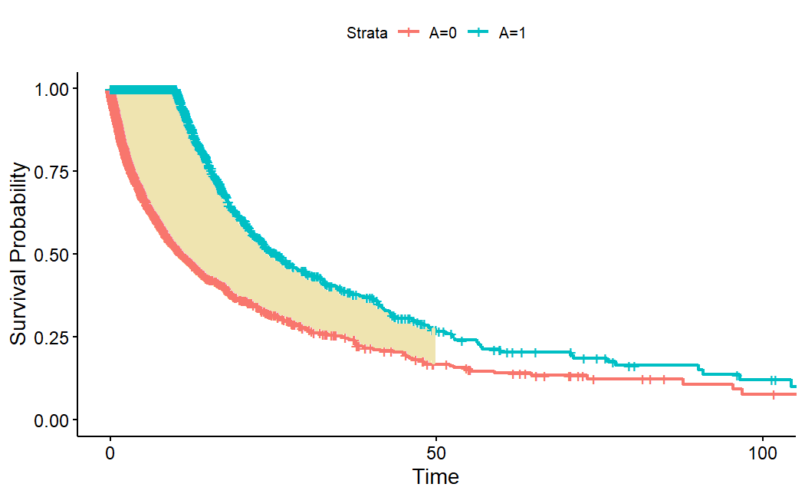
Figure 1: Plot of Kaplan-Meier survival curve for treated and control. The \theta_{RMST} at \tau=50 is represented in yellow
The difference in Restricted Mean Survival Time is a time-dependent measure that can be easily understood with the help of Figure 1. The average survival time will naturally vary based on the value of \tau.
A very naive (and biased) estimator of the average treatment effect could be to compute the difference of the mean of the uncensored survival time between the treated and the untreated group:
Hide/Show the code
# Naive estimator: # Warning, this estimator does not take into account censoring# This estimator is in all context biasedNaive <-function(data, tau) {# Remove censored observations data<- data[data$status ==1, ]# Compute the restricted survival time data$T_obs_tau <-ifelse(data$T_obs >= tau, tau, data$T_obs)# Compute the difference of the restricted mean survival time of treated # and control mean_naive <-mean(data$T_obs_tau[data$A ==1]) -mean(data$T_obs_tau[data$A ==0])return(mean_naive)}
This estimator eliminates censored observations, which represents a considerable loss of information. A reliable estimator of \theta_{RMST} must include censored observations but also be expressed with observed quantities. To do this, certain identifiability assumptions are necessary to allow the ATE to be identified in different contexts.
2.3 General identifiability assumptions
A general identifiability assumption, already well-known in the field of causal inference, needs to be introduced:
Assumption 1: Consistency and no-interference Assumption (Stable Unit Treatment Value Assumption: SUTVA)
T = AT(1) + (1-A)T(0)
\tag{1}
This Equation 1 means that unit i’s potential outcomes do not depend on the treatments of other units. This is known as the no-interference assumption. Basically, this assumption can be violated in cases of infectious diseases. Additionally, Equation 1 means that there are no other versions of the treatment (Ding 2023).
As introduced in Section 1, it is crucial to consider the mechanism of censoring to identify appropriate estimators of \theta_{RMST}.
2.3.1 Censoring mechanism
This article focuses only on right censoring with two mechanisms of censoring considered. The first one is independent censoring:
Assumption 2: Independent/ Non informative censoring
C \perp\mkern-9.5mu\perp T(0),T(1),X,A
\tag{2}
Under Equation 2, subjects censored at time t are representative of all subjects who remain at risk at time t. It is as if the censored subjects were randomly selected from all subjects.
The case of dependent censoring considers that censoring is conditionally independent on covariates.
Assumption 3: Conditionally independent censoring
C \perp\mkern-9.5mu\perp T(0),T(1)|X_c,A
\tag{3} with X_c is the set of covariables which influence the censoring mechanism.
Under Equation 3, within subgroups represented by X_c=x, subjects censored at time t are representative of all subjects in their subgroup who remain at risk at time t. It is as if the censored subjects were randomly selected inside each subgroup. This assumption is very similar to the assumption of uncounfoundedness in causal inference. This assumption implies that there are no unmeasured confounders for censoring.
Another assumption for identifiability of \theta_{RMST} is required in case of conditionally independent censoring: we need to assume that all subjects have a positive probability to remain uncensored at their failure time.
Assumption 4: Positivity / Overlap for censoring
0 < P( C > t \mid X_c=x, A=a) < 1, \forall t\leq \tau.
\tag{4}
This assumption ensures that, for any time t, the probability of censoring is neither 0 nor 1, allowing for balance in the censoring mechanism across subgroups. If violated, it means that results are either only observed before or after time t, which can limit the analysis. In practice, adjusting the threshold time \tau can help meet this assumption. For example, in a 5-year clinical study, if patients leave due to severe side effects or worsening health, censoring becomes dependent. In such cases, the likelihood of remaining uncensored for severely ill patients at 5 years is zero. To address this, \tau can be adjusted so that participants have a chance to remain uncensored up to a revised threshold time. Despite its strength, this assumption can be verified by modeling the conditional probability of censoring using methods like the Cox model or survival forest, and checking for non-zero probabilities across covariate subgroups. We will next consider the identifiability assumptions for randomized clinical trials, starting with this simpler but more robust design.
3 Causal survival analysis with a Randomized Control Trial
Randomized clinical trials (RCTs) are the gold standard for establishing the effect of a treatment on an outcome, because treatment allocation is under control, which ensures (asymptotically) the balance of covariates between treated and controls, and thus avoids problems of confounding between covariables and treatment. The core assumption in a RCT is the random assignment of the treatment (D. B. Rubin 1974).
Assumption 5: Random treatment assignment
A \perp\mkern-9.5mu\perp(T(0),T(1),C,X)
\tag{5}
Equation 5 implies that the treatment is given at random and is independent of both the potential outcomes and the covariates. It is like flipping a coin to decide the treatment assignment. In that case, as the covariates are balanced between treated and control (the treatment assignment does not depend on covariates), the causal effect is direct.
In the context of no censoring, causal effect is straightforward and can be measure with one simple estimator (such as OLS estimator). But in our case, censoring is present and the censoring mechanism has to be considered. In the next section, we will introduce identifiability of \theta_{RMST} and the corresponding estimator in the simple case: independent censoring.
3.1 Independent censoring
The Figure 2 illustrates a simple causal graph when the study is randomized with independent censoring.
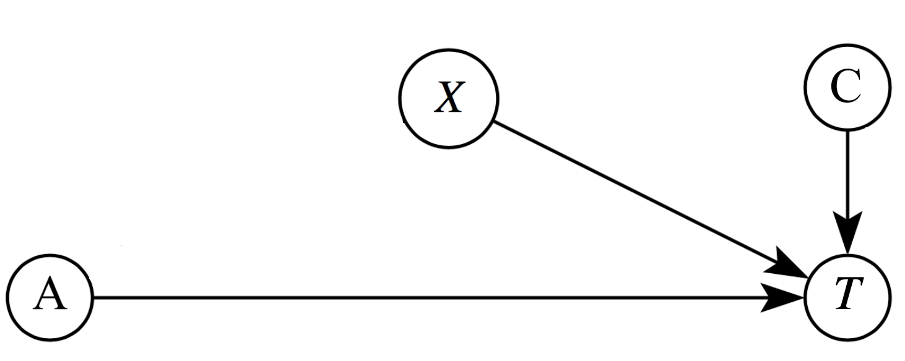
Figure 2: Illustration of a simple causal graph in RCT survival data with independent censoring (A is the treatment, X the precision variables, T is the time to event outcome and C is the time of censoring)
3.1.1 Identifiability
Under Equation 5 (random treatment assignment) and Equation 2 (independent censoring), the difference in RMST, \theta_{RMST}, can be identified as follows:
Voir si c’est cohérent de pousser un peu plus les équations pour que l’utilisation de Kaplan-Meier soit evident
\mathbb{P}(T>t|A=a) (S(t,A=a)) is the survival function and can be estimated using usual estimator of survival function such as Kaplan meier estimator, cox model, etc.
3.1.2 Estimation with Unadjusted Kaplan-meier
The straightforward estimator of the Equation 6 is the difference of Unadjusted Kaplan Meier estimator for the treated and control group:
The corresponding \theta_{RMST} is obtained in integrating from 0 to \tau the difference between unadjusted Kaplan Meier estimator of the treated and controls (Equation 6):
3.1.2.1 Properties of Unadjusted Kaplan Meier estimator
Unadjusted Kaplan Meier for the survival function is a nonparametric MLE (maximum likelihood estimator). Its asymptotic properties has been derived firstly by Breslow and Crowley (1974). An other simple way of deriving the asymptotic properties is to consider Kaplan-Meier estimator as a Martingale process (Survival and Event History Analysis: A Process Point of View 2008). Kaplan-Meier is proved to be:
Asymptotically normal for a fixed t: \sqrt{n}\left(\hat{S}\left(t\right)-S\left(t\right)\right) \underset{n \rightarrow \infty}{\stackrel{\mathcal{L}}{\longrightarrow}} \mathcal{N}\left(0, V^2\left(t\right)\right) with V^2\left(t\right)=-S^2\left(t_0\right) \int_0^{t} \frac{S(d u)}{S^2(u) G(u)}.
To derive this asymptotic distribution, we need to assume that the proportion of the sample at risk at time t becomes stable as the sample size increases (Survival and Event History Analysis: A Process Point of View 2008) and that the censoring is not informative (independent).
Under the same conditions, the Restricted Mean Survival Time (F(t)=\int_0^\tau S(t)dt) derived by an unadjusted Kaplan-Meier is proved to be:
For better interpretability and transparency, we implement an unadjusted Kaplan-Meier estimator and apply the rectangle integration method (detailed in Section 9) between 0 and \tau for both survival curves (control and treated) to obtain \theta_{RMST} (as shown in Figure 1). Alternatively, existing packages can be used for these calculations. For instance, the Kaplan-Meier curve can be generated with the survfit() function from the survival package (Therneau 2001), and the restricted mean survival time can be derived using the rmean() function through the same rectangle integration method, followed by calculating the difference. Both approaches are equivalent and yield the same results.
The following code includes several functions :
Integral_rectangles computes the integral of a given function by the method of rectangle integration
Kaplan_meier_handmade enables to compute the Kaplan-Meier estimator for both treated and control group.
RMST_1 computes \theta_{RMST} by using the two previous function.
Hide/Show the code
# Function to calculate the integral of a decreasing function using # the rectangle method# x corresponds to the x coordinate of the function to integrate# y corresponds to the y coordinateintegral_rectangles <-function(x, y) {# Check if the lengths of x and y are the sameif (length(x) !=length(y)) {stop("Lengths of x and y must be the same") }# Calculate the width of each rectangle dx <-diff(x)# Initialize the sum integral_sum <-0# Iterate through each rectangle and sum up the areasfor (i in1:(length(x) -1)) {# Calculate the height of the current rectangle height <-min(y[i], y[i +1])# Multiply the height by the width and add it to the sum integral_sum <- integral_sum + height * dx[i] } mean <- integral_sum + x[1]# Return the final integral sumreturn(mean)}# Kaplan-Meier estimator handmade implementation# The database 'data' must be in the same form as that shown in # notation (Table 1) and with the same variable name (status, T_obs) Kaplan_meier_handmade <-function(data, status = data$status, T_obs = data$T_obs) {# Sort unique observed times Y.grid <-sort(unique(T_obs))# Initialize vectors for number of events, number at risk, and survival # probability d <-rep(NA, length(Y.grid)) # Number of events at time Y.grid[i] n <-rep(NA, length(Y.grid)) # Number at risk just before time Y.grid[i] S <-rep(NA, length(Y.grid)) # Survival probability at time Y.grid[i]# Loop over each unique observed timefor (i in1:length(Y.grid)) { d[i] <-sum(T_obs == Y.grid[i] & status ==1, na.rm =TRUE) # Count events n[i] <-sum(T_obs >= Y.grid[i]) # Count at risk# Calculate survival probability S[i] <-cumprod(1- d / n)[i] }# Create a data frame with the results df <-data.frame(d = d, n = n, S = S, T = Y.grid)return(df)}# Function to calculate RMST (Restricted Mean Survival Time):# Method 1: Handmade KM with no truncation# Two possibilities of computing RMST : # - in using directly S_A1 and S_A0 (survival function of treated and control)# - in using the dataframe and the function computes the survival functionsRMST_1 <-function(data =NULL, A1 =1, A0 =0, tau, S_A1 =NULL, S_A0 =NULL) {if (is.null(S_A1) &is.null(S_A0)) {# Subset data for treatment groups data1 <- data[data$A == A1,] data0 <- data[data$A == A0,]# Calculate Kaplan-Meier survival estimates S_A1 <-Kaplan_meier_handmade(data1, status = data1$status, T_obs = data1$T_obs) S_A0 <-Kaplan_meier_handmade(data0, status = data0$status, T_obs = data0$T_obs)# Restrict observations to those less than or equal to tau Y.grid1 <- data1$T_obs[data1$T_obs <= tau] Y.grid0 <- data0$T_obs[data0$T_obs <= tau] } else {# Restrict observations to those less than or equal to tau Y.grid1 <- S_A1$T[S_A1$T <= tau] Y.grid0 <- S_A0$T[S_A0$T <= tau] }# Filter survival estimates to restricted observations S_A1 <- S_A1 %>% dplyr::filter(T %in% Y.grid1) S_A0 <- S_A0 %>% dplyr::filter(T %in% Y.grid0)# Check if there is any event at tau for S_A1if (!any(S_A1$T == tau)) { new_row <-tibble(T = tau, S = S_A1$S[nrow(S_A1)]) S_A1 <- dplyr::bind_rows(S_A1, new_row) }# Check if there is any event at tau for S_A0if (!any(S_A0$T == tau)) { new_row <-tibble(T = tau, S = S_A0$S[nrow(S_A0)]) S_A0 <- dplyr::bind_rows(S_A0, new_row) }# Calculate integrals from 0 to tau of survival probabilities intA1 <-integral_rectangles(S_A1$T, S_A1$S) intA0 <-integral_rectangles(S_A0$T, S_A0$S) RMST1 <- intA1 - intA0return(list(RMST=RMST1, intA1=intA1,intA0=intA0))}
It is crucial to adapt the integration method to the type of function being integrated. Since the Kaplan-Meier estimator is a step function, the rectangle method is the most suitable. However, when the survival function comes from a parametric model (e.g., Weibull or Exponential), a more precise method like the trapezoidal method is recommended (details in Section 9) to calculate \theta_{RMST}.
When censoring becomes conditionally independent on covariates, the previously mentioned estimators are insufficient, as they assume independent censoring. The next section introduces strategies to address this issue.
3.2 Conditional independent censoring
The Figure 3 illustrates a simple causal graph when the study is randomized with conditionally independent censoring.
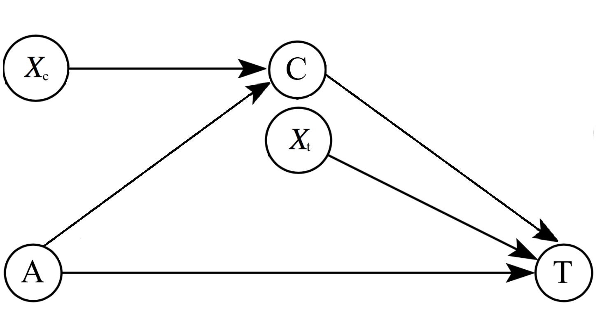
Figure 3: Illustration of a simple causal graph in RCT survival data with dependent censoring (A is the treatment, X_t the precision variables of the outcome, T is the time to event outcome, X_c the covariates which impact the censoring and C is the time of censoring)
Under Equation 5 (random treatment assignment) and Equation 3 (conditional independent censoring), a strategy to make the identification of the \theta_{RMST} possible can be to use a censoring unbiased transformation. A notable advantage of this transformation is that it enables the use of causal inference estimators in the same way as with fully observed data.
3.2.1 Notion of censoring unbiased transformation
The concept introduced by Fan and Gijbels (1994a) for local polynomial modeling in regression addresses censoring by transforming the data to create an unbiased fully observed population. This is achieved by ensuring E(T^*|X,A) = E(T \wedge \tau|X,A). Transformations such as the Buckley-James and inverse probability of censoring (IPC) transformations are used for this purpose. The IPC transformation is examined first, followed by the Buckley-James transformation. We will define these transformations, present the identifiability formula for \theta_{RMST} using the IPC transformation, and discuss estimation strategies for both transformations.
3.2.1.1 The inverse probability of censoring transformation (IPC transformation)
The inverse probability censoring weighting approach has been introduced in survival analysis by Koul, Susarla, and Ryzin (1981) to overcome bias due to conditionally independent censoring.
The IPC transformation is given by :
T^*(\tau)=\frac{\widetilde{T} \wedge \tau* \Delta^\tau}{S_c(\widetilde{T}\wedge \tau|X,A)}
where S_c(T \wedge \tau|X,A=a) is the survival function of remain uncensored truncated at \tau given the covariate X in the treatment arm A=a and \Delta^{\tau}=I\{T \wedge \tau < C\} is the status of the individual truncated at \tau.
IPC transformation verify E(T^*|X,A)=E(T \wedge \tau|X,A) (proof in Section 9).
Considering Equation 19, this transformation does not consider censored observations by weighting only the uncensored observations. It exits other censoring unbiased transformation such as Buckley James that consider also the censored observations.
3.2.1.2 Buckley James unbiased censoring transformation
This transformation has been introduced by Buckley and James (1979) (BJ). This is the earliest unbiased censoring transformation:
with Q_S(t|x,a) =E[T \wedge \tau | X=x,A=a,T \wedge \tau > t]= \frac{1}{S(T\wedge \tau|X=x,A=a)}\int_{t}^{+\infty}{t. d(1-S(T\wedge \tau|X=x,A=a)) } (proof in Section 9) with F the function of the cumulative probability (F(t) = \mathbb{P}(t \leq T)) and \bar{F} the complementary cumulative probability (S(t)=1-F(t)).
This transformation uses the uncensored observed values of the time-to-event \widetilde{T} \wedge \tau directly in the formula (as uncensored observations are fully complete) while the censored values of the time-to-event outcome \widetilde{T} \wedge \tau are extrapolated from an estimator Q_S(t|x,a) which corresponds to the expected remaining survival time given the covariates and treatment for censored observation.
Exactly than the inverse probability of censoring transformation, the Buckley James transformation verify E(T^*|X,A)=E(T \wedge \tau|X,A) (proof in Section 9).
Visually, these two transformations will create fully complete population as below:
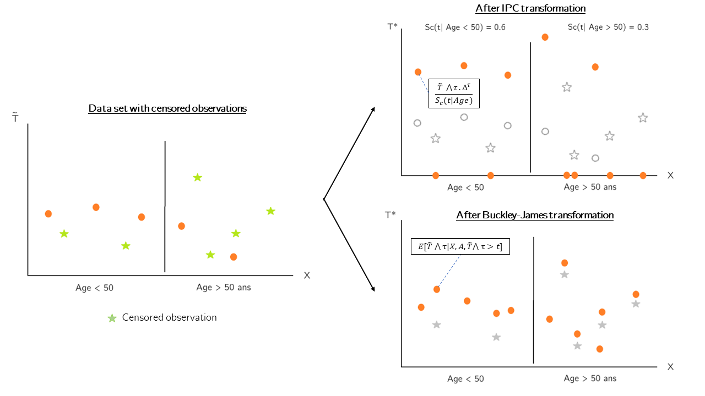
Figure 4: Illustration on Inverse Probability of Censoring and Buckley-James transformation
Unfortunately, the two previous transformation depends on nuisance parameters:
the censoring distribution S_c(t|x,a) for the IPC weighting transformation.
the conditional survival distribution Q_S(t|x,a) for the Buckley-James transformation.
If this nuisance parameters are not well estimated, the estimator using the transformation will be biased (Fan and Gijbels 1994b).
3.2.2 Identifiability using IPC transformation
Thus, under Equation 5 (random treatment assignment) and Equation 3 (conditionally independent censoring), the \theta_{RMST} can be identified as follows:
\begin{aligned}
\theta_{\text{RMST}} &= \mathbb{E} \left[ T(1) \wedge \tau - T(0) \wedge \tau \right] \tiny\quad (1)\\
&= \mathbb{E} \left[ T(1) \wedge \tau \right] - \mathbb{E} \left[ T(0) \wedge \tau \right] \\
&= \mathbb{E} \left[ \mathbb{E} \left[ T(1) \wedge \tau \mid A = 1, X \right] \right] - \mathbb{E} \left[ \mathbb{E} \left[ T(0) \wedge \tau \mid A = 0, X \right] \right] \tiny\quad (2) \\
& \tiny\text{(Law of total probability and Ignorability)} \\
&= \mathbb{E} \left[ \mathbb{E} \left[ T^*(1) \mid A = 1, X \right] \right] - \mathbb{E} \left[ \mathbb{E} \left[ T^*(0) \mid A = 0, X \right] \right] \tiny\quad (3)\\
& \tiny\text{(IPC transformation)} \\
&= \mathbb{E} \left[ T^*(1) \mid A = 1\right] - \mathbb{E} \left[ T^*(0) \mid A = 0 \right] \tiny\quad (4)\\
& \tiny\text{(Law of total probability)} \\
&= \mathbb{E} \left[ \textcolor{blue}{\frac{\widetilde{T}(1) \wedge \tau \cdot \Delta^\tau}{S_c(T \wedge \tau \mid A = 1, X)}} \mid A=1\right] - \mathbb{E} \left[ \textcolor{blue}{\frac{\widetilde{T} \wedge \tau \cdot \Delta^\tau}{S_c(T \wedge \tau \mid A = 0, X)}} \mid A=0 \right] \tiny\quad (5)\\
&= \int_0^\tau \mathbb{E} \left[ \frac{1\{ T(1) \geq t \} \cdot \Delta^\tau}{S_c(T \wedge \tau \mid A = 1, X)} \mid A = 1\right] - \mathbb{E} \left[ \frac{1\{ T(0) \geq t\} \cdot \Delta^\tau}{S_c(T \wedge \tau \mid A = 0, X)} \mid A = 0\right] dt \tiny\quad (6)\\
\end{aligned}
\tag{8}
The IPC transformation used in this identifiability equation has been detailed in the Section 3.2.1.1.
3.2.2.1 Estimation with IPCW Kaplan Meier
Under the assumptions of random treatment assignment (Equation 5), conditional censoring (Equation 3), and positivity for censoring (Equation 4), the unadjusted Kaplan-Meier (KM) estimator in Definition 2 can misestimate survival probabilities due to conditionally independent censoring (Willems et al. 2018). To correct for this, the adjusted IPCW (inverse probability of censoring weighting) Kaplan-Meier estimator (James M. Robins and Rotnitzky 1992; James M. Robins and Finkelstein 2000) is used. This estimator applies the weight \frac{\Delta^\tau}{S_c(T \wedge \tau \mid A = 1, X)} to observations in the KM estimator:
\hat{w_{i}}(t,X_i)=\frac{\Delta^{\tau}_i}{\hat{S_{c}}(t|X_{i},A_{i})} is the inverse of the probability of remain uncensored given the covariates X_{i} (IPC transformation) .
\hat{S_{c}}(t|X_{i},A_{i}) is based on the fit of parametric, semi-parametric (for example a Cox model) or even non-parametric model (such as survival forest) for censoring with X_i and A_i the covariates.
This estimator assigns higher weights to uncensored subjects within the same covariate group, correcting for conditionally independent censoring and reducing selection bias (Howe et al. 2016).
To estimate \theta_{RMST}, integrate the difference between the adjusted Kaplan-Meier estimates for treated and control groups from 0 to \tau:
James M. Robins et al. (1993)(fameuse publi introuvable mais très cité) shows that our IPCW estimate \hat{S}_{IPCW-KM}(t,a) is guaranteed to be consistent and asymptotically normal under Equation 3 and when the model of conditional censoring is correct (J. Robins, Rotnitzky, and Bonetti 2004). Also, James M. Robins and Finkelstein (2000) shows that IPCW estimate is asymptotically more efficient than the standard Kaplan-Meier estimator for failure in treatment arm a whenever the latter estimator is consistent (i.e., whenever censoring is independent).
3.2.2.1.2 Implementation
The following code includes several functions :
Adjusted.KM allows to compute the adjusted IPCW survival curve for treated and control (stratification on treatment) from given weights, times and events.
Estimate_survival_function enables to compute the probability of remain uncensored over the time, S_{c} in using cox model or survival forest (survival_forest function from grf(Tibshirani et al. 2017)). It allows cross-fitting for survival forest (n.folds>1).
IPCW_Kaplan_meier computes IPCW KM estimator by using the previous functions.
Hide/Show the code
# Kaplan-Meier adjusted# Times of event # Failures: 1 if event, 0 if censored# Variable: 1 if treated, 0 if control# Weights: weight of the individualadjusted.KM <-function(times, failures, variable, weights =NULL) {# Sanity checksif (sum(times <0) >0) {stop("Error: times must be positive") }if (!is.null(weights) &&sum(weights <0) >0) {stop("Error: weights must be superior to 0") }if (sum(failures !=0& failures !=1) >0) {stop("Error: failures must be a vector of 0 or 1") }# If 'weights' is NULL, initialize 'w' with ones of the same length as 'times', # otherwise use 'weights' w <-if (is.null(weights)) rep(1, length(times)) else weights# Create a DataFrame 'data' with columns t (times), f (failures), # v (stratification variable: often treatment variable), and w (weights) data <-data.frame(t = times, f = failures, v = variable, w = w)# Remove rows from the DataFrame where the stratification variable is NA data <- data[!is.na(data$v),]# Initialize an empty DataFrame to store the Kaplan-Meier results table_KM <-data.frame(times =NULL, n.risk =NULL, n.event =NULL, survival =NULL, variable =NULL)# Loop over each unique value of the stratification variablefor (i inunique(variable)) {# Subset the data for the current stratification variable value d <- data[data$v == i,]# Create a sorted vector of unique event times, including time 0 and the # maximum time tj <-c(0, sort(unique(d$t[d$f ==1])), max(d$t))# Calculate the number of events at each time point dj <-sapply(tj, function(x) {sum(d$w[d$t == x & d$f ==1]) })# Calculate the number of individuals at risk at each time point nj <-sapply(tj, function(x) {sum(d$w[d$t >= x]) })# Compute the cumulative product for the survival probabilities st <-cumprod((nj - dj) / nj)# Append the results to the Kaplan-Meier table table_KM <-rbind(table_KM, data.frame(T = tj, n = nj, d = dj, S = st, variable = i)) }return(table_KM)}# Estimate survival function with covariates for each individual at each time Y.grid# Type of model can be cox or survival forest (n.fold must be completed in this case)# This function is used also to compute S_c with status = censor.statusestimate_survival_function <-function(data, X.names, Y.grid, type_of_model ="cox",T_obs ="T_obs", status ="status", n.folds =NULL) {if (type_of_model =="cox") {# Formula for cox model (single learner: A as a covariate,# T-learner: Stratified fit on A)# Here only T-learner outcome <-paste0('Surv(', T_obs, ',', status, ')') formula <-as.formula(paste(outcome, paste(c(X.names), collapse =" + "), sep =" ~ ")) data.1<- data%>%filter(A==1) data.0<- data%>%filter(A==0) # Cox model fitting stratified on A=1 fitS1 <-suppressWarnings(coxph(formula, data = data.1, x =TRUE))# Suppress NA in coefficient fitS1$coefficients[is.na(fitS1$coefficients)] <-0# Cox model fitting on A=0 fitS0 <-suppressWarnings(coxph(formula, data = data.0, x =TRUE))# Suppress NA in coefficient fitS0$coefficients[is.na(fitS0$coefficients)] <-0 fit.pred1 <-predictCox(fitS1, newdata = data, times = Y.grid, type ="survival") fit.pred0 <-predictCox(fitS0, newdata = data, times = Y.grid, type ="survival") S_hat1 <- fit.pred1$survival S_hat0 <- fit.pred0$survival } else { # Survival forest# Initialization n <-nrow(data) fit.pred1 <-matrix(NA, nrow = n, ncol =length(Y.grid)) fit.pred0 <-matrix(NA, nrow = n, ncol =length(Y.grid))if (n.folds >1) {# Cross-fitting# Split the dataset into n-folds indices <-split(seq(n), sort(seq(n) %% n.folds))# For each index in each splitfor (idx in indices) {# Fit survival forest on observations removed from idx (training set) and A=1# A is not included in covariates (T-learner) forest.grf1 <-survival_forest(X =as.matrix(data[-idx & data[,"A"] ==1, X.names]),Y = data[-idx & data[,"A"] ==1, T_obs],D = data[-idx & data[,"A"] ==1, status],failure.times = Y.grid)# Fit survival forest on observations removed from idx (training set) and A=0# A is not included in covariates (T-learner) forest.grf0 <-survival_forest(X =as.matrix(data[-idx & data[,"A"] ==0, X.names]),Y = data[-idx & data[,"A"] ==0, T_obs],D = data[-idx & data[,"A"] ==0, status],failure.times = Y.grid)# Prediction on idx to avoid overfitting fit.pred1[idx,] <-predict(forest.grf1, as.matrix(data[idx, X.names]), failure.times = Y.grid)$predictions fit.pred0[idx,] <-predict(forest.grf0, as.matrix(data[idx, X.names]), failure.times = Y.grid)$predictions } } else {# No cross-fitting# Fit survival forest on all observations with A=1# A is not included in covariates (T-learner) forest.grf1 <-survival_forest(X =as.matrix(data[data[,"A"] ==1, X.names]),Y = data[data[,"A"] ==1, T_obs],D = data[data[,"A"] ==1, status],failure.times = Y.grid)# Fit survival forest on all observations with A=0# A is not included in covariates (T-learner) forest.grf0 <-survival_forest(X =as.matrix(data[data[,"A"] ==0, X.names]),Y = data[data[,"A"] ==0, T_obs],D = data[data[,"A"] ==0, status],failure.times = Y.grid)# Prediction on all observations fit.pred1 <-predict(forest.grf1, as.matrix(data[, X.names]), failure.times = Y.grid)$predictions fit.pred0 <-predict(forest.grf0, as.matrix(data[, X.names]), failure.times = Y.grid)$predictions } S_hat1 <- fit.pred1 S_hat0 <- fit.pred0 }# Associate the corresponding Survival curve to the observation S_hat <- S_hat1 * data$A + (1- data$A) * S_hat0return(list('S_hat'= S_hat, "S_hat1"= S_hat1, "S_hat0"= S_hat0, "T"= Y.grid))}# IPCW Kaplan-Meier estimator with restricted tauIPCW_Kaplan_meier <-function(data, tau, X.names.censoring, nuisance_censoring ="cox", n.folds =NULL) {# Compute of truncated T_obs, status and censored status data$T_obs_tau <-ifelse(data$T_obs >= tau, tau, data$T_obs) data$censor.status_tau <-1-as.numeric((data$T_obs >= tau) | (data$T_obs < tau & data$status ==1)) data$status_tau <-as.numeric((data$T_obs >= tau) | (data$T_obs < tau & data$status ==1)) Y.grid <-sort(unique(data$T_obs_tau))# Estimate probability of remaining uncensored based on nuisance model S_C_hat <-estimate_survival_function(data = data, X.names = X.names.censoring,Y.grid = Y.grid, T_obs ="T_obs_tau",status ="censor.status_tau",type_of_model = nuisance_censoring,n.folds = n.folds)# Select the probability of censoring for each observe T_obs_tau from the all# curve data$S_C <- S_C_hat$S_hat[cbind(1:nrow(data), match(data$T_obs_tau, Y.grid))]# Compute IPC weights data$weights <- data$status_tau / data$S_C# Compute the adjusted IPCW Kaplan Meier S <-adjusted.KM(times = data$T_obs, failures = data$status, variable = data$A, weights = data$weights)# Compute difference in RMST RMST <-RMST_1(S_A1 = S[S$variable ==1,], S_A0 = S[S$variable ==0,], tau = tau)return(list(RMST = RMST$RMST,intA1 = RMST$intA1,intA0 = RMST$intA0,weights = data$weights))}
It exists other solutions to identify \theta_{RMST}. One of them use directly the results using pseudo-observations from the unbiased censoring transformation in Section 3.2.1.1 or Section 3.2.1.2 without using survival function. In the following section, we will introduce the identifiability formulae using Buckley-James transformation known as the best restoration transformation. It will give us another estimator described in Section 3.2.3.1 to estimate \theta_{RMST}.
3.2.3 Identifiability using BJ transformation
Under Equation 5 (random treatment assignment) and Equation 3 (conditionally independent censoring), another identifiability formula can be derived from line 4 in Equation 8 in using Buckley-James transformation (Section 3.2.1.2):
with n_1 corresponds to the number of observations in the treated group, n_0 corresponds to the number of observations in the control group and \hat{Q_{S}}(\widetilde{T} \wedge \tau \mid X, A) = \frac{1}{\hat{{S}}(\widetilde{T} \wedge \tau \mid X, A)}\int_{\widetilde{T} \wedge \tau}^{+\infty}{\widetilde{T} \wedge \tau. d\hat{F}(\widetilde{T} \wedge \tau \mid X, A) } the estimation function of the remaining survival function (E[\widetilde{T} \wedge \tau \mid X,A, \widetilde{T} \wedge \tau>t])
This estimator is the illustration that \theta_{RMST} can be computed directly without integrate the restricted survival function. It does the average of the RMST using fully complete pseudo-observation from Buckley-James transformation of each group. This estimator behaves as if there is no censoring.
3.2.3.1.1 Properties of Buckley-James estimator
BJ transformation is considered as the best predictor of the original response in the sens that \mathbb{E}(T-T^*(O))^2 \leq \mathbb{E}(T-T^*)^2 among all censoring unbiased transformation. It can be regarded as the best restoration (Fan and Gijbels 1994b). But, as presented in Section 3.2.1.2, the properties of BJ estimator is dependent on the model specification of Q_{s}. If the model specification is correct, then BJ transformation is considered as the best predictor of the original response among all censoring unbiased transformation.
3.2.3.1.2 Implementation
The following code includes several functions :
Q_t_hat computes Q_s(t|x,a) for each timepoint and individuals which uses the previously implemented function estimate_survival_function.
BJ computes the \theta_{RMST} by implementing the Buckley-James estimator and in using the previous functions.
Hide/Show the code
# Compute the remaining survival function at all time pointsQ_t_hat <-function(data, tau, X.names.outcome =c("X1", "X2", "X3", "X4"),nuisance ="cox", n.folds =NULL) {# Truncate observed times at tau data$T_obs_tau <-ifelse(data$T_obs >= tau, tau, data$T_obs) Y.grid <-sort(unique(data$T_obs_tau))# Estimate the conditional survival function S_hat_all <-estimate_survival_function(data = data,X.names = X.names.outcome,Y.grid = Y.grid,type_of_model = nuisance,n.folds = n.folds ) S.hat <- S_hat_all$S_hat# Initialize Q.hat matrix Y.diff <-diff(c(0, Y.grid)) Q.hat <-matrix(NA, nrow(S.hat), ncol(S.hat))# Calculate dot products for conditional expectations dot.products <-sweep(S.hat[, 1:(ncol(S.hat) -1)], 2, Y.diff[2:ncol(S.hat)], "*") Q.hat[, 1] <-rowSums(dot.products)# Update Q.hat backwards to compute conditional expectationsfor (i in2:(ncol(Q.hat) -1)) { Q.hat[, i] <- Q.hat[, i -1] - dot.products[, i -1] }# Normalize by survival probabilities and add back time points Q.hat <- Q.hat / S.hat Q.hat[is.infinite(Q.hat)] <-0 Q.hat <-sweep(Q.hat, 2, Y.grid, "+") Q.hat[, ncol(Q.hat)] <-max(Y.grid)return(Q.hat)}# Find the remaining survival function at a specific time yQ_Y <-function(data, tau, Q.t.hat) {# Truncate observed times at tau data$T_obs_tau <-ifelse(data$T_obs >= tau, tau, data$T_obs) Y.grid <-sort(unique(data$T_obs_tau))# Find the corresponding Q_t Y.index <-findInterval(data$T_obs_tau, Y.grid) Q.Y.hat <- Q.t.hat[cbind(seq_along(Y.index), Y.index)]return(Q.Y.hat)}# Compute the Restricted Mean Survival Time (RMST) differenceBJ <-function(data, tau, X.names.outcome =c("X1", "X2", "X3", "X4"),nuisance ="cox", n.folds =NULL) {# Truncate observed times at tau data$T_obs_tau <-ifelse(data$T_obs >= tau, tau, data$T_obs) Y.grid <-sort(unique(data$T_obs_tau))# Censoring status at tau data$status_tau <-as.numeric((data$T_obs >= tau) | (data$T_obs < tau & data$status ==1))# Compute Q_t for all time points Q_t <-Q_t_hat(data, tau, X.names.outcome, nuisance, n.folds) data$Q_y <-Q_Y(data, tau, Q_t)# Split data by treatment group data_treated <- data %>% dplyr::filter(A ==1) data_not_treated <- data %>% dplyr::filter(A ==0)# Calculate Restricted Survival Time (RST) for each group data_treated$RST <- data_treated$status_tau * data_treated$T_obs_tau + (1- data_treated$status_tau) * data_treated$Q_y data_not_treated$RST <- data_not_treated$status_tau * data_not_treated$T_obs_tau + (1- data_not_treated$status_tau) * data_not_treated$Q_y# Calculate RMST (Restricted Mean Survival Time) difference between # treated and not treated RMST <-mean(data_treated$RST) -mean(data_not_treated$RST)# Return RMST and other relevant metricsreturn(list(RMST = RMST, ATE_treated =mean(data_treated$RST), ATE_not_treated =mean(data_not_treated$RST) ))}
The previous estimators are suitable for RCT settings but not for more complex contexts such as observational studies. The next section will introduce more sophisticated estimators to measure the Average Treatment Effect (ATE) in the context of observational studies.
4 Causal survival analysis with an observational study
In contrast to randomized controlled trials (RCTs), observational data, such as data from registries, electronic health records, and national health data systems, are collected without controlled interventions on treatment allocation.
In this setting, treated and control groups can be unbalanced due to the non-randomized design, meaning that the treatment allocation is not controlled. Consequently, the causal effect of the treatment is confounded by variables X_t, which affect both the time-to-event outcome T and the treatment allocation A.
The assumption of randomized treatment assignment, as presented in Equation 5 (see Section 3), is not satisfied in observational studies. To enable the identifiability of the causal estimand, additional assumptions regarding treatment allocation are needed. These assumptions are standard in causal inference methods with observational data and can be extended to identify \theta_{RMST}:
A \perp\mkern-9.5mu\perp(T(0),T(1)) | X_t
\tag{11} with X_t the set of covariates that are related both to treatment’s assignment and outcomes.
Under Assumption Equation 11, the treatment assignment is randomly assigned conditionally on the covariates X. It is as if the treatment for all subjects were randomly selected inside each subgroup. Exactly than Equation 3, this assumption assumes that there are no unmeasured confounders as unobserved confounders make it impossible to separate correlation and causality.
Assumption 6: Positivity / Overlap for treatment
1 > P(A=a \mid X_t=x)>0
\tag{12}
The Equation 12 assumption requires adequate overlap in covariate distributions between treatment groups, meaning every observation must have a non-zero probability of being treated.
In addition to confounding bias, censoring bias must also be addressed, as discussed in Section 3. The censoring mechanism assumptions from Section 2.3.1 remain applicable. The next section will present the identifiability formula, corresponding estimator, and implementation when censoring is independent in observational studies. Following this, we will cover identifiability formulas when censoring is conditionally dependent on X_c, with their estimators and implementations.
In the following section, we will consider that the variables X_t=X_c=X.
4.1 Independent censoring
The figure below (referenced as Figure 5) illustrates a simple causal graph in observational survival data with independent censoring, showing that the causal effect is not easily identifiable without additional assumptions:
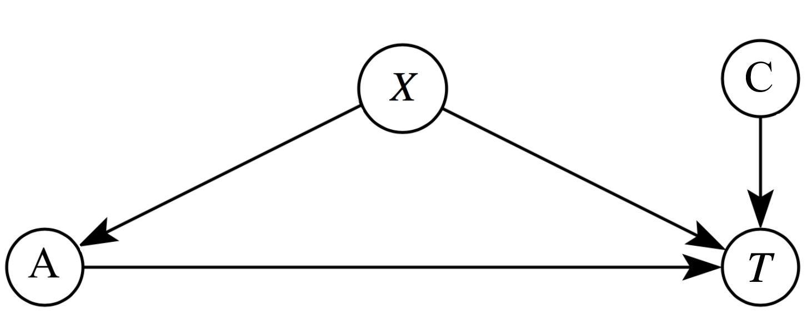
Figure 5: Illustration of a simple causal graph in observational survival data with independent censoring (A is the treatment, X_t the confounding variable and T is the time to event outcome and C is the censoring)
4.1.1 Identifiability
Under Equation 11 (Uncounfoundedness) and Equation 2 (independent censoring), the RMST can be identified as follows:
This inverse probability treatment weighting approach is similar to the method for IPW estimator used in causal inference to correct the bias due to some confounding variables. The use of propensity score in causal inference has been introduced by Rosenbaum and Rubin (1983) and extended to survival analysis by Xie and Liu (2005).
4.1.1.1 Estimation with IPTW Kaplan Meier
Under Equation 11 (Uncounfoundedness) and Equation 2 (independent censoring), an adjusted Kaplan Meier estimator is easily derived from the identifiability Equation 13. This estimator includes a weighting term to take into account that the treated and control groups are unbalanced. This weighted estimator is called the inverse probability of treatment weighted Kaplan Meier estimator (IPTW-KM) (Xie and Liu 2005):
\hat{w_{i}}=\frac{A_{i}}{\hat{e}(X_{i})}+ \frac{1-A_{i}}{1-\hat{e}(X_{i})} the inverse of the propensity score.
e(X_i)=P(A_i=1|X_i) is the propensity score.
In the exact same way than before, the corresponding \theta_{RMST} is obtained in integrating from 0 to \tau the difference between IPTW adjusted Kaplan Meier estimator of the treated and controls.
4.1.1.1.1 Properties of IPTW Kaplan Meier estimator
Under Equation 11 and Equation 12, and that \sup_{X_i} |\hat{e}(X_i) - e(X_i)| \xrightarrow{P} 0, IPTW adjusted Kaplan-Meier is a consistent estimate of the survival function :
\hat{S}_{IPTW}(t) \xrightarrow{P} S(t)\quad \forall t \leq \tau
The propensity score can be estimated given X,A in using parametric or non-parametric model, then the corresponding variance of IPTW Kaplan-Meier estimator is estimated by (Xie and Liu 2005):
Estimate_propensity_score enables to compute the probability of being treated over the time e(X) in using logistic regression or probability forest (probability_forest function from grf(Tibshirani et al. 2017)). It allows cross-fitting for probability forest (n.folds>1).
IPTW_Kaplan_meier computes the presented estimator and regroups the previous function and adjusted.KM presented in Section 3.2.2.1.2.
Hide/Show the code
# Function to estimate propensity scoreestimate_propensity_score <-function(data, treatment_covariates, type_of_model ="glm", n.folds =NULL) {# Generalized Linear Model (GLM)if (type_of_model =="glm") { outcome <-'A' f <-as.formula(paste(outcome, paste(c(treatment_covariates), collapse =" + "), sep =" ~ ")) fitA <-glm(f, data = data, family =binomial(link ="logit")) e_hat <-predict(fitA, newdata = data, type ="response") }# Probability Forest (only for continuous variables, # categorical variables need one-hot encoding)if (type_of_model =="probability forest"&&!is.null(n.folds)) {# Initialization n <-nrow(data) e_hat <-rep(NA, n) A <- data$A# Cross-fitting to avoid overfitting if (n.folds >1) { # Split the dataset into n folds indices <-split(seq(n), sort(seq(n) %% n.folds))# Learn and predict for each foldfor (idx in indices) {# Learn on all data except idx propensity_model <-probability_forest(as.matrix(data[-idx, treatment_covariates]),as.factor(A[-idx]))# Predict on idx e_hat[idx] <-predict( propensity_model, newdata =as.matrix(data[idx, treatment_covariates]))$predictions[, 2] } } # No cross-fittingelseif (n.folds ==0| n.folds ==1) { propensity_model <-probability_forest(as.matrix(data[, treatment_covariates]),as.factor(A)) e_hat <-predict( propensity_model,newdata =as.matrix(data[, treatment_covariates]))$predictions[, 2] } }return(e_hat)}# Function to calculate IPTW Kaplan-MeierIPTW_Kaplan_meier <-function(data, tau, X.names.propensity, nuisance_propensity ="glm", n.folds =NULL) {# Estimate propensity scores data$e_hat <-estimate_propensity_score( data,treatment_covariates = X.names.propensity,type_of_model = nuisance_propensity,n.folds = n.folds)# Truncate observed times at tau data$T_obs_tau <-pmin(data$T_obs, tau)# Define censoring status at tau data$status_tau <-as.numeric((data$T_obs >= tau) | (data$T_obs < tau & data$status ==1))# Calculate weights data$weights <- (data$A) * (1/ data$e_hat) + (1- data$A) / (1- data$e_hat)# Adjusted Kaplan-Meier estimator S <-adjusted.KM(times = data$T_obs, failures = data$status,variable = data$A, weights = data$weights)# Calculate RMST from the adjusted survival curves RMST <-RMST_1(S_A1 = S[S$variable ==1,], S_A0 = S[S$variable ==0,], tau = tau)return(list("intA0"= RMST$intA0, "intA1"= RMST$intA1, "RMST"= RMST$RMST))}
The next section will present several identifiability formulae when conditional independent censoring is met in an observational study.
4.2 Conditional independent censoring
The figure below (referenced as Figure 6) illustrates a simple causal graph in observational survival data with conditionally independent censoring:
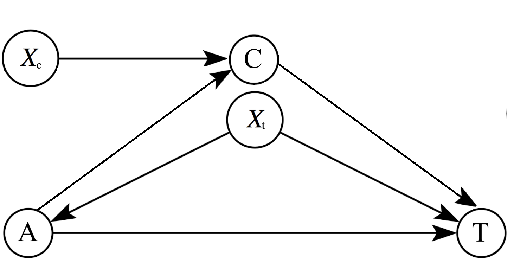
Figure 6: Illustration of a simple causal graph in observational survival data with dependent censoring (A is the treatment, X_t the confounding variable and T is the time to event outcome and C is the censoring and X_c is the covariates which impact the censoring)
Under Equation 11 (uncounfoundedness) and Equation 3 (conditional independent censoring), the causal effect is affected both by confounding variables (confounding bias) and by conditional censoring. In this context, \theta_{RMST} can be identified using the conditional survival function without the need for weighting corrections. This approach results in the following identifiability formula and plug-in estimator.
4.2.1 Identifiability of \theta_{RMST} by using conditional survival function
Under Equation 11 (uncounfoundedness), the \theta_{RMST} can be identified very easily as follow:
This identifiability formula stands out from the others in this rather complex context because of its simplicity. The plug-in estimator derived from this formula is the g-formula. In the identification formula, it seems that this corresponding estimator does not need the Equation 3 and Equation 4 to be verified (conditional independent censoring and positivity for censoring). But these assumptions are implicit and necessary to allow an estimation of the conditional restricted mean survival.
4.2.1.1 Estimation with G-formula estimator
Introduced by J. Robins (1986), the G-formula addresses confounding bias in causal inference and can be applied to survival data. Unlike IPCW, it models the conditional mean of the outcome and marginalizes over the empirical covariate distributions for each treatment arm. The plug-in estimator is:
with \hat{F}(x, a) \triangleq \mathbb{E}[T \wedge \tau \mid X=x, A=a]=\int_0^\tau S_a(t,x) dt the estimation of the conditional restricted mean survival time.
An illustration of G-formula computation is displayed below:
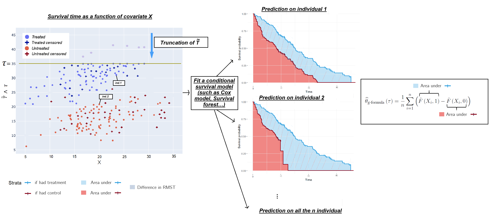
Figure 7: Illustration of the G-formula Process for calculating \theta_{RMST}
S_a(t, x) can be estimated through parametric (e.g., Weibull), semi-parametric (e.g., Cox), or non-parametric models (e.g., survival random forests). Two methods can be used:
S-learner: Fit a single model on both covariates and treatment, predicting for both treated and control groups.
T-learner: Fit separate models for treated and control groups, then predict as if all observations had received each treatment.
The choice between the two methods depends on the model used. For instance, if you are using a Cox model and the proportional hazards assumption is violated for the treatment variable, the S-learner may not be appropriate, and the T-learner would be a better option.
4.2.1.1.1 Properties of G-formula plug-in estimator
Chen and Tsiatis (2001) proove the asymptotic normality of the G-estimator assuming a proportional hazard relationship. The article also derive an expression of the asymptotic variance of G-formula estimator.
Moreover, G-formula plug-in estimator is simple to implement and also very stable.
4.2.1.1.2 Implementation
The following code implements several function :
Expected_survival computes the integral by the trapezoidal rule (described in Section 9) of a given survival function.
g_formula_T_learner computes the presented G-formula plug in estimator in using two-learners survival forest or cox regression. It allows cross-fitting for survival forest (n.folds>1).
g_formula_S_learner computes the presented G-formula plug in estimator in using a single learner survival forest or cox regression. It allows also cross-fitting for survival forest (n.folds>1).
Hide/Show the code
# Compute the area under the survival curve for each individual using the # Trapezoidal rule.# S.hat: predicted survival function for each individual.expected_survival <-function(S.hat, Y.grid) {# Y.grid: vector of time at which to evaluate the survival estimates # (same as S.hat).# Calculate the distance between each time point. grid.diff <-diff(c(0, Y.grid, max(Y.grid)))# Compute the area under each survival curve. area <-c(base::cbind(1, S.hat) %*% grid.diff)return(area)}# Function to estimate the g-formula Two-learner.g_formula_T_learner <-function(data, X.names.outcome, tau, nuisance_survival ="cox", n.folds =NULL) {# Compute min(T_obs,tau) data$T_obs_tau <-ifelse(data$T_obs >= tau, tau, data$T_obs)# Y.grid is the grid of time points where we want to estimate the # survival function. Y.grid <-sort(unique(data$T_obs_tau))# Subset data for A == 0. data0 <- data %>%filter(A ==0)# Subset data for A == 1. data1 <- data %>%filter(A ==1)# Cox if (nuisance_survival =="cox") { outcome <-'Surv(T_obs, status)'# cph do not support notation I(X^2) but X^2 directly (contrary to coxph) X.names.outcome <-gsub("I\\((X[0-9]+\\^2)\\)", "\\1", X.names.outcome)# Learn Cox regression on two datasets: A|X. f <-as.formula(paste(outcome, paste(c(X.names.outcome), collapse =" + "), sep =" ~ "))# Fit the two models on the covariates of time Y.grid. fitS0 <-cph(f, data = data0, y =TRUE, x =TRUE, times = Y.grid) fitS1 <-cph(f, data = data1, y =TRUE, x =TRUE, times = Y.grid)# Predict survival probabilities for each individual at each Y.grid. fit.pred1 <-predictCox(fitS1, newdata = data, times = Y.grid, type ="survival") fit.pred0 <-predictCox(fitS0, newdata = data, times = Y.grid, type ="survival")# Survival probabilities for each individual at each Y.grid. S_hat1 <- fit.pred1$survival S_hat0 <- fit.pred0$survival } else {# Survival forest.# Initialize objects n <-nrow(data) fit.pred1 <-matrix(NA, nrow = n, ncol =length(Y.grid)) fit.pred0 <-matrix(NA, nrow = n, ncol =length(Y.grid))if (n.folds >1) {# Split the dataset into n-folds. indices <-split(seq(n), sort(seq(n) %% n.folds))# For all index in each split.for (idx in indices) {# Fit survival forest on all observations with A=1 except idx forest.grf1 <-survival_forest(X =as.matrix(data[-idx & data[, "A"] ==1, X.names.outcome]),Y = data[-idx & data[, "A"] ==1, "T_obs"],D = data[-idx & data[, "A"] ==1, "status"],failure.times = Y.grid )# Fit survival forest on all observations with A=0 except idx forest.grf0 <-survival_forest(X =as.matrix(data[-idx & data[, "A"] ==0, X.names.outcome]),Y = data[-idx & data[, "A"] ==0, "T_obs"],D = data[-idx & data[, "A"] ==0, "status"],failure.times = Y.grid )# Predict on idx fit.pred1[idx, ] <-predict( forest.grf1, as.matrix(data[idx, X.names.outcome]),failure.times = Y.grid)$predictions fit.pred0[idx, ] <-predict( forest.grf0, as.matrix(data[idx, X.names.outcome]),failure.times = Y.grid)$predictions } } elseif (n.folds ==0| n.folds ==1) {# If no cross-fitting # Fit survival forest on all observation with A=1 forest.grf1 <-survival_forest(X =as.matrix(data[data[, "A"] ==1, X.names.outcome]),Y = data[data[, "A"] ==1, "T_obs"],D = data[data[, "A"] ==1, "status"],failure.times = Y.grid )# Fit survival forest on all observation with A=0 forest.grf0 <-survival_forest(X =as.matrix(data[data[, "A"] ==0, X.names.outcome]),Y = data[data[, "A"] ==0, "T_obs"],D = data[data[, "A"] ==0, "status"],failure.times = Y.grid )# Predict on all observations fit.pred1 <-predict(forest.grf1, as.matrix(data[, X.names.outcome]), failure.times = Y.grid)$predictions fit.pred0 <-predict(forest.grf0, as.matrix(data[, X.names.outcome]), failure.times = Y.grid)$predictions } S_hat1 <- fit.pred1 S_hat0 <- fit.pred0 }# Compute the area under each survival curve until max(Y.grid) = tau. E_hat1 <-expected_survival(S_hat1, Y.grid) E_hat0 <-expected_survival(S_hat0, Y.grid)# Calculate the mean difference. theta_g_formula <-mean(E_hat1 - E_hat0)return(theta_g_formula)}# Function to estimate the g-formula Single-learner.g_formula_S_learner <-function(data, X.names.outcome, tau, nuisance_survival ="cox", n.folds =NULL) {# Compute min(T_obs,tau) data$T_obs_tau <-ifelse(data$T_obs >= tau, tau, data$T_obs)# Y.grid is the grid of time points where we want to estimate the # survival function. Y.grid <-sort(unique(data$T_obs_tau))# Set A=0 for all data data0 <- data data0$A <-0# Set A=1 for all data data1 <- data data1$A <-1# Cox if (nuisance_survival =="cox") { outcome <-'Surv(T_obs, status)'# cph do not support notation I(X^2) but X^2 directly (contrary to coxph) X.names.outcome <-gsub("I\\((X[0-9]+\\^2)\\)", "\\1", X.names.outcome)# Learn Cox regression on one datasets and add A as covariate f <-as.formula(paste(outcome, paste(c(X.names.outcome,"A"), collapse =" + "), sep =" ~ "))# Fit the two models on the covariates of time Y.grid. fitS <-cph(f, data = data, y =TRUE, x =TRUE, times = Y.grid)# Predict survival probabilities for each individual at each Y.grid. fit.pred1 <-predictCox(fitS, newdata = data1, times = Y.grid, type ="survival") fit.pred0 <-predictCox(fitS, newdata = data0, times = Y.grid, type ="survival")# Survival probabilities for each individual at each Y.grid. S_hat1 <- fit.pred1$survival S_hat0 <- fit.pred0$survival } else {# Survival forest.# Initialize objects n <-nrow(data) fit.pred1 <-matrix(NA, nrow = n, ncol =length(Y.grid)) fit.pred0 <-matrix(NA, nrow = n, ncol =length(Y.grid))if (n.folds >1) {# Split the dataset into n-folds. indices <-split(seq(n), sort(seq(n) %% n.folds))# For all index in each split.for (idx in indices) {# Fit survival forest on all observations except idx (add A as covariate) forest.grf <-survival_forest(X =as.matrix(data[-idx, c(X.names.outcome,"A")]),Y = data[-idx, "T_obs"],D = data[-idx, "status"],failure.times = Y.grid )# Predict on idx fit.pred1[idx, ] <-predict( forest.grf, as.matrix(data1[idx, c(X.names.outcome,"A")]),failure.times = Y.grid)$predictions fit.pred0[idx, ] <-predict( forest.grf, as.matrix(data0[idx, c(X.names.outcome,"A")]), failure.times = Y.grid)$predictions } } elseif (n.folds ==0| n.folds ==1) {# If no cross-fitting # Fit survival forest on all observation (add A as covariate) forest.grf <-survival_forest(X =as.matrix(data[, c(X.names.outcome,"A")]),Y = data[, "T_obs"],D = data[, "status"],failure.times = Y.grid )# Predict on all observations fit.pred1 <-predict( forest.grf, as.matrix(data1[, c(X.names.outcome,"A")]), failure.times = Y.grid)$predictions fit.pred0 <-predict( forest.grf, as.matrix(data0[, c(X.names.outcome,"A")]), failure.times = Y.grid)$predictions } S_hat1 <- fit.pred1 S_hat0 <- fit.pred0 }# Compute the area under each survival curve until max(Y.grid) = tau. E_hat1 <-expected_survival(S_hat1, Y.grid) E_hat0 <-expected_survival(S_hat0, Y.grid)# Calculate the mean difference. theta_g_formula <-mean(E_hat1 - E_hat0)return(theta_g_formula)}
It exists other type of estimators valid in this context. The following section will present the identifiability formulae, corresponding estimators and implementations of another estimator with double correction weighting.
4.2.2 Identifiability of \theta_{RMST} by double weighting with IPC transformation
Under Equation 11 (uncounfoundedness) and Equation 3 (conditional independent censoring), \theta_{RMST} can be also identified as follow:
with \hat{w_{i}}(t,X_i)=\frac{\Delta^{\tau}_i}{\hat{S}_C\left(\widetilde{T} \wedge \tau \mid A_i, X_i\right)}*(\frac{A_{i}}{\hat{e}(X_{i})}+ \frac{1-A_{i}}{1-\hat{e}(X_{i})}) the corresponding weight including the inverse of the estimated propensity score (\hat{e}(X)) and the inverse estimated probability of remain uncensored given the covariates (\hat{S_c}(t|X)) and the censoring status at \tau (\Delta^{\tau}) already presented in Section 3.2 and Section 4.1.
This IPTW-IPCW Kaplan Meier estimator enables a balance between treatment and control groups and between censored and uncensored individuals. The corresponding \theta_{RMST} is the integral of the difference between the survival curve with A=1 and the A=0.
4.2.2.1.1 Properties of IPTW-IPCW Kaplan Meier estimator
Under the regularity conditions \hat{e}(x)=e^*(x) for almost all x and \hat{S}_C\left(\widetilde{T} \wedge \tau \mid a, x\right)=S^*_C\left(\widetilde{T} \wedge \tau \mid a, x\right) for all t \in [0, \tau]), Schaubel and Wei (2011) shows that estimated \hat{\theta}_{RMST} in using double weighting method converge almost surely and uniformly to \theta_{RMST} and that \hat{\theta}_{RMST}
Asymptotically normal for a fixed t: \sqrt{n}\left(\hat{\theta}_{RMST}(t)-\theta_{RMST}(t)\right) \underset{n \rightarrow \infty}{\stackrel{\mathcal{L}}{\longrightarrow}} \mathcal{N}\left(0, V^2\left(t\right)\right) with V^2 the covariance function expressed in Schaubel and Wei (2011).
Like the IPTW Kaplan-Meier (in Section 4.1.1.1) or the IPCW Kaplan-Meier (in Section 3.2.2.1), this estimator is even more subject to extreme weights since it is weighted by two inverse probabilities. This makes it very sensitive to positivity for censoring and treatment.
4.2.2.1.2 Implementation
The following code implements the IPTW-IPCW Kaplan Meier function, which uses the previously implemented functions:
estimate_survival_function (detailed and implemented in Section 3.2.2.1.2) which computes the probability of remaining uncensored over time S_c using either a Cox model or a survival forest.
estimate_propensity_score (detailed and implemented in Section 4.1.1.1.2) which computes the propensity score of each observation using a logistic model or a probability forest.
adjusted.KM (detailed and implemented in Section 3.2.2.1.2) which computes an adjusted Kaplan Meier estimator.
RMST_1 (detailed and implemented in Section 3.1.2.2) which computes RMST.
Hide/Show the code
IPTW_IPCW_Kaplan_meier <-function(data, X.names.propensity, X.names.censoring, tau,nuisance_propensity ="glm",nuisance_censoring ="cox",n.folds =NULL) {# Censoring time to tau if observed time exceeds tau data$T_obs_tau <-ifelse(data$T_obs >= tau, tau, data$T_obs)# Create censoring status for tau data$censor.status_tau <-1-as.numeric((data$T_obs >= tau) | (data$T_obs < tau & data$status ==1))# Create status at tau data$status_tau <-as.numeric((data$T_obs >= tau) | (data$T_obs < tau & data$status ==1))# Grid of unique observed times truncated at tau Y.grid <-sort(unique(data$T_obs_tau))# Estimate propensity scores data$e_hat <-estimate_propensity_score(data,treatment_covariates = X.names.propensity,type_of_model = nuisance_propensity,n.folds = n.folds)# Estimate survival function for censoring S_C_hat <-estimate_survival_function(data, X.names = X.names.censoring,Y.grid = Y.grid, T_obs ="T_obs_tau",status ="censor.status_tau",type_of_model = nuisance_censoring,n.folds = n.folds)# Get estimated survival probabilities for censoring data$S_C <- S_C_hat$S_hat[cbind(1:nrow(data), match(data$T_obs_tau, Y.grid))]# Calculate weights data$weights <- data$status_tau / data$S_C * (data$A * (1/ data$e_hat) + (1- data$A) * (1/ (1- data$e_hat)))# Compute adjusted Kaplan-Meier estimator S <-adjusted.KM(times = data$T_obs_tau, failures = data$status_tau, variable = data$A, weights = data$weights)# Compute Restricted Mean Survival Time (RMST) RMST <-RMST_1(S_A1 = S[S$variable ==1, ], S_A0 = S[S$variable ==0, ],tau = tau)# Return RMST and ATE for treated and not treated groupsreturn(list(RMST = RMST$RMST, ATE_treated = RMST$intA1, ATE_not_treated = RMST$intA0))}
As in Section 3.2.3, it exists other solutions to identify \theta_{RMST}. One of them apply directly the inverse propensity weighting on the pseudo-observation without using survival function. It leads to the following identifiability formula.
4.2.3 Identifiability of \theta_{RMST} by double weighting with BJ transformation
Under Equation 11 (uncounfoundedness), Equation 3 (conditional independent censoring) and Equation 4 (positivity for censoring) the \theta_{RMST} can be identified as follow:
The transition from line 5 to line 6 has been explained by the Buckley-James transformation explained in Section 3.2.1.2. The next section will start with the estimation based on the identifiability formula in Equation 18.
4.2.3.1 Estimation with IPTW-BJ estimator
Based on the identifiability of Equation 18, the IPTW-BJ estimator is defined as follow:
Exactly than simple BJ estimator (introduced in Section 3.2.3.1), this estimator is easier to implement than the weighting survival function.
4.2.3.1.1 Properties of IPTW-BJ estimator
Pas de publi (peut-être Per K. Andersen, Syriopoulou, and Parner (2017))
4.2.3.1.2 Implementation of IPTW-BJ estimator
The following code implements the IPTW-BJ function, which uses the previously implemented functions:
estimate_survival_function (detailed and implemented in Section 3.2.2.1.2) which computes the probability of remaining uncensored over time S_c using either a Cox model or a survival forest.
estimate_propensity_score (detailed and implemented in Section 4.1.1.1.2) which computes the propensity score of each observation using a logistic model or a probability forest.
Hide/Show the code
# In using the minIPTW_BJ <-function(data, X.names.propensity, X.names.outcome, tau,nuisance_propensity ="glm",nuisance ="cox",n.folds =NULL) {# Minimum of T_obs and tau data$T_obs_tau <-ifelse(data$T_obs >= tau, tau, data$T_obs)# Grid of unique observed times truncated at tau Y.grid <-sort(unique(data$T_obs_tau))# Indicator for min(T, tau) < C data$status_tau <-as.numeric((data$T_obs >= tau) | (data$T_obs < tau & data$status ==1))# Estimate propensity scores data$e_hat <-estimate_propensity_score(data,treatment_covariates = X.names.propensity,type_of_model = nuisance_propensity,n.folds = n.folds)# Estimation of Q_s Q_t <-Q_t_hat(data, tau, X.names.outcome, nuisance, n.folds) data$Q_y <-Q_Y(data,tau,Q_t)# BJ transformation data$Y <- data$status_tau * data$T_obs_tau + (1- data$status_tau) * data$Q_y# IPTW on BJ transformation data$RST <- data$Y * (data$A/data$e_hat-(1-data$A)/(1-data$e_hat)) RMST <-mean(data$RST)# Return RMST and other relevant metricsreturn(RMST)}
As seen in the previous properties, the estimators with inverse weighting such as IPTW-IPCW or BJ-IPTW are subject to instability and sensible to mis-specification of nuisance models. Regression based estimators such as G-formula are also subject to mis-specification of the outcome model. A possibility to overcome these issues is to use doubly robust corrections that is by property more robust to mis-specification. The next section will discuss the identifiability of \theta_{RMST} using doubly robust methods. First, by introducing the concept of the influence function, which enables the construction of the augmented version of IPTW. Then, the properties of this AIPTW estimator will be disclosed. Next, we will present the augmented version of IPCW, another unbiased censoring transformation. Finally, we will describe the corresponding estimator with double augmented weighting corrections for treatment and censoring and explain its theoretical properties.
4.2.4 Identifiability of \theta_{RMST} by augmented corrections
4.2.4.1 Augmented weighting for treatment from semi-parametric approach
The semi-parametric approach yields \sqrt{n}-consistent estimators with valid confidence intervals by deriving the efficient influence function (Hines et al. 2022). The influence function measures the sensitivity of an estimator to small perturbations in the sample distribution. Suppose we have a distribution P, perturbed distribution \bar{P}, and “mixture” distribution P_{\epsilon}= P + \epsilon(\bar{P}-P) with \epsilon \in [0;1](Fisher and Kennedy 2021). For the unknown true distribution P_0, the goal is to estimate \psi(P_0).
For the plug-in estimator \psi(P)=\mathbb{E}_{P}[\mathbb{E}_{P}(T \wedge \tau|X,A=1)], the influence function which satisfies Equation 22 (in Section 9) is expressed as (detail in Kennedy (2023)):
where \mathbb{P}_n means the corresponding sample average, \hat{F}(X) is the estimated conditional survival and \hat{e}(X) is the estimated propensity score.
When we come back to our estimand of interest \theta_{RMST}, \psi(P)=\mathbb{E}_{P}[\mathbb{E}_{P}(T \wedge \tau|X,A=1)-\mathbb{E}_{P}(T \wedge \tau|X,A=0)], the efficient influence function is then:
Semi-parametric estimators, like AIPTW, are doubly robust, meaning that AIPTW remains consistent if either the treatment model \hat{F}(X,A)=E[T \wedge \tau |X] or the outcome model \hat{e}(X) is correctly specified. This robustness can be explained by the decomposition of \hat{\psi} - \psi
\begin{aligned}
\widehat{\psi}-\psi & =\psi(\widehat{\mathbb{P}})+\mathbb{P}_n\{\varphi(Z ; \widehat{\mathbb{P}})\}-\psi(\mathbb{P}) \\
& =\left(\mathbb{P}_n-\mathbb{P}\right)\{\varphi(Z ; \widehat{\mathbb{P}})\}+R_2(\widehat{\mathbb{P}}, \mathbb{P}) \\
& =\underbrace{\left(\mathbb{P}_n-\mathbb{P}\right)\{\varphi(Z ; \mathbb{P})\}}_\textrm{S*}+\underbrace{\left(\mathbb{P}_n-\mathbb{P}\right)\{\varphi(Z ; \widehat{\mathbb{P}})-\varphi(Z ; \mathbb{P})\}}_{\textrm{T}_1}+\underbrace{R_2(\widehat{\mathbb{P}}, \mathbb{P})}_{\textrm{T}_2}
\end{aligned}
with S^{*}=o_{\mathbb{P}}(1/\sqrt{n}) by the central limit theorem. T_1, known as the empirical process, is of smallest order (sample average of a short term as \varphi(Z ; \widehat{\mathbb{P}}) converge to \varphi(Z ; \mathbb{P})) when working with not too complex estimators (such as Donsker estimator) and in using sample splitting. The double robustness properties can be explained by the remainder term T_2.
By Cauchy-Schwarz theorem, this remainder term T_2 can be lower and gives:
If \widehat{e}(x) \geq \epsilon > 0 and that the combination product of \| \widehat{e}-e\| and \|\widehat{F}-F \| give o_{\mathbb{P}}(\frac{1}{\sqrt{n}}), thus, \left|R_2(\widehat{\mathbb{P}}, \mathbb{P})\right|=o_{\mathbb{P}}(\frac{1}{\sqrt{n}}). In other words, the residual term tends towards zero even if one of the estimators widehat{F}(x) or widehat{e}(x) converges slowly while the other compensates by converging more quickly and vice-versa.
To conclude, AIPTW is root-n consistent, asymptotically normal (even in non-parametric approach) and attains the nonparametric efficiency bound (no estimator can have smaller mean squared error than this estimator) (Kennedy 2023).
This estimator only considers correction for treatment in case of confounding effect. In addition, it can be applied on complete observations. In our context of Equation 11 (uncounfoundedness) and Equation 3 (conditional independent censoring), this estimator cannot be applied. This augmented treatment weighting could be associated with transformations already mentioned above but an augmented transformation based on the semi-parametric approach also exists for censoring to overcome this problem and form an estimator that is also doubly robust for censoring.
This estimator is limited to complete observations. In the context of censoring, it becomes unsuitable as we refer to an incomplete data. This issue can be resolved with a previous introduced unbiased transformation for censoring. But, a semi-parametric approach would offer better solution, providing complete observation and a doubly robust estimator for censoring.
4.2.4.2 Augmented weighting for conditionally independent censoring from semi-parametric approach
The augmented weighting to correct conditionally independent censoring is considered as an augmented censoring unbiased transformation (simple transformations were introduced in Section 3.2.1).
With Q_{S}(\widetilde{T} \wedge \tau \mid X, A) = \frac{1}{{S}(\widetilde{T} \wedge \tau \mid X, A)}\int_{\widetilde{T} \wedge \tau}^{+\infty}{\widetilde{T} \wedge \tau. dF(\widetilde{T} \wedge \tau \mid X, A) } the estimation function of the remaining survival function (E[\widetilde{T} \wedge \tau \mid X,A, \widetilde{T} \wedge \tau>t])
4.2.4.2.1 Properties of AIPCW estimator
This estimator is root-n consistent, asymptotically normal (even in non-parametric approach) and attains the nonparametric efficiency bound (details in Laan and Robins (2003)) if either S_c(t|x,a) or Q_S(t|x,a) is correctly estimated.
In order to obtain a complete correction for confounding effect and conditionally independent censoring, the both estimator can be combined.
4.2.4.3 Double augmented weighting correction
The augmented inverse probability of treatment weighting (AIPTW) and the augmented inverse probability of censoring weighting (AIPCW) can be combined to form an augmented estimator of RMST with conditional censored data .
Definition 9 (AIPTW- AIPCW estimator (IPTW on pseudo-observation and correction on IPTW residuals))
\begin{aligned}
\small \hat \theta_{AIPTW-AIPCW} &= \frac{1}{n} \sum_{i=1}^{n}\left(\frac{A_{i}}{\hat{e}\left(X_{i}\right)}-\frac{1-A_{i}}{1-\hat{e}\left(X_{i}\right)}\right)\hat{T}^{*}_{DR} \\
&\quad + \hat{F}\left( X_{i},A=1\right)\left(1-\frac{A_{i}}{\hat{e}\left(X_{i}\right)}\right) - \hat{F}\left( X_{i},A=0\right)\left(1-\frac{1-A_{i}}{1-\hat{e}\left(X_{i}\right)}\right)
\end{aligned}
Basically, the above AIPTW-AIPCW applies direct IPTW on the augmented unbiased pseudo-population (that would have been observed if there was no censoring) and regression correction on IPTW residuals.
In this case, the estimator applies direct conditional survival and the residuals of the conditional survival (based on the augmented unbiased pseudo-population) is weighted by IPTW.
4.2.4.3.1 Properties of AIPTW-AIPCW estimator
The estimator AIPTW-AIPCW involves nuisance models for the outcome \hat{S} to estimate both Q_S and F, for the treatment to estimate the propensity score e and for the censoring to estimate S_c. As introduced in Section 4.2.4.1.1 and Section 4.2.4.2.1, this estimator achieves double robustness, root-n consistency and is asymptotically normal and attains the nonparametric efficiency bound (Kennedy 2023). Concerning the double robustness, the estimator is expected to be consistent only if:
\hat{S}_c(t|a,x) and \hat{e}(x) are consistent.
\hat{S}(t|a,x) is consistent.
In addition, this method has to incorporate cross-fitting (Zheng and Laan 2012; Chernozhukov et al. 2016) to provide an efficient (reduce possible overfitting) and unbiased method. Also, this estimator is also refereed as the locally efficient estimator written as the solution of the efficient influence curve equation.
In the exact same way than AIPTW and AIPCW, the AIPTW-AIPCW estimator enables the use of machine-learning estimation of nuisance functions while preserving the root-n consistency of the AIPTW-AIPCW estimator (Chernozhukov et al. 2016).
4.2.4.3.2 Implementation
The following code implements the AIPTW-AIPCW function, which uses other tool functions:
Estimate_hazard_function which computes the instantaneous hazard function of the corresponding survival function necessary to compute the third term of AIPCW. This function compute the instantaneous hazard function as a forward difference of -\log \left(\hat{S}(t \mid x)\right).
Integrate which integrate from 0 to T_i \wedge \tau for each individuals an integrand also to compute the third term of AIPCW.
AIPCW which finally compute pseudo observation based on all previous functions, estimate_survival_function (detailed and implemented in Section 3.2.2.1.2), Q_t_hat function and Q_Y function (implemented in Section 3.2.3.1.2). The third term of the transformation is simplified by: \int_0^{T_i \wedge \tau} \frac{\lambda_{c}\left(s \mid A_i,X_i\right)}{\hat{S}_{C}\left(s \mid A_i, X_i\right)}*Q_S(s \mid X_i,A_i)ds (detail in Section 9).
Hide/Show the code
# Tool functions # Compute hazard function from survival functionestimate_hazard_function <-function(S_hat, Y.grid) { Y.grid[Y.grid==0]<-0.001# Calculate differences between successive elements in Y.grid Y.diff <-diff(c(0, Y.grid))# Get the number of columns in S_hat grid.length <-ncol(S_hat)# Compute -log of survival probabilities (cumulative hazard function), # Add 1 as the first value of survival function to ensure that lambda(0)=0 log.surv.C <--log(base::cbind(1, S_hat))# Calculate differences of -log survival probabilities to have # the instantaneous hazard function h_hat <- log.surv.C[, 2:(grid.length +1)] - log.surv.C[, 1:grid.length]# Divide each column of h_hat by the corresponding element in Y.diff h_hat <-sweep(h_hat, 2, Y.diff, "/")# Return the estimated hazard functionreturn(h_hat)}integrate <-function(integrand, Y.grid, times) {# Create a filter matrix to indicate which elements are within the time # interval filter <-sapply(1:length(Y.grid), function(i) {return(as.numeric(i <=findInterval(times, Y.grid))) })# Apply the filter to the integrand integrand_filtered <- filter * integrand# Sum the rows of the filtered integrand to get the integrated values integrated_value <-rowSums(integrand_filtered)# Return the integrated valuesreturn(integrated_value)}# DR censoring transformationAIPCW <-function(data, tau,X.names.censoring =c("X1","X2","X3","X4"),X.names.outcome =c("X1","X2","X3","X4"),nuisance_Qt ="cox",nuisance_censoring ="cox", n.folds =NULL, h_C_hat =NULL,method_aipw =1) {# Truncate observed times at tau data$T_obs_tau <-pmin(data$T_obs, tau)# Define status at tau data$status_tau <-as.numeric((data$T_obs > tau) | (data$T_obs <= tau & data$status ==1 )) data$censor.status_tau <-1-as.numeric( (data$T_obs > tau) | (data$T_obs <= tau & data$status ==1 )) Y.grid <-sort(unique(data$T_obs_tau))# Estimate survival function for censoring S_C_hat <-estimate_survival_function(data = data,X.names.censoring,type_of_model = nuisance_censoring,n.folds = n.folds,Y.grid = Y.grid,T_obs ="T_obs_tau",status ="censor.status_tau") Y.index <-findInterval(data$T_obs_tau, Y.grid) data$S_C_hat_T_obs_tau <- S_C_hat$S_hat[cbind(seq_along(Y.index), Y.index)]if (is.null(h_C_hat)) { h_C_hat <-estimate_hazard_function(S_C_hat$S_hat,Y.grid) } # Compute Q.t.hat Q.t.hat <-Q_t_hat(data = data,X.names = X.names.outcome,tau = tau,nuisance = nuisance_Qt,n.folds = n.folds)# Compute Q.Y.hat data$Q.Y.hat <-Q_Y(data = data, tau, Q.t.hat)# Compute first term data$first_term <- (data$T_obs_tau * data$status_tau) / data$S_C_hat_T_obs_tau# Compute second term data$second_term <- (data$Q.Y.hat * (1- data$status_tau)) / data$S_C_hat_T_obs_tau Y.diff <-diff(c(0, Y.grid))# Compute integrand for the third term integrand <-sweep( ( (h_C_hat) / S_C_hat$S_hat )* (Q.t.hat), 2, Y.diff, "*")# Compute third term data$third_term <-integrate(integrand, Y.grid, data$T_obs_tau)# Compute pseudo outcome pseudo_outcome <- data$first_term + data$second_term - data$third_termreturn(pseudo_outcome) }
Then, we can compute the AIPTW-AIPCW estimator which uses all the previous functions and estimate_propensity_score (detailed and implemented in Section 4.1.1.1.2) which computes the propensity score of each observation using a logistic model or a probability forest:
Hide/Show the code
AIPTW_AIPCW <-function(data, tau, X.names.propensity =c("X1", "X2", "X3", "X4"),X.names.censoring =c("X1", "X2", "X3", "X4"),X.names.outcome =c("X1", "X2", "X3", "X4"),nuisance_propensity ="glm",nuisance_regression ="cox",nuisance_censoring ="cox",nuisance_Qt ="cox",n.folds =NULL) {# Estimate propensity scores data$e_hat <-estimate_propensity_score(data = data, treatment_covariates = X.names.propensity, type_of_model = nuisance_propensity, n.folds = n.folds )# Prepare data for censoring model data$T_obs_tau <-ifelse(data$T_obs >= tau, tau, data$T_obs) data$censor.status_tau <-1-as.numeric((data$T_obs >= tau) | (data$T_obs < tau & data$status ==1)) data$status_tau <-as.numeric((data$T_obs >= tau) | (data$T_obs < tau & data$status ==1))# Create unique time grid Y.grid <-sort(unique(data$T_obs_tau))if (nuisance_regression =="cox") {# Survival formula for Cox model outcome <-'Surv(T_obs, status)'# Split data by treatment group data.0<- data %>%filter(A ==0) data.1<- data %>%filter(A ==1)# cph do not support notation I(X^2) but X^2 directly (contrary to coxph) X.names.outcome <-gsub("I\\((X[0-9]+\\^2)\\)", "\\1", X.names.outcome)# Construct formula f <-as.formula(paste(outcome, paste(X.names.outcome, collapse =" + "), sep =" ~ "))# Fit Cox model to each subset fitS0 <-cph(f, data = data.0, y =TRUE, x =TRUE, times = Y.grid) fitS1 <-cph(f, data = data.1, y =TRUE, x =TRUE, times = Y.grid)# Predict survival on the time grid fit.pred1 <-predictCox(fitS1, newdata = data, times = Y.grid, type ="survival") fit.pred0 <-predictCox(fitS0, newdata = data, times = Y.grid, type ="survival")# Survival probabilities for each individual S_hat1 <- fit.pred1$survival S_hat0 <- fit.pred0$survival } else {# Initialize prediction matrices for survival forest n <-nrow(data) fit.pred1 <-matrix(NA, nrow = n, ncol =length(Y.grid)) fit.pred0 <-matrix(NA, nrow = n, ncol =length(Y.grid))if (n.folds >1) {# Split indices into n subsets indices <-split(seq(n), sort(seq(n) %% n.folds))for (idx in indices) {# Fit survival forest model to each subset forest.grf1 <-survival_forest(X =as.matrix(data[-idx & data[, "A"] ==1, X.names.outcome]),Y = data[-idx & data[, "A"] ==1, "T_obs_tau"],D = data[-idx & data[, "A"] ==1, "status_tau"],failure.times = Y.grid ) forest.grf0 <-survival_forest(X =as.matrix(data[-idx & data[, "A"] ==0, X.names.outcome]),Y = data[-idx & data[, "A"] ==0, "T_obs_tau"],D = data[-idx & data[, "A"] ==0, "status_tau"],failure.times = Y.grid )# Predict survival probabilities fit.pred1[idx, ] <-predict( forest.grf1, as.matrix(data[idx, X.names.outcome]), failure.times = Y.grid)$predictions fit.pred0[idx, ] <-predict( forest.grf0, as.matrix(data[idx, X.names.outcome]), failure.times = Y.grid)$predictions } } else {# Fit survival forest model without subset splitting forest.grf1 <-survival_forest(X =as.matrix(data[data[, "A"] ==1, X.names.outcome]),Y = data[data[, "A"] ==1, "T_obs_tau"],D = data[data[, "A"] ==1, "status_tau"],failure.times = Y.grid ) forest.grf0 <-survival_forest(X =as.matrix(data[data[, "A"] ==0, X.names.outcome]),Y = data[data[, "A"] ==0, "T_obs_tau"],D = data[data[, "A"] ==0, "status_tau"],failure.times = Y.grid )# Predict survival probabilities fit.pred1 <-predict( forest.grf1, as.matrix(data[, X.names.outcome]), failure.times = Y.grid)$predictions fit.pred0 <-predict( forest.grf0, as.matrix(data[, X.names.outcome]), failure.times = Y.grid)$predictions } S_hat1 <- fit.pred1 S_hat0 <- fit.pred0 }# Compute area under the survival curve up to tau data$E_hat1 <-expected_survival(S_hat1, Y.grid) data$E_hat0 <-expected_survival(S_hat0, Y.grid)# Compute IPW-weighted residuals data$IPW_res <- data$E_hat1 * (1- data$A / data$e_hat) - data$E_hat0 * (1- (1- data$A) / (1- data$e_hat))# Compute AIPCW weights TDR <-AIPCW(data = data, tau = tau,X.names.censoring = X.names.censoring,X.names.outcome = X.names.outcome,nuisance_Qt = nuisance_Qt, nuisance_censoring = nuisance_censoring, n.folds = n.folds ) data$TDR <- TDR# Compute AIPCW-weighted residuals data$AIPCW_w <- data$TDR * (data$A / data$e_hat - (1- data$A) / (1- data$e_hat))# Compute regression residuals data$reg <- data$E_hat1 - data$E_hat0 data$reg_res <- data$A / data$e_hat * (data$TDR - data$E_hat1) - (1- data$A) / (1- data$e_hat) * (data$TDR - data$E_hat0)# Compute estimators# na.rm = TRUE to remove NA for the mean calculation AIPTW_AIPCW_IPW_res <-mean(data$AIPCW_w + data$IPW_res, na.rm =TRUE) AIPTW_AIPCW_reg_res <-mean(data$reg + data$reg_res, na.rm =TRUE)return(list(AIPTW_AIPCW_reg_res = AIPTW_AIPCW_reg_res, AIPTW_AIPCW_IPW_res = AIPTW_AIPCW_IPW_res))}
This function returns the two estimators introduced previously in Section 4.2.4.3.
In the previous section, we discussed methods for implementing various estimators. However, there are existing packages that can directly compute \theta_{RMST} in certain contexts. The next section will introduce these packages and explain the specific conditions under which they are applicable.
5 Available packages to compute \theta_{RMST}
To date, there are very few packages that offer functions with a direct application of the methods presented above. The package selection is based on criteria:
Calculation of ATE or CATE in a survival analysis framework similar to our case study (static treatment assignment and binary treatment, baseline covariates, right-censoring type)
The package is not archived
The function that requires minimal user intervention is grf’s (Tibshirani et al. 2017) causal_survival_forest or survRM2(“survRM2: Comparing Restricted Mean Survival Time” 2015)’s rmst2. The other packages provide functions that demand significant user effort, such as calculating nuisance models, which account for the largest proportion of error.
5.1 SurvRM2 Packages
The following function is based on the package survRM2(“survRM2: Comparing Restricted Mean Survival Time” 2015) which allows to compute the RMST under Equation 5 (random treatment assignment) and Equation 2 (independent censoring). It performs two-sample comparisons using the restricted mean survival time (RMST) as a summary measure of the unadjusted survival time distribution presented in Section 3.1.2. The arguments for this function are the observed time to event, status, arm (treatment in our case) and \tau.
Hide/Show the code
library(survRM2)RMST_survRM2 <-function(data, tau) { ATE_pack <-rmst2(data$T_obs, data$status, arm = data$A, tau = tau) RMST <- ATE_pack[[5]][1]return(RMST)}
5.2 RISCA
The RISCA package (Foucher, Le Borgne, and Chatton 2019) enables the computation of \theta_{RMST} through various methods: unadjusted survival functions (as discussed in Section 3.1.2), S_{IPTW}-adjusted survival functions (from Section 4.1.1.1), and g-computation, a maximum-likelihood estimator based on the g-formula (from Section 4.2.1.1) (Chatton et al. 2022). For adjusted IPTW survival functions, the weights must be calculated prior to using the relevant function.
The rmst() function computes the RMST for a specified time horizon \tau based on a survival function, which must be pre-calculated. To match Equation 7, the survival function is stratified by treatment group, and the RMST is computed for both treated and control groups, followed by calculating \theta_{RMST} as the difference. The argument type in this function informs if the survival curve is a step-funtion (“s”) or a continous function (“l”).
The ipw.survival() function estimates confounder-adjusted survival curves by weighting individual contributions based on the inverse probability of being in the treatment group (as in Equation 14). This function also supports other weights, such as IPTW-IPCW (as in Equation 17), provided the propensity scores are computed beforehand.
The gc.survival() function estimates the marginal effect of treatment using G-computation for censored time-to-event data, with the Q-model specified by a Cox model. This function operates as a single learner.
Hide/Show the code
# Function to estimate RMST using unadjusted methodRISCA_unadj <-function(data, tau) {# Fit survival curves stratified by treatment group fit <-survfit(Surv(T_obs, status) ~ A, data = data) res <-summary(fit)# Calculate RMST for treatment group A=1 RMST_A1 <-rmst(times = res$time[as.character(res$strata) =="A=1"],surv.rates = res$surv[as.character(res$strata) =="A=1"],max.time = tau, type ="s" )# Calculate RMST for treatment group A=0 RMST_A0 <-rmst(times = res$time[as.character(res$strata) =="A=0"],surv.rates = res$surv[as.character(res$strata) =="A=0"],max.time = tau, type ="s" )# Compute ATE as the difference in RMST between groups ATE_RISCA_unadj <- RMST_A1 - RMST_A0return(ATE_RISCA_unadj)}# Function to estimate RMST using IPTW methodRISCA_iptw <-function(data, tau, X.names.propensity, nuisance_propensity ="glm", n.folds =NULL) {# Estimate propensity scores e_hat <-estimate_propensity_score( data, treatment_covariates = X.names.propensity,type_of_model = nuisance_propensity, n.folds = n.folds )# Compute inverse probability weights weighted <- (data$A / e_hat) + ((1- data$A) / (1- e_hat))# Fit weighted survival curves IPW_pack <-ipw.survival(times = data$T_obs, failures = data$status,variable = data$A, weights = weighted )# Calculate RMST for treatment group A=1 using weighted survival curve RMST_RISCA_A1 <-rmst(times = IPW_pack$table.surv$times[IPW_pack$table.surv$variable ==1],surv.rates = IPW_pack$table.surv$survival[IPW_pack$table.surv$variable ==1],max.time = tau, type ="s" )# Calculate RMST for treatment group A=0 using weighted survival curve RMST_RISCA_A0 <-rmst(times = IPW_pack$table.surv$times[IPW_pack$table.surv$variable ==0],surv.rates = IPW_pack$table.surv$survival[IPW_pack$table.surv$variable ==0],max.time = tau, type ="s" )# Compute ATE as the difference in RMST between groups ATE_RISCA_IPW <- RMST_RISCA_A1 - RMST_RISCA_A0return(ATE_RISCA_IPW)}# Function to estimate RMST using G-formula methodRISCA_gf <-function(data, tau, X.names.outcome) {# Define the outcome formula for the Cox model outcome <-paste(c('Surv(', "T_obs", ',', "status", ')'), collapse ="")# Single learner : the treatment arm is a predictor formula <-as.formula(paste(outcome, paste(c(X.names.outcome, 'A'), collapse =" + "), sep =" ~ "))# Fit the Cox proportional hazards model cox.cdt <-coxph(formula, data = data, x =TRUE)summary(cox.cdt)# Compute the marginal effect of the treatment (ATE) using the G-formula gc.ate <-gc.survival(object = cox.cdt, data = data, group ="A", times ="T_obs",failures ="status", max.time = tau, iterations =100,effect ="ATE",n.cluster =1 )# Extract the ATE ATE_RISCA_gf <- gc.ate$delta[[1]]return(ATE_RISCA_gf)}
5.3 Causal survival forest
In this section, the algorithm of causal survival forest will be introduced. It exists other way of using forest algorithm for observational study with conditionally independent censoring such as weighted IPCW causal forest but the causal survival estimator showed better performance (Cui et al. 2023).
5.3.1 Theory of causal survival forest
The causal survival forest (Cui et al. 2023) is an adaptation of the causal forest algorithm (Athey, Tibshirani, and Wager 2018) for time-to-event data with censoring. This estimator is primarily used to estimate heterogeneous treatment effects (CATE):
\theta(x) = E[y(T_i(1)) - y(T_i(0))|X_i=x]
Assumptions like consistency (Equation 1), conditional independent censoring (Equation 3), positivity of censoring (Equation 4), unconfoundedness (Equation 11), and positivity of the propensity score (Equation 12) are crucial for identifying and estimating CATE using causal survival forests.
Without censoring, the estimator adjusts for treatment effects by solving the localized equation:
\sum_{i=1}^{n}\alpha_i(x)\psi_{\theta}(X_i,T_i\wedge \tau, A_i, \hat{e},\hat{F})=0
with \psi_{\theta}(X_i,T_i\wedge \tau, A_i, \hat{e},\hat{F})=[A_i-\hat{e}(X_i)].[T_i\wedge\tau-\hat{F}(X_i)-\theta(A_i-\hat{e}(X_i)], \theta is the conditional average treatment effect, \alpha_{b i}(x)=\frac{\mathbf{1}\left(\left\{X_i \in L_b(x)\right\}\right)}{\left|L_b(x)\right|}, \quad \alpha_i(x)=\frac{1}{B} \sum_{b=1}^B \alpha_{b i}(x) with L_b(x) the set of training observations falling in the same leaf as x in the tree b. In other words, the weighting \alpha is used to express heterogeneity in \theta_{RMST} by measuring the relevance of the i-th sample to fitting \theta at x. The weights sum is equal to 1.
In the presence of censoring, an additional adjustment corrects for censoring bias, using the AIPCW transformation (Section 4.2.4.2):
\begin{aligned}
& \psi_\theta\left(X_i, T_i\wedge \tau, A_i, \Delta_i^\tau ; \hat{e}, \hat{F}, \hat{\lambda}_a^C, \hat{S}_a^C, \hat{Q}_a\right) =\\
&\left(\frac{\hat{Q}_{A_i}\left(T_i \wedge \tau \mid X_i\right)+\Delta_i^\tau\left[T_i\wedge \tau-\hat{Q}_{A_i}\left(T_i \wedge \tau \mid X_i\right)\right]-\hat{F}\left(X_i\right)-\theta\left(A_i-\hat{e}\left(X_i\right)\right)}{\hat{S}_{A_i}^C\left(T_i \wedge \tau \mid X_i\right)}\right. \\
&\left.-\int_0^{T_i \wedge \tau} \frac{\hat{\lambda}_{A_i}^C\left(s \mid X_i\right)}{\hat{S}_{A_i}^C\left(s \mid X_i\right)}\left[\hat{Q}_{A_i}\left(s \mid X_i\right)-\hat{F}\left(X_i\right)-\theta\left(A_i-\hat{e}\left(X_i\right)\right)\right] d s\right)\left(A_i-\hat{e}\left(X_i\right)\right)
\end{aligned}
where Q_a(t \mid x)=\mathbb{E}\left[T_i \wedge \tau \mid X_i=x, A_i=a, T_i \wedge \tau>t\right] is the conditional expectation of the survival time, \hat{\lambda}_a^C(t \mid x)
Exactly than illustrated before, the causal survival forest solves this localized equation:
\sum_{i=1}^{n}\alpha_i(x)\psi_\theta\left(X_i, T_i\wedge \tau, A_i, \Delta_i^\tau ; \hat{e}, \hat{F}, \hat{\lambda}_a^C, \hat{S}_a^C, \hat{Q}_a\right)=0
In the method from Athey and Wager (2019), splits in the forest favor maximizing heterogeneity in treatment effects, using a criterion:
\Delta\left(C_1, C_2\right): = \frac{n_{C_1} n_{C_2}}{n_P^2}\left(\hat{\theta}_{C_1}(\mathcal{J})-\hat{\theta}_{C_2}(\mathcal{J})\right)^2
where \hat{\theta}_{C_1} and \hat{\theta}_{C_2} are solutions to the estimating equation computed in the children. and n_P=\left|\left\{i \in \mathcal{J}: X_i \in P\right\}\right|, the number of observations in the parent and n_{C_j} for the number of observations in each child node.
In reality, an approximate criterion is used in practice for computational efficiency.
5.3.2 Properties of Causal survival forest
This estimator is Neyman-orthogonal in the sense discussed in Chernozhukov et al. (2016), and attains a 1 / \sqrt{n} rate of convergence for \tau under 4-th root rates for the nuisance components, provided we use cross-fitting and that assumptions detailed above hold (Cui et al. 2023; Kennedy 2023).
# Function to estimate RMST using Causal Survival Random Forest (CSRF)CSRF <-function(data, X.names, tau) {# Select and convert covariates to matrix X <- data %>% dplyr::select(all_of(X.names)) %>%as.matrix()# Select and convert observed times to matrix Y <- data %>% dplyr::select(T_obs) %>%as.matrix()# Select and convert treatment assignment to matrix W <- data %>% dplyr::select(A) %>%as.matrix()# Select and convert event status to matrix D <- data %>% dplyr::select(status) %>%as.matrix()# Set target and horizon for the causal forest target <-"RMST" horizon <- tau# Fit a causal survival forest cf <-causal_survival_forest(X = X, Y = Y, W = W, D = D, horizon = horizon)# Predict using the fitted forest cf.predict <-predict(cf)# Estimate the average treatment effect (ATE) ATE_csf <-average_treatment_effect(cf)# Return the estimated ATEreturn(ATE_csf[[1]])}
6 Summary of the estimators
In this section, we use tables to summarise the notations and estimators presented and their consistency under mis-specification.
Here’s a summary of the notation used in the previous sections:
Table 2: Notations reminder for all estimators
Symbol
Description
X
Covariates
A
Treatment indicator (A=1 for treatment, A=0 for control)
T
Time to event
T(1),T(0)
Potential time to event respectively with and without treatment
S_1,S_0
Potential survival curve \left( S_a(t) = p(T(a) > t) \right)_{a \in {0,1}} of the potential time to event
C
Censoring time
\widetilde{T}
Observed time (T \wedge C)
\Delta
Censoring indicator (or status) \mathbb{I}(\{T \leq C \})
\Delta^{\tau}
Censoring indicator of the restricted time (or restricted status) \mathbb{I}(\{\widetilde{T}>\tau\}) + \mathbb{I} (\{\widetilde{T} \leq \tau \})\cdot \Delta
(t_{1},t_{2},\dots,t_{D})
D ordered distinct times to event in the sample
e(x)
Propensity score \mathbb{E} [A| X = x]
F(a,x)
\mathbb{E}[T \wedge \tau \mid X=x,A=a ]
S(t|a,x)
Conditional survival function, p[T \wedge \tau > t | X=x, A =a] for t\leq \tau
S_C(t|a,x)
conditional survival function of the censoring p(C>t|X,A) for t\leq \tau
Q_{S}(t|x,a)
\mathbb{E}[T \wedge \tau \mid X=x,A=a, T \wedge \tau>t]
As illustrated previously, the estimators can be computed in two ways:
Complete the censored observation by an unbiased censoring transformation, derive a consistent estimator of the RMST (context dependent) on the complete observation of the treated and untreated observation and compute the \theta_{RMST} in doing the mean difference.
Derive a consistent estimator of the survival mean (context dependent), do the difference of the integral of the treated and untreated survival curves.
As seen in the previous sections, the estimators do not all have the same nuisance parameters to estimate. The following table summarizes the estimators used in the simulation and the nuisance parameters used to estimate them:
Table 3: Nuisance parameter to compute for all estimators
Estimator
Context of application
Outcome model
Censoring model
Treatment model
Unadjusted KM
RCT & Independent censoring
———————————
——————————
—————————-
———————–
———————
IPCW-KM
RCT & Dependent censoring
\checkmark (S_c)
BJ
\checkmark (Q_S)
———————————
——————————
—————————-
———————–
———————
IPTW-KM
Obs & Independent censoring
\checkmark (e)
———————————
——————————
—————————-
———————–
———————
IPCW-IPTW-KM
Obs & Dependent censoring
\checkmark (S_c)
\checkmark (e)
\mathrm{G}-\mathrm{formula}
\checkmark (F)
IPTW-BJ
\checkmark (Q_S)
\checkmark (e)
AIPTW-AIPCW
\checkmark (Q_S, F)
\checkmark (S_c)
\checkmark (e)
Also, the estimators do not all have the same sensitivity to the mis-specification of these nuisance models. The table below shows the consistency of the estimators under different mis-specification scenarios
Table 4: Consistency of estimator under model mis-specification. When all the nuisances models are mis-specified none of the estimators is consistent. \checkmark indicates consistency of the estimator, \boxtimes mean that the nuisance model is necessary for the estimator and that it is not consistent when the model is mis-specified and empty boxes indicate that the nuisance model not needed in the estimator thus mis-specfication has no impact.
Estimator
Context of application
mis. outcome model
mis. censoring model
mis. treatment model
mis. outcome and censoring
mis. outcome and treatment
mis. censoring and treatment
Unadjusted KM
RCT & independent censoring
~
~
~
~
~
~
—————–
——————-
—————-
—————-
————-
—————-
—————-
—————-
IPCW-KM
RCT & dependent censoring
~
\boxtimes
~
~
~
~
BJ
—
\boxtimes
~
~
~
~
~
—————–
——————-
—————-
—————-
————-
—————-
—————-
—————-
IPTW-KM
Obs & independent censoring
~
~
\boxtimes
~
~
~
—————–
——————-
—————-
—————-
————-
—————-
—————-
—————-
IPTW-IPCW
Obs & dependent censoring
~
\boxtimes
\boxtimes
~
~
~
\mathrm{G}-\mathrm{formula}
—
\boxtimes
~
~
~
~
~
IPTW-BJ
—
\boxtimes
~
\boxtimes
~
~
~
AIPTW-AIPCW
—
\checkmark
\checkmark
\checkmark
\boxtimes
\boxtimes
\checkmark
As discussed in Section 4.2.4.3.1, the only estimator that remains robust to mis-specification is the AIPTW-AIPCW.
After having presented the estimators and their theoretical properties, we will now apply them to simulation sets.
7 Simulations
7.1 Data generating process
The proposed data generation processes simulate both RCT and observational data, with two versions: one featuring independent censoring and the other with conditionally independent censoring. For the observational data, we include a simple version (where nuisance parameters are well estimated by parametric and semi-parametric models like the Cox model and logistic regression), a more complex version with nonlinear relationships between variables, and another version incorporating covariate interactions.
7.1.1 RCT
We conduct two simple simulations to simulate RCTs studies, baseline covariates with no time dependency. The first simulation represents a scenario with independent censoring and the second one with conditionally independent censoring.
The time of event and the censoring time (when there is dependency between the censoring time and the covariates) is simulated using the cumulative hazard inversion method for exponential models (details in Annex Section 9).
For the simulation, n samples (X_{i},A_{i},C,T_{i}(0), T_{i}(1)) are generated in the following way:
X \sim \mathcal{N}\left(\mu=[1,1,-1,1]^{\top}, \Sigma=I_4\right).
e(X)=0.5 (constant) for the propensity score (P(A=1|X)=0.5).
\lambda(0)(X)=0.01 \cdot \exp \left\{0.5 X_1+0.5 X_2-0.5 X_3+0.5 X_4\right\} hazard for the event time T(0).
The hazard for the censoring time C:
For scenario 1: \lambda_c=0.03 does not depend on covariates.
The observed samples are (X_{i},A_{i},\Delta_{i},\widetilde{T_{i}}) represented previously in Table 1.
Hide/Show the code
############ RCT # RCT1: Random treatment assignment + independent censoring# RCT2: Random treatment assignment + dependent censoring (conditional on X)simulate_data_RCT <-function(n, mu =c(1, 1, -1, 1), sigma =diag(4), colnames_cov =c("X1", "X2", "X3", "X4"), tau, coefT0 =0.01,parsS =c(0.5, 0.5, -0.5, 0.5), coefC =0.03,parsC =c(0.7, 0.3, -0.25, -0.1), parsC_A =c(-0.2), scenario ="RCT2",mis_specification="none") {if (scenario =="RCT1") {# Generate X from a multivariate normal distribution X <- MASS::mvrnorm(n, mu, sigma) X <-as.data.frame(X)colnames(X) <- colnames_cov# Treatment variable selection: all X X_treatment <-as.matrix(X)# Propensity score: constant for random assignment e <-rep(0.5, n)# Random treatment assignment A <-sapply(e, FUN =function(p) rbinom(1, 1, p))# Outcome variable selection: all X X_outcome <-as.matrix(X)# Simulate the outcome using the cumulative hazard inversion method epsilon <-runif(n, min =1e-8, max =1) T0 <--log(epsilon) / (coefT0 *exp(X_outcome %*% parsS))# Simulate independent censoring time epsilon <-runif(n, min =1e-8, max =1) C <--log(epsilon) / coefC# T(1) = T(0) + 10 T1 <- T0 +10# True survival time T_true <- A * T1 + (1- A) * T0# Observed time T_obs <-pmin(T_true, C)# Status indicator status <-as.numeric(T_true <= C) censor.status <-as.numeric(T_true > C)# Restricted survival time T_obs_tau <-pmin(T_obs, tau) status_tau <-as.numeric((T_obs > tau) | (T_obs <= tau & status ==1)) } elseif (scenario =="RCT2") {# Generate X from a multivariate normal distribution X <- MASS::mvrnorm(n, mu, sigma) X <-as.data.frame(X)colnames(X) <-c("X1", "X2", "X3", "X4")# Treatment variable selection: all X X_treatment <-as.matrix(X)# Propensity score: constant for random assignment e <-rep(0.5, n)# Random treatment assignment A <-sapply(e, FUN =function(p) rbinom(1, 1, p))# Outcome variable selection: all X X_outcome <-as.matrix(X)# Simulate the outcome using the cumulative hazard inversion method epsilon <-runif(n, min =1e-8, max =1) T0 <--log(epsilon) / (coefT0 *exp(X_outcome %*% parsS))# Simulate dependent censoring time X_censoring <-as.matrix(cbind(X,A)) parsC <-c(parsC,parsC_A) epsilon <-runif(n, min =1e-8, max =1) C <--log(epsilon) / (coefC *exp(rowSums(X_censoring %*%diag(parsC))))# T(1) = T(0) + 10 T1 <- T0 +10# True survival time T_true <- A * T1 + (1- A) * T0# Observed time T_obs <-pmin(T_true, C)# Status indicator status <-as.numeric(T_true <= C) censor.status <-as.numeric(T_true > C)# Restricted survival time T_obs_tau <-pmin(T_obs, tau) status_tau <-as.numeric((T_obs > tau) | (T_obs <= tau & status ==1)) }# Combine all data into a single data frame data_target_population <-data.frame(X, tau, A, T0, T1, C, T_obs, T_obs_tau, status, censor.status, status_tau, e)return(data_target_population)}
Hide/Show the code
# data_rct1 simulate the data from RCT with independent censoring data_rct1 <-simulate_data_RCT(n=2000,tau=25,scenario="RCT1",coefC =0.03)# data_rct2 simulate the data from RCT with dependent censoring data_rct2 <-simulate_data_RCT(n=2000,tau=25,scenario="RCT2", coefC =0.03, parsC =c(0.7,0.3,-0.25,-0.1),parsC_A =c(-0.2))
7.1.2 Observational study
In the same way as above, we carried out two simulations of an observational study. The only difference lies in the simulation of the propensity score, which is no longer constant.
For the simulation, n samples (X_{i},A_{i},C,T_{i}(0), T_{i}(1)) in the same way than Section 7.1.1, except :
\operatorname{logit}\{e(X)\}=-1 X_1-1 X_2- 2.5 X_3-1 X_4 for the propensity score (A).
The observed samples are (X_{i},A_{i},\Delta_{i},\widetilde{T_{i}}) represented in Table Table 1.
Hide/Show the code
# Obs1: Treatment assignment dependent on X + independent censoring# Obs2: Treatment assignment dependent on X + dependent censoring (conditional # on X)# Function to simulate observational data for two scenarios: Obs1 and Obs2simulate_data_obs <-function(n, mu =c(1, 1, -1, 1), sigma =diag(4), colnames_cov =c("X1", "X2", "X3", "X4"), tau,coefT0 =0.01, parsS =c(0.5, 0.5, -0.5, 0.5),parsA =c(-1, -1, -2.5, -1), parsC_A =c(0), coefC =0.03,parsC =c(0.7, 0.3, -0.25, -0.1), scenario ="Obs2") {# Generate covariates X from a multivariate normal distribution X <-mvrnorm(n, mu, sigma) X <-as.data.frame(X)colnames(X) <- colnames_cov# Propensity score model based on X e <-rowSums(as.matrix(X) %*%diag(parsA)) e <-plogis(e) # Transform to probability scale# Treatment assignment based on the propensity score A <-sapply(e, FUN =function(p) rbinom(n =1, size =1, prob = p))# Outcome model based on X X_outcome <-as.matrix(X) epsilon <-runif(n, min =0.00000001, max =1) T0 <--log(epsilon) / (coefT0 *exp(X_outcome %*% parsS))# Define treatment effect (shift in survival time due to treatment) T1 <- T0 +10if (scenario =="Obs1") {# Scenario 1: Independent censoring C <--log(runif(n, min =0.00000001, max =1)) / coefC } elseif (scenario =="Obs2") {# Scenario 2: Dependent censoring based on X X_censoring <-as.matrix(cbind(X,A)) parsC <-c(parsC,parsC_A) C <--log(runif(n, min =0.00000001, max =1)) / (coefC *exp(rowSums(X_censoring %*%diag(parsC)))) } else {stop("Invalid scenario. Choose 'Obs1' or 'Obs2'.") }# Determine the true survival time based on treatment T_true <- A * T1 + (1- A) * T0# Observed time is the minimum of the true survival time and censoring time T_obs <-pmin(T_true, C)# Status indicator: 1 if the event (death) occurred, 0 if censored status <-as.numeric(T_true <= C)# Restricted survival time (censored at tau) T_obs_tau <-pmin(T_obs, tau) status_tau <-as.numeric((T_obs > tau) | (T_obs <= tau & status ==1))# Compile the simulated data into a data frame DATA_target_population <-data.frame(X, tau, A, T0, T1, C, T_obs, T_obs_tau, status, status_tau, e)return(DATA_target_population)}
Hide/Show the code
# Observational data with no informative censoringdata_obs1 <-simulate_data_obs(n=2000,tau=25,scenario="Obs1")# Observational data simulation with dependent censoringdata_obs2 <-simulate_data_obs(n=2000,tau=25,scenario="Obs2", coefC =0.03, parsC =c(0.7,0.3,-0.25,-0.1))
7.1.3 Observational study with nonlinear relationships
We refer to a simulation where the effect of treatment and censoring cannot be captured by a simple parametric (or semi-parametric) model but well estimated by probability forest for propensity model or survival forest for conditional survival or censoring model.
For the simulation, n samples (X_{i},A_{i},C,T_{i}(0), T_{i}(1)) are generated in the following way (similar to the scenario 4 in Cui et al. (2023)):
X \sim \mathcal{N}\left(\mu=[1,1,1]^{\top}, \Sigma=I_3\right).
T is generated from a Poisson distribution with mean X_2+X_3+max(0;X_1-0,3)A.
C from a Poisson distribution with mean 1 + log(1 + exp(X_3)).
The propensity score is e(x) = [(1 + exp(-X_1))(1 + exp(-X_2))]^{-1}
The maximum follow-up time is h = 3. Note that for subjects with X_1 < 0,3, treatment does not affect survival time. The horizon time \tau is fixed at 2.
Hide/Show the code
simulate_data_complex <-function(n =2000, tau, parsC =c(0,0,1)){# Load necessary librarylibrary(MASS)# Generate covariates X <-mvrnorm(n, mu =c(1, 1, 1), Sigma =diag(3)) X <-as.data.frame(X)colnames(X) <-c("X1", "X2", "X3")# Convert data frame to matrix for matrix operations X_treatment <-as.matrix(X)# Generate treatment e <-1/ ((1+exp(-X_treatment[, "X1"])) * (1+exp(-X_treatment[, "X2"]))) A <-sapply(e, function(p) rbinom(1, size =1, prob = p))# Generate potential outcomes lambda_1 <- X_treatment[, "X2"] + X_treatment[, "X3"] +pmax(0, X_treatment[, "X1"] -0.3) *1 lambda_0 <- X_treatment[, "X2"] + X_treatment[, "X3"] T1 <-rpois(n, lambda_1) T0 <-rpois(n, lambda_0) T1[is.na(T1)] <-0 T0[is.na(T0)] <-0 T_true <- T1 * A + T0 * (1- A)# Generate censoring time lambda_C <-1+log(1+exp(parsC[1]*X_treatment[, "X1"] + parsC[2]*X_treatment[, "X2"] + parsC[3]*X_treatment[, "X3"])) C <-rpois(n, lambda_C)# Observed time and status T_obs <-pmin(T_true, C) status <-as.numeric(T_true <= C) censor_status <-as.numeric(T_true > C)# Restricted survival time T_obs_tau <-pmin(T_obs, tau) status_tau <-as.numeric((T_obs > tau) | (T_obs <= tau & status ==1))# Create the final data frame DATA_target_population <-data.frame(X1 = X$X1,X2 = X$X2,X3 = X$X3,tau = tau,A = A,T1 = T1,T0 = T0,T_true = T_true,C = C,T_obs = T_obs,T_obs_tau = T_obs_tau,status = status,censor_status = censor_status,status_tau = status_tau,e = e )return(DATA_target_population)}
Hide/Show the code
complex <-simulate_data_complex(n=2000,tau=2)
7.1.4 Observational study with covariates interaction
For this simulation with covariates interaction for outcome and censoring, n samples (X_{i},A_{i},C,T_{i}(0), T_{i}(1)) are generated in the following way:
X \sim \mathcal{N}\left(\mu=[1,1,-1,1,-2,-5]^{\top}, \Sigma=I_6\right).
T is generated from an exponential distribution with mean X_1^2 + X_2^2 + X_1 * X_2.
C from an exponential distribution with mean 0.1*X_1^2+0.1*X_3^2+X_1*X_3.
The propensity score is e(x) = \frac{1}{1+exp(0.05*X_1-0.01*X_2+1*X_3-0.1X_4)}.
Hide/Show the code
# DGP for mis-specification simulate_data_mis <-function(n, mu =c(0.5, 0.5, 0.7, 0.5, -0.1, -0.1),sigma =matrix(c(1, 0, 0, 0, 0, 0, 0, 1, 0, 0, 0, 0, 0, 0, 1, 0, 0, 0,0, 0, 0, 1, 0, 0,0, 0, 0, 0, 1, 0,0, 0, 0, 0, 0, 1), nrow =6, byrow =TRUE),colnames_cov =c("X1", "X2", "X3", "X4", "X5", "X6"),parsA =c(0.05, -0.01, 1, -0.1, 0, 0), tau){# Generate X from a multivariate normal distribution X <- MASS::mvrnorm(n, mu, sigma) X <-as.data.frame(X)colnames(X) <- colnames_cov# Treatment variable selection: all X X_treatment <-as.matrix(X)# Propensity score model based on X e <- parsA[1]*X_treatment[, "X1"] + parsA[2]*X_treatment[, "X2"] + parsA[3]*X_treatment[, "X3"] + parsA[4]*X_treatment[, "X4"] + parsA[5]*X_treatment[, "X5"] + parsA[6]*X_treatment[, "X6"] # Logistic regression e <-plogis(e)# Treatment assignment based on the propensity score A <-sapply(e, FUN =function(p) rbinom(n =1, size =1, prob = p))# Outcome variable selection: all X X_outcome <-as.matrix(X) lambda <- X[,1]^2+ X[,2]^2+ X[,1] * X[,2]# Simulate the outcome using the cumulative hazard inversion method epsilon <-runif(n, min =1e-8, max =1) T0 <--log(epsilon) /exp(lambda)# Simulate independent censoring time censoring_lambda <-0.1*X[,1]^2+0.1*X[,3]^2+ X[,3] * X[,1] epsilon <-runif(n, min =1e-8, max =1) C <--log(epsilon) /exp(censoring_lambda)# T(1) = T(0) + 1 T1 <- T0 +1# True survival time T_true <- A * T1 + (1- A) * T0# Observed time T_obs <-pmin(T_true, C)# Status indicator status <-as.numeric(T_true <= C) censor.status <-as.numeric(T_true > C)# Restricted survival time T_obs_tau <-pmin(T_obs, tau) status_tau <-as.numeric((T_obs > tau) | (T_obs <= tau & status ==1))# Compile the simulated data into a data frame DATA_target_population <-data.frame(X, tau, A, T0, T1, C, T_obs, T_obs_tau, status, status_tau, censor.status, e)return(DATA_target_population)}
Hide/Show the code
mis <-simulate_data_mis(n=2000,tau=0.5)summary(mis)
X1 X2 X3 X4
Min. :-2.4311 Min. :-2.5989 Min. :-2.51351 Min. :-2.8504
1st Qu.:-0.1392 1st Qu.:-0.2224 1st Qu.: 0.01713 1st Qu.:-0.1308
Median : 0.5546 Median : 0.4532 Median : 0.70076 Median : 0.5304
Mean : 0.5260 Mean : 0.4489 Mean : 0.68644 Mean : 0.5443
3rd Qu.: 1.1715 3rd Qu.: 1.1414 3rd Qu.: 1.35633 3rd Qu.: 1.2262
Max. : 4.0116 Max. : 3.5003 Max. : 3.84921 Max. : 4.0855
X5 X6 tau A
Min. :-3.77721 Min. :-3.1644 Min. :0.5 Min. :0.000
1st Qu.:-0.77631 1st Qu.:-0.7860 1st Qu.:0.5 1st Qu.:0.000
Median :-0.10158 Median :-0.1302 Median :0.5 Median :1.000
Mean :-0.08462 Mean :-0.1263 Mean :0.5 Mean :0.627
3rd Qu.: 0.58901 3rd Qu.: 0.5450 3rd Qu.:0.5 3rd Qu.:1.000
Max. : 3.81169 Max. : 3.4625 Max. :0.5 Max. :1.000
T0 T1 C T_obs
Min. :0.000000 Min. :1.000 Min. : 0.00001 Min. :0.00000
1st Qu.:0.008939 1st Qu.:1.009 1st Qu.: 0.10612 1st Qu.:0.03139
Median :0.080295 Median :1.080 Median : 0.40113 Median :0.17830
Mean :0.292003 Mean :1.292 Mean : 1.06517 Mean :0.38266
3rd Qu.:0.337150 3rd Qu.:1.337 3rd Qu.: 1.13821 3rd Qu.:0.61639
Max. :5.155414 Max. :6.155 Max. :62.03971 Max. :3.39068
T_obs_tau status status_tau censor.status
Min. :0.00000 Min. :0.000 Min. :0.0000 Min. :0.000
1st Qu.:0.03139 1st Qu.:0.000 1st Qu.:0.0000 1st Qu.:0.000
Median :0.17830 Median :0.000 Median :1.0000 Median :1.000
Mean :0.23737 Mean :0.406 Mean :0.5585 Mean :0.594
3rd Qu.:0.50000 3rd Qu.:1.000 3rd Qu.:1.0000 3rd Qu.:1.000
Max. :0.50000 Max. :1.000 Max. :1.0000 Max. :1.000
e
Min. :0.0706
1st Qu.:0.4918
Median :0.6610
Mean :0.6321
3rd Qu.:0.7917
Max. :0.9783
7.2 Data description
This section will present the data description of the presented simulation in the Section 7.1.1, Section 7.1.2 and Section 7.1.3 to enhance their characteristics.
7.2.1 RCT with independent censoring (RCT scenario 1)
The summary by group of treatment of the generated (observed and unobserved) data set RCT with independent censoring (in Section 7.1.1) is displayed below:
[1] "Descriptive statistics for group A=0: 1014"
X1 X2 X3 X4
Min. :-2.9633 Min. :-2.0400 Min. :-4.7402 Min. :-2.2945
1st Qu.: 0.3014 1st Qu.: 0.3569 1st Qu.:-1.7092 1st Qu.: 0.3771
Median : 0.9861 Median : 0.9958 Median :-1.0086 Median : 1.0493
Mean : 0.9714 Mean : 1.0146 Mean :-1.0012 Mean : 1.0602
3rd Qu.: 1.6108 3rd Qu.: 1.6168 3rd Qu.:-0.2821 3rd Qu.: 1.7739
Max. : 4.1490 Max. : 4.2481 Max. : 1.9668 Max. : 4.1574
C T1 T0 status
Min. : 0.01208 Min. : 10.00 Min. : 0.0039 Min. :0.0000
1st Qu.: 8.62033 1st Qu.: 12.83 1st Qu.: 2.8321 1st Qu.:0.0000
Median : 22.00882 Median : 19.33 Median : 9.3307 Median :1.0000
Mean : 33.54861 Mean : 34.12 Mean : 24.1193 Mean :0.6755
3rd Qu.: 44.58773 3rd Qu.: 34.91 3rd Qu.: 24.9122 3rd Qu.:1.0000
Max. :233.88660 Max. :1212.97 Max. :1202.9705 Max. :1.0000
T_tild
Min. : 0.00386
1st Qu.: 2.09141
Median : 6.17957
Mean :10.97210
3rd Qu.:14.53691
Max. :99.58473
[1] "Descriptive statistics for group A=1: 986"
X1 X2 X3 X4
Min. :-1.9967 Min. :-1.8478 Min. :-3.8330 Min. :-1.9456
1st Qu.: 0.3060 1st Qu.: 0.3376 1st Qu.:-1.6473 1st Qu.: 0.2954
Median : 0.9956 Median : 1.0016 Median :-0.9658 Median : 1.0092
Mean : 1.0149 Mean : 1.0145 Mean :-0.9668 Mean : 1.0226
3rd Qu.: 1.7019 3rd Qu.: 1.6937 3rd Qu.:-0.3169 3rd Qu.: 1.7525
Max. : 4.2606 Max. : 4.4207 Max. : 2.1170 Max. : 4.3308
C T1 T0 status
Min. : 0.02694 Min. : 10.00 Min. : 0.0044 Min. :0.0
1st Qu.: 10.46377 1st Qu.: 12.76 1st Qu.: 2.7587 1st Qu.:0.0
Median : 23.03322 Median : 17.83 Median : 7.8328 Median :0.5
Mean : 31.32292 Mean : 33.16 Mean : 23.1614 Mean :0.5
3rd Qu.: 41.53285 3rd Qu.: 32.17 3rd Qu.: 22.1728 3rd Qu.:1.0
Max. :220.23658 Max. :561.80 Max. :551.7993 Max. :1.0
T_tild
Min. : 0.02694
1st Qu.: 10.09249
Median : 12.85982
Mean : 16.27496
3rd Qu.: 19.56959
Max. :114.11945
The tables summarize the covariates X1, X2, X3, and X4, the censoring time C, the true time T1 when all observations receive treatment A=1 (T(1)), the true time T0 when all observations receive treatment A=0 (T(0)), the event status (1 if the event occurs, 0 if censored), and \tilde{T}, the observed time min(C,T).
Covariates are balanced between groups, and censoring times are the same (independent censoring). However, there are more censored observations in the treated group (A=1) than in the control group (A=0). This is due to the higher instantaneous hazard of the event in the treated group (with T_1=T_0+10) compared to the constant hazard of censoring.
7.2.2 RCT with conditionally independent censoring (RCT scenario 2)
The summary of the generated (observed and unobserved) data set RCT with conditionally independent censoring (in Section 7.1.1) stratified by treatment is displayed below. As a reminder, the difference between the RCT scenario 1 and 2 is that the censoring time is dependent of the covariates.
[1] "Descriptive statistics for group A=0: 1001"
X1 X2 X3 X4
Min. :-2.1682 Min. :-2.5004 Min. :-4.1862 Min. :-2.5675
1st Qu.: 0.2720 1st Qu.: 0.2830 1st Qu.:-1.6490 1st Qu.: 0.3419
Median : 0.9611 Median : 1.0091 Median :-0.9634 Median : 1.0195
Mean : 0.9698 Mean : 0.9973 Mean :-0.9861 Mean : 1.0175
3rd Qu.: 1.6750 3rd Qu.: 1.6873 3rd Qu.:-0.2599 3rd Qu.: 1.7291
Max. : 4.2556 Max. : 4.5998 Max. : 2.2878 Max. : 4.2136
C T1 T0 status
Min. : 0.0012 Min. : 10.01 Min. : 0.0135 Min. :0.0000
1st Qu.: 2.3947 1st Qu.: 12.69 1st Qu.: 2.6918 1st Qu.:0.0000
Median : 6.5385 Median : 18.24 Median : 8.2443 Median :0.0000
Mean : 15.4726 Mean : 31.42 Mean : 21.4188 Mean :0.4535
3rd Qu.: 17.7367 3rd Qu.: 33.98 3rd Qu.: 23.9835 3rd Qu.:1.0000
Max. :335.4204 Max. :517.09 Max. :507.0898 Max. :1.0000
status_tau T_tild
Min. :0.0000 Min. : 0.00125
1st Qu.:0.0000 1st Qu.: 1.26387
Median :0.0000 Median : 3.41575
Mean :0.4895 Mean : 7.91364
3rd Qu.:1.0000 3rd Qu.: 8.83202
Max. :1.0000 Max. :143.43722
[1] "Descriptive statistics for group A=1: 999"
X1 X2 X3 X4
Min. :-2.3468 Min. :-2.7067 Min. :-4.8428 Min. :-1.8812
1st Qu.: 0.2270 1st Qu.: 0.3224 1st Qu.:-1.6976 1st Qu.: 0.3347
Median : 0.9234 Median : 1.0103 Median :-1.0286 Median : 1.0295
Mean : 0.9291 Mean : 1.0163 Mean :-1.0269 Mean : 1.0256
3rd Qu.: 1.6368 3rd Qu.: 1.6783 3rd Qu.:-0.3943 3rd Qu.: 1.7032
Max. : 3.9068 Max. : 4.1256 Max. : 2.4597 Max. : 4.4565
C T1 T0 status
Min. : 0.0053 Min. : 10.00 Min. : 0.0038 Min. :0.0000
1st Qu.: 3.0543 1st Qu.: 12.73 1st Qu.: 2.7314 1st Qu.:0.0000
Median : 8.9897 Median : 18.56 Median : 8.5641 Median :0.0000
Mean : 20.7873 Mean : 31.75 Mean : 21.7468 Mean :0.2432
3rd Qu.: 21.2289 3rd Qu.: 32.03 3rd Qu.: 22.0286 3rd Qu.:0.0000
Max. :446.9458 Max. :510.13 Max. :500.1330 Max. :1.0000
status_tau T_tild
Min. :0.0000 Min. : 0.0053
1st Qu.:0.0000 1st Qu.: 3.0543
Median :0.0000 Median : 8.9897
Mean :0.3003 Mean : 13.2658
3rd Qu.:1.0000 3rd Qu.: 15.1237
Max. :1.0000 Max. :338.9725
Covariates are balanced between the two groups. However, censoring times differ between groups due to conditionally independent censoring based on covariates. There are more censored observations in the treated group (A=1) compared to the control group (A=0). The summary statistics do not reveal the difference between independent and dependent censoring. Dependent censoring affects the rate of censoring among sub-groups without necessarily changing the overall level of censoring.
7.2.3 Observational study with independent censoring (Obs scenario 1)
The summary of the generated (observed and unobserved) data set observational study with independent censoring (in Section 7.1.2) stratified by treatment is displayed below to enhance the difference with the other scenario.
[1] "Descriptive statistics for group A=0: 1106"
X1 X2 X3 X4
Min. :-2.2716 Min. :-1.9451 Min. :-3.00580 Min. :-1.9684
1st Qu.: 0.4979 1st Qu.: 0.5625 1st Qu.:-1.05422 1st Qu.: 0.5549
Median : 1.1680 Median : 1.2017 Median :-0.48139 Median : 1.2099
Mean : 1.1822 Mean : 1.2161 Mean :-0.49926 Mean : 1.2136
3rd Qu.: 1.8717 3rd Qu.: 1.8490 3rd Qu.: 0.02941 3rd Qu.: 1.8662
Max. : 4.7105 Max. : 5.4023 Max. : 1.93462 Max. : 5.5342
C T1 T0 status
Min. : 0.00734 Min. : 10.02 Min. : 0.0186 Min. :0.0000
1st Qu.: 9.67819 1st Qu.: 12.67 1st Qu.: 2.6683 1st Qu.:0.0000
Median : 23.60438 Median : 18.69 Median : 8.6946 Median :1.0000
Mean : 34.59569 Mean : 32.52 Mean : 22.5193 Mean :0.6908
3rd Qu.: 48.40204 3rd Qu.: 31.82 3rd Qu.: 21.8168 3rd Qu.:1.0000
Max. :269.09826 Max. :1343.61 Max. :1333.6143 Max. :1.0000
T_tild
Min. : 0.00734
1st Qu.: 2.18345
Median : 6.09079
Mean : 10.97793
3rd Qu.: 13.51585
Max. :121.06662
[1] "Descriptive statistics for group A=1: 894"
X1 X2 X3 X4
Min. :-2.6005 Min. :-2.3317 Min. :-4.3130 Min. :-2.0496
1st Qu.: 0.1360 1st Qu.: 0.1017 1st Qu.:-2.1783 1st Qu.: 0.1187
Median : 0.7703 Median : 0.7501 Median :-1.6308 Median : 0.7360
Mean : 0.7840 Mean : 0.7489 Mean :-1.6453 Mean : 0.7302
3rd Qu.: 1.4258 3rd Qu.: 1.4191 3rd Qu.:-1.0833 3rd Qu.: 1.4025
Max. : 4.3199 Max. : 3.6826 Max. : 0.9709 Max. : 3.7149
C T1 T0 status
Min. : 0.02245 Min. : 10.00 Min. : 0.0014 Min. :0.0000
1st Qu.: 9.55603 1st Qu.: 13.01 1st Qu.: 3.0114 1st Qu.:0.0000
Median : 22.91314 Median : 18.66 Median : 8.6647 Median :0.0000
Mean : 33.03041 Mean : 32.02 Mean : 22.0173 Mean :0.4855
3rd Qu.: 45.61746 3rd Qu.: 32.32 3rd Qu.: 22.3229 3rd Qu.:1.0000
Max. :250.02339 Max. :685.93 Max. :675.9349 Max. :1.0000
T_tild
Min. : 0.02245
1st Qu.: 9.55603
Median : 13.05380
Mean : 16.36129
3rd Qu.: 20.63282
Max. :123.64857
The covariates between the two groups of treatment are unbalanced because of dependent treatment assignation. The mean of X1, X2, X3 and X4 is bigger in the control group than in the treated group. The censoring times have the same distribution (independent censoring). There are more censored observation in the treated group (A=1) than in the control group (A=0) for the same reason than in the RCT scenario.
7.2.4 Observational study with conditionally independent censoring (Obs scenario 2)
The summary of the generated (observed and unobserved) data set Observational study with conditionally independent censoring (in Section 7.1.2) stratified by treatment is displayed below. As a reminder, the difference between the observational scenario 1 and 2 is that the censoring time is dependent of the covariates.
[1] "Descriptive statistics for group A=0: 1137"
X1 X2 X3 X4
Min. :-2.4027 Min. :-1.7308 Min. :-3.15579 Min. :-1.6611
1st Qu.: 0.5649 1st Qu.: 0.5926 1st Qu.:-1.06283 1st Qu.: 0.5007
Median : 1.1650 Median : 1.1656 Median :-0.52113 Median : 1.1743
Mean : 1.1769 Mean : 1.1974 Mean :-0.48545 Mean : 1.2010
3rd Qu.: 1.8100 3rd Qu.: 1.8175 3rd Qu.: 0.04916 3rd Qu.: 1.8533
Max. : 4.6553 Max. : 4.0567 Max. : 2.68198 Max. : 4.1265
C T1 T0 status
Min. : 0.00512 Min. : 10.00 Min. : 0.0005 Min. :0.0000
1st Qu.: 2.51135 1st Qu.: 12.97 1st Qu.: 2.9743 1st Qu.:0.0000
Median : 6.48071 Median : 19.27 Median : 9.2656 Median :0.0000
Mean : 14.69924 Mean : 32.62 Mean : 22.6153 Mean :0.4222
3rd Qu.: 16.32514 3rd Qu.: 32.57 3rd Qu.: 22.5729 3rd Qu.:1.0000
Max. :309.82221 Max. :835.56 Max. :825.5623 Max. :1.0000
status_tau T_obs e
Min. :0.0000 Min. : 0.00049 Min. :0.0000006
1st Qu.:0.0000 1st Qu.: 1.40945 1st Qu.:0.0227440
Median :0.0000 Median : 3.76762 Median :0.0982304
Mean :0.4573 Mean : 7.66997 Mean :0.1998735
3rd Qu.:1.0000 3rd Qu.: 8.62308 3rd Qu.:0.3028679
Max. :1.0000 Max. :155.57785 Max. :0.9937678
[1] "Descriptive statistics for group A=1: 863"
X1 X2 X3 X4
Min. :-2.92916 Min. :-2.34751 Min. :-4.3155 Min. :-2.7509
1st Qu.: 0.06698 1st Qu.: 0.04855 1st Qu.:-2.0919 1st Qu.: 0.1480
Median : 0.73433 Median : 0.75504 Median :-1.5689 Median : 0.7223
Mean : 0.73219 Mean : 0.73310 Mean :-1.5971 Mean : 0.7462
3rd Qu.: 1.37031 3rd Qu.: 1.41322 3rd Qu.:-1.0469 3rd Qu.: 1.4147
Max. : 4.37010 Max. : 3.81955 Max. : 0.8184 Max. : 3.4442
C T1 T0 status
Min. : 0.00356 Min. : 10.00 Min. : 0.0028 Min. :0.0000
1st Qu.: 2.57882 1st Qu.: 13.25 1st Qu.: 3.2465 1st Qu.:0.0000
Median : 6.71157 Median : 19.69 Median : 9.6925 Median :0.0000
Mean : 14.56385 Mean : 34.02 Mean : 24.0164 Mean :0.1761
3rd Qu.: 16.56563 3rd Qu.: 37.52 3rd Qu.: 27.5204 3rd Qu.:0.0000
Max. :315.32502 Max. :669.20 Max. :659.1999 Max. :1.0000
status_tau T_obs e
Min. :0.0000 Min. : 0.00356 Min. :0.01201
1st Qu.:0.0000 1st Qu.: 2.57882 1st Qu.:0.56313
Median :0.0000 Median : 6.71157 Median :0.84584
Mean :0.2364 Mean : 10.49410 Mean :0.73575
3rd Qu.:0.0000 3rd Qu.: 13.49557 3rd Qu.:0.96092
Max. :1.0000 Max. :102.02147 Max. :0.99993
The covariates between the two groups are unbalanced. The censoring time is dependent on the covariates also, as the covariates are unbalanced between the two groups, the censoring time is also unbalanced. In particular, the mean of X1, X2, X3 and X4 is bigger in the control group than in the treated group. Also, the number of events is bigger in the control than treated group.
7.2.5 Observational study with nonlinear relationships and conditionally independent censoring (Non parametric scenario)
The summary of the generated (observed and unobserved) data set observational study with nonlinear relationships and conditionally independent censoring, stratified by treatment is displayed below.
[1] "Descriptive statistics for group A=0: 1023"
X1 X2 X3 C
Min. :-2.02568 Min. :-2.97962 Min. :-2.0050 Min. : 0.000
1st Qu.: 0.05313 1st Qu.: 0.01276 1st Qu.: 0.2700 1st Qu.: 1.000
Median : 0.69989 Median : 0.68443 Median : 0.9503 Median : 2.000
Mean : 0.74257 Mean : 0.73508 Mean : 0.9486 Mean : 2.418
3rd Qu.: 1.42174 3rd Qu.: 1.43992 3rd Qu.: 1.6216 3rd Qu.: 3.000
Max. : 3.80098 Max. : 4.21047 Max. : 4.2105 Max. :10.000
T1 T0 status T_obs
Min. : 0.000 Min. : 0.000 Min. :0.0000 Min. :0.000
1st Qu.: 1.000 1st Qu.: 0.000 1st Qu.:0.0000 1st Qu.:0.000
Median : 2.000 Median : 1.000 Median :1.0000 Median :1.000
Mean : 2.382 Mean : 1.658 Mean :0.7488 Mean :1.141
3rd Qu.: 4.000 3rd Qu.: 3.000 3rd Qu.:1.0000 3rd Qu.:2.000
Max. :11.000 Max. :10.000 Max. :1.0000 Max. :7.000
status_tau e
Min. :0.0000 Min. :0.02602
1st Qu.:1.0000 1st Qu.:0.28677
Median :1.0000 Median :0.40087
Mean :0.8016 Mean :0.41711
3rd Qu.:1.0000 3rd Qu.:0.53788
Max. :1.0000 Max. :0.92922
[1] "Descriptive statistics for group A=1: 977"
X1 X2 X3 C
Min. :-1.318 Min. :-1.3829 Min. :-2.3093 Min. : 0.000
1st Qu.: 0.576 1st Qu.: 0.6223 1st Qu.: 0.3228 1st Qu.: 1.000
Median : 1.283 Median : 1.3154 Median : 0.9632 Median : 2.000
Mean : 1.274 Mean : 1.3072 Mean : 0.9740 Mean : 2.315
3rd Qu.: 1.947 3rd Qu.: 1.9699 3rd Qu.: 1.5917 3rd Qu.: 3.000
Max. : 4.162 Max. : 4.2794 Max. : 4.2199 Max. :10.000
T1 T0 status T_obs
Min. : 0.00 Min. : 0.000 Min. :0.0000 Min. :0.000
1st Qu.: 2.00 1st Qu.: 1.000 1st Qu.:0.0000 1st Qu.:1.000
Median : 3.00 Median : 2.000 Median :0.0000 Median :2.000
Mean : 3.36 Mean : 2.345 Mean :0.4432 Mean :1.744
3rd Qu.: 5.00 3rd Qu.: 4.000 3rd Qu.:1.0000 3rd Qu.:3.000
Max. :16.00 Max. :11.000 Max. :1.0000 Max. :7.000
status_tau e
Min. :0.0000 Min. :0.1219
1st Qu.:0.0000 1st Qu.:0.4356
Median :1.0000 Median :0.5680
Mean :0.5998 Mean :0.5580
3rd Qu.:1.0000 3rd Qu.:0.6909
Max. :1.0000 Max. :0.9199
The observations are the same than the previous scenario: The covariates and the censoring time between the two groups are unbalanced.
To be able to evaluate the estimators, we need to know the true \theta_{RMST} at time \tau.
7.2.6 Observational study with interaction and conditionally independent censoring (Mis scenario)
The summary of the generated (observed and unobserved) data set complex observational study (conditionally independent censoring) stratified by treatment is displayed below.
[1] "Descriptive statistics for group A=0: 746"
X1 X2 X3 C
Min. :-2.4311 Min. :-2.5989 Min. :-2.5135 Min. : 0.00021
1st Qu.:-0.2192 1st Qu.:-0.2313 1st Qu.:-0.4652 1st Qu.: 0.15945
Median : 0.4728 Median : 0.4568 Median : 0.1526 Median : 0.58209
Mean : 0.4856 Mean : 0.4235 Mean : 0.1643 Mean : 1.20179
3rd Qu.: 1.1676 3rd Qu.: 1.1167 3rd Qu.: 0.8033 3rd Qu.: 1.46992
Max. : 3.6327 Max. : 3.1701 Max. : 2.9327 Max. :62.03971
T1 T0 status T_obs
Min. :1.000 Min. :0.00000 Min. :0.0000 Min. :0.00000
1st Qu.:1.011 1st Qu.:0.01146 1st Qu.:1.0000 1st Qu.:0.01007
Median :1.079 Median :0.07908 Median :1.0000 Median :0.05452
Mean :1.283 Mean :0.28292 Mean :0.7788 Mean :0.18170
3rd Qu.:1.329 3rd Qu.:0.32933 3rd Qu.:1.0000 3rd Qu.:0.23100
Max. :5.321 Max. :4.32116 Max. :1.0000 Max. :2.38429
status_tau e
Min. :0.0000 Min. :0.0706
1st Qu.:1.0000 1st Qu.:0.3753
Median :1.0000 Median :0.5294
Mean :0.8056 Mean :0.5257
3rd Qu.:1.0000 3rd Qu.:0.6818
Max. :1.0000 Max. :0.9502
[1] "Descriptive statistics for group A=1: 1254"
X1 X2 X3 C
Min. :-2.2125 Min. :-2.4837 Min. :-1.7124 Min. : 0.00001
1st Qu.:-0.1063 1st Qu.:-0.2100 1st Qu.: 0.3813 1st Qu.: 0.08025
Median : 0.5997 Median : 0.4361 Median : 0.9790 Median : 0.32604
Mean : 0.5500 Mean : 0.4639 Mean : 0.9971 Mean : 0.98390
3rd Qu.: 1.1737 3rd Qu.: 1.1523 3rd Qu.: 1.6270 3rd Qu.: 0.93144
Max. : 4.0116 Max. : 3.5003 Max. : 3.8492 Max. :55.67718
T1 T0 status T_obs
Min. :1.000 Min. :0.000000 Min. :0.0000 Min. :0.00001
1st Qu.:1.008 1st Qu.:0.007699 1st Qu.:0.0000 1st Qu.:0.08025
Median :1.081 Median :0.080694 Median :0.0000 Median :0.32604
Mean :1.297 Mean :0.297410 Mean :0.1842 Mean :0.50220
3rd Qu.:1.344 3rd Qu.:0.344153 3rd Qu.:0.0000 3rd Qu.:0.93144
Max. :6.155 Max. :5.155414 Max. :1.0000 Max. :3.39068
status_tau e
Min. :0.0000 Min. :0.1526
1st Qu.:0.0000 1st Qu.:0.5867
Median :0.0000 Median :0.7248
Mean :0.4115 Mean :0.6955
3rd Qu.:1.0000 3rd Qu.:0.8334
Max. :1.0000 Max. :0.9783
The observations are the same than the previous scenario: The covariates and the censoring time between the two groups are unbalanced.
To be able to evaluate the estimators, we need to know the true \theta_{RMST} at time \tau.
7.2.7 True value of RMST
\theta_{RMST} is a time-dependent value. Therefore, the ground truth for \theta_{RMST} must be calculated at the required restricted time.
The following implementation computes the true \theta_{RMST} for each of the previous simulations. This is feasible because the simulations produce data that include hypothetical scenarios not observable in real life (within the data frame, we have access to T1, the outcome if the patient had been treated, and T0, the outcome if the patient had not been treated). Thus, calculating of the true \theta_{RMST} becomes straightforward:
Hide/Show the code
# Function to calculate ground truth for RCT and Observational datasetsground_truth <-function(tau, data) {# Compute RMST with the true T1 data$T1_tau <-ifelse(data$T1 >= tau, tau, data$T1)# Compute RMST with the true T0 data$T0_tau <-ifelse(data$T0 >= tau, tau, data$T0)# Compute the difference in RMST if everyone had the treatment # and if everyone had the control truth <-mean(data$T1_tau) -mean(data$T0_tau)return(truth)}
The time-dependent ground truth for all the setting are displayed bellow:
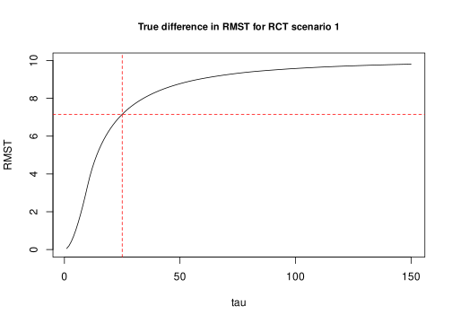
[1] "The ground truth for RCT scenario 1 at time 25 is 7.2"
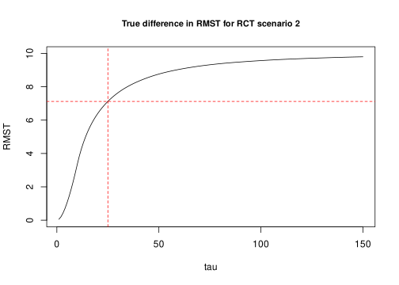
[1] "The ground truth for RCT scenario 2 at time 25 is 7.1"
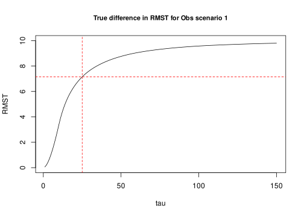
[1] "The ground truth for Obs scenario 1 at time 25 is 7.2"
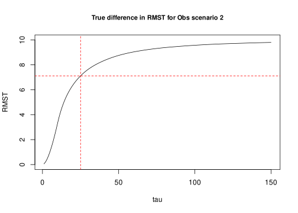
[1] "The ground truth for Obs scenario 2 at time 25 is 7.1"
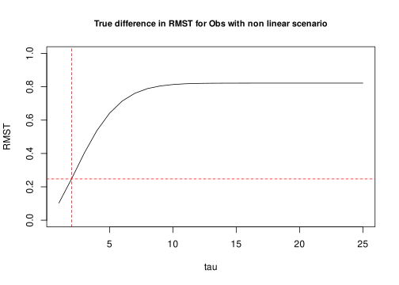
[1] "The ground truth for Observation with non linear scenario at time 2 is 0.25"
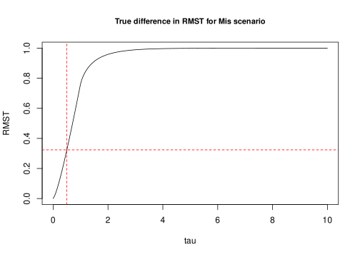
[1] "The ground truth for mis scenario at time 0.45 is 0.32"
The following section will apply the previous estimator on the presented simulation to evaluate their performances.
7.3 Estimation of the RMST
This section provides an evaluation of the previous estimators when the nuisance parameter specification is correct, as well as when there are mis-specifications of nuisance models or violations of the censoring positivity assumption.
7.3.1 Correct specification of the nuisance parameters
Est-ce qu’on ajouterais pas le détail des modèles générés ?
In the case of RCT and observational study presented in Section 7.1.1 and Section 7.1.2, the nuisance models are estimated by Cox model for the conditional censoring model and for the conditional survival and by logistic regression for the propensity model. For the non parametric simulation presented in Section 7.1.3, the nuisance models are estimated by survival forest for conditional survival and conditional censoring, by a probability forest for the propensity model. Default tuning parameters were used for different forest-based methods. Additionally, cross-fitting with five folds is applied to these flexible models.
All the estimators detailed in Section 3 and Section 4 are computed 100 times at each sample size: 500, 1000, 2000, 4000 observations.
Hide/Show the code
# Function to compute all estimates for a given dataset and parametersall_estimates <-function(data, sample.size, tau, X.names.propensity, X.names.censoring, X.names.outcome,nuisance_propensity ="glm", nuisance_censoring ="cox", nuisance_survival ="cox", n.folds =NULL,estimator ="all",mis_specification="none") {# Store the results in a data frame results <-data.frame("sample.size"=numeric(),"estimate"=numeric(),"estimator"=character(),"nuisance"=character() )## Package estimatorsif (estimator =="all") {# Unadjusted estimate using package from SurvRM2 ATE_pack <-tryCatch({RMST_survRM2(data, tau = tau) }, error =function(e) {message("Error in ATE_pack: ", e$message)return(NA) })# Combine all vectors all_names <-c(X.names.propensity, X.names.outcome, X.names.censoring)# Function to extract variable names from I() for squared terms and interaction terms extract_vars <-function(names) {# Extract names from squared terms extracted_squared <-gsub("I\\((.*)\\^2\\)", "\\1", names) # Replace "I(X^2)" with "X"# Extract names from interaction terms (e.g., "X1:X2" becomes "X1" and "X2") result_vector <-unique(unlist(strsplit(extracted_squared, ":")))return(unique(result_vector)) }# Apply the extraction function X.names <-extract_vars(all_names)# Estimate using survival random forest from grf# CSF can have a mis-specification only on all nuisance parameters ATE_RF <-tryCatch({# If there is no mis-specification, X.names has to be defined as the # union of all the covariates which influence nuisance modelsCSRF(data, X.names, tau = tau) }, error =function(e) {message("Error in ATE_RF: ", e$message)return(NA) })# IPTW estimate from RISCA ATE_RISCA_iptw <-tryCatch({RISCA_iptw(data, X.names.propensity, nuisance_propensity, tau = tau, n.folds=n.folds) }, error =function(e) {message("Error in ATE_RISCA_iptw: ", e$message)return(NA) })# G-formula estimate from RISCA ATE_RISCA_gf <-tryCatch({RISCA_gf(data, X.names.outcome, tau = tau) }, error =function(e) {message("Error in ATE_RISCA_gf: ", e$message)return(NA) })## Handmade estimators # Naive estimator ATE_naive <-Naive(data, tau)# RMST estimate with undajusted KM ATE_km_rct <-RMST_1(data, tau = tau)# RMST estimate with IPTW KM ATE_km_adj <-IPTW_Kaplan_meier(data, tau = tau, X.names.propensity = X.names.propensity, nuisance_propensity = nuisance_propensity, n.folds = n.folds)# RMST estimate with g-formula two-learners ATE_g_formula <-g_formula_T_learner(data, tau = tau, X.names.outcome = X.names.outcome, nuisance = nuisance_survival, n.folds = n.folds)# RMST estimate with g-formula single learner ATE_g_formulaSL <-g_formula_S_learner(data, tau = tau, X.names.outcome = X.names.outcome, nuisance = nuisance_survival, n.folds = n.folds)# RMST estimate with IPCW KM ATE_IPCW <-IPCW_Kaplan_meier(data, X.names.censoring = X.names.censoring, tau = tau, nuisance = nuisance_censoring, n.folds = n.folds)# RMST estimate with IPCW with pseudo observations ATE_BJ <-BJ(data, X.names.outcome = X.names.outcome, tau = tau, nuisance = nuisance_survival, n.folds = n.folds) # RMST estimate with IPTW-IPCW KM ATE_IPCW_IPTW <-IPTW_IPCW_Kaplan_meier(data, tau = tau, X.names.censoring = X.names.censoring,X.names.propensity = X.names.propensity,nuisance_propensity = nuisance_propensity, nuisance_censoring = nuisance_censoring, n.folds = n.folds)# RMST estimate with IPTW with pseudo observations (BJ transformation) ATE_IPTW_BJ <-IPTW_BJ(data, tau = tau, X.names.outcome = X.names.outcome,X.names.propensity = X.names.propensity,nuisance_propensity = nuisance_propensity,nuisance = nuisance_survival,n.folds = n.folds)# RMST estimate with AIPTW with pseudo observations (AIPCW transformation) ATE_AIPCW_AIPTW <-AIPTW_AIPCW(data, tau = tau, X.names.propensity = X.names.propensity, X.names.outcome = X.names.outcome,X.names.censoring = X.names.censoring,nuisance_propensity = nuisance_propensity, nuisance_regression = nuisance_survival, nuisance_censoring = nuisance_censoring, nuisance_Qt = nuisance_survival, n.folds = n.folds)# Combine all estimates into a data frame results <-data.frame("sample.size"=rep(sample.size, 14),"estimate"=c( ATE_naive, ATE_km_rct$RMST, ATE_km_adj$RMST, ATE_IPCW$RMST, ATE_BJ$RMST, ATE_IPCW_IPTW$RMST, ATE_IPTW_BJ, ATE_g_formula, ATE_g_formulaSL, ATE_AIPCW_AIPTW$AIPTW_AIPCW_IPW_res, ATE_pack, ATE_RF, ATE_RISCA_iptw, ATE_RISCA_gf ),"estimator"=c("Naive", "KM", "IPTW KM", "IPCW KM", "BJ", "IPTW-IPCW KM", "IPTW-BJ", "G_formula (T-learners)", "G_formula (S-learner)", "AIPTW-AIPCW", "SurvRM2 - KM", "grf - Causal Survival Forest", "RISCA - IPTW KM", "RISCA - G_formula (S-learner)" ),"nuisance"=rep(paste(nuisance_propensity, nuisance_censoring, nuisance_survival, sep ="+"), 14 ) ) }if (estimator =="IPCW KM"){# RMST estimate with IPCW KM ATE_IPCW <-IPCW_Kaplan_meier(data, X.names.censoring = X.names.censoring, tau = tau, nuisance = nuisance_censoring, n.folds = n.folds) results <-data.frame("sample.size"=rep(sample.size, 1),"estimate"=c( ATE_IPCW$RMST ),"estimator"=c("IPCW KM" ),"nuisance"=rep(paste(nuisance_propensity, nuisance_censoring, nuisance_survival, sep ="+"), 1 ) ) }if (estimator =="CSF"){# Function to extract variable names from I() for squared terms and interaction terms extract_vars <-function(names) {# Extract names from squared terms extracted_squared <-gsub("I\\((.*)\\^2\\)", "\\1", names) # Replace "I(X^2)" with "X"# Extract names from interaction terms (e.g., "X1:X2" becomes "X1" and "X2") result_vector <-unique(unlist(strsplit(extracted_squared, ":")))return(unique(result_vector)) }# Apply the extraction function X.names <-extract_vars(all_names)# RMST estimate with IPCW KM ATE_RF <-tryCatch({# If there is no mis-specification, X.names has to be defined as the # union of all the covariates which influence nuisance modelsCSRF(data, X.names, tau = tau) }, error =function(e) {message("Error in ATE_RF: ", e$message)return(NA) }) results <-data.frame("sample.size"=rep(sample.size, 1),"estimate"=c( ATE_RF ),"estimator"=c("grf - Causal Survival Forest" ),"nuisance"=rep(paste(nuisance_propensity, nuisance_censoring, nuisance_survival, sep ="+"), 1 ) ) }if (estimator =="CSF + AIPTW-AIPCW"){ extract_vars <-function(names) {# Extract names from squared terms extracted_squared <-gsub("I\\((.*)\\^2\\)", "\\1", names) # Replace "I(X^2)" with "X"# Extract names from interaction terms (e.g., "X1:X2" becomes "X1" and "X2") result_vector <-unique(unlist(strsplit(extracted_squared, ":")))return(unique(result_vector)) }# Combine all vectors all_names <-c(X.names.propensity, X.names.outcome, X.names.censoring)# Apply the extraction function X.names <-extract_vars(all_names)# RMST estimate with IPCW KM ATE_RF <-tryCatch({# If there is no mis-specification, X.names has to be defined as the # union of all the covariates which influence nuisance modelsCSRF(data, X.names, tau = tau) }, error =function(e) {message("Error in ATE_RF: ", e$message)return(NA) })# RMST estimate with AIPTW with pseudo observations (AIPCW transformation) ATE_AIPCW_AIPTW <-AIPTW_AIPCW(data, tau = tau, X.names.propensity = X.names.propensity, X.names.outcome = X.names.outcome,X.names.censoring = X.names.censoring,nuisance_propensity = nuisance_propensity, nuisance_regression = nuisance_survival, nuisance_censoring = nuisance_censoring, nuisance_Qt = nuisance_survival, n.folds = n.folds) results <-data.frame("sample.size"=rep(sample.size, 2),"estimate"=c( ATE_RF, ATE_AIPCW_AIPTW$AIPTW_AIPCW_IPW_res ),"estimator"=c("grf - Causal Survival Forest","AIPTW-AIPCW" ),"nuisance"=rep(paste(nuisance_propensity, nuisance_censoring, nuisance_survival, sep ="+"), 2 ) ) }if (estimator =="AIPTW-AIPCW"){# RMST estimate with AIPTW with pseudo observations (AIPCW transformation) ATE_AIPCW_AIPTW <-AIPTW_AIPCW(data, tau = tau, X.names.propensity = X.names.propensity, X.names.outcome = X.names.outcome,X.names.censoring = X.names.censoring,nuisance_propensity = nuisance_propensity, nuisance_regression = nuisance_survival, nuisance_censoring = nuisance_censoring, nuisance_Qt = nuisance_survival, n.folds = n.folds) results <-data.frame("sample.size"=rep(sample.size, 1),"estimate"=c( ATE_AIPCW_AIPTW$AIPTW_AIPCW_IPW_res ),"estimator"=c("AIPTW-AIPCW" ),"nuisance"=rep(paste(nuisance_propensity, nuisance_censoring, nuisance_survival, sep ="+"), 1 ) ) }if (estimator =="CSF + AIPTW-AIPCW + G-formula"){ extract_vars <-function(names) {# Extract names from squared terms extracted_squared <-gsub("I\\((.*)\\^2\\)", "\\1", names) # Replace "I(X^2)" with "X"# Extract names from interaction terms (e.g., "X1:X2" becomes "X1" and "X2") result_vector <-unique(unlist(strsplit(extracted_squared, ":")))return(unique(result_vector)) }# Combine all vectors all_names <-c(X.names.propensity, X.names.outcome, X.names.censoring)# Apply the extraction function X.names <-extract_vars(all_names)# RMST estimate with IPCW KM ATE_RF <-tryCatch({# If there is no mis-specification, X.names has to be defined as the # union of all the covariates which influence nuisance modelsCSRF(data, X.names, tau = tau) }, error =function(e) {message("Error in ATE_RF: ", e$message)return(NA) })# RMST estimate with AIPTW with pseudo observations (AIPCW transformation) ATE_AIPCW_AIPTW <-AIPTW_AIPCW(data, tau = tau, X.names.propensity = X.names.propensity, X.names.outcome = X.names.outcome,X.names.censoring = X.names.censoring,nuisance_propensity = nuisance_propensity, nuisance_regression = nuisance_survival, nuisance_censoring = nuisance_censoring, nuisance_Qt = nuisance_survival, n.folds = n.folds)# RMST estimate with g-formula two-learners ATE_g_formula <-g_formula_T_learner(data, tau = tau, X.names.outcome = X.names.outcome, nuisance = nuisance_survival, n.folds = n.folds)# RMST estimate with g-formula single learner ATE_g_formulaSL <-g_formula_S_learner(data, tau = tau, X.names.outcome = X.names.outcome, nuisance = nuisance_survival, n.folds = n.folds) results <-data.frame("sample.size"=rep(sample.size, 4),"estimate"=c( ATE_RF, ATE_AIPCW_AIPTW$AIPTW_AIPCW_IPW_res, ATE_g_formula, ATE_g_formulaSL ),"estimator"=c("grf - Causal Survival Forest","AIPTW-AIPCW","G_formula (T-learners)", "G_formula (S-learner)" ),"nuisance"=rep(paste(nuisance_propensity, nuisance_censoring, nuisance_survival, sep ="+"), 4 ) ) }return(results)}# Function to compute estimators for multiple simulations and sample sizescompute_estimator <-function(n_sim, tau, scenario ="RCT1", X.names.propensity, X.names.outcome, X.names.censoring,nuisance_propensity ="glm", nuisance_censoring ="cox", nuisance_survival ="cox", n.folds =NULL, coefC =NULL, parsC =NULL,parsC_A =NULL,estimator ="all",mis_specification="none",sample_sizes =c(500, 1000, 2000, 4000)) { pb_n <-txtProgressBar(min =0, max =length(sample_sizes), style =3, initial =0, char ="#")on.exit(close(pb_n)) results <-data.frame("sample.size"=numeric(),"estimate"=numeric(),"estimator"=character(),"nuisance"=character() )# Loop through each sample sizefor (idx_n inseq_along(sample_sizes)) { n <- sample_sizes[idx_n]# Progress bar for simulations pb <-txtProgressBar(min =0, max = n_sim, style =3, initial =0, char ="#")on.exit(close(pb))# Loop through each simulationfor (i in1:n_sim) {setTxtProgressBar(pb, i)# Simulate data based on the scenarioif (scenario =="RCT1") { data <-simulate_data_RCT(n, tau = tau, scenario ="RCT1") } elseif (scenario =="RCT2") { data <-simulate_data_RCT(n, tau = tau, scenario ="RCT2", coefC = coefC, parsC = parsC,parsC_A = parsC_A) } elseif (scenario =="Obs1") { data <-simulate_data_obs(n, tau = tau, scenario ="Obs1") } elseif (scenario =="Obs2") { data <-simulate_data_obs(n, tau = tau, scenario ="Obs2", coefC = coefC, parsC = parsC) } elseif (scenario =="Complex") { data <-simulate_data_complex(n, tau = tau,parsC = parsC) } elseif (scenario =="Mis") { data <-simulate_data_mis(n, tau = tau) }# Compute all estimates for the simulated data all <-all_estimates(data, n, tau = tau, X.names.propensity, X.names.outcome, X.names.censoring, nuisance_propensity, nuisance_censoring, nuisance_survival, n.folds, estimator, mis_specification) results <-rbind(all, results) }close(pb)setTxtProgressBar(pb_n, idx_n) }return(results)}
The estimations \theta_{RMST} of all the presenting DGP are computed below:
The results are presented in boxplot for each sample size. The true value of \theta_{RMST} is presented as red dotted line for \tau=25. RCT scenario 1 results are displayed bellow:
Hide/Show the code
simulation_graph_rct1
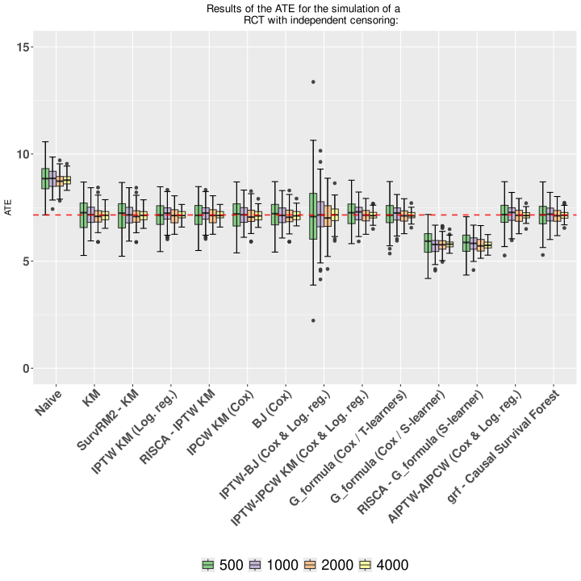
The boxplot above shows the distribution of the \theta_{RMST} estimates for the RCT scenario 1 (with independent censoring).
In the case of correct nuisance parameter specification using parametric and semi-parametric models, all estimators converge except for the Naive and G-formula estimators from the RISCA package. The Naive estimator is consistently biased as it excludes censored observations, directly applying the \theta_{RMST} formula on uncensored data. The bias in the G-formula (RISCA) and G-formula S-learner is due to a violation of the proportional hazards assumption, as the treatment effect is additive (T(1) = T(0) + 10).
Regarding variance, the G-formula exhibits the lowest, with other estimators maintaining low variance except for the IPTW-BJ estimator, which shows significantly higher variance in small samples. This is likely due to the sensitivity of inverse probability weighting in small samples without correction. Among the converging estimators, AIPCW-AIPTW, Causal Survival Forest from the grf package, and G-formula (Two Learners) are the most efficient, achieving convergence even with 500 observations.
Surprisingly, the Causal Survival Forest converges as quickly as the AIPTW-AIPCW estimator. This is likely due to the simplicity of the RCT design. However, despite convergence, the use of weighted estimators (IPTW KM, IPCW KM, IPTW-IPCW KM, IPTW-BJ, and AIPTW-AIPCW) or the Causal Survival Forest is unnecessary in this RCT and independent censoring scenario. These methods do not improve convergence and increase computational time.
Considering both convergence speed and computational complexity, the G-formula (T-learner) is the most suitable estimator, offering low variance even in small sample sizes.
The results for the RCT with conditionally independent censoring are shown below, with the red dashed line indicating the true \theta_{RMST} for \tau = 25.
Hide/Show the code
simulation_graph_rct2
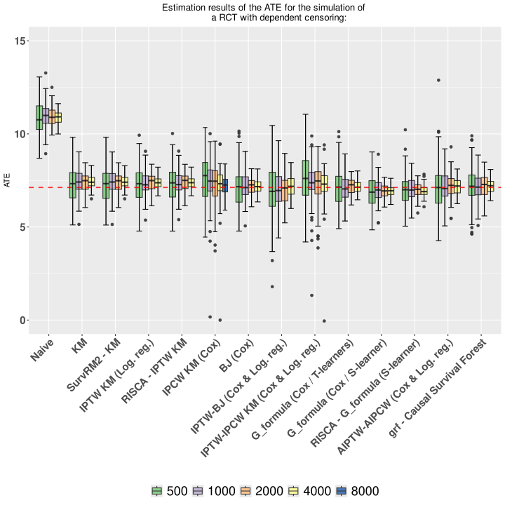
In the RCT simulation with conditionally independent censoring, as before, the Naive estimator remains biased. Similarly, both the unadjusted Kaplan-Meier (KM) and its SurvRM2 equivalent, as well as the treatment-adjusted IPTW KM and its RISCA equivalent, are biased due to their failure to account for dependent censoring.
Surprisingly, IPCW Kaplan-Meier and IPTW-IPCW Kaplan-Meier estimators exhibit slight bias up to 4,000 observations. This bias stems from the simulation’s conditionally independent censoring mechanism, where censoring rates reached nearly 70% in the treatment group and 50% in the control group. Despite maintaining censoring positivity, some subgroups faced near-extreme censoring probabilities (close to 0 or 1). The IPCW correction applies only to uncensored data, representing just 30% of observations, and the instability of weighting—especially double-weighting for IPTW-IPCW—explains their slower convergence and higher variability.
In contrast, the Buckley-James estimators (BJ) and IPTW-BJ, which address censoring using the Buckley-James transformation, converge faster and are unbiased even with as few as 500 observations. The BJ estimator also demonstrates better variance than IPCW methods.
As with RCTs under independent censoring, G-formula (S-learner) and its RISCA equivalent remain biased. However, the G-formula (T-learners), Causal Survival Forest, and AIPCW-AIPTW estimators show high efficiency, even in small samples, with G-formula (T-learners) and Causal Survival Forest displaying the lowest variability. Notably, all estimators exhibit higher variability compared to the independent censoring scenario.
While AIPCW-AIPTW and Causal Survival Forest perform well, they seem excessive in the context of RCT with conditionally independent censoring, as they involve complex nuisance parameters and flexible regressions. Therefore, when nuisance models are well-specified in RCTs, the G-formula (T-learners) remains the most suitable estimator.
The boxplot below shows the distribution of the \theta_{RMST} estimates for the Observational study with independent censoring. The red dashed line represents the true \theta_{RMST} for \tau=25.
Hide/Show the code
simulation_graph_obs1
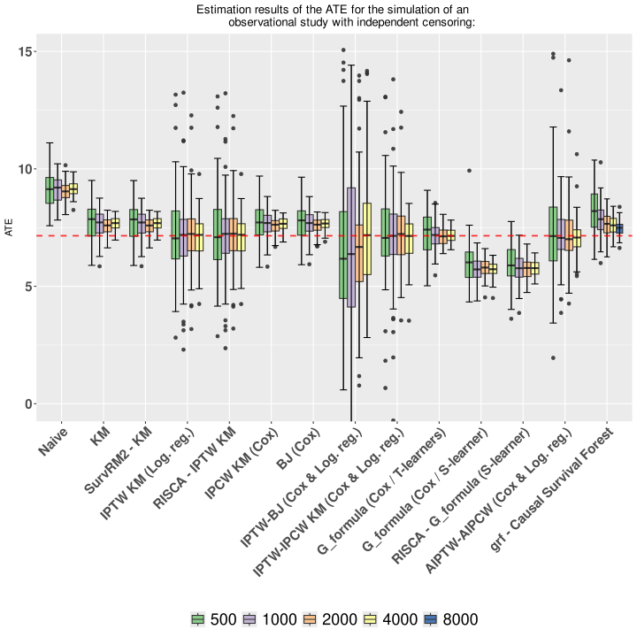
In the simulation of an observational study with independent censoring, confounding bias is introduced, setting it apart from RCT simulations. As expected, estimators that fail to adjust for this bias, such as unadjusted Kaplan-Meier, IPCW Kaplan-Meier, and their equivalents, are biased. However, estimators like IPTW Kaplan-Meier, IPTW-IPCW Kaplan-Meier, IPTW-BJ, G-formula (T-learners), and AIPCW-AIPTW converge successfully.
The IPTW-BJ estimator shows high variability, likely due to inverse probability weighting in observational settings. With small sample sizes, the propensity score model struggles to converge, especially when predicting near-extreme probabilities (close to 0 or 1). IPTW-IPCW Kaplan-Meier also has many outliers, as double-weighting amplifies instability due to extreme weights. Despite this, its overall variability is lower than IPTW-BJ, which applies a single weighting correction.
The Causal Survival Forest from the grf package appears biased, likely due to the presence of confounding and the linear nature of the simulation. With larger samples (8,000 observations), the forest tends to converge asymptotically. The top-performing estimators in this scenario are AIPCW-AIPTW, which converges the fastest (from 500 observations), and G-formula (T-learners), which maintains the lowest variance and converges from 1,000 observations.
The choice between AIPCW-AIPTW and G-formula depends on the confidence in the nuisance models. If the outcome model is well-specified, G-formula is preferred; otherwise, AIPCW-AIPTW offers a more robust alternative.
The boxplot below shows the distribution of the \theta_{RMST} estimates for the Observational study with conditionally independent censoring. The red dashed line represents the true \theta_{RMST} for \tau=25.
Hide/Show the code
simulation_graph_obs2
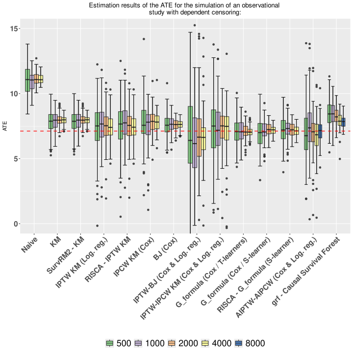
In the simulation of an observational study with conditionally independent censoring, estimators that do not account for both censoring and confounding bias, such as KM, IPCW KM, IPTW KM, and their equivalents, are biased. Notably, the IPTW-IPCW Kaplan-Meier and IPTW-BJ estimators remain biased, even with 4,000 observations.
As in prior scenarios, the high censoring rate—approximately 80% in the treatment group and 50% in the control group—complicates convergence, especially since IPCW only accounts for uncensored data. The combination of confounding bias and conditionally independent censoring makes it difficult for the nuisance models in IPTW-IPCW Kaplan-Meier to converge, even when correctly specified. Similarly, the bias in the IPTW-BJ estimator can be attributed to instability from inverse probability weighting on the estimated complete data, a challenge shared with IPTW-IPCW Kaplan-Meier.
The AIPTW-AIPCW estimator fluctuates around the true value with a slight bias but shows convergence at around 8,000 observations, reflecting the complexity of estimating multiple nuisance parameters in this setting. Causal Survival Forest exhibits slow convergence but remains biased, even with 8,000 observations, highlighting its non-parametric convergence rate in this complex scenario.
Interestingly, the G-formula (S-learner) and its equivalent from the RISCA package show a slight bias compared to previous simulations. While the proportional hazards assumption remains violated, the bias is less pronounced, suggesting that conditionally independent censoring might aid Cox model convergence, even when the treatment effect does not strictly adhere to proportional hazards. This demonstrates that bias from violating the outcome model’s assumptions can vary depending on the context.
Once again, the top-performing estimator is the G-formula (T-learners), which achieves convergence with lower variance compared to the other estimators.
The boxplot below shows the distribution of the \theta_{RMST} estimates for the observational study with conditionally independent censoring in the context of non-parametric simulation (Section 7.1.3) when the nuisance models are estimated by Cox model and logistic regression. The red dashed line represents the true \theta_{RMST} for \tau=2.
Hide/Show the code
simulation_graph_complex_param
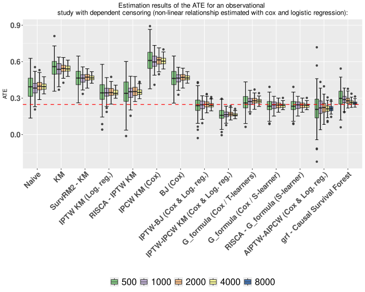
In this non-parametric simulation, most nuisance parameters are estimated using the Cox model and logistic regression, except for the grf function, which employs non-parametric causal survival forests. While the propensity score is well captured by logistic regression, the Cox model struggles to accurately estimate the conditional survival probability due to the violation of the proportional hazards assumption. This issue also affects the conditional censoring probability but to a lesser extent.
The estimators expected to converge under observational and dependent censoring include IPTW-IPCW Kaplan-Meier, IPTW-BJ, G-formula, AIPTW-AIPCW, and Causal Survival Forest. IPTW-IPCW shows the most bias, likely due to the instability of the Cox model in handling conditional censoring. Despite the proportional hazards violation, the G-formula S-learner performs well by chance, unlike the T-learner, which exhibits greater bias.
IPTW-BJ quickly converges to the true \theta_{RMST}, benefiting from logistic regression’s strong performance in estimating the propensity score and the Buckley-James transformation’s correction for censored data. With only 35% of data censored, this estimator converges effectively even with violation of proportional hazard.
Given the results, AIPTW-AIPCW fails to converge as accurately, since the well-estimated propensity score alone is insufficient. Overall, only IPTW-BJ and Causal Survival Forest manage to converge under these conditions, the latter benefiting from its flexible regression approach to nuisance estimation.
Hide/Show the code
simulation_graph_complex_flexible
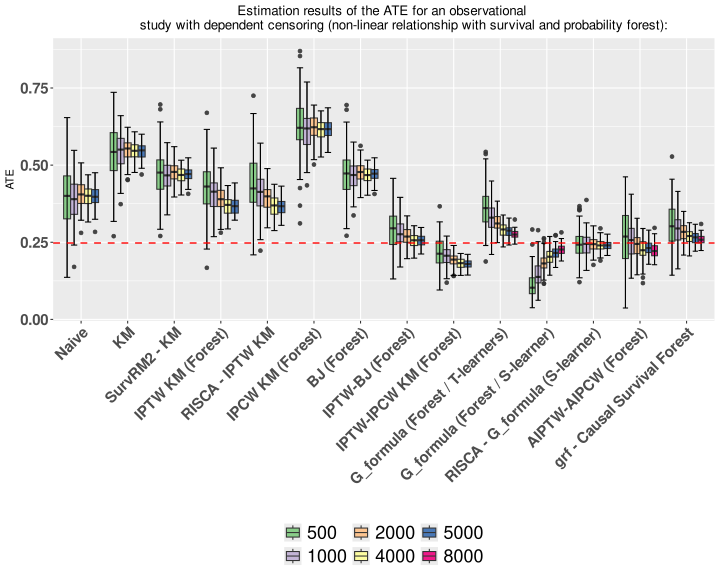
This time, flexible models are used for all nuisance parameters. The simulation involves an observational study with conditionally independent censoring. As expected, estimators without corrections for confounding and censoring (Naive, KM, IPTW KM, IPCW KM, BJ, and their equivalents) remain biased. The IPTW-BJ estimator shows some bias but converges after 5,000 observations.
Both G-formula (T-learners and S-learners) and Causal Survival Forest converge after 5,000 observations, with Causal Survival Forest showing the least bias. As noted by Foster, Taylor, and Ruberg (2011), the Virtual Twins (VT) estimator (similar to G-formula with survival random forest) lacks orthogonality (Chernozhukov et al. 2016), which compromises its asymptotic properties and predisposes to bias (Vaart 1998). This is supported by Cui et al. (2023), showing VT’s lower efficiency compared to causal survival forests, which is consistent with our findings. Thus, G-formula is not the most efficient estimator in non-parametric settings.
The S-learner performs better than T-learners, as it uses more observations by not stratifying by treatment. The finite sample bias seen across estimators can be attributed to the slower convergence rates of non-parametric models.
AIPTW-AIPCW continues to perform well, with low variability and few outliers, though it fluctuates slightly around the true ATE. Despite this, its bias is smaller compared to other estimators. In this context, IPTW-BJ performs best asymptotically, while AIPTW-AIPCW converges faster with finite samples, despite some fluctuations.
7.3.2 Mis-specification of the nuisance parameters
In this section, we challenge the estimators in introducing mis-specification for the nuisance parameters. To do so, the simulation with interaction is used and mis-specification is introduced by selecting only one covariate with the less impact on the model. G-formula from RISCA package is removed of the following graph as it cannot introduce intercation terms . First, we estimate \theta_{RMST} without any model misspecification to ensure the estimator’s consistency under a correctly specified nuisance model. Then, we introduce misspecification individually for the treatment model, censoring model, and outcome model. We further explore combined misspecifications for the treatment and censoring models, treatment and outcome models, outcome and censoring models, and finally for all nuisance models simultaneously. The nuisance models are estimated using parametric (logitic regression) and semi-parametric approach (cox model).
We refer to an observational and dependent censoring study, thus the expected consistent estimators are IPTW-IPCW Kaplan-Meier (completly biased), IPTW-BJ estimator, G-formula, AIPTW-AIPCW and Causal survival forest.
In globality, when one nuisance model is mis-specified, as expected the consistent estimators are AIPTW-AIPCW and causal survival forest. In all these setup, the two estimators are convergent at 4,000 observations. However, the variance of AIPTW-AIPCW is larger when censoring or treatment is mis-specified.
When the censoring model is mis-specified, the estimators with censoring correction are still biased as they already struggle to converge without mis-specification. The other estimators still have the same behavior than without mis-specification.
When the outcome model is mis-specified, IPTW-BJ estimator becomes slightly biased. This estimator is not strongly impacted because it uses the the mis-specified conditional survival function for estimating only the outcome of censored observation which represents 45% of observations. Also, the conditional survival is not strongly impacted by this mis-specification.
As expected, when the treatment model is mis-specified, IPTW-BJ estimator is biased.
The combined graph regroup the \theta_{RMST} value of 4 different setting when there is mis-specification on all nuisance parameters (bottom right) or when two nuisance models are mis-specified either the censoring and the treatment models (top left), the outcome and treatment models (top right) or the outcome and censoring models (bottom left). The dot line represents the true value of the ATE.
As expected, when all nuisance models are misspecified, all estimators exhibit bias. Interestingly, AIPTW-AIPCW seems to converge only in cases where either the outcome and treatment models, or the outcome and censoring models, are misspecified, which deviates from initial expectations. It was anticipated that AIPTW-AIPCW would converge solely when both the censoring and treatment models were misspecified.
Additionally, and somewhat unexpectedly, the causal survival forest converges in all cases except when all models are misspecified.
7.3.3 Violation of positivity assumption for censoring
In this section, the objectives is to show the impact of the violation of positivity assumption for censoring on the convergence of estimators. To enable this violation, we use the exact same simulation for RCT and conditionally independent censoring and Observational and conditionally independent censoring but with stronger relationship with covariates:
The violation of positivity censoring can be verified in verifying the probability of remain uncensored for all combination of covariates (with cox model if proportional hazard is verified or with survival forest if not).
When the positivity of censoring is violated in our RCT context (parametric simulation) with conditionally independent censoring, all estimators that adjust for censoring using inverse probability weighting (IPCW) methods, such as IPCW Kaplan-Meier, IPTW-IPCW Kaplan-Meier become biased. The causal survival forest exhibits a small bias while surprisingly the G-formula (T-learner), BJ and IPTW-BJ converge.
Warning: Removed 11 rows containing non-finite outside the scale range
(`stat_boxplot()`).
Removed 11 rows containing non-finite outside the scale range
(`stat_boxplot()`).
Warning: Removed 14 rows containing non-finite outside the scale range
(`stat_boxplot()`).
Removed 14 rows containing non-finite outside the scale range
(`stat_boxplot()`).
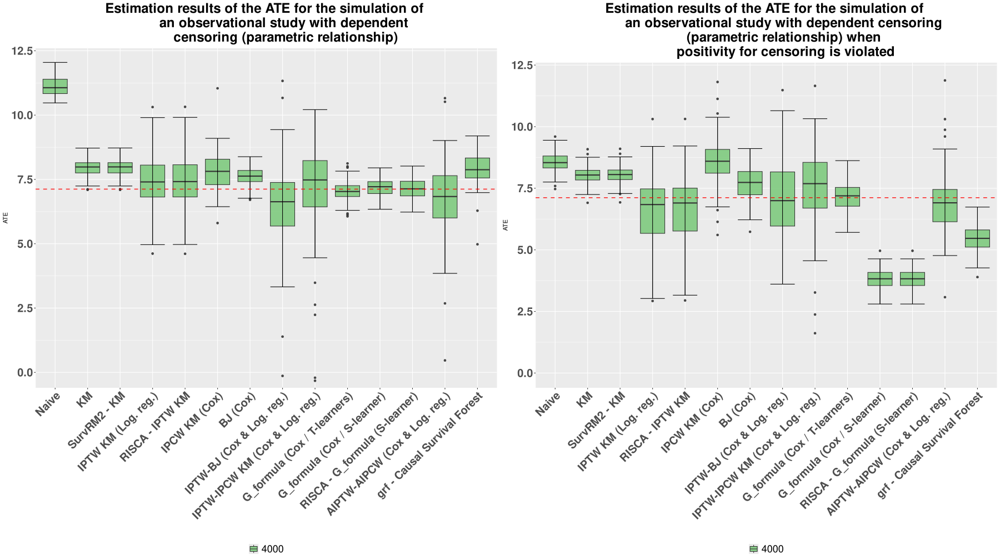
Similarly, estimators that correct for censoring using inverse probability weighting show bias, but IPTW-BJ and the G-formula (T-learner) still converge. The positivity assumption for censoring is implicit in these estimators. However, estimating survival time in a group of individuals who only experience censoring is possible when the relationship between covariates and survival time is linear and can be extrapolated by the model. The below boxplot presents the impact of the violation of positivity in the non-parametric context.
The impact of positivity violation is stronger as all the estimators exhibit bias. It confirms the fact that this violation can be overcome when the relationship between covariates and survival time is linear.
8 Conclusion and perspective
In this study on causal survival analysis, we examined a broad range of estimators across multiple simulation settings, particularly focusing on treatment and censoring mechanisms. While the majority of the empirical results align well with the theoretical properties, notable exceptions include estimators based on IPCW transformations, such as the IPTW-IPCW Kaplan-Meier, which failed to converge in non-parametric settings, and the IPCW Kaplan-Meier, which showed some bias under high censoring conditions.
In this study, we made available our code for the estimators tested, addressing a significant gap in current resources. Despite the growing need for causal survival analysis tools, few packages exist that offer robust implementations of various estimators. By providing these codes, we aim to support further research and practical applications of causal inference in survival contexts, where available software is currently limited.
For users, we recommend different estimators based on the context of their data and modeling assumptions. In a parametric setting with correctly specified nuisance parameters, the G-formula is highly efficient due to its low variance and quick convergence, especially in simpler scenarios like randomized controlled trials. In non-parametric settings with no misspecification, estimators like the IPTW-BJ estimator, Causal Survival Forest or AIPTW-AIPCW perform well, though the latter two may require more computing resources. When uncertainty exists around nuisance parameters, robust estimators like AIPTW-AIPCW or Causal Survival Forest are preferable due to their resilience to mis-specification.
Notably, the G-formula and IPTW-BJ estimators implicitly rely on the positivity assumption, although it is not explicitly included in their identifiability conditions. In parametric settings, violations of positivity tend to have minimal impact, as the extrapolation needed to handle these violations is feasible but risky. However, in non-parametric contexts, violating the positivity assumption can lead to erroneous extrapolations, making these estimators unsuitable for use.
In practice, uncertainty around specification of nuisance parameters is real (parametric/non-parametric relationship, variable sélections…) but use always the most complicated estimator is not feasible. Based on all our simulations, we can propose this decision tree to compute \theta_{RMST} (DRAFT):
Hide/Show the code
library(DiagrammeR)# Construction de l'arbre de décision avec texte sur les flèchesgrViz("digraph decision_tree { # Set up the nodes (shapes) node [shape = box, style = filled, fillcolor = lightgray] # First level (Observational Study / RCT) RCT[label = 'Randomized Clinical Trial', shape = oval] Obs[label = 'Observational study', shape = oval] # Second level (Independent vs Dependent Censoring for both Obs and RCT) Obs_Ind[label = 'Independent Censoring'] Obs_Dep[label = 'Dependent Censoring'] RCT_Ind[label = 'Independent Censoring'] RCT_Dep[label = 'Dependent Censoring'] # Third level for Independent Censoring (Obs) Obs_Ind_Ver[label = 'Verify Positivity of \n Treatment'] Obs_Ind_Ver_tau[label = 'Lower horizon time'] Obs_Ind_Formula[label = 'Parametric G-formula + IPTW KM'] Sens_ana[label = 'Sensitivity analysis'] # Third level for Dependent Censoring (Obs) Obs_Dep_Ver[label = 'Verify Positivity of \n Cens + Treat'] Obs_Dep_Ver_tau[label = 'Lower horizon time'] Obs_Dep_Formula[label = 'Parametric G-formula + AIPTW-AIPCW KM'] Obs_Ind_Formula[label = 'Parametric G-formula + IPTW KM'] # Third level for Independent Censoring (RCT) RCT_Ind_Unadj[label = 'Unadjusted KM'] # Third level for Dependent Censoring (RCT) RCT_Dep_Ver[label = 'Verify Positivity of \nCensoring'] RCT_Dep_Ver_tau[label = 'Lower horizon time'] RCT_Dep_Formula[label = 'Parametric G-formula + IPCW KM'] # Connections with labels (text on arrows) RCT -> RCT_Ind RCT_Ind -> RCT_Ind_Unadj [label = 'No Adj needed'] RCT -> RCT_Dep RCT_Dep -> RCT_Dep_Ver RCT_Dep_Ver -> RCT_Dep_Formula [label = 'If verified'] RCT_Dep_Formula -> Sens_ana RCT_Dep_Ver -> RCT_Dep_Ver_tau [label = 'If not verified'] RCT_Dep_Ver_tau -> RCT_Dep_Ver Obs -> Obs_Ind Obs_Ind -> Obs_Ind_Ver Obs_Ind_Ver -> Obs_Ind_Ver_tau [label = 'If not verified'] Obs_Ind_Ver_tau -> Obs_Ind_Ver Obs_Ind_Ver -> Obs_Ind_Formula [label = 'If verified'] Obs_Ind_Formula -> Sens_ana Obs -> Obs_Dep Obs_Dep -> Obs_Dep_Ver Obs_Dep_Ver -> Obs_Dep_Ver_tau [label = 'If not verified'] Obs_Dep_Ver_tau -> Obs_Dep_Ver Obs_Dep_Ver -> Obs_Dep_Formula [label = 'If verified'] Obs_Dep_Formula -> Sens_ana}")
A key limitation of our simulations is the use of larger datasets with relatively simple relationships, which may not reflect the complexity of real-world scenarios. Most survival analysis datasets are smaller and more intricate, so the stability of certain estimators observed here may not fully generalize. It would be valuable to test these methods on real-world datasets to better assess their performance in practical applications.
Looking ahead, one promising avenue for improving these estimators is through optimizing variable selection for the conditional censoring, conditional survival, and treatment models. It has been shown that adding precision variables in causal inference enhances the variance of G-formula-like estimators. A potential area of exploration would be to investigate whether similar improvements can be made in causal survival analysis by refining the selection of covariates that influence censoring and survival outcomes.
References
Andersen, Per Kragh, Ornulf Borgan, Richard D Gill, and Niels Keiding. 1993. Statistical Models Based on Counting Processes. 1st ed. Springer Series in Statistics. New York, NY: Springer.
Andersen, Per K., Elisavet Syriopoulou, and Erik T. Parner. 2017. “Causal Inference in Survival Analysis Using Pseudo-Observations.”Statistics in Medicine 36 (17): 2669–81. https://doi.org/https://doi.org/10.1002/sim.7297.
Athey, Susan, and Stefan Wager. 2019. “Estimating Treatment Effects with Causal Forests: An Application.”https://arxiv.org/abs/1902.07409.
Breslow, N., and J. Crowley. 1974. “A Large Sample Study of the Life Table and Product Limit Estimates Under Random Censorship.”The Annals of Statistics 2 (3): 437–53. https://doi.org/10.1214/aos/1176342705.
Chatton, Arthur, Florent Le Borgne, Clémence Leyrat, and Yohann Foucher. 2022. “G-Computation and Doubly Robust Standardisation for Continuous-Time Data: A Comparison with Inverse Probability Weighting.”Statistical Methods in Medical Research 31 (4): 706–18. https://doi.org/10.1177/09622802211047345.
Chen, Pei-Yun, and Anastasios A. Tsiatis. 2001. “Causal Inference on the Difference of the Restricted Mean Lifetime Between Two Groups.”Biometrics 57 (4): 1030–38. https://doi.org/https://doi.org/10.1111/j.0006-341X.2001.01030.x.
Chernozhukov, Victor, Denis Chetverikov, Mert Demirer, Esther Duflo, Christian Hansen, Whitney Newey, and James Robins. 2016. “Double/Debiased Machine Learning for Treatment and Causal Parameters.”
Cui, Yifan, Michael R Kosorok, Erik Sverdrup, Stefan Wager, and Ruoqing Zhu. 2023. “Estimating heterogeneous treatment effects with right-censored data via causal survival forests.”Journal of the Royal Statistical Society Series B: Statistical Methodology 85 (2): 179–211. https://doi.org/10.1093/jrsssb/qkac001.
Díaz, Iván, Elizabeth Colantuoni, Daniel F Hanley, and Michael Rosenblum. 2019. “Improved Precision in the Analysis of Randomized Trials with Survival Outcomes, Without Assuming Proportional Hazards.”Lifetime Data Analysis 25 (3): 439—468. https://doi.org/10.1007/s10985-018-9428-5.
Fan, Jianqing, and Irène Gijbels. 1994b. “Censored Regression: Local Linear Approximations and Their Applications.”Journal of the American Statistical Association 89 (426): 560–70. https://doi.org/10.1080/01621459.1994.10476781.
Fisher, Aaron, and Edward H. Kennedy. 2021. “Visually Communicating and Teaching Intuition for Influence Functions.”The American Statistician 75 (2): 162–72. https://doi.org/10.1080/00031305.2020.1717620.
Foster, Jared C, Jeremy M G Taylor, and Stephen J Ruberg. 2011. “Subgroup Identification from Randomized Clinical Trial Data.”Stat. Med. 30 (24): 2867–80.
Foucher, Yohann, Florent Le Borgne, and Arthur Chatton. 2019. “RISCA: Causal Inference and Prediction in Cohort-Based Analyses.”CRAN: Contributed Packages. The R Foundation. https://doi.org/10.32614/cran.package.risca.
Hernán, Miguel A, and James M Robins. 2010. “Causal Inference.” CRC Boca Raton, FL.
Hines, Oliver, Oliver Dukes, Karla Diaz-Ordaz, and Stijn Vansteelandt. 2022. “Demystifying Statistical Learning Based on Efficient Influence Functions.”The American Statistician 76 (3): 292–304. https://doi.org/10.1080/00031305.2021.2021984.
Howe, Chanelle J, Stephen R. Cole, Bryan Lau, Sonia Napravnik, and Joseph J. Eron. 2016. “Selection Bias Due to Loss to Follow up in Cohort Studies.”Epidemiology 27 1: 91–97. https://api.semanticscholar.org/CorpusID:21993915.
James M. Robins, Andrea Rotnitzky, and Lue Ping Zhao. 1994. “Estimation of Regression Coefficients When Some Regressors Are Not Always Observed.”Journal of the American Statistical Association 89 (427): 846–66. https://doi.org/10.1080/01621459.1994.10476818.
———. 1995. “Analysis of Semiparametric Regression Models for Repeated Outcomes in the Presence of Missing Data.”Journal of the American Statistical Association 90 (429): 106–21. https://doi.org/10.1080/01621459.1995.10476493.
Kennedy, Edward H. 2023. “Semiparametric Doubly Robust Targeted Double Machine Learning: A Review.”https://arxiv.org/abs/2203.06469.
Koul, H., V. Susarla, and J. Van Ryzin. 1981. “Regression Analysis with Randomly Right-Censored Data.”The Annals of Statistics 9 (6): 1276–88. https://doi.org/10.1214/aos/1176345644.
Martinussen, Torben, Stijn Vansteelandt, and Per Andersen. 2020. “Subtleties in the Interpretation of Hazard Contrasts.”Lifetime Data Analysis 26 (October). https://doi.org/10.1007/s10985-020-09501-5.
Ozenne, Brice Maxime Hugues, Thomas Harder Scheike, Laila Stærk, and Thomas Alexander Gerds. 2020. “On the Estimation of Average Treatment Effects with Right-Censored Time to Event Outcome and Competing Risks.”Biometrical Journal 62 (3): 751–63. https://doi.org/https://doi.org/10.1002/bimj.201800298.
Robins, James. 1986. “A New Approach to Causal Inference in Mortality Studies with a Sustained Exposure Period—Application to Control of the Healthy Worker Survivor Effect.”Mathematical Modelling 7 (9): 1393–1512. https://doi.org/https://doi.org/10.1016/0270-0255(86)90088-6.
Robins, James M et al. 1993. “Information Recovery and Bias Adjustment in Proportional Hazards Regression Analysis of Randomized Trials Using Surrogate Markers” 24 (3): 3.
Robins, James M., and Dianne M. Finkelstein. 2000. “Correcting for Noncompliance and Dependent Censoring in an AIDS Clinical Trial with Inverse Probability of Censoring Weighted (IPCW) Log-Rank Tests.”Biometrics 56 (3): 779–88. https://doi.org/https://doi.org/10.1111/j.0006-341X.2000.00779.x.
Robins, James M., and Andrea Rotnitzky. 1992. “Recovery of Information and Adjustment for Dependent Censoring Using Surrogate Markers.” In AIDS Epidemiology: Methodological Issues, edited by Nicholas P. Jewell, Klaus Dietz, and Vernon T. Farewell, 297–331. Boston, MA: Birkhäuser Boston. https://doi.org/10.1007/978-1-4757-1229-2_14.
Rosenbaum, Paul R., and Donald B. Rubin. 1983. “The central role of the propensity score in observational studies for causal effects.”Biometrika 70 (1): 41–55. https://doi.org/10.1093/biomet/70.1.41.
Rubin, Donald B. 1974. “Estimating Causal Effects of Treatments in Randomized and Nonrandomized Studies.”Journal of Educational Psychology 66 (5): 688–701. https://doi.org/10.1037/h0037350.
Schaubel, Douglas E., and Guanghui Wei. 2011. “Double Inverse-Weighted Estimation of Cumulative Treatment Effects under Nonproportional Hazards and Dependent Censoring.”Biometrics 67 (1): 29–38. https://doi.org/10.1111/j.1541-0420.2010.01449.x.
Tibshirani, Julie, Susan Athey, Erik Sverdrup, and Stefan Wager. 2017. “Grf: Generalized Random Forests.”CRAN: Contributed Packages. The R Foundation. https://doi.org/10.32614/cran.package.grf.
Turkson, Anthony, Francis ayiah-mensah, and Vivian Nimoh. 2021. “Handling Censoring and Censored Data in Survival Analysis: A Standalone Systematic Literature Review.”International Journal of Mathematics and Mathematical Sciences 2021 (September): 1–16. https://doi.org/10.1155/2021/9307475.
Vaart, A. W. van der. 1998. Asymptotic Statistics. Cambridge Series in Statistical and Probabilistic Mathematics. Cambridge University Press.
Willems, SJW, A Schat, MS van Noorden, and M Fiocco. 2018. “Correcting for Dependent Censoring in Routine Outcome Monitoring Data by Applying the Inverse Probability Censoring Weighted Estimator.”Statistical Methods in Medical Research 27 (2): 323–35. https://doi.org/10.1177/0962280216628900.
Xie, Jun, and Chaofeng Liu. 2005. “Adjusted Kaplan–Meier Estimator and Log-Rank Test with Inverse Probability of Treatment Weighting for Survival Data.”Statistics in Medicine 24 (20): 3089–3110. https://doi.org/https://doi.org/10.1002/sim.2174.
Zheng, Wenjing, and Mark J van der Laan. 2012. “Targeted Maximum Likelihood Estimation of Natural Direct Effects.”The International Journal of Biostatistics 8 (1).
9 Annex
9.1 Link between RMST and survival probabilities
Survival probabilities and RMST are linked as follows:
\begin{aligned}
\theta_{RMST}(\tau) = &= E\left[\int_0^{\tau}I\{T(1) > t\}dt -\int_0^{\tau}I\{T(0) > t\}dt\right] \\
&=\int_{0}^{\tau}{\mathbb{E}[I\{T(1) > t\}]dt - \int_{0}^{\tau}\mathbb{E}[I\{T(0) > t\}]dt }\\
&= \int_0^\tau S_1(t)dt - \int_0^\tau S_0(t)dt \\
&= \int_0^\tau [S_1(t) - S_0(t)]dt
\end{aligned}
with S_a(t) = P(T(a)>t), the probability of surviving at time t when treatment A=a.
9.2 Cumulative hazard inversion method
When X, a random continuous variable, follow an exponential law (X ~ \varepsilon(\lambda)): the corresponding repartition function is: F_{\lambda}(x)=P(X \geq x)=1-\exp(-\lambda x) and the density function is f_{\lambda}(x)=\lambda \exp(-\lambda x).
F_{\lambda} is bijective from \mathcal{R}^{+} to ]0;1[ thus, F_{\lambda}^{-1} exists and is also bijective from ]0;1[ to \mathcal{R}^{+}. The inverse of the repartition function is: F^{-1}(u)=\frac{-log(1-u)}{\lambda} where U ~ \mathcal{U}(0,1) and \frac{-log(1-u)}{\lambda} ~ \varepsilon(\lambda).
In knowing that 1-U ~\mathcal{U}(0,1), we can also simulate X as: \frac{-log(u)}{\lambda} ~ \varepsilon(\lambda).
Following this results, in the case where T, the survival time, follow an exponential distribution (T ~ \varepsilon(\lambda)). The variable T can be simulated as: F_\lambda^{-1}(U)=\frac{-log(U)}{\lambda} where U ~ \mathcal{U}(0,1).
9.3 Trapezoidal method for integration (TO CHANGE)
The trapezoidal integration method is a numerical technique used to estimate the integral of a function over a given interval by approximating the area under the curve with trapezoids. This method is often employed when the function lacks a simple analytical form or when the integral cannot be computed exactly.
Suppose we want to estimate the integral of a function $f(x) over the interval [a, b]. The trapezoidal method divides this interval into n sub intervals of width h, where h =\frac{b - a}{n}.
Each sub interval is approximated by a trapezoid whose bases are the values of the function f(x) at the endpoints of the sub interval.
The general formula for the area of a trapezoid is: A = \frac{(b_1 + b_2) \times h}{2} where b_1 and b_2 are the lengths of the parallel bases of the trapezoid, and h is its height.
To estimate the integral of f(x) over each sub interval, we calculate the area of each trapezoid and sum them up.
The formula for the trapezoidal integration method for a single pair of trapezoids is: \text{Area of trapezoid} = \frac{(f(x_i) + f(x_{i+1})) \times h}{2}
where $ x_i $ and $ x_{i+1} $ are the lower and upper limits of sub interval $ i $ respectively.
To estimate the integral over the entire interval, we sum the areas of all the trapezoids: \int_{a}^{b} f(x) dx \approx \sum_{i=1}^{n} \frac{(f(x_i) + f(x_{i+1})) \times h}{2}
Below is an example of the trapezoidal integration method used to estimate the integral of $ f(x) = x^2 $ over the interval [0, 1] with $ n = 4 $ sub intervals:
To prove that the hazard ratio is the ratio of the log of survival probabilities:
HR = \frac{log(P(T > t|A=1))}{log(P(T > t|A=0))}
Let’s consider t fixed, the survival probabilities can be expressed for each group up to t as follows (based on the fact that \Lambda(t)=\int_0^t \lambda(u)du=-ln(S(t))):
\Delta^\tau = I\{T \wedge \tau < C|A=1\} cannot be computed directly as we don’t have access to T \wedge \tau but to \widetilde T \wedge \tau. Here’s an expression of \Delta^\tau in integrate \widetilde T \wedge \tau:
\begin{aligned}
\Delta^\tau &= I\{T \wedge \tau < C\} \\
&= I\{min(T,\tau) < C\} \\
&= \underbrace{I\{C> \tau\}. I\{T \geq \tau\}}_\textrm{1} + \underbrace{I\{C> T\}. I\{T \leq \tau\}}_\textrm{2} \\
&= I\{\widetilde{T} \geq \tau\}+ I\{\widetilde{T} \leq \tau\}.I\{C \geq \widetilde{T}\} \\
&= I\{\widetilde{T} \geq \tau\}+ I\{\widetilde{T} \leq \tau\}.\Delta \\
\end{aligned}
As \widetilde{T}=min(C,T) and that C and T is superior to \tau, then the first term of the sum is equal to I\{\widetilde{T} \geq \tau\}.
The second term I\{C> T\}. I\{T \leq \tau\} is equal to I\{\widetilde{T} \leq \tau\}.I\{C \geq \widetilde{T}\} because when C is superior to T, then \widetilde{T}=T.
9.6 Notion of censoring unbiased transformation
The method consists in transforming the observed data mentioned in Section 2 : O_i=(X_{i},A_{i},\Delta_{i},\tilde{T_{i}}) into (X_{i},A_{i},T_i^*) according to:
with \phi_1(.,.)= and \phi_2(.,.) the transformation functions on respectively uncensored and censored observations.
9.6.1 IPC transformation
The IPC transformation can be identified by the following formula:
\begin{aligned}
E\left[ T \wedge \tau \mid A, X \right] &= E\left[ \textcolor{blue}{E\left[ 1{\{T \wedge \tau < C\}} \mid A, X, T \right]} \cdot \frac{T \wedge \tau}{\textcolor{blue}{S_C(\widetilde{T} \wedge \tau \mid A, X)}} \middle| A, X \right] \tiny\quad (1) \\
& \tiny\text{(In color, the terms are equal)} \\
&= E\left[ E\left[ \Delta^\tau \mid A, X, T \right] \cdot \frac{T \wedge \tau}{S_C(\widetilde{T} \wedge \tau \mid A, X)} \middle| A, X \right] \tiny\quad (2) \\
&= E\left[ E\left[ \Delta^\tau \mid A, X, T \right] \cdot E\left[ \frac{T \wedge \tau}{S_C(\widetilde{T} \wedge \tau \mid A, X)} \middle| A, X, T \right] \middle| A, X \right] \tiny\quad (3)\\
&= E\left[ E\left[ \Delta^\tau \cdot \frac{T \wedge \tau}{S_C(\widetilde{T} \wedge \tau \mid A, X)} \middle| A, X, T \right] \middle| A, X \right] \tiny\text{(By conditional censoring As.3)} \tiny\quad (4) \\
&= E\left[ \frac{\Delta^\tau \cdot T \wedge \tau}{S_C(\widetilde{T} \wedge \tau \mid A, X)} \middle| A, X \right] \tiny\text{(Law of total probability)} \tiny\quad (5)\\
&= E\left[ \frac{\Delta^\tau \cdot \widetilde{T} \wedge \tau}{S_C(\widetilde{T} \wedge \tau \mid A, X)} \middle| A, X \right] \tiny (\Delta^\tau \cdot T\wedge\tau=\Delta^\tau \cdot \widetilde{T} \wedge \tau) \quad (6)\\
&= \mathbb{E}[T^*|A,X] \tiny\quad (7)
\end{aligned}
\tag{20}
The term in color are equal because E\left[ 1\{T \wedge \tau < C\} \mid A, X, T \right]=E\left[ 1\{\widetilde{T} \wedge \tau < C\} \mid A, X, T \right]= S_C(\widetilde{T} \wedge \tau \mid A, X). Also, the equality in the line 6 of Equation 20 is easily proven by the fact that \Delta^\tau, the indicator of censoring, selects observations which declare the event:
where R_2 is the remainder term of the Taylor expansion.
The von Mises expansion is a generalization of the Taylor expansion for functions in an infinite dimension.
9.7.2 Derive a corrected estimator with influence function
Based on the notation in Section 4.2.4.1, the direction of the fluctuation is derived by the score function:
s_{\epsilon=0}(O)=\left.\frac{d}{d \epsilon} \log \left(\frac{d P_\epsilon}{d P_0}(O)\right)\right|_{\epsilon=0}=\left.\frac{\frac{d}{d \epsilon} d P_\epsilon(O)}{d P_\epsilon(O)}\right|_{\epsilon=0}
The goal is to find a quantity that can correct the bias of the estimator \psi(\bar{P}) due to the perturbation. For the moment, the estimand of interest is \psi(P)=\mathbb{E}_{P}[\mathbb{E}_{P}(T \wedge \tau|X,A=1)].
Recall the von Mises expansion (can be seen as distributional analog of a Taylor expansion see Annex Section 9):
where z is the observed data, \varphi(z ; P) is the influence function defined as a mean-zero (thus \int \varphi(z ; \bar{P}) d(\bar{P})(z)=0), finite variance function and R_2(\bar{P}, P) is a second-order remainder term.
This expansion shows that plug-in estimator such as G-formula (presented in Section 4.2.1.1) has first-order bias and suggests how to correct it by estimating the bias term - \int \varphi(z ; \bar{P}) d(\bar{P}-P)(z)(Kennedy 2023) (a straightforward estimator could be the sample average of the influence function on the distribution P). Thus, the corresponding bias-corrected estimator is \hat{\psi}=\psi(\hat{\mathbb{P}})+\mathbb{P}\{\varphi(Z,\hat{\mathbb{P}})\}.
It exists several methods to compute influence function, the most general is to compute the following pathwise derivative \psi^{'}(P_\epsilon) derived from Equation 22:
Thus, combining the previous expression, we see that,
\begin{aligned}
E\left[Y^{\star}(O) \mid W\right] & =E\left[T_1+T_2-T_3 \mid W\right]=E\left[T_1 \mid W\right]+E\left[T_2 \mid W\right]-E\left[T_3 \mid W\right] \\
& =\int_{-\infty}^\tau y \frac{\bar{G}(y \mid W)}{\bar{G}_1(y \mid W)} d F(y \mid W) \\
& +\int_{-\infty}^\tau y\left\{\int_{-\infty}^y \frac{\bar{F}(c \mid W)}{\bar{F}_1(c \mid W)} \bar{G}_1^{-1}(c \mid W) d G(c \mid W)\right\} d F_1(y \mid W) \\
& -\int_{-\infty}^\tau y \int_{-\infty}^y \frac{\bar{F}(c \mid W)}{\bar{F}_1(c \mid W)} \frac{\bar{G}(c \mid W)}{\bar{G}_1^2(c \mid W)} \frac{d G_1 d G}{d G}(c \mid W) d F_1(y \mid W) \\
& =\int_{-\infty}^\tau y \frac{\bar{G}(y \mid W)}{\bar{G}_1(y \mid W)} d F(y \mid W) \\
& +\int_{-\infty}^\tau y\left\{\int _ { - \infty } ^ { y } \frac { \overline { F } ( c | W ) } { \overline { F } _ { 1 } ( c | W ) } \left[\frac{1}{\bar{G}_1(c \mid W)}\right.\right. \\
& \left.\left.-\frac{\bar{G}^2(c \mid W)}{\bar{G}_1^2(c \mid W)} \frac{d G_1}{d G}(c \mid W)\right] d G(c \mid W)\right\} d F_1(y \mid W) \\
= & \int_{-\infty}^\tau y \frac{\bar{G}(y \mid W)}{\bar{G}_1(y \mid W)} d F(y \mid W) \\
& -\int_{-\infty}^\tau y\left\{\int_{-\infty}^y \frac{\bar{F}(c \mid W)}{\bar{F}_1(c \mid W)}\left[\frac{d}{d c} \frac{\bar{G}(c \mid W)}{\bar{G}_1(c \mid W)}\right] d c\right\} d F_1(y \mid W) .
\end{aligned}
If G=G_1, then \frac{d}{d c} \frac{\bar{G}(c \mid W)}{G_1(c \mid W)}=0, so:
E\left[Y^{\star}(O) \mid W\right]=\int_{-\infty}^\tau y \frac{\bar{G}(y \mid W)}{\bar{G}(y \mid W)} d F(y \mid W)=\int_{-\infty}^\tau y d F(y \mid W)=m(W) .
If F=F_1, then it becomes,
\begin{aligned}
E\left[Y^{\star}(O) \mid W\right] & =\int_{-\infty}^\tau y \frac{\bar{G}(y \mid W)}{\bar{G}_1(y \mid W)} d F(y \mid W) \\
& -\int_{-\infty}^{\infty} y\left\{\int_{-\infty}^y \frac{d}{d c} \frac{\bar{G}(c \mid W)}{\bar{G}_1(c \mid W)} d c\right\} d F(y \mid W) \\
& =\int_{-\infty}^\tau y\left\{\frac{\bar{G}(y \mid W)}{\bar{G}_1(y \mid W)}-\int_{-\infty}^y \frac{d}{d c} \bar{G}(c \mid W)\right. \\
& =\int_{-\infty}^\tau y\left\{\frac{\bar{G}(y \mid W)}{\bar{G}_1(y \mid W)}-\left[\frac{\bar{G}(y \mid W)}{\bar{G}_1(y \mid W)}-\frac{\bar{G}(-\infty \mid W)}{\bar{G}_1(-\infty \mid W)}\right]\right\} d F(y \mid W) \\
& =\int_{-\infty}^\tau y\left\{\frac{\bar{G}(y \mid W)}{\bar{G}_1(y \mid W)}-\frac{\bar{G}(y \mid W)}{\bar{G}_1(y \mid W)}+\frac{1}{1}\right\} d F(y \mid W) \\
& =\int_{-\infty}^\tau y d F(y \mid W) \\
& =m(W) .
\end{aligned}
It proves that E\left[Y^{\star}(O) \mid W\right]=m(W)=E[Y|W], if G=G_1 or F=F_1.
9.8.0.1 Simplification for implementation of AIPCW
The Cox proportional hazards estimator is mainly used to evaluate treatment effect in clinical studies (add ref). It is the most used model in survival analysis.
This estimator of the instantaneous hazard function is often referred to as a semi-parametric estimator due to its mixed nature, combining parametric and nonparametric components.
The Cox survival model, introduced by David R. Cox, is considered semi-parametric because it has two distinct components:
Parametric Component: The model includes a parametric term that specifies the functional form of the effect of covariates on the relative hazard. However, it does not impose particular restrictions on the form of the baseline survival function.
Nonparametric Component: The baseline instantaneous hazard function (the hazard function for an individual with all covariates equal to zero) is not specified. Instead, it is estimated in a nonparametric manner, allowing the model to adapt to different shapes of the survival function.
In the case of two states survival models, it can be defined as follows:
\lambda_{i}(t)=\lambda_{0}(t)exp(\beta_{1}X_{1i}+...+\beta_{p}X_{pi})
\tag{24} This model is called proportional hazards because the ratio of instantaneous hazards is constant over time: \frac{\lambda_{i}(t)}{\lambda_{j}(t)}=exp(\beta_{1}X_{1i}+...+\beta_{p}X_{pi}-\beta_{1}X_{1j}-...-\beta_{p}X_{pj}) is independent of time.
The model is also log-linear: \ln(\lambda_{i}(t))=\ln(\lambda_{0}(t))+\beta_{1}X_{1i}+...+\beta_{p}X_{pi}.
Basically, cox model provides variables coefficients in maximizing the partial likelihood of Cox model. The underlying principle is that the parameter values that maximize the likelihood of the observed data are the most plausible values, given the statistical model chosen. The maximization of the partial likelihood is calculated instead of the total likelihood to significantly reduce computation time. However, censoring and lifetime must be independent, and censoring must be non-informative.
The exponential of the corresponding coefficients is the hazard ratio:
For a binary variable coded 0/1: HR=\exp(\text{coef})
For a binary variable coded a/b: HR=\exp(\text{coef}\cdot(b-a))
For a continuous variable, exp(coef) corresponds to the hazard ratio for a one-unit increase in the variable. For example, for “age” variable, each additional year of life multiply the instantaneous risk of death by a factor of 1,01, an increase of 1%.
But even if the variable corresponds to treatment assignment and that the data fit all the model requirement (log linearity, hazard proportional), this quantity is not a causal quantity and can lead to major confounding bias when the data is observational.
9.9.2 Hazard ratio from cox model are not a causal measure
Analyses of time to event endpoint in RCTs in epidemiological studies focus mainly on HR by the use of Cox model. However, the HR is not known to be a causal measure for different reasons (Hernán 2010; Martinussen, Vansteelandt, and Andersen 2020).
Explanation
If we focus on the expression on HR based on Cox model:
In a Cox proportional hazards model, we model the hazard function as a function of time and covariates. Mathematically, this can be expressed as in Equation 24:
If we have two treatment groups, say T = 1 for the treated group and T = 0 for the control group, then the hazard ratio between the two groups at a certain time t is \exp(\beta), where \beta is the coefficient associated with the treatment variable T.
HR can be expressed in terms of survival probabilities as follows (explained in annex Section 9.4):
Under Equation 5, the hazard ratio could be seen as:
exp(\beta) = \frac{log(P(T(1)>t))}{log(P(T(0)>t)}
This shows that under the proportional hazards assumption, the HR is a function of the survival function of the same population if everyone were treated and if everyone were not treated. But the log function make the interpretation of HR as a causal measure difficult.
Also, under Equation 5, the HR could be expressed as:
The group with and without treatment will fail to be comparable over the time if the treatment affects the outcome (Hernán 2010). Also, the interpretation of HR is complicated because of its non collapsibility. The HR is not a causal measure because it is not a weighted average of the stratum-specific HRs.
This paradox is due to what is called non-collapsibility of the Hazard Ratio. The average effect on a population could not be written as a weighted sum of effects on sub-populations.
9.10 Schoenfeld residuals test
The proportional hazards (PH) assumption can be checked using statistical tests and graphical diagnostics based on the scaled Schoenfeld residuals to test the proportional hazards assumption for each covariate included in a Cox refression model fit.
In knowing that \beta is the solution of the maximum likelihood estimate (explained in the next part): \sum_{i=1}^{n} (x_{i}-E(x_{i}|R(t_{i})))=0
Firstly, let’s define the Schoenfeld residuals at time T_{i} :
r^{\text{schoenfeld}}_{i}=x_{i}-E(x_{i}|R(t_{i})) with m covariates in cox model : r_{i}=(r_{i,1},...,r_{i,m})
where x_{i} is the covariate vector of the individual experiencing the i-th event and R(t_{i}) is the risk set at time t_{i}.
Basically, the Schoenfeld residuals measure the difference between the value of the covariate and the The scaled Schoenfeld residuals are defined as follows : \hat{r}^{\text{scaled}}_{i,m}=\frac{r_{i,m}}{\hat{V}_{m}} with \hat{V}_{m} the variance of r_{i,m}
To test the time dependent coefficient, for a single covariate X_{m}, the proportional hazards is expanded as :
\beta_{m}(t)=\beta_{m}+\beta_{m}*g_{m}(t) where g_{m}(t) is a predictable process.
Thus, the scaled Schoenfeld residuals are defined as follows : \hat{r}^{\text{scaled}}_{i,m}=\frac{r_{i,m}(\beta_{m})}{\hat{V}(\beta_{m},t_{i})} with \hat{V}_{m} the variance of r_{i,m}
The esperance of the scaled Schoenfeld residuals is equal to : E(\hat{r}^{\text{scaled}}_{i,m})=\beta_{m}(t_{i})-\beta_{m}
Grambsch and Therneau have shown that the variance is stable over time, thus in plotting the values of r^{\text{scaled}}_{m}+\beta_{m} against time, the plot should be flat if the proportional hazards assumption holds. Then a score test can be used to test the null hypothesis.
Basically, this Schoenfeld residuals measure the scaled difference between observed and expected values of covariates under the hypothesis of constant risk to assess whether the effect of covariates on risk is constant over time.
All these assumptions can be checked in using the function cox.zph() from survival package.
The statistic of the test is defined as follows :
Null hypothesis : H_{0} : The scaled schoenfeld residuals are not time dependents (\beta_{m}(t_{i})=\beta_{m})
Alternative hypothesis : H_{1} :The scaled schoenfeld residuals are time dependents
The proportional risk hypothesis is confirmed by a non-significant relationship between residuals and time, and refuted by a significant relationship.
Thus a low p-value indicates:
the Schoenfeld residuals are not constant over time
there is evidence that the variable/predictor may be time-dependent
Thus proportional-hazards assumption (made when generating the coxph model) may be violated by this variable.
In our example, variable meal.cal and ph.karno have p-value<5% thus the proportional hazards hypothesis is violated. To resolve this problem, we can consider a time dependent covariate :
A violations of proportional hazards assumption can be resolved by:
Adding covariate*time interaction : The interaction have to be known in analysing the type of interaction
Stratification : The stratification is a way of splitting the population into subgroups according to the covariate.
Partition the time axis : The time axis is divided into several intervals and the Cox model is applied to each interval.
Use a different model such as accelerated failure time model or additive hazard model.
10 TO DO LIST
Problème sur mis-spec simulation
Complex:
Investiguer pourquoi IPTW-IPCW est biaisé
11 Question
Faut-il appeler les packages à chaque fois qu’ils sont utilisés ?
---title: "Causal survival analysis"subtitle: "Estimation of the Average Treatment Effect (ATE) in Causal Survival Analysis : Practical Recommendations"author: - name: Charlotte Voinot corresponding: true email: charlotte.voinot@sanofi.com url: https://chvoinot.github.io/ affiliations: - name: Sanofi R&D department: CMEI url: https://www.sanofi.fr/fr/ - name: INRIA department: Premedical url: https://www.inria.fr/fr/premedical - name: INSERM url: https://www.inserm.fr/ - name: Université de Montpellier url: https://www.umontpellier.fr/ - name: Julie Josse corresponding: true email: julie.josse@inria.fr url: https://juliejosse.com/ affiliations: - name: INRIA department: Premedical url: https://www.inria.fr/fr/premedical - name: INSERM url: https://www.inserm.fr/ - name: Université de Montpellier url: https://www.umontpellier.fr/ - name: Bernard Sebastien corresponding: true email: bernard.sebastien@sanofi.com affiliations: - name: Sanofi R&D department: CMEI url: https://www.sanofi.fr/fr/date: last-modifieddate-modified: last-modifiedkeywords: [Causal survival analysis, Weighting, Robustness, Observational study, Censoring mechanism]bibliography: references.bibgithub-user: chvoinotrepo: "Simple_simulation_causal_survival"draft: false # set to false once the build is runningpublished: false # will be set to true once acceptedformat: computo-html: default computo-pdf: defaulteditor: markdown: wrap: 72---# Introduction {#sec-intro}Survival analysis is a key research area with applications inbiostatistics, engineering, and social sciences. It deals withtime-to-event data and faces the challenge of censoring, where onlypartial information about an event is known. Removing censored dataintroduces bias, while treating it as complete is equally problematic.This so-called censoring can be most effectively handled using survivalanalysis techniques, which depend on the specific characteristics of thecensoring. The most common type of censoring is right-censoring, wherethe event has not occurred by the last observation, suggesting ithappens later. Left-censoring occurs when the event predates the study,while interval censoring happens when the event occurs between twoobservations. The censoring mechanism also plays a crucial role:independent censoring (or non-informative censoring) assumes thatcensoring is unrelated to covariates, a requirement for estimators likeKaplan-Meier and Cox models. In contrast, informative censoring dependson the survival time and covariates, introducing bias if not accountedfor, making standard techniques invalid. Causal inference evaluates theeffect of treatments or interventions on outcomes, a widely usedapproach in health, economics, and social sciences. In a binarytreatment setting ($A=1$: treated, $A=0$: untreated), outcomes $Y^{a=1}$and $Y^{a=0}$ represent potential outcomes under different treatments.The individual treatment effect (ITE), defined as $Y^{a=1}-Y^{a=0}$, iscentral to causal inference. However, only one potential outcome can beobserved per individual. The Average Treatment Effect (ATE) addressesthis limitation by averaging ITEs. Randomized controlled trials (RCTs)are the gold standard for causal effect estimation as they balancecovariates between treated and untreated groups. However, RCTs oftenlack generalizability due to restrictive inclusion criteria.Consequently, observational studies using real-world data (RWD) areincreasingly used. Unlike RCTs, observational studies must addressconfounding bias, often handled using propensity scores orregression-based methods, under strong assumptions likeunconfoundedness.This article explores causal survival analysis, which combines causalinference and survival analysis to assess the effect of a treatment ontime-to-event outcomes in the presence of censoring. Specifically, wefocus on estimating the ATE for time-to-event data with static treatmentassignment, baseline covariates, and right-censoring. In @sec-notations,we define the causal treatment effect for survival outcomes, emphasizingthe easily interpretable Restricted Mean Survival Time (RMST). In@sec-theoryRCT, we discuss identifiability assumptions to address thechallenges of censoring and treatment assignment, followed by thepresentation of corresponding estimators in the RCT context. Similarly,@sec-theoryOBS extends these estimators to observational studies.Despite extensive literature on causal survival estimators, few softwarepackages exist. We provide implementations for each estimator discussedin @sec-theoryRCT and @sec-theoryOBS. Finally, in @sec-simulation, weevaluate these estimators through simulations representing RCTs andobservational studies under different conditions: independent orconditionally independent censoring, correct or incorrect modelspecifications, and positivity violations. We conclude with practicalrecommendations on estimator selection based on criteria likeconvergence, complexity, and computational efficiency.# Context and Notations {#sec-notations}## Notations {#sec-notations1}Let's consider a sample of $n$ i.i.d observations that are described by:- $X_{i}$: the baseline covariates, $X \in \mathbb{R}^p$.- $A_{i}$: the binary treatment, $A \in \{0, 1\}$.- $C_{i}$: the time to censoring, $C \in \mathbb{R}^+$.- $T_{i}(0)$: the survival time to the event of interest had the patient received control $A_{i}=0$.- $T_{i}(1)$: the survival time to the event of interest had the patient received treatment $A_{i}=1$.- $T_{i} =A_{i} T_{i}(1)+(1-A_{i}) T_{i}(0)$, $T \in \mathbb{R}^+$: the observed outcome (see identifiability assumption @eq-consistency).- $T_{i} \wedge \tau =min(T_i,\tau)$,: the truncated observed outcome at $\tau$.- $\Delta_{i}=I\{T_{i} \leq C_{i}\}$: the status of censoring, where $I\{\cdot\}$ is the indicator.- $\Delta_{i}^\tau=I\{T_{i} \wedge \tau \leq C_{i}\}$: the status of censoring truncated at $\tau$ (introduced later)- $\tilde{T_{i}}= T_{i} \wedge C_{i} = \min(T_i,C_i)$: the observed time. When an observation is censured, then its observed time is equal to the censoring time. The censoring time is type II censoring (right censoring).- $S(t)=P(T \geq t)$: the survival curve, which represents a key function in survival analysis. It denotes the probability that an individual will survive beyond a given time $t$.The observed data can be summarized as a quadruplet($X_{i},A_{i},\Delta_{i},\tilde{T_{i}}$) represented in@tbl-exemple_data.| ID | Covariates | | | Treatment | Censoring | Status | Outcomes | | | ||-------|-------|-------|-------|-------|-------|-------|-------|-------|-------|-------|| ID | $X_{1}$ | $X_{2}$ | $X_{3}$ | A | C | $\Delta$ | T(0) | T(1) | T | $\tilde{T}$ || 1 | 1 | 1.5 | 4 | 1 | ? | 1 | ? | 200 | 200 | 200 || 2 | 5 | 1 | 2 | 0 | ? | 1 | 100 | ? | 100 | 100 || 3 | 9 | 0.5 | 3 | 1 | 200 | 0 | ? | ? | ? | 200 |: Example of survival data with covariates, treatment, the censoringtime, the status of censoring and the potential outcomes and observedoutcomes. {#tbl-exemple_data}## Definition of treatment effect {#sec-treatment_effect}In causal inference, the primary goal is to estimate the individualcausal effect of the treatment denoted as $\theta_i = T_i(1) - T_i(0)$[@rubin_estimating_1974; @hernan2010causal]. However, this quantitycannot be observed because at most one outcome can be observed persample (see @tbl-exemple_data). Furthermore, censoring may also maskoutcomes [@censoring_effect].Despite these challenges, certain identifiability assumptions, describedin @sec-assumptions, enable us for estimating the average treatmenteffect [@RMST_estimator; @RMST_estimator2] (ATE) which is defined asfollows:::: {#def-ATE}## Causal effect: Average treatment effect in survival analysis (ATE)$$\theta = \mathbb{E}\left[y(T(1)) - y(T(0))\right]$$- with $y(T) = T \wedge \tau = \min(T,\tau)$ with $\tau$ a fixed time horizon; then, $E(y(T))$ becomes the restricted mean survival time (RMST) at time $\tau$ [@RMST].- with $y(T) = I\{T>\tau\}$ the indicator of survival with $\tau$ a fixed time horizon.:::In this article, we only focus on restricted mean survival time($y(T) = T \wedge \tau = \min(T,\tau)$) as the estimand of interest.There is a direct relationship between RMST and the survival curve. As aresult, the expression $E(T \wedge \tau)$ can be also expressed as:$$E(T \wedge \tau) = E\left(\int_{0}^{T \wedge \tau}1 dt\right) = E\left(\int_{0}^{\tau}I\{T > t\}dt\right) = \int_{0}^{\tau}E(I\{T > t\})dt = \int_{0}^{\tau}S(t)dt$$With this expression, we can interpret $\theta_{RMST}$ as the meandifference between the survival function of treated and control until afixed time horizon $\tau$. RMST can be interpreted as the averagesurvival time from baseline to a pre-specified time $\tau$. Thus, adifference in RMST ($\theta_{RMST}$) value of $10$ days with $\tau=200$means that on average the treatment increases the survival time by 10days at 200 days.{#fig-RMST}The difference in Restricted Mean Survival Time is a time-dependentmeasure that can be easily understood with the help of @fig-RMST. Theaverage survival time will naturally vary based on the value of $\tau$.A very naive (and biased) estimator of the average treatment effectcould be to compute the difference of the mean of the uncensoredsurvival time between the treated and the untreated group:```{r echo=TRUE, message=FALSE, warning=FALSE}# Naive estimator: # Warning, this estimator does not take into account censoring# This estimator is in all context biasedNaive <- function(data, tau) { # Remove censored observations data<- data[data$status == 1, ] # Compute the restricted survival time data$T_obs_tau <- ifelse(data$T_obs >= tau, tau, data$T_obs) # Compute the difference of the restricted mean survival time of treated # and control mean_naive <- mean(data$T_obs_tau[data$A == 1]) - mean(data$T_obs_tau[data$A == 0]) return(mean_naive)}```This estimator eliminates censored observations, which represents aconsiderable loss of information. A reliable estimator of$\theta_{RMST}$ must include censored observations but also be expressedwith observed quantities. To do this, certain identifiabilityassumptions are necessary to allow the ATE to be identified in differentcontexts.## General identifiability assumptions {#sec-assumptions}A general identifiability assumption, already well-known in the field ofcausal inference, needs to be introduced:::: {#as-Consistency .assumption}**Assumption 1: Consistency and no-interference Assumption (Stable UnitTreatment Value Assumption: SUTVA)**$$ T = AT(1) + (1-A)T(0)$$ {#eq-consistency}:::This @eq-consistency means that unit $i$'s potential outcomes do notdepend on the treatments of other units. This is known as theno-interference assumption. Basically, this assumption can be violatedin cases of infectious diseases. Additionally, @eq-consistency meansthat there are no other versions of the treatment[@ding2023coursecausalinference].As introduced in @sec-intro, it is crucial to consider the mechanism ofcensoring to identify appropriate estimators of $\theta_{RMST}$.### Censoring mechanism {#sec-censoringmechan}This article focuses only on right censoring with two mechanisms ofcensoring considered. The first one is independent censoring:::: {#as-IndependantCensoring .assumption}**Assumption 2: Independent/ Non informative censoring**$$ C \perp\mkern-9.5mu\perp T(0),T(1),X,A $$ {#eq-independantcensoring}:::Under @eq-independantcensoring, subjects censored at time $t$ arerepresentative of all subjects who remain at risk at time $t$. It is asif the censored subjects were randomly selected from all subjects.The case of dependent censoring considers that censoring isconditionally independent on covariates.::: {#as-condindepcensoring .assumption}**Assumption 3: Conditionally independent censoring**$$ C \perp\mkern-9.5mu\perp T(0),T(1)|X_c,A $$ {#eq-condindepcensoring} with $X_c$ is the set of covariables whichinfluence the censoring mechanism.:::Under @eq-condindepcensoring, within subgroups represented by $X_c=x$,subjects censored at time $t$ are representative of all subjects intheir subgroup who remain at risk at time $t$. It is as if the censoredsubjects were randomly selected inside each subgroup. This assumption isvery similar to the assumption of uncounfoundedness in causal inference.This assumption implies that there are no unmeasured confounders forcensoring.Another assumption for identifiability of $\theta_{RMST}$ is required incase of conditionally independent censoring: we need to assume that allsubjects have a positive probability to remain uncensored at theirfailure time.::: {#as-positivitycensoring .assumption}**Assumption 4: Positivity / Overlap for censoring**$$ 0 < P( C > t \mid X_c=x, A=a) < 1, \forall t\leq \tau.$$ {#eq-positivitycensoring}:::This assumption ensures that, for any time $t$, the probability ofcensoring is neither 0 nor 1, allowing for balance in the censoringmechanism across subgroups. If violated, it means that results areeither only observed before or after time $t$, which can limit theanalysis. In practice, adjusting the threshold time $\tau$ can help meetthis assumption. For example, in a 5-year clinical study, if patientsleave due to severe side effects or worsening health, censoring becomesdependent. In such cases, the likelihood of remaining uncensored forseverely ill patients at 5 years is zero. To address this, $\tau$ can beadjusted so that participants have a chance to remain uncensored up to arevised threshold time. Despite its strength, this assumption can beverified by modeling the conditional probability of censoring usingmethods like the Cox model or survival forest, and checking for non-zeroprobabilities across covariate subgroups. We will next consider theidentifiability assumptions for randomized clinical trials, startingwith this simpler but more robust design.# Causal survival analysis with a Randomized Control Trial {#sec-theoryRCT}Randomized clinical trials (RCTs) are the gold standard for establishingthe effect of a treatment on an outcome, because treatment allocation isunder control, which ensures (asymptotically) the balance of covariatesbetween treated and controls, and thus avoids problems of confoundingbetween covariables and treatment. The core assumption in a RCT is therandom assignment of the treatment [@rubin_estimating_1974].::: assumption**Assumption 5: Random treatment assignment**$$ A \perp\mkern-9.5mu\perp(T(0),T(1),C,X)$$ {#eq-randomization}:::@eq-randomization implies that the treatment is given at random and isindependent of both the potential outcomes and the covariates. It islike flipping a coin to decide the treatment assignment. In that case,as the covariates are balanced between treated and control (thetreatment assignment does not depend on covariates), the causal effectis direct.In the context of no censoring, causal effect is straightforward and canbe measure with one simple estimator (such as OLS estimator). But in ourcase, censoring is present and the censoring mechanism has to beconsidered. In the next section, we will introduce identifiability of$\theta_{RMST}$ and the corresponding estimator in the simple case:independent censoring.## Independent censoring {#sec-theoryRCT_indc}The @fig-RCT_ind_causalgraph illustrates a simple causal graph when thestudy is randomized with independent censoring.{#fig-RCT_ind_causalgraphfig-align="center" width="50%"}### IdentifiabilityUnder @eq-randomization (random treatment assignment) and@eq-independantcensoring (independent censoring), the difference inRMST, $\theta_{RMST}$, can be identified as follows:$$\begin{aligned} \theta_{RMST} &= \mathbb{E}[T(1) \wedge \tau - T(0) \wedge \tau]\\ &= \int_{0}^{\tau}{\mathbb{E}[I\{T(1) > t\} - I\{T(0) > t\}]dt } && \tiny\text{(By definition)}\\ &= \int_{0}^{\tau}{\mathbb{E}[I\{T(1) > t\}] - \mathbb{E}[I\{T(0) > t\}]dt } && \tiny\text{(By linearity of expectation)}\\ &= \int_{0}^{\tau}{\mathbb{E}[I\{T(1) > t|A=1\}] - \mathbb{E}[I\{T(0) > t|A=0\}]dt } && \tiny\text{(Random treatment assignment As. 5)}\\ &= \int_{0}^{\tau}{\mathbb{E}[I\{T > t|A=1\}] - \mathbb{E}[I\{T > t|A=0\}]dt } && \tiny\text{(By consistency As.1)}\\ &= \int_{0}^{\tau}{\mathbb{P}(T>t|A=1) - \mathbb{P}(T>t|A=0) dt}\end{aligned}$$ {#eq-RMSTkm}**Voir si c'est cohérent de pousser un peu plus les équations pour que l'utilisation de Kaplan-Meier soit evident**$\mathbb{P}(T>t|A=a)$ ($S(t,A=a)$) is the survival function and can beestimated using usual estimator of survival function such as Kaplanmeier estimator, cox model, etc.### Estimation with Unadjusted Kaplan-meier {#sec-unadjusted_KM}The straightforward estimator of the @eq-RMSTkm is the difference ofUnadjusted Kaplan Meier estimator for the treated and control group:::: {#def-km}### Unadjusted Kaplan meier estimator$$\begin{aligned} \hat{S}_{KM}(t \mid a) &= \prod_{j=1, t_j<=t}\left(1-\frac{\sum_i I\left\{T_i=t_j, C_i \geq t_j, A_i=a\right\}}{\sum_k I\left\{T_k \geq t_j, C_k \geq t_j, A_k=a\right\}}\right) \\ &= \prod_{j=1, t_j<=t}\left(1-\frac{\sum_i I\left\{\tilde{T_i}=t_j, \Delta_i=1, A_i=a\right\}}{\sum_k I\left\{\tilde{T_k} \geq t_j, A_i=a\right\}}\right)\end{aligned}$$ {#eq-unadjKM}:::The corresponding $\theta_{RMST}$ is obtained in integrating from 0 to$\tau$ the difference between unadjusted Kaplan Meier estimator of thetreated and controls (@eq-RMSTkm):$$\hat{\theta}_{RMST}(\tau) = \int_{0}^{\tau}\left( \hat{S_1}(t) - \hat{S_0}(t) \right)dt$$#### Properties of Unadjusted Kaplan Meier estimatorUnadjusted Kaplan Meier for the survival function is a nonparametric MLE(maximum likelihood estimator). Its asymptotic properties has beenderived firstly by @Kaplan_consistency_breslow74. An other simple way ofderiving the asymptotic properties is to consider Kaplan-Meier estimatoras a Martingale process [@Aalen2008]. Kaplan-Meier is proved to be:- Uniformly consistent: $\sup _{s \in[0, t]}|\hat{S}(s)-S(s)| \xrightarrow{\mathbb{P}} 0$.- Asymptotically normal for a fixed $t$: $\sqrt{n}\left(\hat{S}\left(t\right)-S\left(t\right)\right) \underset{n \rightarrow \infty}{\stackrel{\mathcal{L}}{\longrightarrow}} \mathcal{N}\left(0, V^2\left(t\right)\right)$ with $V^2\left(t\right)=-S^2\left(t_0\right) \int_0^{t} \frac{S(d u)}{S^2(u) G(u)}$.To derive this asymptotic distribution, we need to assume that theproportion of the sample at risk at time $t$ becomes stable as thesample size increases [@Aalen2008] and that the censoring is notinformative (independent).Under the same conditions, the Restricted Mean Survival Time($F(t)=\int_0^\tau S(t)dt$) derived by an unadjusted Kaplan-Meier isproved to be:- Almost surely consistent estimator of the true RMST [@Andersen1993]- Asymptotically normal with a variance that may be estimated by $\hat{V}(t)=\sum_{t_j \leq t} \frac{\left(\hat{F}(t)-\hat{F}(t_j)\right)^2}{Y(t_j)^2}$[@Aalen2008 ; @Andersen1993].#### Implementation {#sec-implunadjusted}```{r packages, warning=FALSE, echo=FALSE, message=FALSE}library(survival)library(MASS)library(survminer)library(dplyr)library(rms)library(grf)library(riskRegression)library(ggplot2)library(RISCA)library(survRM2)library(forecast)library(gridExtra)```For better interpretability and transparency, we implement an unadjustedKaplan-Meier estimator and apply the rectangle integration method(detailed in @sec-Annexes) between 0 and $\tau$ for both survival curves(control and treated) to obtain $\theta_{RMST}$ (as shown in @fig-RMST).Alternatively, existing packages can be used for these calculations. Forinstance, the Kaplan-Meier curve can be generated with the survfit()function from the survival package [@Therneau_2001], and the restrictedmean survival time can be derived using the rmean() function through thesame rectangle integration method, followed by calculating thedifference. Both approaches are equivalent and yield the same results.The following code includes several functions :- Integral_rectangles computes the integral of a given function by the method of rectangle integration- Kaplan_meier_handmade enables to compute the Kaplan-Meier estimator for both treated and control group.- RMST_1 computes $\theta_{RMST}$ by using the two previous function.```{r echo=TRUE, message=FALSE, warning=FALSE}# Function to calculate the integral of a decreasing function using # the rectangle method# x corresponds to the x coordinate of the function to integrate# y corresponds to the y coordinateintegral_rectangles <- function(x, y) { # Check if the lengths of x and y are the same if (length(x) != length(y)) { stop("Lengths of x and y must be the same") } # Calculate the width of each rectangle dx <- diff(x) # Initialize the sum integral_sum <- 0 # Iterate through each rectangle and sum up the areas for (i in 1:(length(x) - 1)) { # Calculate the height of the current rectangle height <- min(y[i], y[i + 1]) # Multiply the height by the width and add it to the sum integral_sum <- integral_sum + height * dx[i] } mean <- integral_sum + x[1] # Return the final integral sum return(mean)}# Kaplan-Meier estimator handmade implementation# The database 'data' must be in the same form as that shown in # notation (Table 1) and with the same variable name (status, T_obs) Kaplan_meier_handmade <- function(data, status = data$status, T_obs = data$T_obs) { # Sort unique observed times Y.grid <- sort(unique(T_obs)) # Initialize vectors for number of events, number at risk, and survival # probability d <- rep(NA, length(Y.grid)) # Number of events at time Y.grid[i] n <- rep(NA, length(Y.grid)) # Number at risk just before time Y.grid[i] S <- rep(NA, length(Y.grid)) # Survival probability at time Y.grid[i] # Loop over each unique observed time for (i in 1:length(Y.grid)) { d[i] <- sum(T_obs == Y.grid[i] & status == 1, na.rm = TRUE) # Count events n[i] <- sum(T_obs >= Y.grid[i]) # Count at risk # Calculate survival probability S[i] <- cumprod(1 - d / n)[i] } # Create a data frame with the results df <- data.frame(d = d, n = n, S = S, T = Y.grid) return(df)}# Function to calculate RMST (Restricted Mean Survival Time):# Method 1: Handmade KM with no truncation# Two possibilities of computing RMST : # - in using directly S_A1 and S_A0 (survival function of treated and control)# - in using the dataframe and the function computes the survival functionsRMST_1 <- function(data = NULL, A1 = 1, A0 = 0, tau, S_A1 = NULL, S_A0 = NULL) { if (is.null(S_A1) & is.null(S_A0)) { # Subset data for treatment groups data1 <- data[data$A == A1,] data0 <- data[data$A == A0,] # Calculate Kaplan-Meier survival estimates S_A1 <- Kaplan_meier_handmade(data1, status = data1$status, T_obs = data1$T_obs) S_A0 <- Kaplan_meier_handmade(data0, status = data0$status, T_obs = data0$T_obs) # Restrict observations to those less than or equal to tau Y.grid1 <- data1$T_obs[data1$T_obs <= tau] Y.grid0 <- data0$T_obs[data0$T_obs <= tau] } else { # Restrict observations to those less than or equal to tau Y.grid1 <- S_A1$T[S_A1$T <= tau] Y.grid0 <- S_A0$T[S_A0$T <= tau] } # Filter survival estimates to restricted observations S_A1 <- S_A1 %>% dplyr::filter(T %in% Y.grid1) S_A0 <- S_A0 %>% dplyr::filter(T %in% Y.grid0) # Check if there is any event at tau for S_A1 if (!any(S_A1$T == tau)) { new_row <- tibble(T = tau, S = S_A1$S[nrow(S_A1)]) S_A1 <- dplyr::bind_rows(S_A1, new_row) } # Check if there is any event at tau for S_A0 if (!any(S_A0$T == tau)) { new_row <- tibble(T = tau, S = S_A0$S[nrow(S_A0)]) S_A0 <- dplyr::bind_rows(S_A0, new_row) } # Calculate integrals from 0 to tau of survival probabilities intA1 <- integral_rectangles(S_A1$T, S_A1$S) intA0 <- integral_rectangles(S_A0$T, S_A0$S) RMST1 <- intA1 - intA0 return(list(RMST=RMST1, intA1=intA1,intA0=intA0))}```It is crucial to adapt the integration method to the type of functionbeing integrated. Since the Kaplan-Meier estimator is a step function,the rectangle method is the most suitable. However, when the survivalfunction comes from a parametric model (e.g., Weibull or Exponential), amore precise method like the trapezoidal method is recommended (detailsin @sec-Annexes) to calculate $\theta_{RMST}$.When censoring becomes conditionally independent on covariates, thepreviously mentioned estimators are insufficient, as they assumeindependent censoring. The next section introduces strategies to addressthis issue.## Conditional independent censoring {#sec-condcens}The @fig-RCT_dep_causalgraph illustrates a simple causal graph when thestudy is randomized with conditionally independent censoring.{#fig-RCT_dep_causalgraph fig-align="center" width="50%"}Under @eq-randomization (random treatment assignment) and@eq-condindepcensoring (conditional independent censoring), a strategyto make the identification of the $\theta_{RMST}$ possible can be to usea censoring unbiased transformation. A notable advantage of thistransformation is that it enables the use of causal inference estimatorsin the same way as with fully observed data.### Notion of censoring unbiased transformation {#sec-unbiasedtransf}The concept introduced by @Fan1994LocalPM for local polynomial modelingin regression addresses censoring by transforming the data to create anunbiased fully observed population. This is achieved by ensuring$E(T^*|X,A) = E(T \wedge \tau|X,A)$. Transformations such as theBuckley-James and inverse probability of censoring (IPC) transformationsare used for this purpose. The IPC transformation is examined first,followed by the Buckley-James transformation. We will define thesetransformations, present the identifiability formula for $\theta_{RMST}$using the IPC transformation, and discuss estimation strategies for bothtransformations.#### The inverse probability of censoring transformation (IPC transformation) {#sec-IPCtrans}The inverse probability censoring weighting approach has been introducedin survival analysis by @IPCtransKoul81 to overcome bias due toconditionally independent censoring.The IPC transformation is given by :$$T^*(\tau)=\frac{\widetilde{T} \wedge \tau* \Delta^\tau}{S_c(\widetilde{T}\wedge \tau|X,A)}$$ where $S_c(T \wedge \tau|X,A=a)$ is the survival function of remainuncensored truncated at $\tau$ given the covariate $X$ in the treatmentarm $A=a$ and $\Delta^{\tau}=I\{T \wedge \tau < C\}$ is the status ofthe individual truncated at $\tau$.IPC transformation verify $E(T^*|X,A)=E(T \wedge \tau|X,A)$ (proof in@sec-Annexes).Considering @eq-censtransf, this transformation does not considercensored observations by weighting only the uncensored observations. Itexits other censoring unbiased transformation such as Buckley James thatconsider also the censored observations.#### Buckley James unbiased censoring transformation {#sec-BJtrans}This transformation has been introduced by @Buckley_james_79 (BJ). Thisis the earliest unbiased censoring transformation:$$\begin{aligned}T^*(O,\tau) &= \Delta^\tau*(\widetilde{T}\wedge\tau) + (1-\Delta^\tau)*\mathbb{E}[T \wedge \tau|X,A,T\wedge\tau>\widetilde{T}\wedge\tau]\\&= \Delta^\tau*(\widetilde{T}\wedge\tau) + (1-\Delta^\tau)*Q_S(C|X,A)\end{aligned}$$with$Q_S(t|x,a) =E[T \wedge \tau | X=x,A=a,T \wedge \tau > t]= \frac{1}{S(T\wedge \tau|X=x,A=a)}\int_{t}^{+\infty}{t. d(1-S(T\wedge \tau|X=x,A=a)) }$(proof in @sec-Annexes) with $F$ the function of the cumulativeprobability ($F(t) = \mathbb{P}(t \leq T)$) and $\bar{F}$ thecomplementary cumulative probability ($S(t)=1-F(t)$).This transformation uses the uncensored observed values of thetime-to-event $\widetilde{T} \wedge \tau$ directly in the formula (asuncensored observations are fully complete) while the censored values ofthe time-to-event outcome $\widetilde{T} \wedge \tau$ are extrapolatedfrom an estimator $Q_S(t|x,a)$ which corresponds to the expectedremaining survival time given the covariates and treatment for censoredobservation.Exactly than the inverse probability of censoring transformation, theBuckley James transformation verify $E(T^*|X,A)=E(T \wedge \tau|X,A)$(proof in @sec-Annexes).Visually, these two transformations will create fully completepopulation as below:{#fig-trans}Unfortunately, the two previous transformation depends on nuisanceparameters:- the censoring distribution $S_c(t|x,a)$ for the IPC weighting transformation.- the conditional survival distribution $Q_S(t|x,a)$ for the Buckley-James transformation.If this nuisance parameters are not well estimated, the estimator usingthe transformation will be biased [@LocalLinear_Fan94].### Identifiability using IPC transformationThus, under @eq-randomization (random treatment assignment) and@eq-condindepcensoring (conditionally independent censoring), the$\theta_{RMST}$ can be identified as follows:$$\begin{aligned}\theta_{\text{RMST}} &= \mathbb{E} \left[ T(1) \wedge \tau - T(0) \wedge \tau \right] \tiny\quad (1)\\&= \mathbb{E} \left[ T(1) \wedge \tau \right] - \mathbb{E} \left[ T(0) \wedge \tau \right]\\&= \mathbb{E} \left[ \mathbb{E} \left[ T(1) \wedge \tau \mid A = 1, X \right] \right] - \mathbb{E} \left[ \mathbb{E} \left[ T(0) \wedge \tau \mid A = 0, X \right] \right] \tiny\quad (2) \\& \tiny\text{(Law of total probability and Ignorability)} \\&= \mathbb{E} \left[ \mathbb{E} \left[ T^*(1) \mid A = 1, X \right] \right] - \mathbb{E} \left[ \mathbb{E} \left[ T^*(0) \mid A = 0, X \right] \right] \tiny\quad (3)\\& \tiny\text{(IPC transformation)} \\&= \mathbb{E} \left[ T^*(1) \mid A = 1\right] - \mathbb{E} \left[ T^*(0) \mid A = 0 \right] \tiny\quad (4)\\& \tiny\text{(Law of total probability)} \\&= \mathbb{E} \left[ \textcolor{blue}{\frac{\widetilde{T}(1) \wedge \tau \cdot \Delta^\tau}{S_c(T \wedge \tau \mid A = 1, X)}} \mid A=1\right] - \mathbb{E} \left[ \textcolor{blue}{\frac{\widetilde{T} \wedge \tau \cdot \Delta^\tau}{S_c(T \wedge \tau \mid A = 0, X)}} \mid A=0 \right] \tiny\quad (5)\\&= \int_0^\tau \mathbb{E} \left[ \frac{1\{ T(1) \geq t \} \cdot \Delta^\tau}{S_c(T \wedge \tau \mid A = 1, X)} \mid A = 1\right] - \mathbb{E} \left[ \frac{1\{ T(0) \geq t\} \cdot \Delta^\tau}{S_c(T \wedge \tau \mid A = 0, X)} \mid A = 0\right] dt \tiny\quad (6)\\\end{aligned}$$ {#eq-RMSTipcwkm}The IPC transformation used in this identifiability equation has beendetailed in the @sec-IPCtrans.#### Estimation with IPCW Kaplan Meier {#sec-est_IPCWKM}Under the assumptions of random treatment assignment(@eq-randomization), conditional censoring (@eq-condindepcensoring), andpositivity for censoring (@eq-positivitycensoring), the unadjustedKaplan-Meier (KM) estimator in @def-km can misestimate survivalprobabilities due to conditionally independent censoring [@IPCW]. Tocorrect for this, the adjusted IPCW (inverse probability of censoringweighting) Kaplan-Meier estimator [@Robins1992; @IPCWrobins] is used.This estimator applies the weight$\frac{\Delta^\tau}{S_c(T \wedge \tau \mid A = 1, X)}$ to observationsin the KM estimator:::: {#def-ipcwkm}#### IPCW adjusted Kaplan Meier estimator$$\begin{aligned}\hat{S}_{IPCW-KM}(t \mid A=a) &= \prod_{j=1, t_j<=t}\left(1-\frac{\sum_i \hat{w}_{i}(t_j,X_i)*I\left\{T_i=t_j, C_i \geq t_j, A_i=a\right\}}{\sum_k \hat{w}_{k}(t_j,X_k)*I\left\{T_k \geq t_j, C_k \geq t_j, A_k=a\right\}}\right) \end{aligned}$$- $\hat{w_{i}}(t,X_i)=\frac{\Delta^{\tau}_i}{\hat{S_{c}}(t|X_{i},A_{i})}$ is the inverse of the probability of remain uncensored given the covariates $X_{i}$ (IPC transformation) .- $\Delta^\tau = I\{T \wedge \tau < C\}= I\{\widetilde{T} \geq \tau\}+ I\{\widetilde{T} \leq \tau\}.\Delta$ (proof in @sec-Annexes).- $\hat{S_{c}}(t|X_{i},A_{i})$ is based on the fit of parametric, semi-parametric (for example a Cox model) or even non-parametric model (such as survival forest) for censoring with $X_i$ and $A_i$ the covariates.:::This estimator assigns higher weights to uncensored subjects within thesame covariate group, correcting for conditionally independent censoringand reducing selection bias [@Howe2016SelectionBD].To estimate $\theta_{RMST}$, integrate the difference between theadjusted Kaplan-Meier estimates for treated and control groups from 0 to$\tau$:$$ \hat{\theta}_{RMST}= \int_{0}^{\tau}{\hat{S}_{IPCW-KM}(t,A=1) - \hat{S}_{IPCW-KM}(t,A=0) dt}$$ {#eq-RMSTipcw}##### Properties of IPCW Kaplan Meier@robins1993 **(fameuse publi introuvable mais très cité)** shows thatour IPCW estimate $\hat{S}_{IPCW-KM}(t,a)$ is guaranteed to beconsistent and asymptotically normal under @eq-condindepcensoring andwhen the model of conditional censoring is correct [@Robins2004]. Also,@IPCWrobins shows that IPCW estimate is asymptotically more efficientthan the standard Kaplan-Meier estimator for failure in treatment arm awhenever the latter estimator is consistent (i.e., whenever censoring isindependent).##### Implementation {#sec-implIPCW}The following code includes several functions :- Adjusted.KM allows to compute the adjusted IPCW survival curve for treated and control (stratification on treatment) from given weights, times and events.- Estimate_survival_function enables to compute the probability of remain uncensored over the time, $S_{c}$ in using cox model or survival forest (survival_forest function from[grf](https:%20//cran.r-project.org/web/packages/grf/index.html)[@Tibshirani_Athey_Sverdrup_Wager_2017]). It allows cross-fitting for survival forest (n.folds\>1).- IPCW_Kaplan_meier computes IPCW KM estimator by using the previous functions.```{r echo=TRUE, message=FALSE, warning=FALSE}# Kaplan-Meier adjusted# Times of event # Failures: 1 if event, 0 if censored# Variable: 1 if treated, 0 if control# Weights: weight of the individualadjusted.KM <- function(times, failures, variable, weights = NULL) { # Sanity checks if (sum(times < 0) > 0) { stop("Error: times must be positive") } if (!is.null(weights) && sum(weights < 0) > 0) { stop("Error: weights must be superior to 0") } if (sum(failures != 0 & failures != 1) > 0) { stop("Error: failures must be a vector of 0 or 1") } # If 'weights' is NULL, initialize 'w' with ones of the same length as 'times', # otherwise use 'weights' w <- if (is.null(weights)) rep(1, length(times)) else weights # Create a DataFrame 'data' with columns t (times), f (failures), # v (stratification variable: often treatment variable), and w (weights) data <- data.frame(t = times, f = failures, v = variable, w = w) # Remove rows from the DataFrame where the stratification variable is NA data <- data[!is.na(data$v),] # Initialize an empty DataFrame to store the Kaplan-Meier results table_KM <- data.frame(times = NULL, n.risk = NULL, n.event = NULL, survival = NULL, variable = NULL) # Loop over each unique value of the stratification variable for (i in unique(variable)) { # Subset the data for the current stratification variable value d <- data[data$v == i,] # Create a sorted vector of unique event times, including time 0 and the # maximum time tj <- c(0, sort(unique(d$t[d$f == 1])), max(d$t)) # Calculate the number of events at each time point dj <- sapply(tj, function(x) { sum(d$w[d$t == x & d$f == 1]) }) # Calculate the number of individuals at risk at each time point nj <- sapply(tj, function(x) { sum(d$w[d$t >= x]) }) # Compute the cumulative product for the survival probabilities st <- cumprod((nj - dj) / nj) # Append the results to the Kaplan-Meier table table_KM <- rbind(table_KM, data.frame(T = tj, n = nj, d = dj, S = st, variable = i)) } return(table_KM)}# Estimate survival function with covariates for each individual at each time Y.grid# Type of model can be cox or survival forest (n.fold must be completed in this case)# This function is used also to compute S_c with status = censor.statusestimate_survival_function <- function(data, X.names, Y.grid, type_of_model = "cox", T_obs = "T_obs", status = "status", n.folds = NULL) { if (type_of_model == "cox") { # Formula for cox model (single learner: A as a covariate, # T-learner: Stratified fit on A) # Here only T-learner outcome <- paste0('Surv(', T_obs, ',', status, ')') formula <- as.formula(paste(outcome, paste(c(X.names), collapse = " + "), sep = " ~ ")) data.1 <- data%>% filter(A==1) data.0 <- data%>% filter(A==0) # Cox model fitting stratified on A=1 fitS1 <- suppressWarnings(coxph(formula, data = data.1, x = TRUE)) # Suppress NA in coefficient fitS1$coefficients[is.na(fitS1$coefficients)] <- 0 # Cox model fitting on A=0 fitS0 <- suppressWarnings(coxph(formula, data = data.0, x = TRUE)) # Suppress NA in coefficient fitS0$coefficients[is.na(fitS0$coefficients)] <- 0 fit.pred1 <- predictCox(fitS1, newdata = data, times = Y.grid, type = "survival") fit.pred0 <- predictCox(fitS0, newdata = data, times = Y.grid, type = "survival") S_hat1 <- fit.pred1$survival S_hat0 <- fit.pred0$survival } else { # Survival forest # Initialization n <- nrow(data) fit.pred1 <- matrix(NA, nrow = n, ncol = length(Y.grid)) fit.pred0 <- matrix(NA, nrow = n, ncol = length(Y.grid)) if (n.folds > 1) {# Cross-fitting # Split the dataset into n-folds indices <- split(seq(n), sort(seq(n) %% n.folds)) # For each index in each split for (idx in indices) { # Fit survival forest on observations removed from idx (training set) and A=1 # A is not included in covariates (T-learner) forest.grf1 <- survival_forest(X = as.matrix(data[-idx & data[,"A"] == 1, X.names]), Y = data[-idx & data[,"A"] == 1, T_obs], D = data[-idx & data[,"A"] == 1, status], failure.times = Y.grid) # Fit survival forest on observations removed from idx (training set) and A=0 # A is not included in covariates (T-learner) forest.grf0 <- survival_forest(X = as.matrix(data[-idx & data[,"A"] == 0, X.names]), Y = data[-idx & data[,"A"] == 0, T_obs], D = data[-idx & data[,"A"] == 0, status], failure.times = Y.grid) # Prediction on idx to avoid overfitting fit.pred1[idx,] <- predict(forest.grf1, as.matrix(data[idx, X.names]), failure.times = Y.grid)$predictions fit.pred0[idx,] <- predict(forest.grf0, as.matrix(data[idx, X.names]), failure.times = Y.grid)$predictions } } else {# No cross-fitting # Fit survival forest on all observations with A=1 # A is not included in covariates (T-learner) forest.grf1 <- survival_forest(X = as.matrix(data[data[,"A"] == 1, X.names]), Y = data[data[,"A"] == 1, T_obs], D = data[data[,"A"] == 1, status], failure.times = Y.grid) # Fit survival forest on all observations with A=0 # A is not included in covariates (T-learner) forest.grf0 <- survival_forest(X = as.matrix(data[data[,"A"] == 0, X.names]), Y = data[data[,"A"] == 0, T_obs], D = data[data[,"A"] == 0, status], failure.times = Y.grid) # Prediction on all observations fit.pred1 <- predict(forest.grf1, as.matrix(data[, X.names]), failure.times = Y.grid)$predictions fit.pred0 <- predict(forest.grf0, as.matrix(data[, X.names]), failure.times = Y.grid)$predictions } S_hat1 <- fit.pred1 S_hat0 <- fit.pred0 } # Associate the corresponding Survival curve to the observation S_hat <- S_hat1 * data$A + (1 - data$A) * S_hat0 return(list('S_hat' = S_hat, "S_hat1" = S_hat1, "S_hat0" = S_hat0, "T" = Y.grid))}# IPCW Kaplan-Meier estimator with restricted tauIPCW_Kaplan_meier <- function(data, tau, X.names.censoring, nuisance_censoring = "cox", n.folds = NULL) { # Compute of truncated T_obs, status and censored status data$T_obs_tau <- ifelse(data$T_obs >= tau, tau, data$T_obs) data$censor.status_tau <- 1 - as.numeric((data$T_obs >= tau) | (data$T_obs < tau & data$status == 1)) data$status_tau <- as.numeric((data$T_obs >= tau) | (data$T_obs < tau & data$status == 1)) Y.grid <- sort(unique(data$T_obs_tau)) # Estimate probability of remaining uncensored based on nuisance model S_C_hat <- estimate_survival_function(data = data, X.names = X.names.censoring, Y.grid = Y.grid, T_obs = "T_obs_tau", status = "censor.status_tau", type_of_model = nuisance_censoring, n.folds = n.folds) # Select the probability of censoring for each observe T_obs_tau from the all # curve data$S_C <- S_C_hat$S_hat[cbind(1:nrow(data), match(data$T_obs_tau, Y.grid))] # Compute IPC weights data$weights <- data$status_tau / data$S_C # Compute the adjusted IPCW Kaplan Meier S <- adjusted.KM(times = data$T_obs, failures = data$status, variable = data$A, weights = data$weights) # Compute difference in RMST RMST <- RMST_1(S_A1 = S[S$variable == 1,], S_A0 = S[S$variable == 0,], tau = tau) return(list(RMST = RMST$RMST, intA1 = RMST$intA1, intA0 = RMST$intA0, weights = data$weights))}```It exists other solutions to identify $\theta_{RMST}$. One of them usedirectly the results using pseudo-observations from the unbiasedcensoring transformation in @sec-IPCtrans or @sec-BJtrans without usingsurvival function. In the following section, we will introduce theidentifiability formulae using Buckley-James transformation known as thebest restoration transformation. It will give us another estimatordescribed in @sec-estBJmin to estimate $\theta_{RMST}$.### Identifiability using BJ transformation {#sec-idcondind}Under @eq-randomization (random treatment assignment) and@eq-condindepcensoring (conditionally independent censoring), anotheridentifiability formula can be derived from line 4 in @eq-RMSTipcwkm inusing Buckley-James transformation (@sec-BJtrans):$$\begin{aligned}\theta_{\text{RMST}} &= \mathbb{E} \left[ T(1) \wedge \tau - T(0) \wedge \tau \right]\\&= \mathbb{E} \left[ T^*(1) \mid A = 1\right] - \mathbb{E} \left[ T^*(0) \mid A = 0 \right]\\ &= \mathbb{E} \left[ \Delta^\tau*(\widetilde{T}(1)\wedge\tau) + (1-\Delta^\tau)*Q_S(C|X,A) \mid A=1\right] - \\ & \quad \quad \quad \mathbb{E} \left[ \Delta^\tau*(\widetilde{T}(0)\wedge\tau) + (1-\Delta^\tau)*Q_S(C|X,A) \mid A=0 \right]\\ & \tiny\text{(BJ transformation)} \\ &= \mathbb{E}\left[\Delta^\tau*(\widetilde{T}\wedge\tau) + (1-\Delta^\tau)*Q_S(C|X,A)\mid A=1\right]- \\ & \quad \quad \quad \mathbb{E}\left[\Delta^\tau*(\widetilde{T}\wedge\tau) + (1-\Delta^\tau)*Q_S(C|X,A) \mid A=0\right]\\ & \tiny\text{(By consistency)} \\\end{aligned}$$ {#eq-RMSTbj}The straightforward corresponding estimator from @eq-RMSTbj is describedbelow.#### Estimation of BJ estimator {#sec-estBJmin}Based on the identifiability formula @eq-RMSTbj, it is possible toimplement BJ estimator directly without using survival function:::: {#def-BJ}#### BJ estimator$$\begin{aligned}\theta_{RMST} &= \frac{1}{n_1}*\sum_{i=1}^{n_1}\left[\Delta_i^\tau*(\widetilde{T_i}\wedge\tau) + (1-\Delta_i^\tau)*\hat{Q_S}(C_i|X,A)\mid A=1\right]- \\& \quad \quad \quad \frac{1}{n_0}*\sum_{j=1}^{n_0}\left[\Delta_j^\tau*(\widetilde{T_j}\wedge\tau) + (1-\Delta_j^\tau)*\hat{Q_S}(C_j|X,A) \mid A=0\right]\end{aligned}$$with $n_1$ corresponds to the number of observations in the treatedgroup, $n_0$ corresponds to the number of observations in the controlgroup and$\hat{Q_{S}}(\widetilde{T} \wedge \tau \mid X, A) = \frac{1}{\hat{{S}}(\widetilde{T} \wedge \tau \mid X, A)}\int_{\widetilde{T} \wedge \tau}^{+\infty}{\widetilde{T} \wedge \tau. d\hat{F}(\widetilde{T} \wedge \tau \mid X, A) }$the estimation function of the remaining survival function($E[\widetilde{T} \wedge \tau \mid X,A, \widetilde{T} \wedge \tau>t]$):::This estimator is the illustration that $\theta_{RMST}$ can be computeddirectly without integrate the restricted survival function. It does theaverage of the RMST using fully complete pseudo-observation fromBuckley-James transformation of each group. This estimator behaves as ifthere is no censoring.##### Properties of Buckley-James estimatorBJ transformation is considered as the best predictor of the originalresponse in the sens that$\mathbb{E}(T-T^*(O))^2 \leq \mathbb{E}(T-T^*)^2$ among all censoringunbiased transformation. It can be regarded as the best restoration[@LocalLinear_Fan94]. But, as presented in @sec-BJtrans, the propertiesof BJ estimator is dependent on the model specification of $Q_{s}$. Ifthe model specification is correct, then BJ transformation is consideredas the best predictor of the original response among all censoringunbiased transformation.##### Implementation {#sec-implBJ}The following code includes several functions :- Q_t_hat computes $Q_s(t|x,a)$ for each timepoint and individuals which uses the previously implemented function estimate_survival_function.- Q_Y compute specifically $Q_s(T_i \wedge \tau|X_i,A_i)$.- BJ computes the $\theta_{RMST}$ by implementing the Buckley-James estimator and in using the previous functions.```{r}# Compute the remaining survival function at all time pointsQ_t_hat <-function(data, tau, X.names.outcome =c("X1", "X2", "X3", "X4"),nuisance ="cox", n.folds =NULL) {# Truncate observed times at tau data$T_obs_tau <-ifelse(data$T_obs >= tau, tau, data$T_obs) Y.grid <-sort(unique(data$T_obs_tau))# Estimate the conditional survival function S_hat_all <-estimate_survival_function(data = data,X.names = X.names.outcome,Y.grid = Y.grid,type_of_model = nuisance,n.folds = n.folds ) S.hat <- S_hat_all$S_hat# Initialize Q.hat matrix Y.diff <-diff(c(0, Y.grid)) Q.hat <-matrix(NA, nrow(S.hat), ncol(S.hat))# Calculate dot products for conditional expectations dot.products <-sweep(S.hat[, 1:(ncol(S.hat) -1)], 2, Y.diff[2:ncol(S.hat)], "*") Q.hat[, 1] <-rowSums(dot.products)# Update Q.hat backwards to compute conditional expectationsfor (i in2:(ncol(Q.hat) -1)) { Q.hat[, i] <- Q.hat[, i -1] - dot.products[, i -1] }# Normalize by survival probabilities and add back time points Q.hat <- Q.hat / S.hat Q.hat[is.infinite(Q.hat)] <-0 Q.hat <-sweep(Q.hat, 2, Y.grid, "+") Q.hat[, ncol(Q.hat)] <-max(Y.grid)return(Q.hat)}# Find the remaining survival function at a specific time yQ_Y <-function(data, tau, Q.t.hat) {# Truncate observed times at tau data$T_obs_tau <-ifelse(data$T_obs >= tau, tau, data$T_obs) Y.grid <-sort(unique(data$T_obs_tau))# Find the corresponding Q_t Y.index <-findInterval(data$T_obs_tau, Y.grid) Q.Y.hat <- Q.t.hat[cbind(seq_along(Y.index), Y.index)]return(Q.Y.hat)}# Compute the Restricted Mean Survival Time (RMST) differenceBJ <-function(data, tau, X.names.outcome =c("X1", "X2", "X3", "X4"),nuisance ="cox", n.folds =NULL) {# Truncate observed times at tau data$T_obs_tau <-ifelse(data$T_obs >= tau, tau, data$T_obs) Y.grid <-sort(unique(data$T_obs_tau))# Censoring status at tau data$status_tau <-as.numeric((data$T_obs >= tau) | (data$T_obs < tau & data$status ==1))# Compute Q_t for all time points Q_t <-Q_t_hat(data, tau, X.names.outcome, nuisance, n.folds) data$Q_y <-Q_Y(data, tau, Q_t)# Split data by treatment group data_treated <- data %>% dplyr::filter(A ==1) data_not_treated <- data %>% dplyr::filter(A ==0)# Calculate Restricted Survival Time (RST) for each group data_treated$RST <- data_treated$status_tau * data_treated$T_obs_tau + (1- data_treated$status_tau) * data_treated$Q_y data_not_treated$RST <- data_not_treated$status_tau * data_not_treated$T_obs_tau + (1- data_not_treated$status_tau) * data_not_treated$Q_y# Calculate RMST (Restricted Mean Survival Time) difference between # treated and not treated RMST <-mean(data_treated$RST) -mean(data_not_treated$RST)# Return RMST and other relevant metricsreturn(list(RMST = RMST, ATE_treated =mean(data_treated$RST), ATE_not_treated =mean(data_not_treated$RST) ))}```The previous estimators are suitable for RCT settings but not for morecomplex contexts such as observational studies. The next section willintroduce more sophisticated estimators to measure the Average TreatmentEffect (ATE) in the context of observational studies.# Causal survival analysis with an observational study {#sec-theoryOBS}In contrast to randomized controlled trials (RCTs), observational data,such as data from registries, electronic health records, and nationalhealth data systems, are collected without controlled interventions ontreatment allocation.In this setting, treated and control groups can be unbalanced due to thenon-randomized design, meaning that the treatment allocation is notcontrolled. Consequently, the causal effect of the treatment isconfounded by variables $X_t$, which affect both the time-to-eventoutcome $T$ and the treatment allocation $A$.The assumption of randomized treatment assignment, as presented in@eq-randomization (see @sec-theoryRCT), is not satisfied inobservational studies. To enable the identifiability of the causalestimand, additional assumptions regarding treatment allocation areneeded. These assumptions are standard in causal inference methods withobservational data and can be extended to identify $\theta_{RMST}$:::: assumption**Assumption 5: Conditional exchangeability / Uncounfoundedness**$$ A \perp\mkern-9.5mu\perp(T(0),T(1)) | X_t$$ {#eq-uncounf} with $X_t$ the set of covariates that are related bothto treatment's assignment and outcomes.:::Under Assumption @eq-uncounf, the treatment assignment is randomlyassigned conditionally on the covariates $X$. It is as if the treatmentfor all subjects were randomly selected inside each subgroup. Exactlythan @eq-condindepcensoring, this assumption assumes that there are nounmeasured confounders as unobserved confounders make it impossible toseparate correlation and causality.::: assumption**Assumption 6: Positivity / Overlap for treatment**$$ 1 > P(A=a \mid X_t=x)>0$$ {#eq-positivitytreat}:::The @eq-positivitytreat assumption requires adequate overlap incovariate distributions between treatment groups, meaning everyobservation must have a non-zero probability of being treated.In addition to confounding bias, censoring bias must also be addressed,as discussed in @sec-theoryRCT. The censoring mechanism assumptions from@sec-censoringmechan remain applicable. The next section will presentthe identifiability formula, corresponding estimator, and implementationwhen censoring is independent in observational studies. Following this,we will cover identifiability formulas when censoring is conditionallydependent on $X_c$, with their estimators and implementations.In the following section, we will consider that the variables$X_t=X_c=X$.## Independent censoring {#sec-obs_indcen}The figure below (referenced as @fig-causalgraph_obs_ind) illustrates asimple causal graph in observational survival data with independentcensoring, showing that the causal effect is not easily identifiablewithout additional assumptions:{#fig-causalgraph_obs_indalt="Illustration of a simple causal graph in observational survival data with independent censoring (A is the treatment, $X_t$ the confounding variable and $T$ is the time to event outcome and $C$ is the censoring)"fig-align="center" width="50%"}### Identifiability {#sec-IPTW_id}Under @eq-uncounf (Uncounfoundedness) and @eq-independantcensoring(independent censoring), the RMST can be identified as follows:$$\begin{aligned} \theta &=\mathbb{E}[T(1) \wedge \tau-T(0) \wedge \tau]\\ &= \int_{0}^{\tau}{\mathbb{E}[I\{T(1) > t\}] - \mathbb{E}[I\{T(0) > t\}]dt }\\ & \tiny{\text{(By linearity)}}\\ &= \int_{0}^{\tau}{\mathbb{E}\left[\mathbb{E}[I\{T(1)>t\}|X] \right]-\mathbb{E}\left[\mathbb{E}[I\{T(0)>t\}|X] \right]}\\ & \tiny\text{(Law of total probability and Ignorability)} \\ &= \int_{0}^{\tau}{\mathbb{E}\left[\frac{\mathbb{E}[I\{T(1) > t|X\}]*\textcolor{blue}{\mathbb{E}[A|X\}}]}{\textcolor{blue}{e(X)}} \right] - \mathbb{E}\left[\frac{\mathbb{E}[I\{T(0) > t|X\}]*\textcolor{red}{\mathbb{E}[1-A|X\}}]}{\textcolor{red}{1-e(X)}} \right]dt } \\ & \tiny\text{(In color, the terms are equal)} \\ &= \int_{0}^{\tau}{\mathbb{E}\left[\frac{\mathbb{E}[I\{T(1) > t\}*A|X\}}{e(X)} \right] - \mathbb{E}\left[\frac{\mathbb{E}[I\{T(0) > t\}*(1-A)|X]]}{1-e(X)} \right]dt } \\ & \tiny\text{(By unconfoundedness)} \\ &= \int_{0}^{\tau}{\mathbb{E}\left[\frac{I\{T(1) > t\}*A}{e(X)}\right] - \mathbb{E}\left[\frac{\mathbb{E}[I\{T(0) > t\}*(1-A)}{1-e(X)}\right]dt } \\ & \tiny\text{(Law of total probability)} \\ &= \int_{0}^{\tau}{\mathbb{E}\left[\frac{I\{T(1) > t|A=1\}*A}{e(X)} \right]- \mathbb{E}\left[\frac{I\{T(0) > t|A=0\}*(1-A)}{1-e(X)}\right] dt } \\ &= \int_{0}^{\tau}{\mathbb{E}\left[\frac{I\{T > t|A=1\}*A}{e(X)} \right]- \mathbb{E}\left[\frac{I\{T > t|A=0\}*(1-A)}{1-e(X)} \right]dt } \\ & \tiny\text{(By consistency)} \\\end{aligned}$$ {#eq-RMSTIPTW}This inverse probability treatment weighting approach is similar to themethod for IPW estimator used in causal inference to correct the biasdue to some confounding variables. The use of propensity score in causalinference has been introduced by @Propensity_causality and extended tosurvival analysis by @IPTW.#### Estimation with IPTW Kaplan Meier {#sec-est_IPTWKM}Under @eq-uncounf (Uncounfoundedness) and @eq-independantcensoring(independent censoring), an adjusted Kaplan Meier estimator is easilyderived from the identifiability @eq-RMSTIPTW. This estimator includes aweighting term to take into account that the treated and control groupsare unbalanced. This weighted estimator is called the inverseprobability of treatment weighted Kaplan Meier estimator (IPTW-KM)[@IPTW]:::: {#def-iptwkm}##### IPTW Kaplan Meier estimator$$\hat{S}_{IPTW-KM}(t \mid A=a) = \prod_{j=1, t_j<=t}\left(1-\frac{\sum_i \hat{w_{i}}*I\left\{T_i=t_j, C_i \geq t_j, A_i=a\right\}}{\sum_k \hat{w_{k}}*I\left\{T_k \geq t_j, C_k \geq t_j, A_k=a\right\}}\right)$$ {#eq-IPTWKM}with:- $\hat{w_{i}}=\frac{A_{i}}{\hat{e}(X_{i})}+ \frac{1-A_{i}}{1-\hat{e}(X_{i})}$ the inverse of the propensity score.- $e(X_i)=P(A_i=1|X_i)$ is the propensity score.:::In the exact same way than before, the corresponding $\theta_{RMST}$ isobtained in integrating from 0 to $\tau$ the difference between IPTWadjusted Kaplan Meier estimator of the treated and controls.##### Properties of IPTW Kaplan Meier estimatorUnder @eq-uncounf and @eq-positivitytreat, and that$\sup_{X_i} |\hat{e}(X_i) - e(X_i)| \xrightarrow{P} 0$, IPTW adjustedKaplan-Meier is a consistent estimate of the survival function :$$\hat{S}_{IPTW}(t) \xrightarrow{P} S(t)\quad \forall t \leq \tau$$The propensity score can be estimated given $X,A$ in using parametric ornon-parametric model, then the corresponding variance of IPTWKaplan-Meier estimator is estimated by [@IPTW]:$$\operatorname{Var}\left[\hat{S}(t)\right]=\left(\hat{S}(t)\right)^2 \sum_{j: t_j \leq t} \frac{1-\hat{s_j}}{\hat{M_j} \hat{s_j}}$$ with $$\hat{M}_j = \begin{cases} \frac{\left( \sum_{i: T_i \geq t_j} \frac{1}{\hat{e}_i} \right)^2}{\sum_{i: T_i \geq t_j} \left( \frac{1}{\hat{e}_i} \right)^2} & \text{when } A = 1, \\\frac{\left( \sum_{i: T_i \geq t_j} \frac{1}{1 - \hat{e}_i} \right)^2}{\sum_{i: T_i \geq t_j} \left( \frac{1}{1 - \hat{e}_i} \right)^2} & \text{when } A = 0.\end{cases}$$##### Implementation {#sec-implIPTW}The following code includes several functions :- Estimate_propensity_score enables to compute the probability of being treated over the time $e(X)$ in using logistic regression or probability forest (probability_forest function from[grf](https:%20//cran.r-project.org/web/packages/grf/index.html)[@Tibshirani_Athey_Sverdrup_Wager_2017]). It allows cross-fitting for probability forest (n.folds\>1).- IPTW_Kaplan_meier computes the presented estimator and regroups the previous function and adjusted.KM presented in @sec-implIPCW.```{r echo=TRUE, message=FALSE, warning=FALSE}# Function to estimate propensity scoreestimate_propensity_score <- function(data, treatment_covariates, type_of_model = "glm", n.folds = NULL) { # Generalized Linear Model (GLM) if (type_of_model == "glm") { outcome <- 'A' f <- as.formula(paste(outcome, paste(c(treatment_covariates), collapse = " + "), sep = " ~ ")) fitA <- glm(f, data = data, family = binomial(link = "logit")) e_hat <- predict(fitA, newdata = data, type = "response") } # Probability Forest (only for continuous variables, # categorical variables need one-hot encoding) if (type_of_model == "probability forest" && !is.null(n.folds)) { # Initialization n <- nrow(data) e_hat <- rep(NA, n) A <- data$A # Cross-fitting to avoid overfitting if (n.folds > 1) { # Split the dataset into n folds indices <- split(seq(n), sort(seq(n) %% n.folds)) # Learn and predict for each fold for (idx in indices) { # Learn on all data except idx propensity_model <- probability_forest( as.matrix(data[-idx, treatment_covariates]), as.factor(A[-idx])) # Predict on idx e_hat[idx] <- predict( propensity_model, newdata = as.matrix(data[idx, treatment_covariates]))$predictions[, 2] } } # No cross-fitting else if (n.folds == 0 | n.folds == 1) { propensity_model <- probability_forest( as.matrix(data[, treatment_covariates]), as.factor(A)) e_hat <- predict( propensity_model, newdata = as.matrix(data[, treatment_covariates]))$predictions[, 2] } } return(e_hat)}# Function to calculate IPTW Kaplan-MeierIPTW_Kaplan_meier <- function(data, tau, X.names.propensity, nuisance_propensity = "glm", n.folds = NULL) { # Estimate propensity scores data$e_hat <- estimate_propensity_score( data, treatment_covariates = X.names.propensity, type_of_model = nuisance_propensity, n.folds = n.folds) # Truncate observed times at tau data$T_obs_tau <- pmin(data$T_obs, tau) # Define censoring status at tau data$status_tau <- as.numeric((data$T_obs >= tau) | (data$T_obs < tau & data$status == 1)) # Calculate weights data$weights <- (data$A) * (1 / data$e_hat) + (1 - data$A) / (1 - data$e_hat) # Adjusted Kaplan-Meier estimator S <- adjusted.KM( times = data$T_obs, failures = data$status, variable = data$A, weights = data$weights) # Calculate RMST from the adjusted survival curves RMST <- RMST_1(S_A1 = S[S$variable == 1,], S_A0 = S[S$variable == 0,], tau = tau) return(list("intA0" = RMST$intA0, "intA1" = RMST$intA1, "RMST" = RMST$RMST))}```The next section will present several identifiability formulae whenconditional independent censoring is met in an observational study.## Conditional independent censoringThe figure below (referenced as @fig-causalgraph_obs_dep) illustrates asimple causal graph in observational survival data with conditionally independentcensoring:{#fig-causalgraph_obs_depalt="Illustration of a simple causal graph in observational survival data with independent censoring (A is the treatment, $X_t$ the confounding variable and $T$ is the time to event outcome and $C$ is the censoring)"fig-align="center" width="50%"}Under @eq-uncounf (uncounfoundedness) and @eq-condindepcensoring(conditional independent censoring), the causal effect is affected bothby confounding variables (confounding bias) and by conditionalcensoring. In this context, $\theta_{RMST}$ can be identified using theconditional survival function without the need for weightingcorrections. This approach results in the following identifiabilityformula and plug-in estimator.### Identifiability of $\theta_{RMST}$ by using conditional survival functionUnder @eq-uncounf (uncounfoundedness), the $\theta_{RMST}$ can beidentified very easily as follow:$$\begin{aligned} \theta & =\mathbb{E}\left[T(1) \wedge \tau-T(0) \wedge \tau\right]\\ & =\mathbb{E}\left[\mathbb{E}\left[T(1) \wedge \tau-T(0) \wedge \tau \mid X\right]\right]\\ & \tiny\text{(Law of total probability)}\\ & =\mathbb{E}\left[\mathbb{E}\left[T(1) \wedge \tau \mid X, A=1\right]-\mathbb{E}\left[T(0) \wedge \tau \mid X=X, A=0\right]\right]\\ & \tiny\text { (Uncounfoundedness and Positivity of treatment) } \\ & =\mathbb{E}\left[\mathbb{E}\left[T \wedge \tau \mid X, A=1\right]-\mathbb{E}\left[T \wedge \tau \mid X, A=0\right]\right]\\ &\tiny\text { (Consistency) }\end{aligned}$$ {#eq-RMSTgformula}This identifiability formula stands out from the others in this rathercomplex context because of its simplicity. The plug-in estimator derivedfrom this formula is the g-formula. In the identification formula, itseems that this corresponding estimator does not need the@eq-condindepcensoring and @eq-positivitycensoring to be verified(conditional independent censoring and positivity for censoring). Butthese assumptions are implicit and necessary to allow an estimation ofthe conditional restricted mean survival.#### Estimation with G-formula estimator {#sec-gformula}Introduced by @ROBINS1986, the G-formula addresses confounding bias incausal inference and can be applied to survival data. Unlike IPCW, itmodels the conditional mean of the outcome and marginalizes over theempirical covariate distributions for each treatment arm. The plug-inestimator is:::: {#def-gformula}#### G-formula plug-in estimator$$ \widehat{\theta}_{\text {g-formula }}(\tau) =\frac{1}{n} \sum_{i=1}^n\left(\hat{F}\left(X_i, 1\right)-\hat{F}\left(X_i, 0\right)\right) $$with$\hat{F}(x, a) \triangleq \mathbb{E}[T \wedge \tau \mid X=x, A=a]=\int_0^\tau S_a(t,x) dt$the estimation of the conditional restricted mean survival time.:::An illustration of G-formula computation is displayed below:{#fig-gf}$S_a(t, x)$ can be estimated through parametric (e.g., Weibull),semi-parametric (e.g., Cox), or non-parametric models (e.g., survivalrandom forests). Two methods can be used:- S-learner: Fit a single model on both covariates and treatment, predicting for both treated and control groups.- T-learner: Fit separate models for treated and control groups, then predict as if all observations had received each treatment.The choice between the two methods depends on the model used. Forinstance, if you are using a Cox model and the proportional hazardsassumption is violated for the treatment variable, the S-learner may notbe appropriate, and the T-learner would be a better option.##### Properties of G-formula plug-in estimator@RMST proove the asymptotic normality of the G-estimator assuming aproportional hazard relationship. The article also derive an expression of the asymptoticvariance of G-formula estimator.Moreover, G-formula plug-in estimator is simple to implement and alsovery stable.##### ImplementationThe following code implements several function :- Expected_survival computes the integral by the trapezoidal rule (described in @sec-Annexes) of a given survival function.- g_formula_T_learner computes the presented G-formula plug in estimator in using two-learners survival forest or cox regression. It allows cross-fitting for survival forest (n.folds\>1).- g_formula_S_learner computes the presented G-formula plug in estimator in using a single learner survival forest or cox regression. It allows also cross-fitting for survival forest (n.folds\>1).```{r echo=TRUE, message=FALSE, warning=FALSE}# Compute the area under the survival curve for each individual using the # Trapezoidal rule.# S.hat: predicted survival function for each individual.expected_survival <- function(S.hat, Y.grid) { # Y.grid: vector of time at which to evaluate the survival estimates # (same as S.hat). # Calculate the distance between each time point. grid.diff <- diff(c(0, Y.grid, max(Y.grid))) # Compute the area under each survival curve. area <- c(base::cbind(1, S.hat) %*% grid.diff) return(area)}# Function to estimate the g-formula Two-learner.g_formula_T_learner <- function(data, X.names.outcome, tau, nuisance_survival = "cox", n.folds = NULL) { # Compute min(T_obs,tau) data$T_obs_tau <- ifelse(data$T_obs >= tau, tau, data$T_obs) # Y.grid is the grid of time points where we want to estimate the # survival function. Y.grid <- sort(unique(data$T_obs_tau)) # Subset data for A == 0. data0 <- data %>% filter(A == 0) # Subset data for A == 1. data1 <- data %>% filter(A == 1) # Cox if (nuisance_survival == "cox") { outcome <- 'Surv(T_obs, status)' # cph do not support notation I(X^2) but X^2 directly (contrary to coxph) X.names.outcome <- gsub("I\\((X[0-9]+\\^2)\\)", "\\1", X.names.outcome) # Learn Cox regression on two datasets: A|X. f <- as.formula(paste(outcome, paste(c(X.names.outcome), collapse = " + "), sep = " ~ ")) # Fit the two models on the covariates of time Y.grid. fitS0 <- cph(f, data = data0, y = TRUE, x = TRUE, times = Y.grid) fitS1 <- cph(f, data = data1, y = TRUE, x = TRUE, times = Y.grid) # Predict survival probabilities for each individual at each Y.grid. fit.pred1 <- predictCox(fitS1, newdata = data, times = Y.grid, type = "survival") fit.pred0 <- predictCox(fitS0, newdata = data, times = Y.grid, type = "survival") # Survival probabilities for each individual at each Y.grid. S_hat1 <- fit.pred1$survival S_hat0 <- fit.pred0$survival } else { # Survival forest. # Initialize objects n <- nrow(data) fit.pred1 <- matrix(NA, nrow = n, ncol = length(Y.grid)) fit.pred0 <- matrix(NA, nrow = n, ncol = length(Y.grid)) if (n.folds > 1) { # Split the dataset into n-folds. indices <- split(seq(n), sort(seq(n) %% n.folds)) # For all index in each split. for (idx in indices) { # Fit survival forest on all observations with A=1 except idx forest.grf1 <- survival_forest( X = as.matrix(data[-idx & data[, "A"] == 1, X.names.outcome]), Y = data[-idx & data[, "A"] == 1, "T_obs"], D = data[-idx & data[, "A"] == 1, "status"], failure.times = Y.grid ) # Fit survival forest on all observations with A=0 except idx forest.grf0 <- survival_forest( X = as.matrix(data[-idx & data[, "A"] == 0, X.names.outcome]), Y = data[-idx & data[, "A"] == 0, "T_obs"], D = data[-idx & data[, "A"] == 0, "status"], failure.times = Y.grid ) # Predict on idx fit.pred1[idx, ] <- predict( forest.grf1, as.matrix(data[idx, X.names.outcome]), failure.times = Y.grid)$predictions fit.pred0[idx, ] <- predict( forest.grf0, as.matrix(data[idx, X.names.outcome]), failure.times = Y.grid)$predictions } } else if (n.folds == 0 | n.folds == 1) { # If no cross-fitting # Fit survival forest on all observation with A=1 forest.grf1 <- survival_forest( X = as.matrix(data[data[, "A"] == 1, X.names.outcome]), Y = data[data[, "A"] == 1, "T_obs"], D = data[data[, "A"] == 1, "status"], failure.times = Y.grid ) # Fit survival forest on all observation with A=0 forest.grf0 <- survival_forest( X = as.matrix(data[data[, "A"] == 0, X.names.outcome]), Y = data[data[, "A"] == 0, "T_obs"], D = data[data[, "A"] == 0, "status"], failure.times = Y.grid ) # Predict on all observations fit.pred1 <- predict(forest.grf1, as.matrix(data[, X.names.outcome]), failure.times = Y.grid)$predictions fit.pred0 <- predict(forest.grf0, as.matrix(data[, X.names.outcome]), failure.times = Y.grid)$predictions } S_hat1 <- fit.pred1 S_hat0 <- fit.pred0 } # Compute the area under each survival curve until max(Y.grid) = tau. E_hat1 <- expected_survival(S_hat1, Y.grid) E_hat0 <- expected_survival(S_hat0, Y.grid) # Calculate the mean difference. theta_g_formula <- mean(E_hat1 - E_hat0) return(theta_g_formula)}# Function to estimate the g-formula Single-learner.g_formula_S_learner <- function(data, X.names.outcome, tau, nuisance_survival = "cox", n.folds = NULL) { # Compute min(T_obs,tau) data$T_obs_tau <- ifelse(data$T_obs >= tau, tau, data$T_obs) # Y.grid is the grid of time points where we want to estimate the # survival function. Y.grid <- sort(unique(data$T_obs_tau)) # Set A=0 for all data data0 <- data data0$A <- 0 # Set A=1 for all data data1 <- data data1$A <- 1 # Cox if (nuisance_survival == "cox") { outcome <- 'Surv(T_obs, status)' # cph do not support notation I(X^2) but X^2 directly (contrary to coxph) X.names.outcome <- gsub("I\\((X[0-9]+\\^2)\\)", "\\1", X.names.outcome) # Learn Cox regression on one datasets and add A as covariate f <- as.formula(paste(outcome, paste(c(X.names.outcome,"A"), collapse = " + "), sep = " ~ ")) # Fit the two models on the covariates of time Y.grid. fitS <- cph(f, data = data, y = TRUE, x = TRUE, times = Y.grid) # Predict survival probabilities for each individual at each Y.grid. fit.pred1 <- predictCox(fitS, newdata = data1, times = Y.grid, type = "survival") fit.pred0 <- predictCox(fitS, newdata = data0, times = Y.grid, type = "survival") # Survival probabilities for each individual at each Y.grid. S_hat1 <- fit.pred1$survival S_hat0 <- fit.pred0$survival } else { # Survival forest. # Initialize objects n <- nrow(data) fit.pred1 <- matrix(NA, nrow = n, ncol = length(Y.grid)) fit.pred0 <- matrix(NA, nrow = n, ncol = length(Y.grid)) if (n.folds > 1) { # Split the dataset into n-folds. indices <- split(seq(n), sort(seq(n) %% n.folds)) # For all index in each split. for (idx in indices) { # Fit survival forest on all observations except idx (add A as covariate) forest.grf <- survival_forest( X = as.matrix(data[-idx, c(X.names.outcome,"A")]), Y = data[-idx, "T_obs"], D = data[-idx, "status"], failure.times = Y.grid ) # Predict on idx fit.pred1[idx, ] <- predict( forest.grf, as.matrix(data1[idx, c(X.names.outcome,"A")]), failure.times = Y.grid)$predictions fit.pred0[idx, ] <- predict( forest.grf, as.matrix(data0[idx, c(X.names.outcome,"A")]), failure.times = Y.grid)$predictions } } else if (n.folds == 0 | n.folds == 1) { # If no cross-fitting # Fit survival forest on all observation (add A as covariate) forest.grf <- survival_forest( X = as.matrix(data[, c(X.names.outcome,"A")]), Y = data[, "T_obs"], D = data[, "status"], failure.times = Y.grid ) # Predict on all observations fit.pred1 <- predict( forest.grf, as.matrix(data1[, c(X.names.outcome,"A")]), failure.times = Y.grid)$predictions fit.pred0 <- predict( forest.grf, as.matrix(data0[, c(X.names.outcome,"A")]), failure.times = Y.grid)$predictions } S_hat1 <- fit.pred1 S_hat0 <- fit.pred0 } # Compute the area under each survival curve until max(Y.grid) = tau. E_hat1 <- expected_survival(S_hat1, Y.grid) E_hat0 <- expected_survival(S_hat0, Y.grid) # Calculate the mean difference. theta_g_formula <- mean(E_hat1 - E_hat0) return(theta_g_formula)}```It exists other type of estimators valid in this context. The followingsection will present the identifiability formulae, correspondingestimators and implementations of another estimator with doublecorrection weighting.### Identifiability of $\theta_{RMST}$ by double weighting with IPC transformationUnder @eq-uncounf (uncounfoundedness) and @eq-condindepcensoring(conditional independent censoring), $\theta_{RMST}$ can be alsoidentified as follow:$$\begin{aligned} \theta_{RMST} & =\mathbb{E}[T(1) \wedge \tau-T(0) \wedge \tau]\\ &= \int_{0}^{\tau}{\mathbb{E}[I\{T(1) > t\}] - \mathbb{E}[I\{T(0) > t\}]dt } \\ & \tiny{\text{(By linearity)}}\\ &= \int_{0}^{\tau}{\mathbb{E}\left[\mathbb{E}[I\{T(1)>t\}|X,A] \right]-\mathbb{E}\left[\mathbb{E}[I\{T(0)>t\}|X,A] \right]} \\ & \tiny\text{(Law of total probability)} \\ &= \int_0^\tau \mathbb{E}\left[1(\{T(1) \geq t\})*\frac{\Delta^\tau}{S_C(T \wedge \tau \mid A, X)}*\frac{A}{e(X)}|A=1\right]- \\ & \mathbb{E}\left[1(\{T(0) \geq t\})*\frac{\Delta^\tau}{S_C(T \wedge \tau \mid A, X)}*\frac{1-A}{1-e(X)}|A=0\right] dt \\ & \tiny\text{(By def of IPCW and IPTW)}\\ &= \int_0^\tau \mathbb{E}\left[1(\{T \geq t\})*\frac{\Delta^\tau}{S_C(T \wedge \tau \mid A, X)}*\frac{A}{e(X)}|A=1\right]- \\ &\mathbb{E}\left[1(\{T \geq t\})*\frac{\Delta^\tau}{S_C(T \wedge \tau \mid A, X)}*\frac{1-A}{1-e(X)}|A=0\right] dt \\ & \tiny\text{(By consistency)}\end{aligned}$$ {#eq-RMSTKMIPTWIPCW}The identifiability formula @eq-RMSTKMIPTWIPCW uses the two previousweighting correction: IPCW presented in @sec-condcens and IPTW in@sec-obs_indcen.#### Estimation with IPCW-IPTW Kaplan Meier {#sec-IPCW_IPTW}The IPTW-IPCW Kaplan Meier estimator can be used to estimate the causaltreatment effect according to the identifiability formula@eq-RMSTKMIPTWIPCW:::: {#def-iptwipcwkm}##### IPTW-IPCW Kaplan Meier estimator$$\hat{S}_{IPTW-IPCW}(t \mid A=a) = \prod_{j=1, t_j<=t}\left(1-\frac{\sum_i \hat{w_{i}}(t,X_i)*I\left\{T_i=t_j, C_i \geq t_j, A_i=a\right\}}{\sum_i \hat{w_{i}}(t,X_i)*I\left\{T_i \geq t_j, C_i \geq t_j, A_i=a\right\}}\right)$$ {#eq-IPTW_IPCWKM}with$\hat{w_{i}}(t,X_i)=\frac{\Delta^{\tau}_i}{\hat{S}_C\left(\widetilde{T} \wedge \tau \mid A_i, X_i\right)}*(\frac{A_{i}}{\hat{e}(X_{i})}+ \frac{1-A_{i}}{1-\hat{e}(X_{i})})$the corresponding weight including the inverse of the estimatedpropensity score ($\hat{e}(X)$) and the inverse estimated probability ofremain uncensored given the covariates ($\hat{S_c}(t|X)$) and thecensoring status at $\tau$ ($\Delta^{\tau}$) already presented in@sec-condcens and @sec-obs_indcen.:::This IPTW-IPCW Kaplan Meier estimator enables a balance betweentreatment and control groups and between censored and uncensoredindividuals. The corresponding $\theta_{RMST}$ is the integral of thedifference between the survival curve with $A=1$ and the $A=0$.##### Properties of IPTW-IPCW Kaplan Meier estimator {#sec-prop_IPTWIPCW}Under the regularity conditions $\hat{e}(x)=e^*(x)$ for almost all $x$and$\hat{S}_C\left(\widetilde{T} \wedge \tau \mid a, x\right)=S^*_C\left(\widetilde{T} \wedge \tau \mid a, x\right)$for all $t \in [0, \tau]$), @Schaubel2011 shows that estimated$\hat{\theta}_{RMST}$ in using double weighting method converge almostsurely and uniformly to $\theta_{RMST}$ and that $\hat{\theta}_{RMST}$- Uniformly consistent: $\sup _{s \in[0, \tau]}|\hat{\theta}_{RMST}(s)-\theta_{RMST}(s)| \xrightarrow{\mathbb{P}} 0$.- Asymptotically normal for a fixed $t$: $\sqrt{n}\left(\hat{\theta}_{RMST}(t)-\theta_{RMST}(t)\right) \underset{n \rightarrow \infty}{\stackrel{\mathcal{L}}{\longrightarrow}} \mathcal{N}\left(0, V^2\left(t\right)\right)$ with $V^2$ the covariance function expressed in @Schaubel2011.Like the IPTW Kaplan-Meier (in @sec-est_IPTWKM) or the IPCW Kaplan-Meier(in @sec-est_IPCWKM), this estimator is even more subject to extremeweights since it is weighted by two inverse probabilities. This makes itvery sensitive to positivity for censoring and treatment.##### ImplementationThe following code implements the IPTW-IPCW Kaplan Meier function, whichuses the previously implemented functions:- estimate_survival_function (detailed and implemented in @sec-implIPCW) which computes the probability of remaining uncensored over time $S_c$ using either a Cox model or a survival forest.- estimate_propensity_score (detailed and implemented in @sec-implIPTW) which computes the propensity score of each observation using a logistic model or a probability forest.- adjusted.KM (detailed and implemented in @sec-implIPCW) which computes an adjusted Kaplan Meier estimator.- RMST_1 (detailed and implemented in @sec-implunadjusted) which computes RMST.```{r echo=TRUE, message=FALSE, warning=FALSE}IPTW_IPCW_Kaplan_meier <- function(data, X.names.propensity, X.names.censoring, tau, nuisance_propensity = "glm", nuisance_censoring = "cox", n.folds = NULL) { # Censoring time to tau if observed time exceeds tau data$T_obs_tau <- ifelse(data$T_obs >= tau, tau, data$T_obs) # Create censoring status for tau data$censor.status_tau <- 1 - as.numeric((data$T_obs >= tau) | (data$T_obs < tau & data$status == 1)) # Create status at tau data$status_tau <- as.numeric((data$T_obs >= tau) | (data$T_obs < tau & data$status == 1)) # Grid of unique observed times truncated at tau Y.grid <- sort(unique(data$T_obs_tau)) # Estimate propensity scores data$e_hat <- estimate_propensity_score(data, treatment_covariates = X.names.propensity, type_of_model = nuisance_propensity, n.folds = n.folds) # Estimate survival function for censoring S_C_hat <- estimate_survival_function(data, X.names = X.names.censoring, Y.grid = Y.grid, T_obs = "T_obs_tau", status = "censor.status_tau", type_of_model = nuisance_censoring, n.folds = n.folds) # Get estimated survival probabilities for censoring data$S_C <- S_C_hat$S_hat[cbind(1:nrow(data), match(data$T_obs_tau, Y.grid))] # Calculate weights data$weights <- data$status_tau / data$S_C * (data$A * (1 / data$e_hat) + (1 - data$A) * (1 / (1 - data$e_hat))) # Compute adjusted Kaplan-Meier estimator S <- adjusted.KM(times = data$T_obs_tau, failures = data$status_tau, variable = data$A, weights = data$weights) # Compute Restricted Mean Survival Time (RMST) RMST <- RMST_1(S_A1 = S[S$variable == 1, ], S_A0 = S[S$variable == 0, ], tau = tau) # Return RMST and ATE for treated and not treated groups return(list(RMST = RMST$RMST, ATE_treated = RMST$intA1, ATE_not_treated = RMST$intA0))}```As in @sec-idcondind, it exists other solutions to identify$\theta_{RMST}$. One of them apply directly the inverse propensityweighting on the pseudo-observation without using survival function. Itleads to the following identifiability formula.### Identifiability of $\theta_{RMST}$ by double weighting with BJ transformationUnder @eq-uncounf (uncounfoundedness), @eq-condindepcensoring(conditional independent censoring) and @eq-positivitycensoring(positivity for censoring) the $\theta_{RMST}$ can be identified asfollow:$$\begin{aligned} \theta & =\mathbb{E}[T(1) \wedge \tau-T(0) \wedge \tau] \quad (1)\\ &= \mathbb{E}[T(1) \wedge \tau]-\mathbb{E}[T(0) \wedge \tau] \quad (2)\\ &\tiny\text {(By linearity) } \\ &= \mathbb{E}\left[\mathbb{E}[T(1) \wedge \tau \mid X]\right]-\mathbb{E}[T(0) \wedge \tau \mid X] \quad (3)\\ & \tiny\text { (By the total probability law) } \\ & =\mathbb{E}\left[\mathbb{E}[(T \wedge \tau) \mid A, X]\left(\frac{A}{e(X)}-\frac{1-A}{1-e(X)}\right)\right] \quad (4)\\ & \tiny\text { (def of IPTW) } \\ & =\mathbb{E}\left[\mathbb{E}[T^* \mid A, X]\left(\frac{A}{e(X)}-\frac{1-A}{1-e(X)}\right)\right] \quad (5)\\ & =\mathbb{E}\left[(\Delta^\tau*(\widetilde{T}\wedge\tau) + (1-\Delta^\tau)*Q_S(C|X,A)) *\left(\frac{A}{e(X)}-\frac{1-A}{1-e(X)}\right)\right] \quad (6)\\ & \tiny\text { (by Buckley James transformation) } \\\end{aligned}$$ {#eq-RMSTIPTWBJ}The transition from line 5 to line 6 has been explained by theBuckley-James transformation explained in @sec-BJtrans. The next sectionwill start with the estimation based on the identifiability formula in@eq-RMSTIPTWBJ.#### Estimation with IPTW-BJ estimator {#sec-IPTW_BJ}Based on the identifiability of @eq-RMSTIPTWBJ, the IPTW-BJ estimator isdefined as follow:::: {#def-iptwbj}##### IPTW-BJ estimator$$\hat{\theta}_{\mathrm{IPTW}-\mathrm{BJ}}(\tau) = \frac{1}{n} \sum_{i=1}^{n} \left( \Delta^{\tau} \widetilde{T}\wedge\tau +(1-\Delta^{\tau}) \hat{Q_{S}}( \widetilde{T}\wedge\tau | X,A) \right) \left(\frac{A_{i}}{\hat{e}\left(X_{i}\right)}-\frac{1-A_{i}}{1-\hat{e}\left(X_{i}\right)}\right).$$:::Exactly than simple BJ estimator (introduced in @sec-estBJmin), thisestimator is easier to implement than the weighting survival function.##### Properties of IPTW-BJ estimator**Pas de publi** (peut-être @PseudoIPTW_Anderson2016)##### Implementation of IPTW-BJ estimator {#sec-IPTW_BJ_impl}The following code implements the IPTW-BJ function, which uses thepreviously implemented functions:- estimate_survival_function (detailed and implemented in @sec-implIPCW) which computes the probability of remaining uncensored over time $S_c$ using either a Cox model or a survival forest.- estimate_propensity_score (detailed and implemented in @sec-implIPTW) which computes the propensity score of each observation using a logistic model or a probability forest.```{r echo=TRUE, message=FALSE, warning=FALSE}# In using the minIPTW_BJ <- function(data, X.names.propensity, X.names.outcome, tau, nuisance_propensity = "glm", nuisance = "cox", n.folds = NULL) { # Minimum of T_obs and tau data$T_obs_tau <- ifelse(data$T_obs >= tau, tau, data$T_obs) # Grid of unique observed times truncated at tau Y.grid <- sort(unique(data$T_obs_tau)) # Indicator for min(T, tau) < C data$status_tau <- as.numeric((data$T_obs >= tau) | (data$T_obs < tau & data$status == 1)) # Estimate propensity scores data$e_hat <- estimate_propensity_score(data, treatment_covariates = X.names.propensity, type_of_model = nuisance_propensity, n.folds = n.folds) # Estimation of Q_s Q_t <- Q_t_hat(data, tau, X.names.outcome, nuisance, n.folds) data$Q_y <- Q_Y(data,tau,Q_t) # BJ transformation data$Y <- data$status_tau * data$T_obs_tau + (1 - data$status_tau) * data$Q_y # IPTW on BJ transformation data$RST <- data$Y * (data$A/data$e_hat-(1-data$A)/(1-data$e_hat)) RMST <- mean(data$RST) # Return RMST and other relevant metrics return(RMST)}```As seen in the previous properties, the estimators with inverseweighting such as IPTW-IPCW or BJ-IPTW are subject to instability andsensible to mis-specification of nuisance models. Regression basedestimators such as G-formula are also subject to mis-specification ofthe outcome model. A possibility to overcome these issues is to usedoubly robust corrections that is by property more robust tomis-specification. The next section will discuss the identifiability of$\theta_{RMST}$ using doubly robust methods. First, by introducing theconcept of the influence function, which enables the construction of theaugmented version of IPTW. Then, the properties of this AIPTW estimatorwill be disclosed. Next, we will present the augmented version of IPCW,another unbiased censoring transformation. Finally, we will describe thecorresponding estimator with double augmented weighting corrections fortreatment and censoring and explain its theoretical properties.### Identifiability of $\theta_{RMST}$ by augmented corrections#### Augmented weighting for treatment from semi-parametric approach {#sec-AIPW}The semi-parametric approach yields $\sqrt{n}$-consistent estimatorswith valid confidence intervals by deriving the efficient influencefunction [@Hines_2022]. The influence function measures the sensitivityof an estimator to small perturbations in the sample distribution.Suppose we have a distribution $P$, perturbed distribution $\bar{P}$,and "mixture" distribution $P_{\epsilon}= P + \epsilon(\bar{P}-P)$ with$\epsilon \in [0;1]$ [@Aaron2021]. For the unknown true distribution$P_0$, the goal is to estimate $\psi(P_0)$.For the plug-in estimator$\psi(P)=\mathbb{E}_{P}[\mathbb{E}_{P}(T \wedge \tau|X,A=1)]$, theinfluence function which satisfies @eq-Taylor (in @sec-Annexes) isexpressed as (detail in @kennedy2023semiparametric):$$\varphi(\psi)=\frac{A}{e(X)}(T \wedge \tau-F(X,A=1)) + F(X,A=1) - \psi$$Thus, based on @eq-Taylor in @sec-Annexes, the correspondingbias-corrected estimator is:$$\psi(P) = \mathbb{P}_n\left[\hat{F}(X,A=1)+ \frac{A.(T \wedge \tau -\hat{F}(X,A=1))}{\hat{e}(X)}\right]$$where $\mathbb{P}_n$ means the corresponding sample average,$\hat{F}(X)$ is the estimated conditional survival and $\hat{e}(X)$ isthe estimated propensity score.When we come back to our estimand of interest $\theta_{RMST}$,$\psi(P)=\mathbb{E}_{P}[\mathbb{E}_{P}(T \wedge \tau|X,A=1)-\mathbb{E}_{P}(T \wedge \tau|X,A=0)]$,the efficient influence function is then:$$\begin{aligned}\varphi(\psi)&=F(X,A=1)- F(X,A=0) + \\&\quad \frac{A}{e(X)}(T \wedge \tau-F(X,A=1)) - \frac{1-A}{1-e(X)}(T \wedge \tau-F(X,A=0)) \end{aligned}$$Finally, the bias-corrected estimator can be defined as:$$\begin{aligned}\hat\theta_{AIPTW} &= \mathbb{E}[\mathbb{E}(T \wedge \tau|X,A=1)] - \mathbb{E}[\mathbb{E}(T \wedge \tau|X,A=0)]\\&= \mathbb{E}\left[\underbrace{\hat{F}(X,A=1)}_\textrm{1}+ \underbrace{\frac{A.(T \wedge \tau-\hat{F}(X,A=1))}{\hat{e}(X)}}_\textrm{2}\right] - \\&\quad \mathbb{E}\left[\underbrace{\hat{F}(X,A=0)}_\textrm{1}+ \underbrace{\frac{(1-A).(T \wedge \tau-\hat{F}(X,A=0))}{1-\hat{e}(X)}}_\textrm{2}\right]\end{aligned}$$ This augmented inverse probability of treatment weighting (AIPTW)estimator does direct conditional survival (1) and IPW to conditionalsurvival residuals (2).Alternatively, AIPTW can also be defined as:$$\begin{aligned}\hat\theta_{AIPTW} &= \mathbb{E}[\mathbb{E}(T \wedge \tau|X,A=1)] - \mathbb{E}[\mathbb{E}(T \wedge \tau|X,A=0)]\\&= \mathbb{E}\left[\underbrace{\frac{A.T \wedge \tau}{\hat{e}(X)}}_\textrm{1}+ \underbrace{\hat{F}(X,A=1)*\frac{\hat{e}(X)-A}{\hat{e}(X)}}_\textrm{2}\right] - \\&\quad \mathbb{E}\left[\underbrace{\frac{(1-A)*T \wedge \tau}{1-\hat{e}(X)}}_\textrm{1}+ \underbrace{\hat{F}(X,A=0)*\frac{(1-\hat{e}(X))-A}{1-\hat{e}(X)}}_\textrm{2}\right]\end{aligned}$$In that case, AIPTW does direct IPTW adjustment (1) and conditionalsurvival adjustment on IPTW residuals (2).This estimator is an adaptation of the AIPW estimator in causalinference [@1994_robinsAIPW; @1995_robinsAIPW; @DML].##### Properties of AIPTW estimator {#sec-AIPTWproperties}Semi-parametric estimators, like AIPTW, are doubly robust, meaning thatAIPTW remains consistent if either the treatment model$\hat{F}(X,A)=E[T \wedge \tau |X]$ or the outcome model $\hat{e}(X)$ iscorrectly specified. This robustness can be explained by thedecomposition of $\hat{\psi} - \psi$$$\begin{aligned}\widehat{\psi}-\psi & =\psi(\widehat{\mathbb{P}})+\mathbb{P}_n\{\varphi(Z ; \widehat{\mathbb{P}})\}-\psi(\mathbb{P}) \\& =\left(\mathbb{P}_n-\mathbb{P}\right)\{\varphi(Z ; \widehat{\mathbb{P}})\}+R_2(\widehat{\mathbb{P}}, \mathbb{P}) \\& =\underbrace{\left(\mathbb{P}_n-\mathbb{P}\right)\{\varphi(Z ; \mathbb{P})\}}_\textrm{S*}+\underbrace{\left(\mathbb{P}_n-\mathbb{P}\right)\{\varphi(Z ; \widehat{\mathbb{P}})-\varphi(Z ; \mathbb{P})\}}_{\textrm{T}_1}+\underbrace{R_2(\widehat{\mathbb{P}}, \mathbb{P})}_{\textrm{T}_2} \end{aligned}$$ with $S^{*}=o_{\mathbb{P}}(1/\sqrt{n})$ by the central limit theorem.$T_1$, known as the empirical process, is of smallest order (sampleaverage of a short term as $\varphi(Z ; \widehat{\mathbb{P}})$ convergeto $\varphi(Z ; \mathbb{P})$) when working with not too complexestimators (such as Donsker estimator) and in using sample splitting.The double robustness properties can be explained by the remainder term$T_2$.By Cauchy-Schwarz theorem, this remainder term $T_2$ can be lower andgives:$$\left|R_2(\widehat{\mathbb{P}}, \mathbb{P})\right| \leq\left(\frac{1}{\epsilon}\right) \int\left|e(x)-\widehat{e}(x)\left\|F(x)-\widehat{F}(x) \left\lvert\, d \mathbb{P}(x) \leq\left(\frac{1}{\epsilon}\right)\right.\right\| \widehat{e}-e\|\| \widehat{F}-F \|\right.$$If $\widehat{e}(x) \geq \epsilon > 0$ and that the combination productof $\| \widehat{e}-e\|$ and $\|\widehat{F}-F \|$ give$o_{\mathbb{P}}(\frac{1}{\sqrt{n}})$, thus,$\left|R_2(\widehat{\mathbb{P}}, \mathbb{P})\right|=o_{\mathbb{P}}(\frac{1}{\sqrt{n}})$.In other words, the residual term tends towards zero even if one of theestimators $widehat{F}(x)$ or $widehat{e}(x)$ converges slowly while theother compensates by converging more quickly and vice-versa.To conclude, AIPTW is root-$n$ consistent, asymptotically normal (evenin non-parametric approach) and attains the nonparametric efficiencybound (no estimator can have smaller mean squared error than thisestimator) [@kennedy2023semiparametric].This estimator only considers correction for treatment in case ofconfounding effect. In addition, it can be applied on completeobservations. In our context of @eq-uncounf (uncounfoundedness) and@eq-condindepcensoring (conditional independent censoring), thisestimator cannot be applied. This augmented treatment weighting could beassociated with transformations already mentioned above but an augmentedtransformation based on the semi-parametric approach also exists forcensoring to overcome this problem and form an estimator that is alsodoubly robust for censoring.This estimator is limited to complete observations. In the context ofcensoring, it becomes unsuitable as we refer to an incomplete data. Thisissue can be resolved with a previous introduced unbiased transformationfor censoring. But, a semi-parametric approach would offer bettersolution, providing complete observation and a doubly robust estimatorfor censoring.#### Augmented weighting for conditionally independent censoring from semi-parametric approach {#sec-AIPCW}The augmented weighting to correct conditionally independent censoringis considered as an augmented censoring unbiased transformation (simpletransformations were introduced in @sec-unbiasedtransf).This augmented transformation from @Fan1994LocalPM is inspired by theBuckley James transformation [@Buckley_james_79] and Inverse probabilitycensoring transformation [@IPCtransKoul81] (detailed in @sec-BJtrans and@sec-IPCtrans) with an augmentation terms [@Tsiatis2006SemiparametricTA;@Laan2003UnifiedMF].This transformation can be expressed as [@DoublyR_transformation]:$$\begin{aligned}T^{\star}(O) &= T_{S, S_c^{\star}}(O) \\&= \frac{\widetilde{T} \wedge \tau \Delta^\tau}{S_c(\widetilde{T} \wedge \tau \mid X, A)} + \frac{Q_{S}(\widetilde{T} \wedge \tau \mid X, A)(1-\Delta^\tau)}{S_c(\widetilde{T} \wedge \tau \mid X, A)} \\&\quad - \int_{-\infty}^{\widetilde{T} \wedge \tau} \frac{Q_{S}(\widetilde{T} \wedge \tau \mid X, A)}{S_c^2(\widetilde{T} \wedge \tau \mid X, A)} \, d(1-S_c(\widetilde{T} \wedge \tau \mid X, A))\end{aligned}$$With$Q_{S}(\widetilde{T} \wedge \tau \mid X, A) = \frac{1}{{S}(\widetilde{T} \wedge \tau \mid X, A)}\int_{\widetilde{T} \wedge \tau}^{+\infty}{\widetilde{T} \wedge \tau. dF(\widetilde{T} \wedge \tau \mid X, A) }$the estimation function of the remaining survival function($E[\widetilde{T} \wedge \tau \mid X,A, \widetilde{T} \wedge \tau>t]$)##### Properties of AIPCW estimator {#sec-AIPCWproperties}This estimator is root-$n$ consistent, asymptotically normal (even innon-parametric approach) and attains the nonparametric efficiency bound(details in @Laan2003UnifiedMF) if either $S_c(t|x,a)$ or $Q_S(t|x,a)$is correctly estimated.In order to obtain a complete correction for confounding effect andconditionally independent censoring, the both estimator can be combined.#### Double augmented weighting correction {#sec-AIPTW_AIPCW}The augmented inverse probability of treatment weighting (AIPTW) and theaugmented inverse probability of censoring weighting (AIPCW) can becombined to form an augmented estimator of RMST with conditionalcensored data .::: {#def-AIPTW_AIPCW_ipwres}##### AIPTW- AIPCW estimator (IPTW on pseudo-observation and correction on IPTW residuals)$$\begin{aligned}\small \hat \theta_{AIPTW-AIPCW} &= \frac{1}{n} \sum_{i=1}^{n}\left(\frac{A_{i}}{\hat{e}\left(X_{i}\right)}-\frac{1-A_{i}}{1-\hat{e}\left(X_{i}\right)}\right)\hat{T}^{*}_{DR} \\&\quad + \hat{F}\left( X_{i},A=1\right)\left(1-\frac{A_{i}}{\hat{e}\left(X_{i}\right)}\right) - \hat{F}\left( X_{i},A=0\right)\left(1-\frac{1-A_{i}}{1-\hat{e}\left(X_{i}\right)}\right)\end{aligned}$$with$\hat{T}^{*}_{DR} = \frac{\widetilde{T}_{i} \wedge \tau \cdot \Delta^{\tau}}{\hat{S_C}\left(\widetilde{T}_{i} \wedge \tau \mid X_{i}\right)}+ \frac{Q_{\hat{S}}(\tilde{T_i}\wedge\tau |X,A) \cdot \left( 1 - \Delta^{\tau} \right) }{\hat{ S_C}( \tilde{T_i}\wedge\tau \mid X_i)} -\int_{0}^{\widetilde{T}_{i} \wedge \tau} \frac{Q_{\hat{S}}(c |X_i,A_i)}{\hat{S_C}^{2}(c \mid X_i,A_i)} d(1-\hat{S_C}(c \mid X_i,A_i))$which corresponds to the previous AIPCW estimator in @sec-AIPCW.:::Basically, the above AIPTW-AIPCW applies direct IPTW on the augmentedunbiased pseudo-population (that would have been observed if there wasno censoring) and regression correction on IPTW residuals.This estimator can be also written as:::: {#def-AIPTW_AIPCW_regres}##### AIPTW- AIPCW estimator (Conditional survival and correction on survival residuals with pseudo-observation)$$\begin{aligned}\small \hat \theta_{AIPTW-AIPCW} &= \frac{1}{n} \sum_{i=1}^{n} \hat{F}\left( X_{i},A=1\right) - \hat{F}\left( X_{i},A=0\right)\\\\&\quad + \left(\frac{A_{i}*(\hat{T}^{*}_{DR}-\hat{F}\left( X_{i},A=1\right))}{\hat{e}\left(X_{i}\right)}-\frac{(1-A_{i})*(\hat{T}^{*}_{DR}-\hat{F}\left( X_{i},A=0\right))}{1-\hat{e}\left(X_{i}\right)}\right)\end{aligned}$$:::In this case, the estimator applies direct conditional survival and theresiduals of the conditional survival (based on the augmented unbiasedpseudo-population) is weighted by IPTW.##### Properties of AIPTW-AIPCW estimator {#sec-AIPTW_AIPCW_properties}The estimator AIPTW-AIPCW involves nuisance models for the outcome$\hat{S}$ to estimate both $Q_S$ and $F$, for the treatment to estimatethe propensity score $e$ and for the censoring to estimate $S_c$. Asintroduced in @sec-AIPTWproperties and @sec-AIPCWproperties, thisestimator achieves double robustness, root-$n$ consistency and isasymptotically normal and attains the nonparametric efficiency bound[@kennedy2023semiparametric]. Concerning the double robustness, theestimator is expected to be consistent only if:- $\hat{S}_c(t|a,x)$ and $\hat{e}(x)$ are consistent.- $\hat{S}(t|a,x)$ is consistent.In addition, this method has to incorporate cross-fitting[@zheng2012targeted; @DML] to provide an efficient (reduce possibleoverfitting) and unbiased method. Also, this estimator is also refereedas the locally efficient estimator written as the solution of theefficient influence curve equation.In the exact same way than AIPTW and AIPCW, the AIPTW-AIPCW estimatorenables the use of machine-learning estimation of nuisance functionswhile preserving the root-$n$ consistency of the AIPTW-AIPCW estimator[@DML].##### ImplementationThe following code implements the AIPTW-AIPCW function, which uses othertool functions:- Estimate_hazard_function which computes the instantaneous hazard function of the corresponding survival function necessary to compute the third term of AIPCW. This function compute the instantaneous hazard function as a forward difference of $-\log \left(\hat{S}(t \mid x)\right)$.- Integrate which integrate from 0 to $T_i \wedge \tau$ for each individuals an integrand also to compute the third term of AIPCW.- AIPCW which finally compute pseudo observation based on all previous functions, estimate_survival_function (detailed and implemented in @sec-implIPCW), Q_t_hat function and Q_Y function (implemented in @sec-implBJ). The third term of the transformation is simplified by: $\int_0^{T_i \wedge \tau} \frac{\lambda_{c}\left(s \mid A_i,X_i\right)}{\hat{S}_{C}\left(s \mid A_i, X_i\right)}*Q_S(s \mid X_i,A_i)ds$ (detail in @sec-Annexes).```{r echo=TRUE, message=FALSE, warning=FALSE}# Tool functions # Compute hazard function from survival functionestimate_hazard_function <- function(S_hat, Y.grid) { Y.grid[Y.grid==0]<-0.001 # Calculate differences between successive elements in Y.grid Y.diff <- diff(c(0, Y.grid)) # Get the number of columns in S_hat grid.length <- ncol(S_hat) # Compute -log of survival probabilities (cumulative hazard function), # Add 1 as the first value of survival function to ensure that lambda(0)=0 log.surv.C <- -log(base::cbind(1, S_hat)) # Calculate differences of -log survival probabilities to have # the instantaneous hazard function h_hat <- log.surv.C[, 2:(grid.length + 1)] - log.surv.C[, 1:grid.length] # Divide each column of h_hat by the corresponding element in Y.diff h_hat <- sweep(h_hat, 2, Y.diff, "/") # Return the estimated hazard function return(h_hat)}integrate <- function(integrand, Y.grid, times) { # Create a filter matrix to indicate which elements are within the time # interval filter <- sapply(1:length(Y.grid), function(i) { return(as.numeric(i <= findInterval(times, Y.grid))) }) # Apply the filter to the integrand integrand_filtered <- filter * integrand # Sum the rows of the filtered integrand to get the integrated values integrated_value <- rowSums(integrand_filtered) # Return the integrated values return(integrated_value)}# DR censoring transformationAIPCW <-function(data, tau, X.names.censoring = c("X1","X2","X3","X4"), X.names.outcome = c("X1","X2","X3","X4"), nuisance_Qt = "cox", nuisance_censoring = "cox", n.folds = NULL, h_C_hat = NULL, method_aipw = 1) { # Truncate observed times at tau data$T_obs_tau <- pmin(data$T_obs, tau) # Define status at tau data$status_tau <- as.numeric((data$T_obs > tau) | (data$T_obs <= tau & data$status == 1 )) data$censor.status_tau <- 1- as.numeric( (data$T_obs > tau) | (data$T_obs <= tau & data$status == 1 )) Y.grid <- sort(unique(data$T_obs_tau)) # Estimate survival function for censoring S_C_hat <- estimate_survival_function(data = data,X.names.censoring, type_of_model = nuisance_censoring, n.folds = n.folds, Y.grid = Y.grid, T_obs = "T_obs_tau", status = "censor.status_tau") Y.index <- findInterval(data$T_obs_tau, Y.grid) data$S_C_hat_T_obs_tau <- S_C_hat$S_hat[cbind(seq_along(Y.index), Y.index)] if (is.null(h_C_hat)) { h_C_hat <- estimate_hazard_function(S_C_hat$S_hat,Y.grid) } # Compute Q.t.hat Q.t.hat <- Q_t_hat(data = data, X.names = X.names.outcome, tau = tau, nuisance = nuisance_Qt, n.folds = n.folds) # Compute Q.Y.hat data$Q.Y.hat <- Q_Y(data = data, tau, Q.t.hat) # Compute first term data$first_term <- (data$T_obs_tau * data$status_tau) / data$S_C_hat_T_obs_tau # Compute second term data$second_term <- (data$Q.Y.hat * (1 - data$status_tau)) / data$S_C_hat_T_obs_tau Y.diff <- diff(c(0, Y.grid)) # Compute integrand for the third term integrand <- sweep( ( (h_C_hat) / S_C_hat$S_hat )* (Q.t.hat), 2, Y.diff, "*") # Compute third term data$third_term <- integrate(integrand, Y.grid, data$T_obs_tau) # Compute pseudo outcome pseudo_outcome <- data$first_term + data$second_term - data$third_term return(pseudo_outcome) }```Then, we can compute the AIPTW-AIPCW estimator which uses all theprevious functions and estimate_propensity_score (detailed andimplemented in @sec-implIPTW) which computes the propensity score ofeach observation using a logistic model or a probability forest:```{r echo=TRUE, message=FALSE, warning=FALSE}AIPTW_AIPCW <- function(data, tau, X.names.propensity = c("X1", "X2", "X3", "X4"), X.names.censoring = c("X1", "X2", "X3", "X4"), X.names.outcome = c("X1", "X2", "X3", "X4"), nuisance_propensity = "glm", nuisance_regression = "cox", nuisance_censoring = "cox", nuisance_Qt = "cox", n.folds = NULL) { # Estimate propensity scores data$e_hat <- estimate_propensity_score( data = data, treatment_covariates = X.names.propensity, type_of_model = nuisance_propensity, n.folds = n.folds ) # Prepare data for censoring model data$T_obs_tau <- ifelse(data$T_obs >= tau, tau, data$T_obs) data$censor.status_tau <- 1 - as.numeric((data$T_obs >= tau) | (data$T_obs < tau & data$status == 1)) data$status_tau <- as.numeric((data$T_obs >= tau) | (data$T_obs < tau & data$status == 1)) # Create unique time grid Y.grid <- sort(unique(data$T_obs_tau)) if (nuisance_regression == "cox") { # Survival formula for Cox model outcome <- 'Surv(T_obs, status)' # Split data by treatment group data.0 <- data %>% filter(A == 0) data.1 <- data %>% filter(A == 1) # cph do not support notation I(X^2) but X^2 directly (contrary to coxph) X.names.outcome <- gsub("I\\((X[0-9]+\\^2)\\)", "\\1", X.names.outcome) # Construct formula f <- as.formula(paste(outcome, paste(X.names.outcome, collapse = " + "), sep = " ~ ")) # Fit Cox model to each subset fitS0 <- cph(f, data = data.0, y = TRUE, x = TRUE, times = Y.grid) fitS1 <- cph(f, data = data.1, y = TRUE, x = TRUE, times = Y.grid) # Predict survival on the time grid fit.pred1 <- predictCox(fitS1, newdata = data, times = Y.grid, type = "survival") fit.pred0 <- predictCox(fitS0, newdata = data, times = Y.grid, type = "survival") # Survival probabilities for each individual S_hat1 <- fit.pred1$survival S_hat0 <- fit.pred0$survival } else { # Initialize prediction matrices for survival forest n <- nrow(data) fit.pred1 <- matrix(NA, nrow = n, ncol = length(Y.grid)) fit.pred0 <- matrix(NA, nrow = n, ncol = length(Y.grid)) if (n.folds > 1) { # Split indices into n subsets indices <- split(seq(n), sort(seq(n) %% n.folds)) for (idx in indices) { # Fit survival forest model to each subset forest.grf1 <- survival_forest( X = as.matrix(data[-idx & data[, "A"] == 1, X.names.outcome]), Y = data[-idx & data[, "A"] == 1, "T_obs_tau"], D = data[-idx & data[, "A"] == 1, "status_tau"], failure.times = Y.grid ) forest.grf0 <- survival_forest( X = as.matrix(data[-idx & data[, "A"] == 0, X.names.outcome]), Y = data[-idx & data[, "A"] == 0, "T_obs_tau"], D = data[-idx & data[, "A"] == 0, "status_tau"], failure.times = Y.grid ) # Predict survival probabilities fit.pred1[idx, ] <- predict( forest.grf1, as.matrix(data[idx, X.names.outcome]), failure.times = Y.grid)$predictions fit.pred0[idx, ] <- predict( forest.grf0, as.matrix(data[idx, X.names.outcome]), failure.times = Y.grid)$predictions } } else { # Fit survival forest model without subset splitting forest.grf1 <- survival_forest( X = as.matrix(data[data[, "A"] == 1, X.names.outcome]), Y = data[data[, "A"] == 1, "T_obs_tau"], D = data[data[, "A"] == 1, "status_tau"], failure.times = Y.grid ) forest.grf0 <- survival_forest( X = as.matrix(data[data[, "A"] == 0, X.names.outcome]), Y = data[data[, "A"] == 0, "T_obs_tau"], D = data[data[, "A"] == 0, "status_tau"], failure.times = Y.grid ) # Predict survival probabilities fit.pred1 <- predict( forest.grf1, as.matrix(data[, X.names.outcome]), failure.times = Y.grid)$predictions fit.pred0 <- predict( forest.grf0, as.matrix(data[, X.names.outcome]), failure.times = Y.grid)$predictions } S_hat1 <- fit.pred1 S_hat0 <- fit.pred0 } # Compute area under the survival curve up to tau data$E_hat1 <- expected_survival(S_hat1, Y.grid) data$E_hat0 <- expected_survival(S_hat0, Y.grid) # Compute IPW-weighted residuals data$IPW_res <- data$E_hat1 * (1 - data$A / data$e_hat) - data$E_hat0 * (1 - (1 - data$A) / (1 - data$e_hat)) # Compute AIPCW weights TDR <- AIPCW( data = data, tau = tau, X.names.censoring = X.names.censoring, X.names.outcome = X.names.outcome, nuisance_Qt = nuisance_Qt, nuisance_censoring = nuisance_censoring, n.folds = n.folds ) data$TDR <- TDR # Compute AIPCW-weighted residuals data$AIPCW_w <- data$TDR * (data$A / data$e_hat - (1 - data$A) / (1 - data$e_hat)) # Compute regression residuals data$reg <- data$E_hat1 - data$E_hat0 data$reg_res <- data$A / data$e_hat * (data$TDR - data$E_hat1) - (1 - data$A) / (1 - data$e_hat) * (data$TDR - data$E_hat0) # Compute estimators # na.rm = TRUE to remove NA for the mean calculation AIPTW_AIPCW_IPW_res <- mean(data$AIPCW_w + data$IPW_res, na.rm = TRUE) AIPTW_AIPCW_reg_res <- mean(data$reg + data$reg_res, na.rm = TRUE) return(list(AIPTW_AIPCW_reg_res = AIPTW_AIPCW_reg_res, AIPTW_AIPCW_IPW_res = AIPTW_AIPCW_IPW_res))}```This function returns the two estimators introduced previously in @sec-AIPTW_AIPCW.In the previous section, we discussed methods for implementing variousestimators. However, there are existing packages that can directlycompute $\theta_{RMST}$ in certain contexts. The next section willintroduce these packages and explain the specific conditions under whichthey are applicable.# Available packages to compute $\theta_{RMST}$To date, there are very few packages that offer functions with a directapplication of the methods presented above. The package selection isbased on criteria:- Calculation of ATE or CATE in a survival analysis framework similar to our case study (static treatment assignment and binary treatment, baseline covariates, right-censoring type)- The package is not archivedThe function that requires minimal user intervention is[grf](https:%20//cran.r-project.org/web/packages/grf/index.html)'s[@Tibshirani_Athey_Sverdrup_Wager_2017] causal_survival_forest or[survRM2](https:%20//cran.r-project.org/web/packages/survRM2/index.html)[@SurvRM2_2015]'s rmst2. The other packages provide functions thatdemand significant user effort, such as calculating nuisance models,which account for the largest proportion of error.## SurvRM2 PackagesThe following function is based on the package[survRM2](https:%20//cran.r-project.org/web/packages/survRM2/index.html)[@SurvRM2_2015] which allows to compute the RMST under @eq-randomization(random treatment assignment) and @eq-independantcensoring (independentcensoring). It performs two-sample comparisons using the restricted meansurvival time (RMST) as a summary measure of the unadjusted survivaltime distribution presented in @sec-unadjusted_KM. The arguments forthis function are the observed time to event, status, arm (treatment inour case) and $\tau$.```{r echo=TRUE, message=FALSE, warning=FALSE}library(survRM2)RMST_survRM2 <- function(data, tau) { ATE_pack <- rmst2(data$T_obs, data$status, arm = data$A, tau = tau) RMST <- ATE_pack[[5]][1] return(RMST)}```## RISCAThe RISCA package [@Foucher_Le_Borgne_Chatton_2019] enables thecomputation of $\theta_{RMST}$ through various methods: unadjustedsurvival functions (as discussed in @sec-unadjusted_KM),$S_{IPTW}$-adjusted survival functions (from @sec-est_IPTWKM), andg-computation, a maximum-likelihood estimator based on the g-formula(from @sec-gformula) [@Chatton_22]. For adjusted IPTW survivalfunctions, the weights must be calculated prior to using the relevantfunction.- The rmst() function computes the RMST for a specified time horizon $\tau$ based on a survival function, which must be pre-calculated. To match @eq-unadjKM, the survival function is stratified by treatment group, and the RMST is computed for both treated and control groups, followed by calculating $\theta_{RMST}$ as the difference. The argument type in this function informs if the survival curve is a step-funtion ("s") or a continous function ("l").- The ipw.survival() function estimates confounder-adjusted survival curves by weighting individual contributions based on the inverse probability of being in the treatment group (as in @eq-IPTWKM). This function also supports other weights, such as IPTW-IPCW (as in @eq-IPTW_IPCWKM), provided the propensity scores are computed beforehand.- The gc.survival() function estimates the marginal effect of treatment using G-computation for censored time-to-event data, with the Q-model specified by a Cox model. This function operates as a single learner.```{r echo=TRUE, message=FALSE, warning=FALSE}# Function to estimate RMST using unadjusted methodRISCA_unadj <- function(data, tau) { # Fit survival curves stratified by treatment group fit <- survfit(Surv(T_obs, status) ~ A, data = data) res <- summary(fit) # Calculate RMST for treatment group A=1 RMST_A1 <- rmst( times = res$time[as.character(res$strata) == "A=1"], surv.rates = res$surv[as.character(res$strata) == "A=1"], max.time = tau, type = "s" ) # Calculate RMST for treatment group A=0 RMST_A0 <- rmst( times = res$time[as.character(res$strata) == "A=0"], surv.rates = res$surv[as.character(res$strata) == "A=0"], max.time = tau, type = "s" ) # Compute ATE as the difference in RMST between groups ATE_RISCA_unadj <- RMST_A1 - RMST_A0 return(ATE_RISCA_unadj)}# Function to estimate RMST using IPTW methodRISCA_iptw <- function(data, tau, X.names.propensity, nuisance_propensity = "glm", n.folds = NULL) { # Estimate propensity scores e_hat <- estimate_propensity_score( data, treatment_covariates = X.names.propensity, type_of_model = nuisance_propensity, n.folds = n.folds ) # Compute inverse probability weights weighted <- (data$A / e_hat) + ((1 - data$A) / (1 - e_hat)) # Fit weighted survival curves IPW_pack <- ipw.survival( times = data$T_obs, failures = data$status, variable = data$A, weights = weighted ) # Calculate RMST for treatment group A=1 using weighted survival curve RMST_RISCA_A1 <- rmst( times = IPW_pack$table.surv$times[IPW_pack$table.surv$variable == 1], surv.rates = IPW_pack$table.surv$survival[IPW_pack$table.surv$variable == 1], max.time = tau, type = "s" ) # Calculate RMST for treatment group A=0 using weighted survival curve RMST_RISCA_A0 <- rmst( times = IPW_pack$table.surv$times[IPW_pack$table.surv$variable == 0], surv.rates = IPW_pack$table.surv$survival[IPW_pack$table.surv$variable == 0], max.time = tau, type = "s" ) # Compute ATE as the difference in RMST between groups ATE_RISCA_IPW <- RMST_RISCA_A1 - RMST_RISCA_A0 return(ATE_RISCA_IPW)}# Function to estimate RMST using G-formula methodRISCA_gf <- function(data, tau, X.names.outcome) { # Define the outcome formula for the Cox model outcome <- paste(c('Surv(', "T_obs", ',', "status", ')'), collapse = "") # Single learner : the treatment arm is a predictor formula <- as.formula(paste(outcome, paste(c(X.names.outcome, 'A'), collapse = " + "), sep = " ~ ")) # Fit the Cox proportional hazards model cox.cdt <- coxph(formula, data = data, x = TRUE) summary(cox.cdt) # Compute the marginal effect of the treatment (ATE) using the G-formula gc.ate <- gc.survival( object = cox.cdt, data = data, group = "A", times = "T_obs", failures = "status", max.time = tau, iterations = 100, effect = "ATE", n.cluster = 1 ) # Extract the ATE ATE_RISCA_gf <- gc.ate$delta[[1]] return(ATE_RISCA_gf)}```## Causal survival forest {#sec-causal-survival-forest}In this section, the algorithm of causal survival forest will beintroduced. It exists other way of using forest algorithm forobservational study with conditionally independent censoring such asweighted IPCW causal forest but the causal survival estimator showedbetter performance [@HTE_causal_survival_forests].### Theory of causal survival forestThe causal survival forest [@HTE_causal_survival_forests] is anadaptation of the causal forest algorithm [@grf_article] fortime-to-event data with censoring. This estimator is primarily used toestimate heterogeneous treatment effects (CATE):$$\theta(x) = E[y(T_i(1)) - y(T_i(0))|X_i=x]$$ Assumptions like consistency (@eq-consistency), conditionalindependent censoring (@eq-condindepcensoring), positivity of censoring(@eq-positivitycensoring), unconfoundedness (@eq-uncounf), andpositivity of the propensity score (@eq-positivitytreat) are crucial foridentifying and estimating CATE using causal survival forests.Without censoring, the estimator adjusts for treatment effects bysolving the localized equation:$$\sum_{i=1}^{n}\alpha_i(x)\psi_{\theta}(X_i,T_i\wedge \tau, A_i, \hat{e},\hat{F})=0$$ with$\psi_{\theta}(X_i,T_i\wedge \tau, A_i, \hat{e},\hat{F})=[A_i-\hat{e}(X_i)].[T_i\wedge\tau-\hat{F}(X_i)-\theta(A_i-\hat{e}(X_i)]$,$\theta$ is the conditional average treatment effect,$\alpha_{b i}(x)=\frac{\mathbf{1}\left(\left\{X_i \in L_b(x)\right\}\right)}{\left|L_b(x)\right|}, \quad \alpha_i(x)=\frac{1}{B} \sum_{b=1}^B \alpha_{b i}(x)$with $L_b(x)$ the set of training observations falling in the same leafas $x$ in the tree $b$. In other words, the weighting $\alpha$ is usedto express heterogeneity in $\theta_{RMST}$ by measuring the relevanceof the i-th sample to fitting $\theta$ at $x$. The weights sum is equalto 1.In the presence of censoring, an additional adjustment corrects forcensoring bias, using the AIPCW transformation (@sec-AIPCW):$$\begin{aligned}& \psi_\theta\left(X_i, T_i\wedge \tau, A_i, \Delta_i^\tau ; \hat{e}, \hat{F}, \hat{\lambda}_a^C, \hat{S}_a^C, \hat{Q}_a\right) =\\&\left(\frac{\hat{Q}_{A_i}\left(T_i \wedge \tau \mid X_i\right)+\Delta_i^\tau\left[T_i\wedge \tau-\hat{Q}_{A_i}\left(T_i \wedge \tau \mid X_i\right)\right]-\hat{F}\left(X_i\right)-\theta\left(A_i-\hat{e}\left(X_i\right)\right)}{\hat{S}_{A_i}^C\left(T_i \wedge \tau \mid X_i\right)}\right. \\&\left.-\int_0^{T_i \wedge \tau} \frac{\hat{\lambda}_{A_i}^C\left(s \mid X_i\right)}{\hat{S}_{A_i}^C\left(s \mid X_i\right)}\left[\hat{Q}_{A_i}\left(s \mid X_i\right)-\hat{F}\left(X_i\right)-\theta\left(A_i-\hat{e}\left(X_i\right)\right)\right] d s\right)\left(A_i-\hat{e}\left(X_i\right)\right)\end{aligned}$$ where$Q_a(t \mid x)=\mathbb{E}\left[T_i \wedge \tau \mid X_i=x, A_i=a, T_i \wedge \tau>t\right]$is the conditional expectation of the survival time,$\hat{\lambda}_a^C(t \mid x)$Exactly than illustrated before, the causal survival forest solves thislocalized equation: $$\sum_{i=1}^{n}\alpha_i(x)\psi_\theta\left(X_i, T_i\wedge \tau, A_i, \Delta_i^\tau ; \hat{e}, \hat{F}, \hat{\lambda}_a^C, \hat{S}_a^C, \hat{Q}_a\right)=0$$ In the method from @athey2019estimating, splits in the forest favormaximizing heterogeneity in treatment effects, using a criterion:$$\Delta\left(C_1, C_2\right): = \frac{n_{C_1} n_{C_2}}{n_P^2}\left(\hat{\theta}_{C_1}(\mathcal{J})-\hat{\theta}_{C_2}(\mathcal{J})\right)^2$$ where $\hat{\theta}_{C_1}$ and $\hat{\theta}_{C_2}$ are solutions tothe estimating equation computed in the children. and$n_P=\left|\left\{i \in \mathcal{J}: X_i \in P\right\}\right|$, thenumber of observations in the parent and $n_{C_j}$ for the number ofobservations in each child node.In reality, an approximate criterion is used in practice forcomputational efficiency.### Properties of Causal survival forestThis estimator is Neyman-orthogonal in the sense discussed in @DML, andattains a $1 / \sqrt{n}$ rate of convergence for $\tau$ under 4-th rootrates for the nuisance components, provided we use cross-fitting andthat assumptions detailed above hold [@HTE_causal_survival_forests; @kennedy2023semiparametric].#### ImplementationThis causal survival forest is implemented in using[grf](https:%20//cran.r-project.org/web/packages/grf/index.html) package [@Tibshirani_Athey_Sverdrup_Wager_2017]:```{r echo=TRUE, message=FALSE, warning=FALSE}# Function to estimate RMST using Causal Survival Random Forest (CSRF)CSRF <- function(data, X.names, tau) { # Select and convert covariates to matrix X <- data %>% dplyr::select(all_of(X.names)) %>% as.matrix() # Select and convert observed times to matrix Y <- data %>% dplyr::select(T_obs) %>% as.matrix() # Select and convert treatment assignment to matrix W <- data %>% dplyr::select(A) %>% as.matrix() # Select and convert event status to matrix D <- data %>% dplyr::select(status) %>% as.matrix() # Set target and horizon for the causal forest target <- "RMST" horizon <- tau # Fit a causal survival forest cf <- causal_survival_forest(X = X, Y = Y, W = W, D = D, horizon = horizon) # Predict using the fitted forest cf.predict <- predict(cf) # Estimate the average treatment effect (ATE) ATE_csf <- average_treatment_effect(cf) # Return the estimated ATE return(ATE_csf[[1]])}```# Summary of the estimators {#sec-summary}In this section, we use tables to summarise the notations and estimatorspresented and their consistency under mis-specification.Here's a summary of the notation used in the previous sections:| Symbol | Description ||---------------|---------------------------------------------------------|| $X$ | Covariates || $A$ | Treatment indicator $(A=1$ for treatment, $A=0$ for control$)$ || $T$ | Time to event || $T(1),T(0)$ | Potential time to event respectively with and without treatment || $S_1,S_0$ | Potential survival curve $\left( S_a(t) = p(T(a) > t) \right)_{a \in {0,1}}$ of the potential time to event || $C$ | Censoring time || $\widetilde{T}$ | Observed time ($T \wedge C$) || $\Delta$ | Censoring indicator (or status) $\mathbb{I}(\{T \leq C \})$ || $\Delta^{\tau}$ | Censoring indicator of the restricted time (or restricted status) $\mathbb{I}(\{\widetilde{T}>\tau\}) + \mathbb{I} (\{\widetilde{T} \leq \tau \})\cdot \Delta$ || $(t_{1},t_{2},\dots,t_{D})$ | $D$ ordered distinct times to event in the sample || $e(x)$ | Propensity score $\mathbb{E} [A| X = x]$ || $F(a,x)$ | $\mathbb{E}[T \wedge \tau \mid X=x,A=a ]$ || $S(t|a,x)$ | Conditional survival function, $p[T \wedge \tau > t | X=x, A =a]$ for $t\leq \tau$ || $S_C(t|a,x)$ | conditional survival function of the censoring $p(C>t|X,A)$ for $t\leq \tau$ || $Q_{S}(t|x,a)$ | $\mathbb{E}[T \wedge \tau \mid X=x,A=a, T \wedge \tau>t]$ |: Notations reminder for all estimators {#tbl-reminder_notations}As illustrated previously, the estimators can be computed in two ways:- Complete the censored observation by an unbiased censoring transformation, derive a consistent estimator of the RMST (context dependent) on the complete observation of the treated and untreated observation and compute the $\theta_{RMST}$ in doing the mean difference.- Derive a consistent estimator of the survival mean (context dependent), do the difference of the integral of the treated and untreated survival curves.As seen in the previous sections, the estimators do not all have thesame nuisance parameters to estimate. The following table summarizes theestimators used in the simulation and the nuisance parameters used toestimate them:| Estimator | Context of application | Outcome model | Censoring model | Treatment model ||---------------|---------------|---------------|---------------|---------------|| Unadjusted KM | RCT & Independent censoring | | | || --------------------------------- | ------------------------------ | ---------------------------- | ----------------------- | --------------------- || IPCW-KM | RCT & Dependent censoring | | $\checkmark$ ($S_c$) | || BJ | | $\checkmark$ ($Q_S$) | | || --------------------------------- | ------------------------------ | ---------------------------- | ----------------------- | --------------------- || IPTW-KM | Obs & Independent censoring | | | $\checkmark$ ($e$) || --------------------------------- | ------------------------------ | ---------------------------- | ----------------------- | --------------------- || IPCW-IPTW-KM | Obs & Dependent censoring | | $\checkmark$ ($S_c$) | $\checkmark$ ($e$) || $\mathrm{G}$-$\mathrm{formula}$ | | $\checkmark$ ($F$) | | || IPTW-BJ | | $\checkmark$ ($Q_S$) | | $\checkmark$ ($e$) || AIPTW-AIPCW | | $\checkmark$ ($Q_S$, $F$) | $\checkmark$ ($S_c$) | $\checkmark$ ($e$) |: Nuisance parameter to compute for all estimators {#tbl-nuisance}Also, the estimators do not all have the same sensitivity to themis-specification of these nuisance models. The table below shows theconsistency of the estimators under different mis-specificationscenarios| Estimator | Context of \newline application | mis. \newline outcome model | mis. \newline censoring model | mis. \newline treatment model | mis. \newline outcome and \newline censoring | mis. \newline outcome and \newline treatment | mis. \newline censoring and \newline treatment ||---------|---------|---------|---------|---------|---------|---------|---------|| Unadjusted KM | RCT & independent censoring | \~ | \~ | \~ | \~ | \~ | \~ || ----------------- | ------------------- | ---------------- | ---------------- | ------------- | ---------------- | ---------------- | ---------------- || IPCW-KM | RCT & dependent censoring | \~ | $\boxtimes$ | \~ | \~ | \~ | \~ || BJ | --- | $\boxtimes$ | \~ | \~ | \~ | \~ | \~ || ----------------- | ------------------- | ---------------- | ---------------- | ------------- | ---------------- | ---------------- | ---------------- || IPTW-KM | Obs & independent censoring | \~ | \~ | $\boxtimes$ | \~ | \~ | \~ || ----------------- | ------------------- | ---------------- | ---------------- | ------------- | ---------------- | ---------------- | ---------------- || IPTW-IPCW | Obs & dependent censoring | \~ | $\boxtimes$ | $\boxtimes$ | \~ | \~ | \~ || $\mathrm{G}$-$\mathrm{formula}$ | --- | $\boxtimes$ | \~ | \~ | \~ | \~ | \~ || IPTW-BJ | --- | $\boxtimes$ | \~ | $\boxtimes$ | \~ | \~ | \~ || AIPTW-AIPCW | --- | $\checkmark$ | $\checkmark$ | $\checkmark$ | $\boxtimes$ | $\boxtimes$ | $\checkmark$ |: Consistency of estimator under model mis-specification. When all thenuisances models are mis-specified none of the estimators is consistent.$\checkmark$ indicates consistency of the estimator, $\boxtimes$ meanthat the nuisance model is necessary for the estimator and that it isnot consistent when the model is mis-specified and empty boxes indicatethat the nuisance model not needed in the estimator thusmis-specfication has no impact. {#tbl-mis_specification}As discussed in @sec-AIPTW_AIPCW_properties, the only estimator thatremains robust to mis-specification is the AIPTW-AIPCW.After having presented the estimators and their theoretical properties,we will now apply them to simulation sets.# Simulations {#sec-simulation}## Data generating process {#sec-DGP}The proposed data generation processes simulate both RCT andobservational data, with two versions: one featuring independentcensoring and the other with conditionally independent censoring. Forthe observational data, we include a simple version (where nuisanceparameters are well estimated by parametric and semi-parametric modelslike the Cox model and logistic regression), a more complex version withnonlinear relationships between variables, and another versionincorporating covariate interactions.### RCT {#sec-simulation-RCT}We conduct two simple simulations to simulate RCTs studies, baselinecovariates with no time dependency. The first simulation represents ascenario with independent censoring and the second one withconditionally independent censoring.The time of event and the censoring time (when there is dependencybetween the censoring time and the covariates) is simulated using thecumulative hazard inversion method for exponential models (details inAnnex @sec-Annexes).For the simulation, $n$ samples $(X_{i},A_{i},C,T_{i}(0), T_{i}(1))$ aregenerated in the following way:- $X \sim \mathcal{N}\left(\mu=[1,1,-1,1]^{\top}, \Sigma=I_4\right)$.- $e(X)=0.5$ (constant) for the propensity score ($P(A=1|X)=0.5$).- $\lambda(0)(X)=0.01 \cdot \exp \left\{0.5 X_1+0.5 X_2-0.5 X_3+0.5 X_4\right\}$ hazard for the event time $T(0)$.- The hazard for the censoring time $C$: - For scenario 1: $\lambda_c=0.03$ does not depend on covariates. - For scenario 2: $\lambda_c(X)=0.03 \cdot \exp \left\{0.7 X_1+0.3 X_2-0.25 X_3-0.1 X_4-0.2 A\right\}$.- $T(1)=T(0)+10$.- the event time is $T=A T(1)+(1-A) T(0)$.- The observed time is $\widetilde{T}=\min (T, C)$.- The status is $\Delta=1(T \leq C)$.- The threshold time $\tau$ is set to 25.The observed samples are $(X_{i},A_{i},\Delta_{i},\widetilde{T_{i}})$represented previously in @tbl-exemple_data.```{r echo=TRUE, message=FALSE, warning=FALSE}############ RCT # RCT1: Random treatment assignment + independent censoring# RCT2: Random treatment assignment + dependent censoring (conditional on X)simulate_data_RCT <- function(n, mu = c(1, 1, -1, 1), sigma = diag(4), colnames_cov = c("X1", "X2", "X3", "X4"), tau, coefT0 = 0.01, parsS = c(0.5, 0.5, -0.5, 0.5), coefC = 0.03, parsC = c(0.7, 0.3, -0.25, -0.1), parsC_A = c(-0.2), scenario = "RCT2", mis_specification="none") { if (scenario == "RCT1") { # Generate X from a multivariate normal distribution X <- MASS::mvrnorm(n, mu, sigma) X <- as.data.frame(X) colnames(X) <- colnames_cov # Treatment variable selection: all X X_treatment <- as.matrix(X) # Propensity score: constant for random assignment e <- rep(0.5, n) # Random treatment assignment A <- sapply(e, FUN = function(p) rbinom(1, 1, p)) # Outcome variable selection: all X X_outcome <- as.matrix(X) # Simulate the outcome using the cumulative hazard inversion method epsilon <- runif(n, min = 1e-8, max = 1) T0 <- -log(epsilon) / (coefT0 * exp(X_outcome %*% parsS)) # Simulate independent censoring time epsilon <- runif(n, min = 1e-8, max = 1) C <- -log(epsilon) / coefC # T(1) = T(0) + 10 T1 <- T0 + 10 # True survival time T_true <- A * T1 + (1 - A) * T0 # Observed time T_obs <- pmin(T_true, C) # Status indicator status <- as.numeric(T_true <= C) censor.status <- as.numeric(T_true > C) # Restricted survival time T_obs_tau <- pmin(T_obs, tau) status_tau <- as.numeric((T_obs > tau) | (T_obs <= tau & status == 1)) } else if (scenario == "RCT2") { # Generate X from a multivariate normal distribution X <- MASS::mvrnorm(n, mu, sigma) X <- as.data.frame(X) colnames(X) <- c("X1", "X2", "X3", "X4") # Treatment variable selection: all X X_treatment <- as.matrix(X) # Propensity score: constant for random assignment e <- rep(0.5, n) # Random treatment assignment A <- sapply(e, FUN = function(p) rbinom(1, 1, p)) # Outcome variable selection: all X X_outcome <- as.matrix(X) # Simulate the outcome using the cumulative hazard inversion method epsilon <- runif(n, min = 1e-8, max = 1) T0 <- -log(epsilon) / (coefT0 * exp(X_outcome %*% parsS)) # Simulate dependent censoring time X_censoring <- as.matrix(cbind(X,A)) parsC <- c(parsC,parsC_A) epsilon <- runif(n, min = 1e-8, max = 1) C <- -log(epsilon) / (coefC * exp(rowSums(X_censoring %*% diag(parsC)))) # T(1) = T(0) + 10 T1 <- T0 + 10 # True survival time T_true <- A * T1 + (1 - A) * T0 # Observed time T_obs <- pmin(T_true, C) # Status indicator status <- as.numeric(T_true <= C) censor.status <- as.numeric(T_true > C) # Restricted survival time T_obs_tau <- pmin(T_obs, tau) status_tau <- as.numeric((T_obs > tau) | (T_obs <= tau & status == 1)) } # Combine all data into a single data frame data_target_population <- data.frame(X, tau, A, T0, T1, C, T_obs, T_obs_tau, status, censor.status, status_tau, e) return(data_target_population)}``````{r echo=TRUE, message=FALSE, warning=FALSE}# data_rct1 simulate the data from RCT with independent censoring data_rct1 <- simulate_data_RCT(n=2000, tau=25, scenario="RCT1", coefC = 0.03)# data_rct2 simulate the data from RCT with dependent censoring data_rct2 <- simulate_data_RCT(n=2000, tau=25, scenario="RCT2", coefC = 0.03, parsC = c(0.7,0.3,-0.25,-0.1), parsC_A = c(-0.2))```### Observational study {#sec-simulation-Obs}In the same way as above, we carried out two simulations of anobservational study. The only difference lies in the simulation of thepropensity score, which is no longer constant.For the simulation, n samples $(X_{i},A_{i},C,T_{i}(0), T_{i}(1))$ inthe same way than @sec-simulation-RCT, except :- $\operatorname{logit}\{e(X)\}=-1 X_1-1 X_2- 2.5 X_3-1 X_4$ for the propensity score $(A)$.- The hazard for the censoring time $C$: - For scenario 2: $\lambda_c(X)=0.03 \cdot \exp \left\{0.7 X_1+0.3 X_2-0.25 X_3-0.1 X_4\right\}$.The observed samples are $(X_{i},A_{i},\Delta_{i},\widetilde{T_{i}})$represented in Table @tbl-exemple_data.```{r echo=TRUE, message=FALSE, warning=FALSE}# Obs1: Treatment assignment dependent on X + independent censoring# Obs2: Treatment assignment dependent on X + dependent censoring (conditional # on X)# Function to simulate observational data for two scenarios: Obs1 and Obs2simulate_data_obs <- function(n, mu = c(1, 1, -1, 1), sigma = diag(4), colnames_cov = c("X1", "X2", "X3", "X4"), tau, coefT0 = 0.01, parsS = c(0.5, 0.5, -0.5, 0.5), parsA = c(-1, -1, -2.5, -1), parsC_A = c(0), coefC = 0.03, parsC = c(0.7, 0.3, -0.25, -0.1), scenario = "Obs2") { # Generate covariates X from a multivariate normal distribution X <- mvrnorm(n, mu, sigma) X <- as.data.frame(X) colnames(X) <- colnames_cov # Propensity score model based on X e <- rowSums(as.matrix(X) %*% diag(parsA)) e <- plogis(e) # Transform to probability scale # Treatment assignment based on the propensity score A <- sapply(e, FUN = function(p) rbinom(n = 1, size = 1, prob = p)) # Outcome model based on X X_outcome <- as.matrix(X) epsilon <- runif(n, min = 0.00000001, max = 1) T0 <- -log(epsilon) / (coefT0 * exp(X_outcome %*% parsS)) # Define treatment effect (shift in survival time due to treatment) T1 <- T0 + 10 if (scenario == "Obs1") { # Scenario 1: Independent censoring C <- -log(runif(n, min = 0.00000001, max = 1)) / coefC } else if (scenario == "Obs2") { # Scenario 2: Dependent censoring based on X X_censoring <- as.matrix(cbind(X,A)) parsC <- c(parsC,parsC_A) C <- -log(runif(n, min = 0.00000001, max = 1)) / (coefC * exp(rowSums(X_censoring %*% diag(parsC)))) } else { stop("Invalid scenario. Choose 'Obs1' or 'Obs2'.") } # Determine the true survival time based on treatment T_true <- A * T1 + (1 - A) * T0 # Observed time is the minimum of the true survival time and censoring time T_obs <- pmin(T_true, C) # Status indicator: 1 if the event (death) occurred, 0 if censored status <- as.numeric(T_true <= C) # Restricted survival time (censored at tau) T_obs_tau <- pmin(T_obs, tau) status_tau <- as.numeric((T_obs > tau) | (T_obs <= tau & status == 1)) # Compile the simulated data into a data frame DATA_target_population <- data.frame(X, tau, A, T0, T1, C, T_obs, T_obs_tau, status, status_tau, e) return(DATA_target_population)}``````{r echo=TRUE, message=FALSE, warning=FALSE}# Observational data with no informative censoringdata_obs1 <- simulate_data_obs(n=2000,tau=25,scenario="Obs1")# Observational data simulation with dependent censoringdata_obs2 <- simulate_data_obs(n=2000,tau=25,scenario="Obs2", coefC = 0.03, parsC = c(0.7,0.3,-0.25,-0.1))```### Observational study with nonlinear relationships {#sec-nonparametric}We refer to a simulation where the effect of treatment and censoringcannot be captured by a simple parametric (or semi-parametric) model butwell estimated by probability forest for propensity model or survivalforest for conditional survival or censoring model.For the simulation, $n$ samples $(X_{i},A_{i},C,T_{i}(0), T_{i}(1))$ aregenerated in the following way (similar to the scenario 4 in @HTE_causal_survival_forests):- $X \sim \mathcal{N}\left(\mu=[1,1,1]^{\top}, \Sigma=I_3\right)$.- T is generated from a Poisson distribution with mean $X_2+X_3+max(0;X_1-0,3)A$.- C from a Poisson distribution with mean $1 + log(1 + exp(X_3))$.- The propensity score is $e(x) = [(1 + exp(-X_1))(1 + exp(-X_2))]^{-1}$The maximum follow-up time is $h = 3$. Note that for subjects with$X_1 < 0,3$, treatment does not affect survival time. The horizon time$\tau$ is fixed at 2.```{r echo=TRUE, message=FALSE, warning=FALSE}simulate_data_complex <- function(n = 2000, tau, parsC = c(0,0,1)){ # Load necessary library library(MASS) # Generate covariates X <- mvrnorm(n, mu = c(1, 1, 1), Sigma = diag(3)) X <- as.data.frame(X) colnames(X) <- c("X1", "X2", "X3") # Convert data frame to matrix for matrix operations X_treatment <- as.matrix(X) # Generate treatment e <- 1 / ((1 + exp(-X_treatment[, "X1"])) * (1 + exp(-X_treatment[, "X2"]))) A <- sapply(e, function(p) rbinom(1, size = 1, prob = p)) # Generate potential outcomes lambda_1 <- X_treatment[, "X2"] + X_treatment[, "X3"] + pmax(0, X_treatment[, "X1"] - 0.3) * 1 lambda_0 <- X_treatment[, "X2"] + X_treatment[, "X3"] T1 <- rpois(n, lambda_1) T0 <- rpois(n, lambda_0) T1[is.na(T1)] <- 0 T0[is.na(T0)] <- 0 T_true <- T1 * A + T0 * (1 - A) # Generate censoring time lambda_C <- 1 + log(1 + exp(parsC[1]*X_treatment[, "X1"] + parsC[2]*X_treatment[, "X2"] + parsC[3]*X_treatment[, "X3"])) C <- rpois(n, lambda_C) # Observed time and status T_obs <- pmin(T_true, C) status <- as.numeric(T_true <= C) censor_status <- as.numeric(T_true > C) # Restricted survival time T_obs_tau <- pmin(T_obs, tau) status_tau <- as.numeric((T_obs > tau) | (T_obs <= tau & status == 1)) # Create the final data frame DATA_target_population <- data.frame( X1 = X$X1, X2 = X$X2, X3 = X$X3, tau = tau, A = A, T1 = T1, T0 = T0, T_true = T_true, C = C, T_obs = T_obs, T_obs_tau = T_obs_tau, status = status, censor_status = censor_status, status_tau = status_tau, e = e ) return(DATA_target_population)}``````{r, message=FALSE, warning=FALSE}complex <- simulate_data_complex(n=2000,tau=2)```### Observational study with covariates interactionFor this simulation with covariates interaction for outcome andcensoring, $n$ samples $(X_{i},A_{i},C,T_{i}(0), T_{i}(1))$ aregenerated in the following way:- $X \sim \mathcal{N}\left(\mu=[1,1,-1,1,-2,-5]^{\top}, \Sigma=I_6\right)$.- T is generated from an exponential distribution with mean $X_1^2 + X_2^2 + X_1 * X_2$.- C from an exponential distribution with mean $0.1*X_1^2+0.1*X_3^2+X_1*X_3$.- The propensity score is $e(x) = \frac{1}{1+exp(0.05*X_1-0.01*X_2+1*X_3-0.1X_4)}$.```{r echo=TRUE, message=FALSE, warning=FALSE}# DGP for mis-specification simulate_data_mis <- function(n, mu = c(0.5, 0.5, 0.7, 0.5, -0.1, -0.1), sigma = matrix(c(1, 0, 0, 0, 0, 0, 0, 1, 0, 0, 0, 0, 0, 0, 1, 0, 0, 0, 0, 0, 0, 1, 0, 0, 0, 0, 0, 0, 1, 0, 0, 0, 0, 0, 0, 1), nrow = 6, byrow = TRUE), colnames_cov = c("X1", "X2", "X3", "X4", "X5", "X6"), parsA = c(0.05, -0.01, 1, -0.1, 0, 0), tau){ # Generate X from a multivariate normal distribution X <- MASS::mvrnorm(n, mu, sigma) X <- as.data.frame(X) colnames(X) <- colnames_cov # Treatment variable selection: all X X_treatment <- as.matrix(X) # Propensity score model based on X e <- parsA[1]*X_treatment[, "X1"] + parsA[2]*X_treatment[, "X2"] + parsA[3]*X_treatment[, "X3"] + parsA[4]*X_treatment[, "X4"] + parsA[5]*X_treatment[, "X5"] + parsA[6]*X_treatment[, "X6"] # Logistic regression e <- plogis(e) # Treatment assignment based on the propensity score A <- sapply(e, FUN = function(p) rbinom(n = 1, size = 1, prob = p)) # Outcome variable selection: all X X_outcome <- as.matrix(X) lambda <- X[,1]^2 + X[,2]^2 + X[,1] * X[,2] # Simulate the outcome using the cumulative hazard inversion method epsilon <- runif(n, min = 1e-8, max = 1) T0 <- -log(epsilon) / exp(lambda) # Simulate independent censoring time censoring_lambda <- 0.1*X[,1]^2 + 0.1*X[,3]^2 + X[,3] * X[,1] epsilon <- runif(n, min = 1e-8, max = 1) C <- -log(epsilon) / exp(censoring_lambda) # T(1) = T(0) + 1 T1 <- T0 + 1 # True survival time T_true <- A * T1 + (1 - A) * T0 # Observed time T_obs <- pmin(T_true, C) # Status indicator status <- as.numeric(T_true <= C) censor.status <- as.numeric(T_true > C) # Restricted survival time T_obs_tau <- pmin(T_obs, tau) status_tau <- as.numeric((T_obs > tau) | (T_obs <= tau & status == 1)) # Compile the simulated data into a data frame DATA_target_population <- data.frame(X, tau, A, T0, T1, C, T_obs, T_obs_tau, status, status_tau, censor.status, e) return(DATA_target_population)}``````{r echo=TRUE, message=FALSE, warning=FALSE}mis <- simulate_data_mis(n=2000,tau=0.5)summary(mis)```## Data descriptionThis section will present the data description of the presentedsimulation in the @sec-simulation-RCT, @sec-simulation-Obs and @sec-nonparametric to enhance their characteristics.### RCT with independent censoring (RCT scenario 1)The summary by group of treatment of the generated (observed andunobserved) data set RCT with independent censoring (in @sec-simulation-RCT) is displayed below:```{r echo=FALSE, message=FALSE, warning=FALSE}# Stratification by treatment group_0 <- data_rct1 %>% dplyr:: filter(A == 0)%>% dplyr:: select(X1,X2,X3,X4,C,T1,T0,status,T_tild=T_obs)group_1 <- data_rct1 %>% dplyr:: filter(A == 1)%>% dplyr:: select(X1,X2,X3,X4,C,T1,T0,status,T_tild=T_obs)# Summary statisticssummary_group_0 <- summary(group_0)summary_group_1 <- summary(group_1)print(paste("Descriptive statistics for group A=0: ",nrow(group_0)))print(summary_group_0)print(paste("Descriptive statistics for group A=1: ",nrow(group_1)))print(summary_group_1)```The tables summarize the covariates $X1$, $X2$, $X3$, and $X4$, thecensoring time $C$, the true time T1 when all observations receivetreatment $A=1$ (T(1)), the true time T0 when all observations receivetreatment $A=0$ (T(0)), the event status (1 if the event occurs, 0 ifcensored), and $\tilde{T}$, the observed time $min(C,T)$.Covariates are balanced between groups, and censoring times are the same(independent censoring). However, there are more censored observationsin the treated group ($A=1$) than in the control group ($A=0$). This isdue to the higher instantaneous hazard of the event in the treated group(with $T_1=T_0+10$) compared to the constant hazard of censoring.### RCT with conditionally independent censoring (RCT scenario 2)The summary of the generated (observed and unobserved) data set RCT withconditionally independent censoring (in @sec-simulation-RCT) stratifiedby treatment is displayed below. As a reminder, the difference betweenthe RCT scenario 1 and 2 is that the censoring time is dependent of thecovariates.```{r echo=FALSE, message=FALSE, warning=FALSE}# Stratification by treatment group_0 <- data_rct2 %>% dplyr:: filter(A == 0)%>% dplyr:: select(X1,X2,X3,X4,C,T1,T0,status,status_tau,T_tild=T_obs)group_1 <- data_rct2 %>% dplyr:: filter(A == 1)%>% dplyr:: select(X1,X2,X3,X4,C,T1,T0,status,status_tau,T_tild=T_obs)# Summary statisticssummary_group_0 <- summary(group_0)summary_group_1 <- summary(group_1)print(paste("Descriptive statistics for group A=0: ",nrow(group_0)))print(summary_group_0)print(paste("Descriptive statistics for group A=1: ",nrow(group_1)))print(summary_group_1)```Covariates are balanced between the two groups. However, censoring timesdiffer between groups due to conditionally independent censoring basedon covariates. There are more censored observations in the treated group($A=1$) compared to the control group ($A=0$). The summary statistics donot reveal the difference between independent and dependent censoring.Dependent censoring affects the rate of censoring among sub-groupswithout necessarily changing the overall level of censoring.### Observational study with independent censoring (Obs scenario 1)The summary of the generated (observed and unobserved) data setobservational study with independent censoring (in @sec-simulation-Obs)stratified by treatment is displayed below to enhance the differencewith the other scenario.```{r echo=FALSE, message=FALSE, warning=FALSE}# Stratification by treatment group_0 <- data_obs1 %>% dplyr:: filter(A == 0)%>% dplyr:: select(X1,X2,X3,X4,C,T1,T0,status,T_tild=T_obs)group_1 <- data_obs1 %>% dplyr:: filter(A == 1)%>% dplyr:: select(X1,X2,X3,X4,C,T1,T0,status,T_tild=T_obs)# Summary statisticssummary_group_0 <- summary(group_0)summary_group_1 <- summary(group_1)print(paste("Descriptive statistics for group A=0: ",nrow(group_0)))print(summary_group_0)print(paste("Descriptive statistics for group A=1: ",nrow(group_1)))print(summary_group_1)```The covariates between the two groups of treatment are unbalancedbecause of dependent treatment assignation. The mean of $X1$, $X2$, $X3$and $X4$ is bigger in the control group than in the treated group. Thecensoring times have the same distribution (independent censoring).There are more censored observation in the treated group (A=1) than inthe control group (A=0) for the same reason than in the RCT scenario.### Observational study with conditionally independent censoring (Obs scenario 2)The summary of the generated (observed and unobserved) data setObservational study with conditionally independent censoring (in@sec-simulation-Obs) stratified by treatment is displayed below. As areminder, the difference between the observational scenario 1 and 2 isthat the censoring time is dependent of the covariates.```{r echo=FALSE, message=FALSE, warning=FALSE}# Stratification by treatment group_0 <- data_obs2 %>% dplyr:: filter(A == 0)%>% dplyr:: select(X1,X2,X3,X4,C,T1,T0,status,status_tau,T_obs,e)group_1 <- data_obs2 %>% dplyr:: filter(A == 1)%>% dplyr:: select(X1,X2,X3,X4,C,T1,T0,status,status_tau,T_obs,e)# Summary statisticssummary_group_0 <- summary(group_0)summary_group_1 <- summary(group_1)print(paste("Descriptive statistics for group A=0: ",nrow(group_0)))print(summary_group_0)print(paste("Descriptive statistics for group A=1: ",nrow(group_1)))print(summary_group_1)```The covariates between the two groups are unbalanced. The censoring timeis dependent on the covariates also, as the covariates are unbalancedbetween the two groups, the censoring time is also unbalanced. Inparticular, the mean of $X1$, $X2$, $X3$ and $X4$ is bigger in thecontrol group than in the treated group. Also, the number of events isbigger in the control than treated group.### Observational study with nonlinear relationships and conditionally independent censoring (Non parametric scenario)The summary of the generated (observed and unobserved) data setobservational study with nonlinear relationships and conditionallyindependent censoring, stratified by treatment is displayed below.```{r echo=FALSE, message=FALSE, warning=FALSE}# Stratification by treatment group_0 <- complex %>% dplyr:: filter(A == 0)%>% dplyr:: select(X1,X2,X3,C,T1,T0,status,T_obs,status_tau,e)group_1 <- complex %>% dplyr:: filter(A == 1)%>% dplyr:: select(X1,X2,X3,C,T1,T0,status,T_obs,status_tau,e)# Summary statisticssummary_group_0 <- summary(group_0)summary_group_1 <- summary(group_1)print(paste("Descriptive statistics for group A=0: ",nrow(group_0)))print(summary_group_0)print(paste("Descriptive statistics for group A=1: ",nrow(group_1)))print(summary_group_1)```The observations are the same than the previous scenario: The covariatesand the censoring time between the two groups are unbalanced.To be able to evaluate the estimators, we need to know the true$\theta_{RMST}$ at time $\tau$.### Observational study with interaction and conditionally independent censoring (Mis scenario)The summary of the generated (observed and unobserved) data set complexobservational study (conditionally independent censoring) stratified bytreatment is displayed below.```{r echo=FALSE, message=FALSE, warning=FALSE}# Stratification by treatment group_0 <- mis %>% dplyr:: filter(A == 0)%>% dplyr:: select(X1,X2,X3,C,T1,T0,status,T_obs,status_tau,e)group_1 <- mis %>% dplyr:: filter(A == 1)%>% dplyr:: select(X1,X2,X3,C,T1,T0,status,T_obs,status_tau,e)# Summary statisticssummary_group_0 <- summary(group_0)summary_group_1 <- summary(group_1)print(paste("Descriptive statistics for group A=0: ",nrow(group_0)))print(summary_group_0)print(paste("Descriptive statistics for group A=1: ",nrow(group_1)))print(summary_group_1)```The observations are the same than the previous scenario: The covariatesand the censoring time between the two groups are unbalanced.To be able to evaluate the estimators, we need to know the true$\theta_{RMST}$ at time $\tau$.### True value of RMST$\theta_{RMST}$ is a time-dependent value. Therefore, the ground truthfor $\theta_{RMST}$ must be calculated at the required restricted time.The following implementation computes the true $\theta_{RMST}$ for eachof the previous simulations. This is feasible because the simulationsproduce data that include hypothetical scenarios not observable in reallife (within the data frame, we have access to T1, the outcome if thepatient had been treated, and T0, the outcome if the patient had notbeen treated). Thus, calculating of the true $\theta_{RMST}$ becomesstraightforward:```{r echo=TRUE, message=FALSE, warning=FALSE}# Function to calculate ground truth for RCT and Observational datasetsground_truth <- function(tau, data) { # Compute RMST with the true T1 data$T1_tau <- ifelse(data$T1 >= tau, tau, data$T1) # Compute RMST with the true T0 data$T0_tau <- ifelse(data$T0 >= tau, tau, data$T0) # Compute the difference in RMST if everyone had the treatment # and if everyone had the control truth <- mean(data$T1_tau) - mean(data$T0_tau) return(truth)}```The time-dependent ground truth for all the setting are displayedbellow:```{r echo=FALSE, message=FALSE, warning=FALSE}# Set initial tau valuetau <- 25# Define vector of tau valuesvec_tau <- seq(1, 150, by = 1)# Function to plot the ground truth RMST for different scenariosplot_ground_truth <- function(data, vec_tau, tau, ylim, title_text) { truth <- sapply(vec_tau, function(x) ground_truth(tau = x, data)) matplot( vec_tau, truth, type = "l", lty = 1, col = 1, ylab = "RMST", xlab = "tau", ylim = ylim ) abline(v = tau, col = "red", lty = 2) abline(h = truth[vec_tau == tau], col = "red", lty = 2) title(title_text, cex.main = 0.9) # Adjusting title text size}# Simulation for scenario RCT1data_RCT1 <- simulate_data_RCT( n = 100000, tau = tau, scenario = "RCT1")plot_ground_truth(data_RCT1, vec_tau, tau, c(0, 10), "True difference in RMST for RCT scenario 1")truth_tau1 <- ground_truth(data_RCT1, tau = 25)print(paste0("The ground truth for RCT scenario 1 at time 25 is ", round(truth_tau1, 1)))# Simulation for scenario RCT2 with specific coefficients and parametersdata_RCT2 <- simulate_data_RCT( n = 100000, tau = tau, scenario = "RCT2", coefC = 0.03, parsC = c(0.7, 0.3, -0.25, -0.1), parsC_A = c(-0.2))plot_ground_truth(data_RCT2, vec_tau, tau, c(0, 10), "True difference in RMST for RCT scenario 2")truth_tau2 <- ground_truth(data_RCT2, tau = 25)print(paste0("The ground truth for RCT scenario 2 at time 25 is ", round(truth_tau2, 1)))# Simulation for scenario Obs1data_Obs1 <- simulate_data_obs(n = 100000, tau = tau, scenario = "Obs1")plot_ground_truth(data_Obs1, vec_tau, tau, c(0, 10), "True difference in RMST for Obs scenario 1")truth_tau3 <- ground_truth(data_Obs1, tau = 25)print(paste0("The ground truth for Obs scenario 1 at time 25 is ", round(truth_tau3, 1)))# Simulation for scenario Obs2 with specific coefficients and parametersdata_Obs2 <- simulate_data_obs( n = 100000, tau = tau, scenario = "Obs2", coefC = 0.03, parsC = c(0.7, 0.3, -0.25, -0.1))plot_ground_truth(data_Obs2, vec_tau, tau, c(0, 10), "True difference in RMST for Obs scenario 2")truth_tau4 <- ground_truth(data_Obs2, tau = 25)print(paste0("The ground truth for Obs scenario 2 at time 25 is ", round(truth_tau4, 1)))# Complex scenariotau_complex <- 2vec_tau_complex <- seq(1, 25, by = 1)data_complex <- simulate_data_complex(n = 150000, tau = tau_complex)plot_ground_truth(data_complex, vec_tau_complex, tau_complex, c(0, 1), "True difference in RMST for Obs with non linear scenario")truth_complex <- ground_truth(data_complex, tau = 2)print(paste0("The ground truth for Observation with non linear scenario at time 2 is ", round(truth_complex,2)))# Mis scenario tau_mis <- 0.5vec_tau_complex <- seq(0, 10, by = 0.05)data_mis <- simulate_data_mis(n = 150000, tau = tau_mis)plot_ground_truth(data_mis, vec_tau_complex, tau_mis, c(0, 1), "True difference in RMST for Mis scenario")truth_complex_mis <- ground_truth(data_mis, tau = tau_mis)print(paste0("The ground truth for mis scenario at time 0.45 is ", round(truth_complex_mis,2)))```The following section will apply the previous estimator on the presentedsimulation to evaluate their performances.## Estimation of the RMSTThis section provides an evaluation of the previous estimators when thenuisance parameter specification is correct, as well as when there aremis-specifications of nuisance models or violations of the censoringpositivity assumption.### Correct specification of the nuisance parameters**Est-ce qu'on ajouterais pas le détail des modèles générés ?**In the case of RCT and observational study presented in @sec-simulation-RCT and @sec-simulation-Obs, the nuisance models areestimated by Cox model for the conditional censoring model and for theconditional survival and by logistic regression for the propensitymodel. For the non parametric simulation presented in@sec-nonparametric, the nuisance models are estimated by survival forestfor conditional survival and conditional censoring, by a probabilityforest for the propensity model. Default tuning parameters were used fordifferent forest-based methods. Additionally, cross-fitting with fivefolds is applied to these flexible models.All the estimators detailed in @sec-theoryRCT and @sec-theoryOBS arecomputed 100 times at each sample size: 500, 1000, 2000, 4000observations.```{r}# Function to compute all estimates for a given dataset and parametersall_estimates <-function(data, sample.size, tau, X.names.propensity, X.names.censoring, X.names.outcome,nuisance_propensity ="glm", nuisance_censoring ="cox", nuisance_survival ="cox", n.folds =NULL,estimator ="all",mis_specification="none") {# Store the results in a data frame results <-data.frame("sample.size"=numeric(),"estimate"=numeric(),"estimator"=character(),"nuisance"=character() )## Package estimatorsif (estimator =="all") {# Unadjusted estimate using package from SurvRM2 ATE_pack <-tryCatch({RMST_survRM2(data, tau = tau) }, error =function(e) {message("Error in ATE_pack: ", e$message)return(NA) })# Combine all vectors all_names <-c(X.names.propensity, X.names.outcome, X.names.censoring)# Function to extract variable names from I() for squared terms and interaction terms extract_vars <-function(names) {# Extract names from squared terms extracted_squared <-gsub("I\\((.*)\\^2\\)", "\\1", names) # Replace "I(X^2)" with "X"# Extract names from interaction terms (e.g., "X1:X2" becomes "X1" and "X2") result_vector <-unique(unlist(strsplit(extracted_squared, ":")))return(unique(result_vector)) }# Apply the extraction function X.names <-extract_vars(all_names)# Estimate using survival random forest from grf# CSF can have a mis-specification only on all nuisance parameters ATE_RF <-tryCatch({# If there is no mis-specification, X.names has to be defined as the # union of all the covariates which influence nuisance modelsCSRF(data, X.names, tau = tau) }, error =function(e) {message("Error in ATE_RF: ", e$message)return(NA) })# IPTW estimate from RISCA ATE_RISCA_iptw <-tryCatch({RISCA_iptw(data, X.names.propensity, nuisance_propensity, tau = tau, n.folds=n.folds) }, error =function(e) {message("Error in ATE_RISCA_iptw: ", e$message)return(NA) })# G-formula estimate from RISCA ATE_RISCA_gf <-tryCatch({RISCA_gf(data, X.names.outcome, tau = tau) }, error =function(e) {message("Error in ATE_RISCA_gf: ", e$message)return(NA) })## Handmade estimators # Naive estimator ATE_naive <-Naive(data, tau)# RMST estimate with undajusted KM ATE_km_rct <-RMST_1(data, tau = tau)# RMST estimate with IPTW KM ATE_km_adj <-IPTW_Kaplan_meier(data, tau = tau, X.names.propensity = X.names.propensity, nuisance_propensity = nuisance_propensity, n.folds = n.folds)# RMST estimate with g-formula two-learners ATE_g_formula <-g_formula_T_learner(data, tau = tau, X.names.outcome = X.names.outcome, nuisance = nuisance_survival, n.folds = n.folds)# RMST estimate with g-formula single learner ATE_g_formulaSL <-g_formula_S_learner(data, tau = tau, X.names.outcome = X.names.outcome, nuisance = nuisance_survival, n.folds = n.folds)# RMST estimate with IPCW KM ATE_IPCW <-IPCW_Kaplan_meier(data, X.names.censoring = X.names.censoring, tau = tau, nuisance = nuisance_censoring, n.folds = n.folds)# RMST estimate with IPCW with pseudo observations ATE_BJ <-BJ(data, X.names.outcome = X.names.outcome, tau = tau, nuisance = nuisance_survival, n.folds = n.folds) # RMST estimate with IPTW-IPCW KM ATE_IPCW_IPTW <-IPTW_IPCW_Kaplan_meier(data, tau = tau, X.names.censoring = X.names.censoring,X.names.propensity = X.names.propensity,nuisance_propensity = nuisance_propensity, nuisance_censoring = nuisance_censoring, n.folds = n.folds)# RMST estimate with IPTW with pseudo observations (BJ transformation) ATE_IPTW_BJ <-IPTW_BJ(data, tau = tau, X.names.outcome = X.names.outcome,X.names.propensity = X.names.propensity,nuisance_propensity = nuisance_propensity,nuisance = nuisance_survival,n.folds = n.folds)# RMST estimate with AIPTW with pseudo observations (AIPCW transformation) ATE_AIPCW_AIPTW <-AIPTW_AIPCW(data, tau = tau, X.names.propensity = X.names.propensity, X.names.outcome = X.names.outcome,X.names.censoring = X.names.censoring,nuisance_propensity = nuisance_propensity, nuisance_regression = nuisance_survival, nuisance_censoring = nuisance_censoring, nuisance_Qt = nuisance_survival, n.folds = n.folds)# Combine all estimates into a data frame results <-data.frame("sample.size"=rep(sample.size, 14),"estimate"=c( ATE_naive, ATE_km_rct$RMST, ATE_km_adj$RMST, ATE_IPCW$RMST, ATE_BJ$RMST, ATE_IPCW_IPTW$RMST, ATE_IPTW_BJ, ATE_g_formula, ATE_g_formulaSL, ATE_AIPCW_AIPTW$AIPTW_AIPCW_IPW_res, ATE_pack, ATE_RF, ATE_RISCA_iptw, ATE_RISCA_gf ),"estimator"=c("Naive", "KM", "IPTW KM", "IPCW KM", "BJ", "IPTW-IPCW KM", "IPTW-BJ", "G_formula (T-learners)", "G_formula (S-learner)", "AIPTW-AIPCW", "SurvRM2 - KM", "grf - Causal Survival Forest", "RISCA - IPTW KM", "RISCA - G_formula (S-learner)" ),"nuisance"=rep(paste(nuisance_propensity, nuisance_censoring, nuisance_survival, sep ="+"), 14 ) ) }if (estimator =="IPCW KM"){# RMST estimate with IPCW KM ATE_IPCW <-IPCW_Kaplan_meier(data, X.names.censoring = X.names.censoring, tau = tau, nuisance = nuisance_censoring, n.folds = n.folds) results <-data.frame("sample.size"=rep(sample.size, 1),"estimate"=c( ATE_IPCW$RMST ),"estimator"=c("IPCW KM" ),"nuisance"=rep(paste(nuisance_propensity, nuisance_censoring, nuisance_survival, sep ="+"), 1 ) ) }if (estimator =="CSF"){# Function to extract variable names from I() for squared terms and interaction terms extract_vars <-function(names) {# Extract names from squared terms extracted_squared <-gsub("I\\((.*)\\^2\\)", "\\1", names) # Replace "I(X^2)" with "X"# Extract names from interaction terms (e.g., "X1:X2" becomes "X1" and "X2") result_vector <-unique(unlist(strsplit(extracted_squared, ":")))return(unique(result_vector)) }# Apply the extraction function X.names <-extract_vars(all_names)# RMST estimate with IPCW KM ATE_RF <-tryCatch({# If there is no mis-specification, X.names has to be defined as the # union of all the covariates which influence nuisance modelsCSRF(data, X.names, tau = tau) }, error =function(e) {message("Error in ATE_RF: ", e$message)return(NA) }) results <-data.frame("sample.size"=rep(sample.size, 1),"estimate"=c( ATE_RF ),"estimator"=c("grf - Causal Survival Forest" ),"nuisance"=rep(paste(nuisance_propensity, nuisance_censoring, nuisance_survival, sep ="+"), 1 ) ) }if (estimator =="CSF + AIPTW-AIPCW"){ extract_vars <-function(names) {# Extract names from squared terms extracted_squared <-gsub("I\\((.*)\\^2\\)", "\\1", names) # Replace "I(X^2)" with "X"# Extract names from interaction terms (e.g., "X1:X2" becomes "X1" and "X2") result_vector <-unique(unlist(strsplit(extracted_squared, ":")))return(unique(result_vector)) }# Combine all vectors all_names <-c(X.names.propensity, X.names.outcome, X.names.censoring)# Apply the extraction function X.names <-extract_vars(all_names)# RMST estimate with IPCW KM ATE_RF <-tryCatch({# If there is no mis-specification, X.names has to be defined as the # union of all the covariates which influence nuisance modelsCSRF(data, X.names, tau = tau) }, error =function(e) {message("Error in ATE_RF: ", e$message)return(NA) })# RMST estimate with AIPTW with pseudo observations (AIPCW transformation) ATE_AIPCW_AIPTW <-AIPTW_AIPCW(data, tau = tau, X.names.propensity = X.names.propensity, X.names.outcome = X.names.outcome,X.names.censoring = X.names.censoring,nuisance_propensity = nuisance_propensity, nuisance_regression = nuisance_survival, nuisance_censoring = nuisance_censoring, nuisance_Qt = nuisance_survival, n.folds = n.folds) results <-data.frame("sample.size"=rep(sample.size, 2),"estimate"=c( ATE_RF, ATE_AIPCW_AIPTW$AIPTW_AIPCW_IPW_res ),"estimator"=c("grf - Causal Survival Forest","AIPTW-AIPCW" ),"nuisance"=rep(paste(nuisance_propensity, nuisance_censoring, nuisance_survival, sep ="+"), 2 ) ) }if (estimator =="AIPTW-AIPCW"){# RMST estimate with AIPTW with pseudo observations (AIPCW transformation) ATE_AIPCW_AIPTW <-AIPTW_AIPCW(data, tau = tau, X.names.propensity = X.names.propensity, X.names.outcome = X.names.outcome,X.names.censoring = X.names.censoring,nuisance_propensity = nuisance_propensity, nuisance_regression = nuisance_survival, nuisance_censoring = nuisance_censoring, nuisance_Qt = nuisance_survival, n.folds = n.folds) results <-data.frame("sample.size"=rep(sample.size, 1),"estimate"=c( ATE_AIPCW_AIPTW$AIPTW_AIPCW_IPW_res ),"estimator"=c("AIPTW-AIPCW" ),"nuisance"=rep(paste(nuisance_propensity, nuisance_censoring, nuisance_survival, sep ="+"), 1 ) ) }if (estimator =="CSF + AIPTW-AIPCW + G-formula"){ extract_vars <-function(names) {# Extract names from squared terms extracted_squared <-gsub("I\\((.*)\\^2\\)", "\\1", names) # Replace "I(X^2)" with "X"# Extract names from interaction terms (e.g., "X1:X2" becomes "X1" and "X2") result_vector <-unique(unlist(strsplit(extracted_squared, ":")))return(unique(result_vector)) }# Combine all vectors all_names <-c(X.names.propensity, X.names.outcome, X.names.censoring)# Apply the extraction function X.names <-extract_vars(all_names)# RMST estimate with IPCW KM ATE_RF <-tryCatch({# If there is no mis-specification, X.names has to be defined as the # union of all the covariates which influence nuisance modelsCSRF(data, X.names, tau = tau) }, error =function(e) {message("Error in ATE_RF: ", e$message)return(NA) })# RMST estimate with AIPTW with pseudo observations (AIPCW transformation) ATE_AIPCW_AIPTW <-AIPTW_AIPCW(data, tau = tau, X.names.propensity = X.names.propensity, X.names.outcome = X.names.outcome,X.names.censoring = X.names.censoring,nuisance_propensity = nuisance_propensity, nuisance_regression = nuisance_survival, nuisance_censoring = nuisance_censoring, nuisance_Qt = nuisance_survival, n.folds = n.folds)# RMST estimate with g-formula two-learners ATE_g_formula <-g_formula_T_learner(data, tau = tau, X.names.outcome = X.names.outcome, nuisance = nuisance_survival, n.folds = n.folds)# RMST estimate with g-formula single learner ATE_g_formulaSL <-g_formula_S_learner(data, tau = tau, X.names.outcome = X.names.outcome, nuisance = nuisance_survival, n.folds = n.folds) results <-data.frame("sample.size"=rep(sample.size, 4),"estimate"=c( ATE_RF, ATE_AIPCW_AIPTW$AIPTW_AIPCW_IPW_res, ATE_g_formula, ATE_g_formulaSL ),"estimator"=c("grf - Causal Survival Forest","AIPTW-AIPCW","G_formula (T-learners)", "G_formula (S-learner)" ),"nuisance"=rep(paste(nuisance_propensity, nuisance_censoring, nuisance_survival, sep ="+"), 4 ) ) }return(results)}# Function to compute estimators for multiple simulations and sample sizescompute_estimator <-function(n_sim, tau, scenario ="RCT1", X.names.propensity, X.names.outcome, X.names.censoring,nuisance_propensity ="glm", nuisance_censoring ="cox", nuisance_survival ="cox", n.folds =NULL, coefC =NULL, parsC =NULL,parsC_A =NULL,estimator ="all",mis_specification="none",sample_sizes =c(500, 1000, 2000, 4000)) { pb_n <-txtProgressBar(min =0, max =length(sample_sizes), style =3, initial =0, char ="#")on.exit(close(pb_n)) results <-data.frame("sample.size"=numeric(),"estimate"=numeric(),"estimator"=character(),"nuisance"=character() )# Loop through each sample sizefor (idx_n inseq_along(sample_sizes)) { n <- sample_sizes[idx_n]# Progress bar for simulations pb <-txtProgressBar(min =0, max = n_sim, style =3, initial =0, char ="#")on.exit(close(pb))# Loop through each simulationfor (i in1:n_sim) {setTxtProgressBar(pb, i)# Simulate data based on the scenarioif (scenario =="RCT1") { data <-simulate_data_RCT(n, tau = tau, scenario ="RCT1") } elseif (scenario =="RCT2") { data <-simulate_data_RCT(n, tau = tau, scenario ="RCT2", coefC = coefC, parsC = parsC,parsC_A = parsC_A) } elseif (scenario =="Obs1") { data <-simulate_data_obs(n, tau = tau, scenario ="Obs1") } elseif (scenario =="Obs2") { data <-simulate_data_obs(n, tau = tau, scenario ="Obs2", coefC = coefC, parsC = parsC) } elseif (scenario =="Complex") { data <-simulate_data_complex(n, tau = tau,parsC = parsC) } elseif (scenario =="Mis") { data <-simulate_data_mis(n, tau = tau) }# Compute all estimates for the simulated data all <-all_estimates(data, n, tau = tau, X.names.propensity, X.names.outcome, X.names.censoring, nuisance_propensity, nuisance_censoring, nuisance_survival, n.folds, estimator, mis_specification) results <-rbind(all, results) }close(pb)setTxtProgressBar(pb_n, idx_n) }return(results)}```The estimations $\theta_{RMST}$ of all the presenting DGP are computedbelow:```{r,eval=FALSE}# Number of simulations and tau valuen_sim <- 100tau <- 25# RCT1 simulationsimulation_rct1 <- compute_estimator( n_sim, tau = tau, scenario = "RCT1", X.names.propensity = c("X1", "X2", "X3", "X4"), X.names.outcome = c("X1", "X2", "X3", "X4"), X.names.censoring = c("X1", "X2", "X3", "X4"), coefC = 0.03, mis_specification = "none")save(simulation_rct1, file = "simulation_rct1.RData")# RCT2 simulation with specific coefficients and parameterssimulation_rct2 <- compute_estimator( n_sim, tau = tau, scenario = "RCT2", X.names.propensity = c("X1", "X2", "X3", "X4"), X.names.outcome = c("X1", "X2", "X3", "X4"), X.names.censoring = c("X1", "X2", "X3", "X4"), coefC = 0.03, parsC = c(0.7, 0.3, -0.25, -0.1), parsC_A = c(-0.2), mis_specification = "none")save(simulation_rct2, file = "simulation_rct2.RData")# RCT2 simulation with only IPCW KM to 8,000simulation_rct2_ipcw <- compute_estimator( n_sim, tau = tau, scenario = "RCT2", X.names.propensity = c("X1", "X2", "X3", "X4"), X.names.outcome = c("X1", "X2", "X3", "X4"), X.names.censoring = c("X1", "X2", "X3", "X4"), coefC = 0.03, parsC = c(0.7, 0.3, -0.25, -0.1), parsC_A = c(-0.2), estimator = "IPCW KM", sample_sizes = 8000, mis_specification = "none")save(simulation_rct2_ipcw, file = "simulation_rct2_ipcw.RData")# Obs1 simulationsimulation_obs1 <- compute_estimator( n_sim, tau = tau, scenario = "Obs1", X.names.propensity = c("X1", "X2", "X3", "X4"), X.names.outcome = c("X1", "X2", "X3", "X4"), X.names.censoring = c("X1", "X2", "X3", "X4"), coefC = 0.03, mis_specification = "none")save(simulation_obs1, file = "simulation_obs1.RData")# Obs1 simulation with only CSF to 8,000simulation_obs1_csf <- compute_estimator( n_sim, tau = tau, scenario = "Obs1", X.names.propensity = c("X1", "X2", "X3", "X4"), X.names.outcome = c("X1", "X2", "X3", "X4"), X.names.censoring = c("X1", "X2", "X3", "X4"), coefC = 0.03, estimator = "CSF", sample_sizes = 8000, mis_specification = "none")save(simulation_obs1_csf, file = "simulation_obs1_csf.RData")# Obs2 simulation with specific coefficients and parameterssimulation_obs2 <- compute_estimator( n_sim, tau = tau, scenario = "Obs2", X.names.propensity = c("X1", "X2", "X3", "X4"), X.names.outcome = c("X1", "X2", "X3", "X4"), X.names.censoring = c("X1", "X2", "X3", "X4"), coefC = 0.03, parsC = c(0.7, 0.3, -0.25, -0.1), mis_specification = "none")save(simulation_obs2, file = "simulation_obs2.RData")# Obs2 simulation with specific coefficients and parameterssimulation_obs2_csf_aiptwaipcw <- compute_estimator( n_sim, tau = tau, scenario = "Obs2", X.names.propensity = c("X1", "X2", "X3", "X4"), X.names.outcome = c("X1", "X2", "X3", "X4"), X.names.censoring = c("X1", "X2", "X3", "X4"), coefC = 0.03, parsC = c(0.7, 0.3, -0.25, -0.1), estimator = "CSF + AIPTW-AIPCW", sample_sizes = 8000, mis_specification = "none")save(simulation_obs2_csf_aiptwaipcw, file = "simulation_obs2_csf_aiptwaipcw.RData")# Complex scenario with flexible nuisance model and increased tautau <- 2simulation_complex_flexible <- compute_estimator( n_sim, tau = tau, scenario = "Complex", X.names.propensity = c("X1", "X2", "X3"), X.names.outcome = c("X1", "X2", "X3"), X.names.censoring = c("X1", "X2", "X3"), nuisance_propensity = "probability forest", nuisance_censoring = "survival forest", nuisance_survival = "survival forest", parsC = c(0,0,1), n.folds = 5, mis_specification = "none")save(simulation_complex_flexible, file = "simulation_complex_flexible_5f.RData")# Complex scenario with flexible nuisance model and increased tautau <- 2simulation_complex_flexible_csf_aiptwaipcw_Gf <- compute_estimator( n_sim, tau = tau, scenario = "Complex", X.names.propensity = c("X1", "X2", "X3"), X.names.outcome = c("X1", "X2", "X3"), X.names.censoring = c("X1", "X2", "X3"), nuisance_propensity = "probability forest", nuisance_censoring = "survival forest", nuisance_survival = "survival forest", parsC = c(0,0,1), n.folds = 5, estimator = "CSF + AIPTW-AIPCW + G-formula", sample_sizes = 8000, mis_specification = "none")save(simulation_complex_flexible_csf_aiptwaipcw_Gf, file = "simulation_complex_flexible_csf_aiptwaipcw_Gf.RData")tau <- 2simulation_complex_para <- compute_estimator( n_sim, tau = tau, scenario = "Complex", X.names.propensity = c("X1", "X2", "X3"), X.names.outcome = c("X1", "X2", "X3"), X.names.censoring = c("X1", "X2", "X3"), mis_specification = "none")save(simulation_complex_para, file = "simulation_complex_para.RData")simulation_complex_para_csf_aiptwaipcw <- compute_estimator( n_sim, tau = tau, scenario = "Complex", X.names.propensity = c("X1", "X2", "X3"), X.names.outcome = c("X1", "X2", "X3"), X.names.censoring = c("X1", "X2", "X3"), estimator = "CSF + AIPTW-AIPCW", sample_sizes = 8000, mis_specification = "none")save(simulation_complex_para_csf_aiptwaipcw, file = "simulation_complex_para_csf_aiptwaipcw.RData")``````{r}load("simulation_rct1.RData")load("simulation_rct2.RData")load("simulation_rct2_ipcw.RData")load("simulation_obs1.RData")load("simulation_obs1_csf.RData")load("simulation_obs2.RData")load("simulation_obs2_csf_aiptwaipcw.RData")load("simulation_complex_flexible_5f.RData")load("simulation_complex_flexible_csf_aiptwaipcw_Gf.RData")load("simulation_complex_para.RData")load("simulation_complex_para_csf_aiptwaipcw.RData")```The results are presented in boxplot for each sample size. The truevalue of $\theta_{RMST}$ is presented as red dotted line for $\tau=25$.RCT scenario 1 results are displayed bellow:```{r echo=FALSE, message=FALSE, warning=FALSE}simulation_rct1$estimator <- as.character(simulation_rct1$estimator)simulation_rct1$estimator[simulation_rct1$estimator=="G_formula (T-learners)"] <- "G_formula (Cox / T-learners)"simulation_rct1$estimator[simulation_rct1$estimator=="G_formula (S-learner)"] <- "G_formula (Cox / S-learner)"simulation_rct1$estimator[simulation_rct1$estimator=="IPTW KM"] <- "IPTW KM (Log. reg.)"simulation_rct1$estimator[simulation_rct1$estimator=="IPCW KM"] <- "IPCW KM (Cox)"simulation_rct1$estimator[simulation_rct1$estimator=="BJ"] <- "BJ (Cox)"simulation_rct1$estimator[simulation_rct1$estimator=="AIPTW-AIPCW"] <- "AIPTW-AIPCW (Cox & Log. reg.)"simulation_rct1$estimator[simulation_rct1$estimator=="IPTW-IPCW KM"] <- "IPTW-IPCW KM (Cox & Log. reg.)"simulation_rct1$estimator[simulation_rct1$estimator=="IPTW-BJ"] <- "IPTW-BJ (Cox & Log. reg.)"# Update the theme to center the plot titletheme_update(plot.title = element_text(hjust = 0.5))# Define the desired order of the estimatorsdesired_order <- c( "Naive", "KM", "SurvRM2 - KM","IPTW KM (Log. reg.)", "RISCA - IPTW KM", "IPCW KM (Cox)", "BJ (Cox)", "IPTW-BJ (Cox & Log. reg.)", "IPTW-IPCW KM (Cox & Log. reg.)", "G_formula (Cox / T-learners)", "G_formula (Cox / S-learner)","RISCA - G_formula (S-learner)", "AIPTW-AIPCW (Cox & Log. reg.)", "grf - Causal Survival Forest")# Convert sample size to a factor with levels sorted in decreasing ordersimulation_rct1$sample.size <- factor( simulation_rct1$sample.size, levels = sort(unique(simulation_rct1$sample.size), decreasing = FALSE))# Convert 'estimator' column to a factor with the specified ordersimulation_rct1$estimator <- factor(simulation_rct1$estimator, levels = desired_order)# Create the plot for RCT + independent censoringsimulation_graph_rct1 <- simulation_rct1 %>% ggplot(aes( x = estimator, y = estimate, fill = factor(sample.size, levels = rev(levels(sample.size))) )) + scale_fill_brewer(palette = "Accent") + ggtitle("Results of the ATE for the simulation of a RCT with independent censoring:") + geom_boxplot(alpha = 0.9, show.legend = TRUE, position = "dodge") + xlab("") + # Change x-axis label ylab("ATE") + # Change y-axis label stat_boxplot(geom = "errorbar") + geom_hline( yintercept = truth_tau1, linetype = "dashed", color = "red", alpha = 0.8, size = 0.8 ) +theme( legend.title = element_blank(), legend.position = "bottom", legend.box = "vertical", legend.text = element_text(size = 18), axis.text.x = element_text(angle = 45, vjust = 1, hjust = 1), # Adjust text angle for better visibility axis.text = element_text(size = 15, face = "bold"), axis.title.x = element_text(size = 16, face = "bold") )+ coord_cartesian(ylim = c(0, 15))``````{r fig.width=10, fig.height=10, message=FALSE, warning=FALSE}simulation_graph_rct1 ```The boxplot above shows the distribution of the $\theta_{RMST}$estimates for the RCT scenario 1 (with independent censoring).In the case of correct nuisance parameter specification using parametricand semi-parametric models, all estimators converge except for the Naiveand G-formula estimators from the RISCA package. The Naive estimator isconsistently biased as it excludes censored observations, directlyapplying the $\theta_{RMST}$ formula on uncensored data. The bias in theG-formula (RISCA) and G-formula S-learner is due to a violation of theproportional hazards assumption, as the treatment effect is additive($T(1) = T(0) + 10$).Regarding variance, the G-formula exhibits the lowest, with otherestimators maintaining low variance except for the IPTW-BJ estimator,which shows significantly higher variance in small samples. This islikely due to the sensitivity of inverse probability weighting in smallsamples without correction. Among the converging estimators,AIPCW-AIPTW, Causal Survival Forest from the grf package, and G-formula(Two Learners) are the most efficient, achieving convergence even with500 observations.Surprisingly, the Causal Survival Forest converges as quickly as theAIPTW-AIPCW estimator. This is likely due to the simplicity of the RCTdesign. However, despite convergence, the use of weighted estimators(IPTW KM, IPCW KM, IPTW-IPCW KM, IPTW-BJ, and AIPTW-AIPCW) or the CausalSurvival Forest is unnecessary in this RCT and independent censoringscenario. These methods do not improve convergence and increasecomputational time.Considering both convergence speed and computational complexity, theG-formula (T-learner) is the most suitable estimator, offering lowvariance even in small sample sizes.The results for the RCT with conditionally independent censoring areshown below, with the red dashed line indicating the true$\theta_{RMST}$ for $\tau = 25$.```{r echo=FALSE, message=FALSE, warning=FALSE}simulation_rct2$sample.size <- as.character(simulation_rct2$sample.size)simulation_rct2$sample.size <- as.numeric(simulation_rct2$sample.size)simulation_rct2 <- rbind(simulation_rct2,simulation_rct2_ipcw)simulation_rct2$estimator <- as.character(simulation_rct2$estimator)simulation_rct2$estimator[simulation_rct2$estimator=="G_formula (T-learners)"] <- "G_formula (Cox / T-learners)"simulation_rct2$estimator[simulation_rct2$estimator=="G_formula (S-learner)"] <- "G_formula (Cox / S-learner)"simulation_rct2$estimator[simulation_rct2$estimator=="IPTW KM"] <- "IPTW KM (Log. reg.)"simulation_rct2$estimator[simulation_rct2$estimator=="IPCW KM"] <- "IPCW KM (Cox)"simulation_rct2$estimator[simulation_rct2$estimator=="BJ"] <- "BJ (Cox)"simulation_rct2$estimator[simulation_rct2$estimator=="AIPTW-AIPCW"] <- "AIPTW-AIPCW (Cox & Log. reg.)"simulation_rct2$estimator[simulation_rct2$estimator=="IPTW-IPCW KM"] <- "IPTW-IPCW KM (Cox & Log. reg.)"simulation_rct2$estimator[simulation_rct2$estimator=="IPTW-BJ"] <- "IPTW-BJ (Cox & Log. reg.)"# Update the theme to center the plot titletheme_update(plot.title = element_text(hjust = 0.5))# Convert sample size to a factor with levels sorted in decreasing ordersimulation_rct2$sample.size <- factor( simulation_rct2$sample.size, levels = sort(unique(simulation_rct2$sample.size), decreasing = TRUE))# Convert 'estimator' column to a factor with the specified ordersimulation_rct2$estimator <- factor(simulation_rct2$estimator, levels = desired_order)# Create the plot for RCT + dependent censoringsimulation_graph_rct2 <- simulation_rct2 %>% ggplot(aes( x = estimator, y = estimate, fill = factor(sample.size, levels = rev(levels(sample.size))) )) + scale_fill_brewer(palette = "Accent") + ggtitle("Estimation results of the ATE for the simulation of a RCT with dependent censoring:") + geom_boxplot(alpha = 0.9, show.legend = TRUE, position = "dodge") + xlab("") + # Change x-axis label ylab("ATE") + # Change y-axis label stat_boxplot(geom = "errorbar") + geom_hline( yintercept = truth_tau2, linetype = "dashed", color = "red", alpha = 0.8, size = 0.8 ) + theme( legend.title = element_blank(), legend.position = "bottom", legend.box = "vertical", legend.text = element_text(size = 18), axis.text.x = element_text(angle = 45, vjust = 1, hjust = 1), # Adjust text angle for better visibility axis.text = element_text(size = 15, face = "bold"), axis.title.x = element_text(size = 16, face = "bold") )+ coord_cartesian(ylim = c(0, 15))``````{r fig.width=10, fig.height=10, message=FALSE, warning=FALSE}simulation_graph_rct2```In the RCT simulation with conditionally independent censoring, asbefore, the Naive estimator remains biased. Similarly, both theunadjusted Kaplan-Meier (KM) and its SurvRM2 equivalent, as well as thetreatment-adjusted IPTW KM and its RISCA equivalent, are biased due totheir failure to account for dependent censoring.Surprisingly, IPCW Kaplan-Meier and IPTW-IPCW Kaplan-Meier estimatorsexhibit slight bias up to 4,000 observations. This bias stems from thesimulation's conditionally independent censoring mechanism, wherecensoring rates reached nearly 70% in the treatment group and 50% in thecontrol group. Despite maintaining censoring positivity, some subgroupsfaced near-extreme censoring probabilities (close to 0 or 1). The IPCWcorrection applies only to uncensored data, representing just 30% ofobservations, and the instability of weighting—especiallydouble-weighting for IPTW-IPCW—explains their slower convergence andhigher variability.In contrast, the Buckley-James estimators (BJ) and IPTW-BJ, whichaddress censoring using the Buckley-James transformation, convergefaster and are unbiased even with as few as 500 observations. The BJestimator also demonstrates better variance than IPCW methods.As with RCTs under independent censoring, G-formula (S-learner) and itsRISCA equivalent remain biased. However, the G-formula (T-learners),Causal Survival Forest, and AIPCW-AIPTW estimators show high efficiency,even in small samples, with G-formula (T-learners) and Causal SurvivalForest displaying the lowest variability. Notably, all estimatorsexhibit higher variability compared to the independent censoringscenario.While AIPCW-AIPTW and Causal Survival Forest perform well, they seemexcessive in the context of RCT with conditionally independentcensoring, as they involve complex nuisance parameters and flexibleregressions. Therefore, when nuisance models are well-specified in RCTs,the G-formula (T-learners) remains the most suitable estimator.The boxplot below shows the distribution of the $\theta_{RMST}$estimates for the Observational study with independent censoring. Thered dashed line represents the true $\theta_{RMST}$ for $\tau=25$.```{r echo=FALSE, message=FALSE, warning=FALSE}simulation_obs1$sample.size <- as.character(simulation_obs1$sample.size)simulation_obs1$sample.size <- as.numeric(simulation_obs1$sample.size)simulation_obs1 <- rbind(simulation_obs1,simulation_obs1_csf)simulation_obs1$estimator <- as.character(simulation_obs1$estimator)simulation_obs1$estimator[simulation_obs1$estimator=="G_formula (T-learners)"] <- "G_formula (Cox / T-learners)"simulation_obs1$estimator[simulation_obs1$estimator=="G_formula (S-learner)"] <- "G_formula (Cox / S-learner)"simulation_obs1$estimator[simulation_obs1$estimator=="IPTW KM"] <- "IPTW KM (Log. reg.)"simulation_obs1$estimator[simulation_obs1$estimator=="IPCW KM"] <- "IPCW KM (Cox)"simulation_obs1$estimator[simulation_obs1$estimator=="BJ"] <- "BJ (Cox)"simulation_obs1$estimator[simulation_obs1$estimator=="AIPTW-AIPCW"] <- "AIPTW-AIPCW (Cox & Log. reg.)"simulation_obs1$estimator[simulation_obs1$estimator=="IPTW-IPCW KM"] <- "IPTW-IPCW KM (Cox & Log. reg.)"simulation_obs1$estimator[simulation_obs1$estimator=="IPTW-BJ"] <- "IPTW-BJ (Cox & Log. reg.)"# Update the theme to center the plot titletheme_update(plot.title = element_text(hjust = 0.5))# Convert sample size to a factor with levels sorted in decreasing ordersimulation_obs1$sample.size <- factor( simulation_obs1$sample.size, levels = sort(unique(simulation_obs1$sample.size), decreasing = TRUE))# Convert 'estimator' column to a factor with the specified ordersimulation_obs1$estimator <- factor(simulation_obs1$estimator, levels = desired_order)# Create the plot for Observational + independent censoringsimulation_graph_obs1 <- simulation_obs1 %>% ggplot(aes( x = estimator, y = estimate, fill = factor(sample.size, levels = rev(levels(sample.size))) )) + scale_fill_brewer(palette = "Accent") + ggtitle("Estimation results of the ATE for the simulation of an observational study with independent censoring:") + geom_boxplot(alpha = 0.9, show.legend = TRUE, position = "dodge") + xlab("") + # Change x-axis label ylab("ATE") + # Change y-axis label stat_boxplot(geom = "errorbar") + geom_hline( yintercept = truth_tau3, linetype = "dashed", color = "red", alpha = 0.8, size = 0.8 ) + theme( legend.title = element_blank(), legend.position = "bottom", legend.box = "vertical", legend.text = element_text(size = 18), axis.text.x = element_text(angle = 45, vjust = 1, hjust = 1), axis.text = element_text(size = 15, face = "bold"), axis.title.x = element_text(size = 16, face = "bold") )+ coord_cartesian(ylim = c(0, 15))``````{r fig.width=10, fig.height=10, message=FALSE, warning=FALSE}simulation_graph_obs1```In the simulation of an observational study with independent censoring,confounding bias is introduced, setting it apart from RCT simulations.As expected, estimators that fail to adjust for this bias, such asunadjusted Kaplan-Meier, IPCW Kaplan-Meier, and their equivalents, arebiased. However, estimators like IPTW Kaplan-Meier, IPTW-IPCWKaplan-Meier, IPTW-BJ, G-formula (T-learners), and AIPCW-AIPTW convergesuccessfully.The IPTW-BJ estimator shows high variability, likely due to inverseprobability weighting in observational settings. With small samplesizes, the propensity score model struggles to converge, especially whenpredicting near-extreme probabilities (close to 0 or 1). IPTW-IPCWKaplan-Meier also has many outliers, as double-weighting amplifiesinstability due to extreme weights. Despite this, its overallvariability is lower than IPTW-BJ, which applies a single weightingcorrection.The Causal Survival Forest from the grf package appears biased, likelydue to the presence of confounding and the linear nature of thesimulation. With larger samples (8,000 observations), the forest tendsto converge asymptotically. The top-performing estimators in thisscenario are AIPCW-AIPTW, which converges the fastest (from 500observations), and G-formula (T-learners), which maintains the lowestvariance and converges from 1,000 observations.The choice between AIPCW-AIPTW and G-formula depends on the confidencein the nuisance models. If the outcome model is well-specified,G-formula is preferred; otherwise, AIPCW-AIPTW offers a more robustalternative.The boxplot below shows the distribution of the $\theta_{RMST}$estimates for the Observational study with conditionally independentcensoring. The red dashed line represents the true $\theta_{RMST}$ for$\tau=25$.```{r echo=FALSE, message=FALSE, warning=FALSE}simulation_obs2$sample.size <- as.character(simulation_obs2$sample.size)simulation_obs2$sample.size <- as.numeric(simulation_obs2$sample.size)simulation_obs2 <- rbind(simulation_obs2,simulation_obs2_csf_aiptwaipcw)simulation_obs2$estimator <- as.character(simulation_obs2$estimator)simulation_obs2$estimator[simulation_obs2$estimator=="G_formula (T-learners)"] <- "G_formula (Cox / T-learners)"simulation_obs2$estimator[simulation_obs2$estimator=="G_formula (S-learner)"] <- "G_formula (Cox / S-learner)"simulation_obs2$estimator[simulation_obs2$estimator=="IPTW KM"] <- "IPTW KM (Log. reg.)"simulation_obs2$estimator[simulation_obs2$estimator=="IPCW KM"] <- "IPCW KM (Cox)"simulation_obs2$estimator[simulation_obs2$estimator=="BJ"] <- "BJ (Cox)"simulation_obs2$estimator[simulation_obs2$estimator=="AIPTW-AIPCW"] <- "AIPTW-AIPCW (Cox & Log. reg.)"simulation_obs2$estimator[simulation_obs2$estimator=="IPTW-IPCW KM"] <- "IPTW-IPCW KM (Cox & Log. reg.)"simulation_obs2$estimator[simulation_obs2$estimator=="IPTW-BJ"] <- "IPTW-BJ (Cox & Log. reg.)"# Update the theme to center the plot titletheme_update(plot.title = element_text(hjust = 0.5))# Convert sample size to a factor with levels sorted in decreasing ordersimulation_obs2$sample.size <- factor( simulation_obs2$sample.size, levels = sort(unique(simulation_obs2$sample.size), decreasing = TRUE))# Convert 'estimator' column to a factor with the specified ordersimulation_obs2$estimator <- factor(simulation_obs2$estimator, levels = desired_order)# Create the plot for Observational + dependent censoringsimulation_graph_obs2 <- simulation_obs2 %>% ggplot(aes( x = estimator, y = estimate, fill = factor(sample.size, levels = rev(levels(sample.size))) )) + scale_fill_brewer(palette = "Accent") + ggtitle("Estimation results of the ATE for the simulation of an observational study with dependent censoring:") + geom_boxplot(alpha = 0.9, show.legend = TRUE, position = "dodge") + xlab("") + # Change x-axis label ylab("ATE") + # Change y-axis label stat_boxplot(geom = "errorbar") + geom_hline( yintercept = truth_tau4, linetype = "dashed", color = "red", alpha = 0.8, size = 0.8 ) + theme( legend.title = element_blank(), legend.position = "bottom", legend.box = "vertical", legend.text = element_text(size = 18), axis.text.x = element_text(angle = 45, vjust = 1, hjust = 1), axis.text = element_text(size = 15, face = "bold"), axis.title.x = element_text(size = 16, face = "bold"))+ coord_cartesian(ylim = c(0, 15))``````{r fig.width=10, fig.height=10, message=FALSE, warning=FALSE}simulation_graph_obs2```In the simulation of an observational study with conditionallyindependent censoring, estimators that do not account for both censoringand confounding bias, such as KM, IPCW KM, IPTW KM, and theirequivalents, are biased. Notably, the IPTW-IPCW Kaplan-Meier and IPTW-BJestimators remain biased, even with 4,000 observations.As in prior scenarios, the high censoring rate—approximately 80% in thetreatment group and 50% in the control group—complicates convergence,especially since IPCW only accounts for uncensored data. The combinationof confounding bias and conditionally independent censoring makes itdifficult for the nuisance models in IPTW-IPCW Kaplan-Meier to converge,even when correctly specified. Similarly, the bias in the IPTW-BJestimator can be attributed to instability from inverse probabilityweighting on the estimated complete data, a challenge shared withIPTW-IPCW Kaplan-Meier.The AIPTW-AIPCW estimator fluctuates around the true value with a slightbias but shows convergence at around 8,000 observations, reflecting thecomplexity of estimating multiple nuisance parameters in this setting.Causal Survival Forest exhibits slow convergence but remains biased,even with 8,000 observations, highlighting its non-parametricconvergence rate in this complex scenario.Interestingly, the G-formula (S-learner) and its equivalent from theRISCA package show a slight bias compared to previous simulations. Whilethe proportional hazards assumption remains violated, the bias is lesspronounced, suggesting that conditionally independent censoring mightaid Cox model convergence, even when the treatment effect does notstrictly adhere to proportional hazards. This demonstrates that biasfrom violating the outcome model's assumptions can vary depending on thecontext.Once again, the top-performing estimator is the G-formula (T-learners),which achieves convergence with lower variance compared to the otherestimators.The boxplot below shows the distribution of the $\theta_{RMST}$estimates for the observational study with conditionally independentcensoring in the context of non-parametric simulation(@sec-nonparametric) when the nuisance models are estimated by Cox modeland logistic regression. The red dashed line represents the true$\theta_{RMST}$ for $\tau=2$.```{r echo=FALSE, message=FALSE, warning=FALSE}simulation_complex_para$sample.size <- as.character(simulation_complex_para$sample.size)simulation_complex_para$sample.size <- as.numeric(simulation_complex_para$sample.size)simulation_complex_para <- rbind(simulation_complex_para,simulation_complex_para_csf_aiptwaipcw)simulation_complex_para$estimator <- as.character(simulation_complex_para$estimator)simulation_complex_para$estimator[simulation_complex_para$estimator=="G_formula (T-learners)"] <- "G_formula (Cox / T-learners)"simulation_complex_para$estimator[simulation_complex_para$estimator=="G_formula (S-learner)"] <- "G_formula (Cox / S-learner)"simulation_complex_para$estimator[simulation_complex_para$estimator=="IPTW KM"] <- "IPTW KM (Log. reg.)"simulation_complex_para$estimator[simulation_complex_para$estimator=="IPCW KM"] <- "IPCW KM (Cox)"simulation_complex_para$estimator[simulation_complex_para$estimator=="BJ"] <- "BJ (Cox)"simulation_complex_para$estimator[simulation_complex_para$estimator=="AIPTW-AIPCW"] <- "AIPTW-AIPCW (Cox & Log. reg.)"simulation_complex_para$estimator[simulation_complex_para$estimator=="IPTW-IPCW KM"] <- "IPTW-IPCW KM (Cox & Log. reg.)"simulation_complex_para$estimator[simulation_complex_para$estimator=="IPTW-BJ"] <- "IPTW-BJ (Cox & Log. reg.)"# Update the theme to center the plot titletheme_update(plot.title = element_text(hjust = 0.5))# Convert sample size to a factor with levels sorted in decreasing ordersimulation_complex_para$sample.size <- factor( simulation_complex_para$sample.size, levels = sort(unique(simulation_complex_para$sample.size), decreasing = TRUE))# Convert 'estimator' column to a factor with the specified ordersimulation_complex_para$estimator <- factor(simulation_complex_para$estimator, levels = desired_order)# Create the plot for Observational + dependent censoring in complex simulationsimulation_graph_complex_param <- simulation_complex_para %>% ggplot(aes( x = estimator, y = estimate, fill = factor(sample.size, levels = rev(levels(sample.size))) )) + scale_fill_brewer(palette = "Accent") + ggtitle("Estimation results of the ATE for an observational study with dependent censoring (non-linear relationship estimated with cox and logistic regression):") + geom_boxplot(alpha = 0.9, show.legend = TRUE, position = "dodge") + xlab("") + # Change x-axis label ylab("ATE") + # Change y-axis label stat_boxplot(geom = "errorbar") + geom_hline( yintercept = truth_complex, linetype = "dashed", color = "red", alpha = 0.8, size = 0.8 ) + theme( legend.title = element_blank(), legend.position = "bottom", legend.box = "vertical", legend.text = element_text(size = 18), axis.text.x = element_text(angle = 45, vjust = 1, hjust = 1), axis.text = element_text(size = 15, face = "bold"), axis.title.x = element_text(size = 16, face = "bold") )``````{r fig.width=10, fig.height=8, message=FALSE, warning=FALSE}simulation_graph_complex_param```In this non-parametric simulation, most nuisance parameters areestimated using the Cox model and logistic regression, except for thegrf function, which employs non-parametric causal survival forests.While the propensity score is well captured by logistic regression, theCox model struggles to accurately estimate the conditional survivalprobability due to the violation of the proportional hazards assumption.This issue also affects the conditional censoring probability but to alesser extent.The estimators expected to converge under observational and dependentcensoring include IPTW-IPCW Kaplan-Meier, IPTW-BJ, G-formula,AIPTW-AIPCW, and Causal Survival Forest. IPTW-IPCW shows the most bias,likely due to the instability of the Cox model in handling conditionalcensoring. Despite the proportional hazards violation, the G-formulaS-learner performs well by chance, unlike the T-learner, which exhibitsgreater bias.IPTW-BJ quickly converges to the true $\theta_{RMST}$, benefiting fromlogistic regression's strong performance in estimating the propensityscore and the Buckley-James transformation’s correction for censoreddata. With only 35% of data censored, this estimator convergeseffectively even with violation of proportional hazard.Given the results, AIPTW-AIPCW fails to converge as accurately, sincethe well-estimated propensity score alone is insufficient. Overall, onlyIPTW-BJ and Causal Survival Forest manage to converge under theseconditions, the latter benefiting from its flexible regression approachto nuisance estimation.```{r echo=FALSE, message=FALSE, warning=FALSE}desired_order2 <- c( "Naive", "KM", "SurvRM2 - KM","IPTW KM (Forest)", "RISCA - IPTW KM", "IPCW KM (Forest)", "BJ (Forest)", "IPTW-BJ (Forest)", "IPTW-IPCW KM (Forest)", "G_formula (Forest / T-learners)", "G_formula (Forest / S-learner)","RISCA - G_formula (S-learner)", "AIPTW-AIPCW (Forest)", "grf - Causal Survival Forest")simulation_complex_flexible$sample.size <- as.character(simulation_complex_flexible$sample.size)simulation_complex_flexible$sample.size <- as.numeric(simulation_complex_flexible$sample.size)simulation_complex_flexible <- rbind(simulation_complex_flexible,simulation_complex_flexible_csf_aiptwaipcw_Gf)simulation_complex_flexible$estimator <- as.character(simulation_complex_flexible$estimator)simulation_complex_flexible$estimator[simulation_complex_flexible$estimator=="G_formula (T-learners)"] <- "G_formula (Forest / T-learners)"simulation_complex_flexible$estimator[simulation_complex_flexible$estimator=="G_formula (S-learners)"] <- "G_formula (Forest / S-learner)"simulation_complex_flexible$estimator[simulation_complex_flexible$estimator=="G_formula (S-learner)"] <- "G_formula (Forest / S-learner)"simulation_complex_flexible$estimator[simulation_complex_flexible$estimator=="IPTW KM"] <- "IPTW KM (Forest)"simulation_complex_flexible$estimator[simulation_complex_flexible$estimator=="IPCW KM"] <- "IPCW KM (Forest)"simulation_complex_flexible$estimator[simulation_complex_flexible$estimator=="BJ"] <- "BJ (Forest)"simulation_complex_flexible$estimator[simulation_complex_flexible$estimator=="AIPTW-AIPCW"] <- "AIPTW-AIPCW (Forest)"simulation_complex_flexible$estimator[simulation_complex_flexible$estimator=="IPTW-IPCW KM"] <- "IPTW-IPCW KM (Forest)"simulation_complex_flexible$estimator[simulation_complex_flexible$estimator=="IPTW-BJ"] <- "IPTW-BJ (Forest)"# Update the theme to center the plot titletheme_update(plot.title = element_text(hjust = 0.5))# Convert sample size to a factor with levels sorted in decreasing ordersimulation_complex_flexible$sample.size <- factor( simulation_complex_flexible$sample.size, levels = sort(unique(simulation_complex_flexible$sample.size), decreasing = TRUE))# Convert 'estimator' column to a factor with the specified ordersimulation_complex_flexible$estimator <- factor(simulation_complex_flexible$estimator, levels = desired_order2)# Create the plot for Observational + dependent censoring in complex simulationsimulation_graph_complex_flexible <- simulation_complex_flexible %>% ggplot(aes( x = estimator, y = estimate, fill = factor(sample.size, levels = rev(levels(sample.size))) )) + scale_fill_brewer(palette = "Accent") + ggtitle("Estimation results of the ATE for an observational study with dependent censoring (non-linear relationship with survival and probability forest):") + geom_boxplot(alpha = 0.9, show.legend = TRUE, position = "dodge") + xlab("") + # Change x-axis label ylab("ATE") + # Change y-axis label stat_boxplot(geom = "errorbar") + geom_hline( yintercept = truth_complex, linetype = "dashed", color = "red", alpha = 0.8, size = 0.8 ) + theme( legend.title = element_blank(), legend.position = "bottom", legend.box = "vertical", legend.text = element_text(size = 18), axis.text.x = element_text(angle = 45, vjust = 1, hjust = 1), axis.text = element_text(size = 15, face = "bold"), axis.title.x = element_text(size = 16, face = "bold") )``````{r fig.width=10, fig.height=8, message=FALSE, warning=FALSE}simulation_graph_complex_flexible```This time, flexible models are used for all nuisance parameters. Thesimulation involves an observational study with conditionallyindependent censoring. As expected, estimators without corrections forconfounding and censoring (Naive, KM, IPTW KM, IPCW KM, BJ, and theirequivalents) remain biased. The IPTW-BJ estimator shows some bias butconverges after 5,000 observations.Both G-formula (T-learners and S-learners) and Causal Survival Forestconverge after 5,000 observations, with Causal Survival Forest showingthe least bias. As noted by @Foster2011, the Virtual Twins (VT)estimator (similar to G-formula with survival random forest) lacksorthogonality [@DML], which compromises its asymptotic properties andpredisposes to bias [@Vaart_1998]. This is supported by@HTE_causal_survival_forests, showing VT's lower efficiency compared tocausal survival forests, which is consistent with our findings. Thus,G-formula is not the most efficient estimator in non-parametricsettings.The S-learner performs better than T-learners, as it uses moreobservations by not stratifying by treatment. The finite sample biasseen across estimators can be attributed to the slower convergence ratesof non-parametric models.AIPTW-AIPCW continues to perform well, with low variability and fewoutliers, though it fluctuates slightly around the true ATE. Despitethis, its bias is smaller compared to other estimators. In this context,IPTW-BJ performs best asymptotically, while AIPTW-AIPCW converges fasterwith finite samples, despite some fluctuations.### Mis-specification of the nuisance parametersIn this section, we challenge the estimators in introducingmis-specification for the nuisance parameters. To do so, the simulationwith interaction is used and mis-specification is introduced byselecting only one covariate with the less impact on the model. G-formula from RISCA package is removed of the following graph as it cannot introduce intercation terms . First, we estimate $\theta_{RMST}$ without any model misspecification to ensure the estimator’s consistency under a correctly specified nuisance model. Then, we introduce misspecification individually for the treatment model, censoring model, and outcome model. We further explore combined misspecifications for the treatment and censoring models, treatment and outcome models, outcome and censoring models, and finally for all nuisance models simultaneously. The nuisance models are estimated using parametric (logitic regression) and semi-parametric approach (cox model).```{r eval=FALSE}n_sim <- 20tau <- 0.5simulation_mis_test <- compute_estimator( n_sim, tau = tau, scenario = "Mis", X.names.propensity = c("X1","X2","X3","X4"), X.names.outcome = c("I(X1^2)", "I(X2^2)", "X1:X2"), X.names.censoring = c("I(X1^2)", "I(X3^2)", "X1:X3"), nuisance_propensity = "glm", nuisance_censoring = "cox", nuisance_survival = "cox", coefC = NULL, parsC = NULL, n.folds = NULL, mis_specification = "none", sample_size = c(4000))save(simulation_mis_test,file="simulation_mis_test.RData")``````{r}load("simulation_mis_test.RData")``````{r echo=FALSE, message=FALSE, warning=FALSE}# Define the desired order of the estimatorsdesired_order_mis <- c( "Naive", "KM", "SurvRM2 - KM","IPTW KM (Log. reg.)", "RISCA - IPTW KM", "IPCW KM (Cox)", "BJ (Cox)", "IPTW-BJ (Cox & Log. reg.)", "IPTW-IPCW KM (Cox & Log. reg.)", "G_formula (Cox / T-learners)", "G_formula (Cox / S-learner)", "AIPTW-AIPCW (Cox & Log. reg.)", "grf - Causal Survival Forest")simulation_mis_test$estimator[simulation_mis_test$estimator=="G_formula (T-learners)"] <- "G_formula (Cox / T-learners)"simulation_mis_test$estimator[simulation_mis_test$estimator=="G_formula (S-learner)"] <- "G_formula (Cox / S-learner)"simulation_mis_test$estimator[simulation_mis_test$estimator=="IPTW KM"] <- "IPTW KM (Log. reg.)"simulation_mis_test$estimator[simulation_mis_test$estimator=="IPCW KM"] <- "IPCW KM (Cox)"simulation_mis_test$estimator[simulation_mis_test$estimator=="BJ"] <- "BJ (Cox)"simulation_mis_test$estimator[simulation_mis_test$estimator=="AIPTW-AIPCW"] <- "AIPTW-AIPCW (Cox & Log. reg.)"simulation_mis_test$estimator[simulation_mis_test$estimator=="IPTW-IPCW KM"] <- "IPTW-IPCW KM (Cox & Log. reg.)"simulation_mis_test$estimator[simulation_mis_test$estimator=="IPTW-BJ"] <- "IPTW-BJ (Cox & Log. reg.)"theme_update(plot.title = element_text(hjust = 0.5))simulation_mis_test$sample.size <- factor(simulation_mis_test$sample.size, levels = sort(unique(simulation_mis_test$sample.size), decreasing = TRUE))simulation_mis_test <- simulation_mis_test%>% dplyr::filter(!estimator=="RISCA - G_formula (S-learner)")# Convert 'estimator' column to a factor with the specified ordersimulation_mis_test$estimator <- factor(simulation_mis_test$estimator, levels = desired_order_mis)simulation_graph_mis <- simulation_mis_test %>% ggplot(aes(x = estimator, y = estimate, fill = factor(sample.size, levels = rev(levels(sample.size))))) + scale_fill_brewer(palette = "Accent") + ggtitle("No mis-specification: ")+ geom_boxplot(alpha = 0.9, show.legend = TRUE, position = "dodge") + xlab("") + # Changer le label de l'axe x ylab("ATE") + # Retirer le label de l'axe y stat_boxplot(geom="errorbar")+ geom_hline(yintercept = truth_complex_mis , linetype = "dashed", color = "red", alpha = 0.8, size = 0.8) + # Changer geom_hline en geom_vline theme(legend.title = element_blank(), legend.position = "bottom", legend.box = "vertical", legend.text = element_text(size=18), axis.text.x = element_text(angle = 45, vjust = 1, hjust = 1), # Adjust text angle for better visibility axis.text = element_text(size=20, face = "bold"), plot.title = element_text(size=24, face = "bold"), axis.title.x = element_text(size=20, face = "bold"))+ coord_cartesian(ylim = c(0.2,0.4))``````{r eval=FALSE}n_sim <- 20tau <- 0.5simulation_mis_mistreat_test <- compute_estimator( n_sim, tau = tau, scenario = "Mis", X.names.propensity = c("X2"), X.names.outcome = c("I(X1^2)", "I(X2^2)", "X1:X2"), X.names.censoring = c("I(X1^2)", "I(X3^2)", "X1:X3"), nuisance_propensity = "glm", nuisance_censoring = "cox", nuisance_survival = "cox", coefC = NULL, parsC = NULL, n.folds = NULL, mis_specification = "none", sample_size = c(4000))save(simulation_mis_mistreat_test,file="simulation_mis_mistreat_test.RData")``````{r}load("simulation_mis_mistreat_test.RData")``````{r echo=FALSE, message=FALSE, warning=FALSE}simulation_mis_mistreat_test$estimator[simulation_mis_mistreat_test$estimator=="G_formula (T-learners)"] <- "G_formula (Cox / T-learners)"simulation_mis_mistreat_test$estimator[simulation_mis_mistreat_test$estimator=="G_formula (S-learner)"] <- "G_formula (Cox / S-learner)"simulation_mis_mistreat_test$estimator[simulation_mis_mistreat_test$estimator=="IPTW KM"] <- "IPTW KM (Log. reg.)"simulation_mis_mistreat_test$estimator[simulation_mis_mistreat_test$estimator=="IPCW KM"] <- "IPCW KM (Cox)"simulation_mis_mistreat_test$estimator[simulation_mis_mistreat_test$estimator=="BJ"] <- "BJ (Cox)"simulation_mis_mistreat_test$estimator[simulation_mis_mistreat_test$estimator=="AIPTW-AIPCW"] <- "AIPTW-AIPCW (Cox & Log. reg.)"simulation_mis_mistreat_test$estimator[simulation_mis_mistreat_test$estimator=="IPTW-IPCW KM"] <- "IPTW-IPCW KM (Cox & Log. reg.)"simulation_mis_mistreat_test$estimator[simulation_mis_mistreat_test$estimator=="IPTW-BJ"] <- "IPTW-BJ (Cox & Log. reg.)"theme_update(plot.title = element_text(hjust = 0.5))simulation_mis_mistreat_test$sample.size <- factor(simulation_mis_mistreat_test$sample.size, levels = sort(unique(simulation_mis_mistreat_test$sample.size), decreasing = TRUE))simulation_mis_mistreat_test <- simulation_mis_mistreat_test%>% dplyr::filter(!estimator=="RISCA - G_formula (S-learner)")# Convert 'estimator' column to a factor with the specified ordersimulation_mis_mistreat_test$estimator <- factor(simulation_mis_mistreat_test$estimator, levels = desired_order_mis)simulation_graph_mis_mistreat <- simulation_mis_mistreat_test %>% ggplot(aes(x = estimator, y = estimate, fill = factor(sample.size, levels = rev(levels(sample.size))))) + scale_fill_brewer(palette = "Accent") + ggtitle("Mis-specification of treatment model: ")+ geom_boxplot(alpha = 0.9, show.legend = TRUE, position = "dodge") + xlab("") + # Changer le label de l'axe x ylab("ATE") + # Retirer le label de l'axe y stat_boxplot(geom="errorbar")+ geom_hline(yintercept = truth_complex_mis , linetype = "dashed", color = "red", alpha = 0.8, size = 0.8) + # Changer geom_hline en geom_vline theme(legend.title = element_blank(), legend.position = "bottom", legend.box = "vertical", legend.text = element_text(size=18), axis.text.x = element_text(angle = 45, vjust = 1, hjust = 1), # Adjust text angle for better visibility axis.text = element_text(size=20, face = "bold"), plot.title = element_text(size=24, face = "bold"), axis.title.x = element_text(size=20, face = "bold"))+ coord_cartesian(ylim = c(0.2,0.4))``````{r eval=FALSE}n_sim <- 20tau <- 0.5simulation_mis_miscens_test <- compute_estimator( n_sim, tau = tau, scenario = "Mis", X.names.propensity = c("X1","X2","X3","X4"), X.names.outcome = c("I(X1^2)", "I(X2^2)", "X1:X2"), X.names.censoring = c("X3"), nuisance_propensity = "glm", nuisance_censoring = "cox", nuisance_survival = "cox", coefC = NULL, parsC = NULL, n.folds = NULL, mis_specification = "none", sample_size = c(4000))save(simulation_mis_miscens_test,file="simulation_mis_miscens_test.RData")``````{r}load("simulation_mis_miscens_test.RData")``````{r echo=FALSE, message=FALSE, warning=FALSE}simulation_mis_miscens_test$estimator[simulation_mis_miscens_test$estimator=="G_formula (T-learners)"] <- "G_formula (Cox / T-learners)"simulation_mis_miscens_test$estimator[simulation_mis_miscens_test$estimator=="G_formula (S-learner)"] <- "G_formula (Cox / S-learner)"simulation_mis_miscens_test$estimator[simulation_mis_miscens_test$estimator=="IPTW KM"] <- "IPTW KM (Log. reg.)"simulation_mis_miscens_test$estimator[simulation_mis_miscens_test$estimator=="IPCW KM"] <- "IPCW KM (Cox)"simulation_mis_miscens_test$estimator[simulation_mis_miscens_test$estimator=="BJ"] <- "BJ (Cox)"simulation_mis_miscens_test$estimator[simulation_mis_miscens_test$estimator=="AIPTW-AIPCW"] <- "AIPTW-AIPCW (Cox & Log. reg.)"simulation_mis_miscens_test$estimator[simulation_mis_miscens_test$estimator=="IPTW-IPCW KM"] <- "IPTW-IPCW KM (Cox & Log. reg.)"simulation_mis_miscens_test$estimator[simulation_mis_miscens_test$estimator=="IPTW-BJ"] <- "IPTW-BJ (Cox & Log. reg.)"theme_update(plot.title = element_text(hjust = 0.5))simulation_mis_miscens_test$sample.size <- factor(simulation_mis_miscens_test$sample.size, levels = sort(unique(simulation_mis_miscens_test$sample.size), decreasing = TRUE))simulation_mis_miscens_test <- simulation_mis_miscens_test%>% dplyr::filter(!estimator=="RISCA - G_formula (S-learner)")# Convert 'estimator' column to a factor with the specified ordersimulation_mis_miscens_test$estimator <- factor(simulation_mis_miscens_test$estimator, levels = desired_order_mis)simulation_graph_mis_miscens <- simulation_mis_miscens_test %>% ggplot(aes(x = estimator, y = estimate, fill = factor(sample.size, levels = rev(levels(sample.size))))) + scale_fill_brewer(palette = "Accent") + ggtitle("Mis-specification of censoring model: ")+ geom_boxplot(alpha = 0.9, show.legend = TRUE, position = "dodge") + xlab("") + # Changer le label de l'axe x ylab("ATE") + # Retirer le label de l'axe y stat_boxplot(geom="errorbar")+ geom_hline(yintercept = truth_complex_mis , linetype = "dashed", color = "red", alpha = 0.8, size = 0.8) + # Changer geom_hline en geom_vline theme(legend.title = element_blank(), legend.position = "bottom", legend.box = "vertical", legend.text = element_text(size=18), axis.text.x = element_text(angle = 45, vjust = 1, hjust = 1), # Adjust text angle for better visibility axis.text = element_text(size=20, face = "bold"), plot.title = element_text(size=24, face = "bold"), axis.title.x = element_text(size=20, face = "bold"))+ coord_cartesian(ylim = c(0.2,0.4))``````{r eval=FALSE}n_sim <- 20tau <- 0.5simulation_mis_misout_test <- compute_estimator( n_sim, tau = tau, scenario = "Mis", X.names.propensity = c("X1","X2","X3","X4"), X.names.outcome = c("X2"), X.names.censoring = c("I(X1^2)", "I(X3^2)", "X1:X3"), nuisance_propensity = "glm", nuisance_censoring = "cox", nuisance_survival = "cox", coefC = NULL, parsC = NULL, n.folds = NULL, mis_specification = "none", sample_size = c(4000))save(simulation_mis_misout_test,file="simulation_mis_misout_test.RData")``````{r}load("simulation_mis_misout_test.RData")``````{r echo=FALSE, message=FALSE, warning=FALSE}simulation_mis_misout_test$estimator[simulation_mis_misout_test$estimator=="G_formula (T-learners)"] <- "G_formula (Cox / T-learners)"simulation_mis_misout_test$estimator[simulation_mis_misout_test$estimator=="G_formula (S-learner)"] <- "G_formula (Cox / S-learner)"simulation_mis_misout_test$estimator[simulation_mis_misout_test$estimator=="IPTW KM"] <- "IPTW KM (Log. reg.)"simulation_mis_misout_test$estimator[simulation_mis_misout_test$estimator=="IPCW KM"] <- "IPCW KM (Cox)"simulation_mis_misout_test$estimator[simulation_mis_misout_test$estimator=="BJ"] <- "BJ (Cox)"simulation_mis_misout_test$estimator[simulation_mis_misout_test$estimator=="AIPTW-AIPCW"] <- "AIPTW-AIPCW (Cox & Log. reg.)"simulation_mis_misout_test$estimator[simulation_mis_misout_test$estimator=="IPTW-IPCW KM"] <- "IPTW-IPCW KM (Cox & Log. reg.)"simulation_mis_misout_test$estimator[simulation_mis_misout_test$estimator=="IPTW-BJ"] <- "IPTW-BJ (Cox & Log. reg.)"theme_update(plot.title = element_text(hjust = 0.5))simulation_mis_misout_test$sample.size <- factor(simulation_mis_misout_test$sample.size, levels = sort(unique(simulation_mis_misout_test$sample.size), decreasing = TRUE))simulation_mis_misout_test <- simulation_mis_misout_test%>% dplyr::filter(!estimator=="RISCA - G_formula (S-learner)")# Convert 'estimator' column to a factor with the specified ordersimulation_mis_misout_test$estimator <- factor(simulation_mis_misout_test$estimator, levels = desired_order_mis)simulation_graph_mis_misout <- simulation_mis_misout_test %>% ggplot(aes(x = estimator, y = estimate, fill = factor(sample.size, levels = rev(levels(sample.size))))) + scale_fill_brewer(palette = "Accent") + ggtitle("Mis-specification of outcome model: ")+ geom_boxplot(alpha = 0.9, show.legend = TRUE, position = "dodge") + xlab("") + # Changer le label de l'axe x ylab("ATE") + # Retirer le label de l'axe y stat_boxplot(geom="errorbar")+ geom_hline(yintercept = truth_complex_mis , linetype = "dashed", color = "red", alpha = 0.8, size = 0.8) + # Changer geom_hline en geom_vline theme(legend.title = element_blank(), legend.position = "bottom", legend.box = "vertical", legend.text = element_text(size=18), axis.text.x = element_text(angle = 45, vjust = 1, hjust = 1), # Adjust text angle for better visibility axis.text = element_text(size=20, face = "bold"), plot.title = element_text(size=24, face = "bold"), axis.title.x = element_text(size=20, face = "bold"))+ coord_cartesian(ylim = c(0.2,0.4))``````{r fig.width=25, fig.height=25, message=FALSE, warning=FALSE}grid.arrange(simulation_graph_mis, simulation_graph_mis_miscens, simulation_graph_mis_misout, simulation_graph_mis_mistreat, ncol = 2, nrow = 2)```We refer to an observational and dependent censoring study, thus theexpected consistent estimators are IPTW-IPCW Kaplan-Meier **(completly biased)**, IPTW-BJestimator, G-formula, AIPTW-AIPCW and Causal survival forest.In globality, when one nuisance model is mis-specified, as expected theconsistent estimators are AIPTW-AIPCW and causal survival forest. In allthese setup, the two estimators are convergent at 4,000 observations. However, the variance of AIPTW-AIPCW is larger when censoring or treatment is mis-specified. When the censoring model is mis-specified, the estimators with censoringcorrection are still biased as they already struggle to converge withoutmis-specification. The other estimators still have the same behaviorthan without mis-specification.When the outcome model is mis-specified, IPTW-BJ estimator becomesslightly biased. This estimator is not strongly impacted because it usesthe the mis-specified conditional survival function for estimating onlythe outcome of censored observation which represents 45% ofobservations. Also, the conditional survival is not strongly impacted bythis mis-specification.As expected, when the treatment model is mis-specified, IPTW-BJestimator is biased.```{r eval=FALSE}n_sim <- 50tau <- 0.5simulation_mis_mistreat_out_test <- compute_estimator( n_sim, tau = tau, scenario = "Mis", X.names.propensity = c("X2"), X.names.outcome = c("X2"), X.names.censoring = c("I(X1^2)", "I(X3^2)", "X1:X3"), nuisance_propensity = "glm", nuisance_censoring = "cox", nuisance_survival = "cox", coefC = NULL, parsC = NULL, n.folds = NULL, mis_specification = "none", sample_size = c(4000))save(simulation_mis_mistreat_out_test,file="simulation_mis_mistreat_out_test.RData")``````{r}load("simulation_mis_mistreat_out_test.RData")``````{r echo=FALSE, message=FALSE, warning=FALSE}simulation_mis_mistreat_out_test$estimator[simulation_mis_mistreat_out_test$estimator=="G_formula (T-learners)"] <- "G_formula (Cox / T-learners)"simulation_mis_mistreat_out_test$estimator[simulation_mis_mistreat_out_test$estimator=="G_formula (S-learner)"] <- "G_formula (Cox / S-learner)"simulation_mis_mistreat_out_test$estimator[simulation_mis_mistreat_out_test$estimator=="IPTW KM"] <- "IPTW KM (Log. reg.)"simulation_mis_mistreat_out_test$estimator[simulation_mis_mistreat_out_test$estimator=="IPCW KM"] <- "IPCW KM (Cox)"simulation_mis_mistreat_out_test$estimator[simulation_mis_mistreat_out_test$estimator=="BJ"] <- "BJ (Cox)"simulation_mis_mistreat_out_test$estimator[simulation_mis_mistreat_out_test$estimator=="AIPTW-AIPCW"] <- "AIPTW-AIPCW (Cox & Log. reg.)"simulation_mis_mistreat_out_test$estimator[simulation_mis_mistreat_out_test$estimator=="IPTW-IPCW KM"] <- "IPTW-IPCW KM (Cox & Log. reg.)"simulation_mis_mistreat_out_test$estimator[simulation_mis_mistreat_out_test$estimator=="IPTW-BJ"] <- "IPTW-BJ (Cox & Log. reg.)"theme_update(plot.title = element_text(hjust = 0.5))simulation_mis_mistreat_out_test$sample.size <- factor(simulation_mis_mistreat_out_test$sample.size, levels = sort(unique(simulation_mis_mistreat_out_test$sample.size), decreasing = TRUE))simulation_mis_mistreat_out_test <- simulation_mis_mistreat_out_test%>% dplyr::filter(!estimator=="RISCA - G_formula (S-learner)")# Convert 'estimator' column to a factor with the specified ordersimulation_mis_mistreat_out_test$estimator <- factor(simulation_mis_mistreat_out_test$estimator, levels = desired_order_mis)#simulation_mis$estimator[is.na(simulation_mis$estimator)] <- "G_formula (S-learner)"simulation_graph_mis_mistreat_out <- simulation_mis_mistreat_out_test %>% ggplot(aes(x = estimator, y = estimate, fill = factor(sample.size, levels = rev(levels(sample.size))))) + scale_fill_brewer(palette = "Accent") + ggtitle("Mis-specification of outcome and treatment model: ")+ geom_boxplot(alpha = 0.9, show.legend = TRUE, position = "dodge") + xlab("") + # Changer le label de l'axe x ylab("ATE") + # Retirer le label de l'axe y stat_boxplot(geom="errorbar")+ geom_hline(yintercept = truth_complex_mis , linetype = "dashed", color = "red", alpha = 0.8, size = 0.8) + # Changer geom_hline en geom_vline theme(legend.title = element_blank(), legend.position = "bottom", legend.box = "vertical", legend.text = element_text(size=18), axis.text.x = element_text(angle = 45, vjust = 1, hjust = 1), # Adjust text angle for better visibility axis.text = element_text(size=20, face = "bold"), plot.title = element_text(size=24, face = "bold"), axis.title.x = element_text(size=20, face = "bold"))+ coord_cartesian(ylim = c(0.2,0.4))``````{r eval=FALSE}n_sim <- 50tau <- 0.5simulation_mis_miscens_out_test <- compute_estimator( n_sim, tau = tau, scenario = "Mis", X.names.propensity = c("X1", "X2", "X3", "X4"), X.names.outcome = c( "X2"), X.names.censoring = c("X3"), nuisance_propensity = "glm", nuisance_censoring = "cox", nuisance_survival = "cox", coefC = NULL, parsC = NULL, n.folds = NULL, mis_specification = "none", sample_size = 4000)# attention à changersave(simulation_mis_miscens_out_test,file="simulation_mis_miscens_out_test.RData")``````{r}load("simulation_mis_miscens_out_test.RData")``````{r echo=FALSE, message=FALSE, warning=FALSE}simulation_mis_miscens_out_test$estimator[simulation_mis_miscens_out_test$estimator=="G_formula (T-learners)"] <- "G_formula (Cox / T-learners)"simulation_mis_miscens_out_test$estimator[simulation_mis_miscens_out_test$estimator=="G_formula (S-learner)"] <- "G_formula (Cox / S-learner)"simulation_mis_miscens_out_test$estimator[simulation_mis_miscens_out_test$estimator=="IPTW KM"] <- "IPTW KM (Log. reg.)"simulation_mis_miscens_out_test$estimator[simulation_mis_miscens_out_test$estimator=="IPCW KM"] <- "IPCW KM (Cox)"simulation_mis_miscens_out_test$estimator[simulation_mis_miscens_out_test$estimator=="BJ"] <- "BJ (Cox)"simulation_mis_miscens_out_test$estimator[simulation_mis_miscens_out_test$estimator=="AIPTW-AIPCW"] <- "AIPTW-AIPCW (Cox & Log. reg.)"simulation_mis_miscens_out_test$estimator[simulation_mis_miscens_out_test$estimator=="IPTW-IPCW KM"] <- "IPTW-IPCW KM (Cox & Log. reg.)"simulation_mis_miscens_out_test$estimator[simulation_mis_miscens_out_test$estimator=="IPTW-BJ"] <- "IPTW-BJ (Cox & Log. reg.)"theme_update(plot.title = element_text(hjust = 0.5))simulation_mis_miscens_out_test$sample.size <- factor(simulation_mis_miscens_out_test$sample.size, levels = sort(unique(simulation_mis_miscens_out_test$sample.size), decreasing = TRUE))simulation_mis_miscens_out_test <- simulation_mis_miscens_out_test%>% dplyr::filter(!estimator=="RISCA - G_formula (S-learner)")# Convert 'estimator' column to a factor with the specified ordersimulation_mis_miscens_out_test$estimator <- factor(simulation_mis_miscens_out_test$estimator, levels = desired_order_mis)#simulation_mis$estimator[is.na(simulation_mis$estimator)] <- "G_formula (S-learner)"simulation_graph_mis_miscens_out <- simulation_mis_miscens_out_test %>% ggplot(aes(x = estimator, y = estimate, fill = factor(sample.size, levels = rev(levels(sample.size))))) + scale_fill_brewer(palette = "Accent") + ggtitle("Mis-specification of censoring and outcome model: ")+ geom_boxplot(alpha = 0.9, show.legend = TRUE, position = "dodge") + xlab("") + # Changer le label de l'axe x ylab("ATE") + # Retirer le label de l'axe y stat_boxplot(geom="errorbar")+ geom_hline(yintercept = truth_complex_mis , linetype = "dashed", color = "red", alpha = 0.8, size = 0.8) + # Changer geom_hline en geom_vline theme(legend.title = element_blank(), legend.position = "bottom", legend.box = "vertical", legend.text = element_text(size=18), axis.text.x = element_text(angle = 45, vjust = 1, hjust = 1), # Adjust text angle for better visibility axis.text = element_text(size=20, face = "bold"), plot.title = element_text(size=24, face = "bold"), axis.title.x = element_text(size=20, face = "bold"))+ coord_cartesian(ylim = c(0.2,0.4))``````{r eval=FALSE}n_sim <- 50tau <- 0.5simulation_mis_mistreat_cens_test <- compute_estimator( n_sim, tau = tau, scenario = "Mis", X.names.propensity = c("X2"), X.names.outcome = c("I(X1^2)", "I(X2^2)", "X1:X2"), X.names.censoring = c("X1","X2"), nuisance_propensity = "glm", nuisance_censoring = "cox", nuisance_survival = "cox", coefC = NULL, parsC = NULL, n.folds = NULL, mis_specification = "none", sample_size = 4000)save(simulation_mis_mistreat_cens_test,file="simulation_mis_mistreat_cens_test.RData")simulation_mis_mistreat_cens_8000 <- compute_estimator( n_sim, tau = tau, scenario = "Mis", X.names.propensity = c("X2"), X.names.outcome = c("I(X1^2)", "I(X2^2)", "X1:X2"), X.names.censoring = c("X1","X2"), nuisance_propensity = "glm", nuisance_censoring = "cox", nuisance_survival = "cox", coefC = NULL, parsC = NULL, n.folds = NULL, mis_specification = "none", estimator= "CSF + AIPTW-AIPCW + G-formula", sample_size = 8000)save(simulation_mis_mistreat_cens_8000,file="simulation_mis_mistreat_cens_8000.RData")``````{r}load("simulation_mis_mistreat_cens_test.RData")load("simulation_mis_mistreat_cens_8000.RData")``````{r echo=FALSE, message=FALSE, warning=FALSE}simulation_mis_mistreat_cens_test$sample.size <- as.character(simulation_mis_mistreat_cens_test$sample.size)simulation_mis_mistreat_cens_test$sample.size <- as.numeric(simulation_mis_mistreat_cens_test$sample.size)simulation_mis_mistreat_cens_test <- rbind(simulation_mis_mistreat_cens_test,simulation_mis_mistreat_cens_8000)simulation_mis_mistreat_cens_test$estimator <- as.character(simulation_mis_mistreat_cens_test$estimator)simulation_mis_mistreat_cens_test$estimator[simulation_mis_mistreat_cens_test$estimator=="G_formula (T-learners)"] <- "G_formula (Cox / T-learners)"simulation_mis_mistreat_cens_test$estimator[simulation_mis_mistreat_cens_test$estimator=="G_formula (S-learner)"] <- "G_formula (Cox / S-learner)"simulation_mis_mistreat_cens_test$estimator[simulation_mis_mistreat_cens_test$estimator=="IPTW KM"] <- "IPTW KM (Log. reg.)"simulation_mis_mistreat_cens_test$estimator[simulation_mis_mistreat_cens_test$estimator=="IPCW KM"] <- "IPCW KM (Cox)"simulation_mis_mistreat_cens_test$estimator[simulation_mis_mistreat_cens_test$estimator=="BJ"] <- "BJ (Cox)"simulation_mis_mistreat_cens_test$estimator[simulation_mis_mistreat_cens_test$estimator=="AIPTW-AIPCW"] <- "AIPTW-AIPCW (Cox & Log. reg.)"simulation_mis_mistreat_cens_test$estimator[simulation_mis_mistreat_cens_test$estimator=="IPTW-IPCW KM"] <- "IPTW-IPCW KM (Cox & Log. reg.)"simulation_mis_mistreat_cens_test$estimator[simulation_mis_mistreat_cens_test$estimator=="IPTW-BJ"] <- "IPTW-BJ (Cox & Log. reg.)"theme_update(plot.title = element_text(hjust = 0.5))simulation_mis_mistreat_cens_test$sample.size <- factor(simulation_mis_mistreat_cens_test$sample.size, levels = sort(unique(simulation_mis_mistreat_cens_test$sample.size), decreasing = TRUE))simulation_mis_mistreat_cens_test <- simulation_mis_mistreat_cens_test%>% dplyr::filter(!estimator=="RISCA - G_formula (S-learner)")# Convert 'estimator' column to a factor with the specified ordersimulation_mis_mistreat_cens_test$estimator <- factor(simulation_mis_mistreat_cens_test$estimator, levels = desired_order_mis)#simulation_mis$estimator[is.na(simulation_mis$estimator)] <- "G_formula (S-learner)"simulation_graph_mis_mistreat_cens <- simulation_mis_mistreat_cens_test %>% ggplot(aes(x = estimator, y = estimate, fill = factor(sample.size, levels = rev(levels(sample.size))))) + scale_fill_brewer(palette = "Accent") + ggtitle("Mis-specification of censoring and treatment model: ")+ geom_boxplot(alpha = 0.9, show.legend = TRUE, position = "dodge") + xlab("") + # Changer le label de l'axe x ylab("ATE") + # Retirer le label de l'axe y stat_boxplot(geom="errorbar")+ geom_hline(yintercept = truth_complex_mis , linetype = "dashed", color = "red", alpha = 0.8, size = 0.8) + # Changer geom_hline en geom_vline theme(legend.title = element_blank(), legend.position = "bottom", legend.box = "vertical", legend.text = element_text(size=18), axis.text.x = element_text(angle = 45, vjust = 1, hjust = 1), # Adjust text angle for better visibility axis.text = element_text(size=20, face = "bold"), plot.title = element_text(size=24, face = "bold"), axis.title.x = element_text(size=20, face = "bold"))+ coord_cartesian(ylim = c(0.2,0.4))``````{r fig.width=25, fig.height=25}simulation_graph_mis_mistreat_cens``````{r eval=FALSE}n_sim <- 50tau <- 0.5simulation_mis_misall_test <- compute_estimator( n_sim, tau = tau, scenario = "Mis", X.names.propensity = c("X2"), X.names.outcome = c("X2"), X.names.censoring = c("X3"), nuisance_propensity = "glm", nuisance_censoring = "cox", nuisance_survival = "cox", coefC = NULL, parsC = NULL, n.folds = NULL, mis_specification = "none", sample_size = 4000)save(simulation_mis_misall_test,file="simulation_mis_misall_test.RData")``````{r}load("simulation_mis_misall_test.RData")``````{r echo=FALSE, message=FALSE, warning=FALSE}simulation_mis_test$estimator[simulation_mis_test$estimator=="G_formula (T-learners)"] <- "G_formula (Cox / T-learners)"simulation_mis_misall_test$estimator[simulation_mis_misall_test$estimator=="G_formula (S-learner)"] <- "G_formula (Cox / S-learner)"simulation_mis_misall_test$estimator[simulation_mis_misall_test$estimator=="IPTW KM"] <- "IPTW KM (Log. reg.)"simulation_mis_misall_test$estimator[simulation_mis_misall_test$estimator=="IPCW KM"] <- "IPCW KM (Cox)"simulation_mis_misall_test$estimator[simulation_mis_misall_test$estimator=="BJ"] <- "BJ (Cox)"simulation_mis_misall_test$estimator[simulation_mis_misall_test$estimator=="AIPTW-AIPCW"] <- "AIPTW-AIPCW (Cox & Log. reg.)"simulation_mis_misall_test$estimator[simulation_mis_misall_test$estimator=="IPTW-IPCW KM"] <- "IPTW-IPCW KM (Cox & Log. reg.)"simulation_mis_misall_test$estimator[simulation_mis_misall_test$estimator=="IPTW-BJ"] <- "IPTW-BJ (Cox & Log. reg.)"theme_update(plot.title = element_text(hjust = 0.5))simulation_mis_misall_test$sample.size <- factor(simulation_mis_misall_test$sample.size, levels = sort(unique(simulation_mis_misall_test$sample.size), decreasing = TRUE))simulation_mis_misall_test <- simulation_mis_misall_test%>% dplyr::filter(!estimator=="RISCA - G_formula (S-learner)")# Convert 'estimator' column to a factor with the specified ordersimulation_mis_misall_test$estimator <- factor(simulation_mis_misall_test$estimator, levels = desired_order_mis)#simulation_mis$estimator[is.na(simulation_mis$estimator)] <- "G_formula (S-learner)"simulation_graph_mis_all <- simulation_mis_misall_test %>% ggplot(aes(x = estimator, y = estimate, fill = factor(sample.size, levels = rev(levels(sample.size))))) + scale_fill_brewer(palette = "Accent") + ggtitle("Mis-specification of all models: ")+ geom_boxplot(alpha = 0.9, show.legend = TRUE, position = "dodge") + xlab("") + # Changer le label de l'axe x ylab("ATE") + # Retirer le label de l'axe y stat_boxplot(geom="errorbar")+ geom_hline(yintercept = truth_complex_mis , linetype = "dashed", color = "red", alpha = 0.8, size = 0.8) + # Changer geom_hline en geom_vline theme(legend.title = element_blank(), legend.position = "bottom", legend.box = "vertical", legend.text = element_text(size=18), axis.text.x = element_text(angle = 45, vjust = 1, hjust = 1), # Adjust text angle for better visibility axis.text = element_text(size=20, face = "bold"), plot.title = element_text(size=24, face = "bold"), axis.title.x = element_text(size=20, face = "bold"))+ coord_cartesian(ylim = c(0.2,0.4))```The combined graph regroup the $\theta_{RMST}$ value of 4 differentsetting when there is mis-specification on all nuisance parameters(bottom right) or when two nuisance models are mis-specified either thecensoring and the treatment models (top left), the outcome and treatmentmodels (top right) or the outcome and censoring models (bottom left).The dot line represents the true value of the ATE.```{r fig.width=25, fig.height=25, message=FALSE, warning=FALSE}grid.arrange(simulation_graph_mis_mistreat_out, simulation_graph_mis_miscens_out, simulation_graph_mis_mistreat_cens, simulation_graph_mis_all, ncol = 2, nrow = 2)```As expected, when all nuisance models are misspecified, all estimators exhibit bias. Interestingly, AIPTW-AIPCW seems to converge only in cases where either the outcome and treatment models, or the outcome and censoring models, are misspecified, which deviates from initial expectations. It was anticipated that AIPTW-AIPCW would converge solely when both the censoring and treatment models were misspecified.Additionally, and somewhat unexpectedly, the causal survival forest converges in all cases except when all models are misspecified.### Violation of positivity assumption for censoringIn this section, the objectives is to show the impact of the violationof positivity assumption for censoring on the convergence of estimators.To enable this violation, we use the exact same simulation for RCT andconditionally independent censoring and Observational and conditionallyindependent censoring but with stronger relationship with covariates:- For our RCT: $\lambda_c(X)=0.002 \cdot \exp \left\{2 X_1- 4 X_2-5 X_3+ 0.2 X_4 - 0.2 A\right\}$.- For our observational study: $\lambda_c(X)=0.002 \cdot \exp \left\{2 X_1- 4 X_2-5 X_3+ 2 X_4\right\}$.The violation of positivity censoring can be verified in verifying theprobability of remain uncensored for all combination of covariates (withcox model if proportional hazard is verified or with survival forest ifnot).```{r eval=FALSE}# rct1n_sim <- 100 tau <- 25 # rct2simulation_rct2_positivity <- compute_estimator(n_sim = n_sim, tau = tau, scenario = "RCT2", X.names.propensity = c("X1","X2","X3","X4"), X.names.outcome = c("X1","X2","X3","X4"), X.names.censoring = c("X1","X2","X3","X4"), nuisance_propensity = "glm", nuisance_censoring = "cox", nuisance_survival = "cox", n.folds = NULL, coefC = c(0.002), parsC_A = c(-0.2), parsC = c(2, -4, -5, 0.2), mis_specification="none", sample_sizes = 4000)save(simulation_rct2_positivity,file="simulation_rct2_positivity.RData")# obs2simulation_obs2_positivity<-compute_estimator(n_sim = n_sim, tau = tau, scenario = "Obs2", X.names.propensity = c("X1","X2","X3","X4"), X.names.outcome = c("X1","X2","X3","X4"), X.names.censoring = c("X1","X2","X3","X4"), nuisance_propensity = "glm", nuisance_censoring = "cox", nuisance_survival = "cox", n.folds = NULL, coefC = c(0.005), parsC = c(5, -4, -7, 2), mis_specification="none", sample_sizes = 4000)save(simulation_obs2_positivity,file="simulation_obs2_positivity.RData")``````{r eval=FALSE}# obs2n_sim <- 100 tau <- 3simulation_complex_positivity<-compute_estimator(n_sim = n_sim, tau = tau, scenario = "Complex", X.names.propensity = c("X1","X2","X3"), X.names.outcome = c("X1","X2","X3"), X.names.censoring = c("X1","X2","X3"), nuisance_propensity = "probability forest", nuisance_censoring = "survival forest", nuisance_survival = "survival forest", n.folds = 5, parsC = c(-1,-8,-8), mis_specification="none", sample_sizes = 4000)save(simulation_complex_positivity,file="simulation_complex_positivity.RData")``````{r}load("simulation_rct2_positivity.RData")load("simulation_obs2_positivity.RData")load("simulation_complex_positivity.RData")``````{r echo=FALSE, message=FALSE, warning=FALSE}simulation_rct2_only <- simulation_rct2 %>% dplyr:: filter(sample.size == 4000)theme_update(plot.title = element_text(hjust = 0.5))simulation_rct2_only$sample.size <- factor(simulation_rct2_only$sample.size, levels = sort(unique(simulation_rct2_only$sample.size), decreasing = TRUE))# Convert 'estimator' column to a factor with the specified ordersimulation_rct2_only$estimator <- factor(simulation_rct2_only$estimator, levels = desired_order)simulation_graph_rct2_only <- simulation_rct2_only %>% ggplot(aes(x = estimator, y = estimate, fill = factor(sample.size, levels = rev(levels(sample.size))))) + scale_fill_brewer(palette = "Accent") + ggtitle("Estimation results of the ATE for the simulation of a RCT with dependent censoring (parametric relationship): ")+ geom_boxplot(alpha = 0.9, show.legend = TRUE, position = "dodge") + xlab("") + # Changer le label de l'axe x ylab("ATE") + # Retirer le label de l'axe y stat_boxplot(geom="errorbar")+ geom_hline(yintercept = truth_tau2, linetype = "dashed", color = "red", alpha = 0.8, size = 0.8) + # Changer geom_hline en geom_vline theme(legend.title = element_blank(), legend.position = "bottom", legend.box = "vertical", legend.text = element_text(size=18), axis.text.x = element_text(angle = 45, vjust = 1, hjust = 1), # Adjust text angle for better visibility axis.text = element_text(size=20, face = "bold"), plot.title = element_text(size=24, face = "bold"), axis.title.x = element_text(size=20, face = "bold"))+ coord_cartesian(ylim = c(0, 10))``````{r echo=FALSE, message=FALSE, warning=FALSE}simulation_rct2_positivity$estimator <- as.character(simulation_rct2_positivity$estimator)simulation_rct2_positivity$estimator[simulation_rct2_positivity$estimator=="G_formula (T-learners)"] <- "G_formula (Cox / T-learners)"simulation_rct2_positivity$estimator[simulation_rct2_positivity$estimator=="G_formula (S-learner)"] <- "G_formula (Cox / S-learner)"simulation_rct2_positivity$estimator[simulation_rct2_positivity$estimator=="IPTW KM"] <- "IPTW KM (Log. reg.)"simulation_rct2_positivity$estimator[simulation_rct2_positivity$estimator=="IPCW KM"] <- "IPCW KM (Cox)"simulation_rct2_positivity$estimator[simulation_rct2_positivity$estimator=="BJ"] <- "BJ (Cox)"simulation_rct2_positivity$estimator[simulation_rct2_positivity$estimator=="AIPTW-AIPCW"] <- "AIPTW-AIPCW (Cox & Log. reg.)"simulation_rct2_positivity$estimator[simulation_rct2_positivity$estimator=="IPTW-IPCW KM"] <- "IPTW-IPCW KM (Cox & Log. reg.)"simulation_rct2_positivity$estimator[simulation_rct2_positivity$estimator=="IPTW-BJ"] <- "IPTW-BJ (Cox & Log. reg.)"theme_update(plot.title = element_text(hjust = 0.5))simulation_rct2_positivity$sample.size <- factor(simulation_rct2_positivity$sample.size, levels = sort(unique(simulation_rct2_positivity$sample.size), decreasing = TRUE))# Convert 'estimator' column to a factor with the specified ordersimulation_rct2_positivity$estimator <- factor(simulation_rct2_positivity$estimator, levels = desired_order)simulation_graph_rct2_positivity<- simulation_rct2_positivity %>% ggplot(aes(x = estimator, y = estimate, fill = factor(sample.size, levels = rev(levels(sample.size))))) + scale_fill_brewer(palette = "Accent") + ggtitle("Estimation results of the ATE for the simulation of a RCT with dependent censoring (parametric relationship) when positivity for censoring is violated")+ geom_boxplot(alpha = 0.9, show.legend = TRUE, position = "dodge") + xlab("") + # Changer le label de l'axe x ylab("ATE") + # Retirer le label de l'axe y stat_boxplot(geom="errorbar")+ geom_hline(yintercept = truth_tau2, linetype = "dashed", color = "red", alpha = 0.8, size = 0.8) + # Changer geom_hline en geom_vline theme(legend.title = element_blank(), legend.position = "bottom", legend.box = "vertical", legend.text = element_text(size=18), axis.text.x = element_text(angle = 45, vjust = 1, hjust = 1), # Adjust text angle for better visibility axis.text = element_text(size=20, face = "bold"), plot.title = element_text(size=24, face = "bold"), axis.title.x = element_text(size=20, face = "bold"))+ coord_cartesian(ylim = c(0, 10))``````{r fig.width=25, fig.height=14}grid.arrange(simulation_graph_rct2_only, simulation_graph_rct2_positivity, ncol = 2, nrow = 1)```When the positivity of censoring is violated in our RCT context(parametric simulation) with conditionally independent censoring, allestimators that adjust for censoring using inverse probability weighting(IPCW) methods, such as IPCW Kaplan-Meier, IPTW-IPCW Kaplan-Meier becomebiased. The causal survival forest exhibits a small bias whilesurprisingly the G-formula (T-learner), BJ and IPTW-BJ converge.```{r echo=FALSE, message=FALSE, warning=FALSE}simulation_obs2_only <- simulation_obs2 %>% dplyr:: filter(sample.size == 4000)theme_update(plot.title = element_text(hjust = 0.5))simulation_obs2_only$sample.size <- factor(simulation_obs2_only$sample.size, levels = sort(unique(simulation_obs2_only$sample.size), decreasing = TRUE))# Convert 'estimator' column to a factor with the specified ordersimulation_obs2_only$estimator <- factor(simulation_obs2_only$estimator, levels = desired_order)simulation_graph_obs2_only <- simulation_obs2_only %>% ggplot(aes(x = estimator, y = estimate, fill = factor(sample.size, levels = rev(levels(sample.size))))) + scale_fill_brewer(palette = "Accent") + ggtitle("Estimation results of the ATE for the simulation of an observational study with dependent censoring (parametric relationship)")+ geom_boxplot(alpha = 0.9, show.legend = TRUE, position = "dodge") + xlab("") + # Changer le label de l'axe x ylab("ATE") + # Retirer le label de l'axe y stat_boxplot(geom="errorbar")+ geom_hline(yintercept = truth_tau2, linetype = "dashed", color = "red", alpha = 0.8, size = 0.8) + # Changer geom_hline en geom_vline theme(legend.title = element_blank(), legend.position = "bottom", legend.box = "vertical", legend.text = element_text(size=18), axis.text.x = element_text(angle = 45, vjust = 1, hjust = 1), # Adjust text angle for better visibility axis.text = element_text(size=20, face = "bold"), plot.title = element_text(size=24, face = "bold"), axis.title.x = element_text(size=20, face = "bold"))+ coord_cartesian(ylim = c(0, 12))``````{r echo=FALSE, message=FALSE, warning=FALSE}load("simulation_obs2_positivity.RData")simulation_obs2_positivity$estimator <- as.character(simulation_obs2_positivity$estimator)simulation_obs2_positivity$estimator[simulation_obs2_positivity$estimator=="G_formula (T-learners)"] <- "G_formula (Cox / T-learners)"simulation_obs2_positivity$estimator[simulation_obs2_positivity$estimator=="G_formula (S-learner)"] <- "G_formula (Cox / S-learner)"simulation_obs2_positivity$estimator[simulation_obs2_positivity$estimator=="IPTW KM"] <- "IPTW KM (Log. reg.)"simulation_obs2_positivity$estimator[simulation_obs2_positivity$estimator=="IPCW KM"] <- "IPCW KM (Cox)"simulation_obs2_positivity$estimator[simulation_obs2_positivity$estimator=="BJ"] <- "BJ (Cox)"simulation_obs2_positivity$estimator[simulation_obs2_positivity$estimator=="AIPTW-AIPCW"] <- "AIPTW-AIPCW (Cox & Log. reg.)"simulation_obs2_positivity$estimator[simulation_obs2_positivity$estimator=="IPTW-IPCW KM"] <- "IPTW-IPCW KM (Cox & Log. reg.)"simulation_obs2_positivity$estimator[simulation_obs2_positivity$estimator=="IPTW-BJ"] <- "IPTW-BJ (Cox & Log. reg.)"theme_update(plot.title = element_text(hjust = 0.5))simulation_obs2_positivity$sample.size <- factor(simulation_obs2_positivity$sample.size, levels = sort(unique(simulation_obs2_positivity$sample.size), decreasing = TRUE))# Convert 'estimator' column to a factor with the specified ordersimulation_obs2_positivity$estimator <- factor(simulation_obs2_positivity$estimator, levels = desired_order)simulation_graph_obs2_positivity <- simulation_obs2_positivity %>% ggplot(aes(x = estimator, y = estimate, fill = factor(sample.size, levels = rev(levels(sample.size))))) + scale_fill_brewer(palette = "Accent") + ggtitle("Estimation results of the ATE for the simulation of an observational study with dependent censoring (parametric relationship) when positivity for censoring is violated")+ geom_boxplot(alpha = 0.9, show.legend = TRUE, position = "dodge") + xlab("") + # Changer le label de l'axe x ylab("ATE") + # Retirer le label de l'axe y stat_boxplot(geom="errorbar")+ geom_hline(yintercept = truth_tau4, linetype = "dashed", color = "red", alpha = 0.8, size = 0.8) + # Changer geom_hline en geom_vline theme(legend.title = element_blank(), legend.position = "bottom", legend.box = "vertical", legend.text = element_text(size=18), axis.text.x = element_text(angle = 45, vjust = 1, hjust = 1), # Adjust text angle for better visibility axis.text = element_text(size=20, face = "bold"), plot.title = element_text(size=24, face = "bold"), axis.title.x = element_text(size=20, face = "bold"))+ coord_cartesian(ylim = c(0, 12))``````{r fig.width=25, fig.height=14}grid.arrange(simulation_graph_obs2_only, simulation_graph_obs2_positivity, ncol = 2, nrow = 1)```Similarly, estimators that correct for censoring using inverseprobability weighting show bias, but IPTW-BJ and the G-formula(T-learner) still converge. The positivity assumption for censoring isimplicit in these estimators. However, estimating survival time in agroup of individuals who only experience censoring is possible when therelationship between covariates and survival time is linear and can beextrapolated by the model. The below boxplot presents the impact of theviolation of positivity in the non-parametric context.```{r echo=FALSE, message=FALSE, warning=FALSE}simulation_complex_flexible_only <- simulation_complex_flexible %>% dplyr:: filter(sample.size == 4000)# Update the theme to center the plot titletheme_update(plot.title = element_text(hjust = 0.5))# Convert sample size to a factor with levels sorted in decreasing ordersimulation_complex_flexible_only$sample.size <- factor( simulation_complex_flexible_only$sample.size, levels = sort(unique(simulation_complex_flexible_only$sample.size), decreasing = TRUE))# Convert 'estimator' column to a factor with the specified ordersimulation_complex_flexible_only$estimator <- factor(simulation_complex_flexible_only$estimator, levels = desired_order2)# Create the plot for Observational + dependent censoring in complex simulationsimulation_graph_complex_flexible_only <- simulation_complex_flexible_only %>% ggplot(aes( x = estimator, y = estimate, fill = factor(sample.size, levels = rev(levels(sample.size))) )) + scale_fill_brewer(palette = "Accent") + ggtitle("Estimation results of the ATE for the more complex simulation of an observational study with dependent censoring (non linear relationship):") + geom_boxplot(alpha = 0.9, show.legend = TRUE, position = "dodge") + xlab("") + # Change x-axis label ylab("ATE") + # Change y-axis label stat_boxplot(geom = "errorbar") + geom_hline( yintercept = truth_complex, linetype = "dashed", color = "red", alpha = 0.8, size = 0.8 ) + theme(legend.title = element_blank(), legend.position = "bottom", legend.box = "vertical", legend.text = element_text(size=18), axis.text.x = element_text(angle = 45, vjust = 1, hjust = 1), # Adjust text angle for better visibility axis.text = element_text(size=20, face = "bold"), plot.title = element_text(size=24, face = "bold"), axis.title.x = element_text(size=20, face = "bold"))+ coord_cartesian(ylim = c(0, 1))``````{r echo=FALSE, message=FALSE, warning=FALSE}load("simulation_complex_positivity.RData")simulation_complex_positivity$estimator[simulation_complex_positivity$estimator=="G_formula (T-learners)"] <- "G_formula (Forest / T-learners)"simulation_complex_positivity$estimator[simulation_complex_positivity$estimator=="G_formula (S-learners)"] <- "G_formula (Forest / S-learner)"simulation_complex_positivity$estimator[simulation_complex_positivity$estimator=="G_formula (S-learner)"] <- "G_formula (Forest / S-learner)"simulation_complex_positivity$estimator[simulation_complex_positivity$estimator=="IPTW KM"] <- "IPTW KM (Forest)"simulation_complex_positivity$estimator[simulation_complex_positivity$estimator=="IPCW KM"] <- "IPCW KM (Forest)"simulation_complex_positivity$estimator[simulation_complex_positivity$estimator=="BJ"] <- "BJ (Forest)"simulation_complex_positivity$estimator[simulation_complex_positivity$estimator=="AIPTW-AIPCW"] <- "AIPTW-AIPCW (Forest)"simulation_complex_positivity$estimator[simulation_complex_positivity$estimator=="IPTW-IPCW KM"] <- "IPTW-IPCW KM (Forest)"simulation_complex_positivity$estimator[simulation_complex_positivity$estimator=="IPTW-BJ"] <- "IPTW-BJ (Forest)"theme_update(plot.title = element_text(hjust = 0.5))simulation_complex_positivity$sample.size <- factor(simulation_complex_positivity$sample.size, levels = sort(unique(simulation_complex_positivity$sample.size), decreasing = TRUE))# Convert 'estimator' column to a factor with the specified ordersimulation_complex_positivity$estimator <- factor(simulation_complex_positivity$estimator, levels = desired_order2)simulation_graph_complex_positivity <- simulation_complex_positivity %>% ggplot(aes(x = estimator, y = estimate, fill = factor(sample.size, levels = rev(levels(sample.size))))) + scale_fill_brewer(palette = "Accent") + ggtitle("Estimation results of the ATE for the simulation of an observational study with dependent censoring (non-linear relationship) when positivity for censoring is violated")+ geom_boxplot(alpha = 0.9, show.legend = TRUE, position = "dodge") + xlab("") + # Changer le label de l'axe x ylab("ATE") + # Retirer le label de l'axe y stat_boxplot(geom="errorbar")+ geom_hline(yintercept = truth_complex, linetype = "dashed", color = "red", alpha = 0.8, size = 0.8) + # Changer geom_hline en geom_vline theme(legend.title = element_blank(), legend.position = "bottom", legend.box = "vertical", legend.text = element_text(size=18), axis.text.x = element_text(angle = 45, vjust = 1, hjust = 1), # Adjust text angle for better visibility axis.text = element_text(size=20, face = "bold"), plot.title = element_text(size=24, face = "bold"), axis.title.x = element_text(size=20, face = "bold"))+ coord_cartesian(ylim = c(0, 1))``````{r fig.width=25, fig.height=14}grid.arrange(simulation_graph_complex_flexible_only, simulation_graph_complex_positivity, ncol = 2, nrow = 1)```The impact of positivity violation is stronger as all the estimatorsexhibit bias. It confirms the fact that this violation can be overcomewhen the relationship between covariates and survival time is linear.# Conclusion and perspectiveIn this study on causal survival analysis, we examined a broad range ofestimators across multiple simulation settings, particularly focusing ontreatment and censoring mechanisms. While the majority of the empiricalresults align well with the theoretical properties, notable exceptionsinclude estimators based on IPCW transformations, such as the IPTW-IPCWKaplan-Meier, which failed to converge in non-parametric settings, andthe IPCW Kaplan-Meier, which showed some bias under high censoringconditions.In this study, we made available our code for the estimators tested,addressing a significant gap in current resources. Despite the growingneed for causal survival analysis tools, few packages exist that offerrobust implementations of various estimators. By providing these codes,we aim to support further research and practical applications of causalinference in survival contexts, where available software is currentlylimited.For users, we recommend different estimators based on the context oftheir data and modeling assumptions. In a parametric setting withcorrectly specified nuisance parameters, the G-formula is highlyefficient due to its low variance and quick convergence, especially insimpler scenarios like randomized controlled trials. In non-parametricsettings with no misspecification, estimators like the IPTW-BJestimator, Causal Survival Forest or AIPTW-AIPCW perform well, thoughthe latter two may require more computing resources. When uncertaintyexists around nuisance parameters, robust estimators like AIPTW-AIPCW orCausal Survival Forest are preferable due to their resilience tomis-specification.Notably, the G-formula and IPTW-BJ estimators implicitly rely on thepositivity assumption, although it is not explicitly included in theiridentifiability conditions. In parametric settings, violations ofpositivity tend to have minimal impact, as the extrapolation needed tohandle these violations is feasible but risky. However, innon-parametric contexts, violating the positivity assumption can lead toerroneous extrapolations, making these estimators unsuitable for use.In practice, uncertainty around specification of nuisance parameters isreal (parametric/non-parametric relationship, variable sélections…) butuse always the most complicated estimator is not feasible. Based on allour simulations, we can propose this decision tree to compute$\theta_{RMST}$ (**DRAFT**):```{r eval=FALSE}library(DiagrammeR)# Construction de l'arbre de décision avec texte sur les flèchesgrViz("digraph decision_tree { # Set up the nodes (shapes) node [shape = box, style = filled, fillcolor = lightgray] # First level (Observational Study / RCT) RCT[label = 'Randomized Clinical Trial', shape = oval] Obs[label = 'Observational study', shape = oval] # Second level (Independent vs Dependent Censoring for both Obs and RCT) Obs_Ind[label = 'Independent Censoring'] Obs_Dep[label = 'Dependent Censoring'] RCT_Ind[label = 'Independent Censoring'] RCT_Dep[label = 'Dependent Censoring'] # Third level for Independent Censoring (Obs) Obs_Ind_Ver[label = 'Verify Positivity of \n Treatment'] Obs_Ind_Ver_tau[label = 'Lower horizon time'] Obs_Ind_Formula[label = 'Parametric G-formula + IPTW KM'] Sens_ana[label = 'Sensitivity analysis'] # Third level for Dependent Censoring (Obs) Obs_Dep_Ver[label = 'Verify Positivity of \n Cens + Treat'] Obs_Dep_Ver_tau[label = 'Lower horizon time'] Obs_Dep_Formula[label = 'Parametric G-formula + AIPTW-AIPCW KM'] Obs_Ind_Formula[label = 'Parametric G-formula + IPTW KM'] # Third level for Independent Censoring (RCT) RCT_Ind_Unadj[label = 'Unadjusted KM'] # Third level for Dependent Censoring (RCT) RCT_Dep_Ver[label = 'Verify Positivity of \nCensoring'] RCT_Dep_Ver_tau[label = 'Lower horizon time'] RCT_Dep_Formula[label = 'Parametric G-formula + IPCW KM'] # Connections with labels (text on arrows) RCT -> RCT_Ind RCT_Ind -> RCT_Ind_Unadj [label = 'No Adj needed'] RCT -> RCT_Dep RCT_Dep -> RCT_Dep_Ver RCT_Dep_Ver -> RCT_Dep_Formula [label = 'If verified'] RCT_Dep_Formula -> Sens_ana RCT_Dep_Ver -> RCT_Dep_Ver_tau [label = 'If not verified'] RCT_Dep_Ver_tau -> RCT_Dep_Ver Obs -> Obs_Ind Obs_Ind -> Obs_Ind_Ver Obs_Ind_Ver -> Obs_Ind_Ver_tau [label = 'If not verified'] Obs_Ind_Ver_tau -> Obs_Ind_Ver Obs_Ind_Ver -> Obs_Ind_Formula [label = 'If verified'] Obs_Ind_Formula -> Sens_ana Obs -> Obs_Dep Obs_Dep -> Obs_Dep_Ver Obs_Dep_Ver -> Obs_Dep_Ver_tau [label = 'If not verified'] Obs_Dep_Ver_tau -> Obs_Dep_Ver Obs_Dep_Ver -> Obs_Dep_Formula [label = 'If verified'] Obs_Dep_Formula -> Sens_ana}")```A key limitation of our simulations is the use of larger datasets withrelatively simple relationships, which may not reflect the complexity ofreal-world scenarios. Most survival analysis datasets are smaller andmore intricate, so the stability of certain estimators observed here maynot fully generalize. It would be valuable to test these methods onreal-world datasets to better assess their performance in practicalapplications.Looking ahead, one promising avenue for improving these estimators isthrough optimizing variable selection for the conditional censoring,conditional survival, and treatment models. It has been shown thatadding precision variables in causal inference enhances the variance ofG-formula-like estimators. A potential area of exploration would be toinvestigate whether similar improvements can be made in causal survivalanalysis by refining the selection of covariates that influencecensoring and survival outcomes.# References {.unnumbered}::: {#refs}:::# Annex {#sec-Annexes}## Link between RMST and survival probabilitiesSurvival probabilities and RMST are linked as follows:$$\begin{aligned} \theta_{RMST}(\tau) = &= E\left[\int_0^{\tau}I\{T(1) > t\}dt -\int_0^{\tau}I\{T(0) > t\}dt\right]\\ &=\int_{0}^{\tau}{\mathbb{E}[I\{T(1) > t\}]dt - \int_{0}^{\tau}\mathbb{E}[I\{T(0) > t\}]dt }\\ &= \int_0^\tau S_1(t)dt - \int_0^\tau S_0(t)dt \\ &= \int_0^\tau [S_1(t) - S_0(t)]dt \end{aligned}$$ with $S_a(t) = P(T(a)>t)$, the probability of surviving at time $t$when treatment $A=a$.## Cumulative hazard inversion method {#sec-cumulative-hazard-inversion-method}When X, a random continuous variable, follow an exponential law (X \~$\varepsilon(\lambda)$): the corresponding repartition function is:$F_{\lambda}(x)=P(X \geq x)=1-\exp(-\lambda x)$ and the density functionis $f_{\lambda}(x)=\lambda \exp(-\lambda x)$.$F_{\lambda}$ is bijective from $\mathcal{R}^{+}$ to $]0;1[$ thus,$F_{\lambda}^{-1}$ exists and is also bijective from $]0;1[$ to$\mathcal{R}^{+}$. The inverse of the repartition function is:$F^{-1}(u)=\frac{-log(1-u)}{\lambda}$ where U \~ $\mathcal{U}(0,1)$ and$\frac{-log(1-u)}{\lambda}$ \~ $\varepsilon(\lambda)$.In knowing that 1-U \~$\mathcal{U}(0,1)$, we can also simulate X as:$\frac{-log(u)}{\lambda}$ \~ $\varepsilon(\lambda)$.Following this results, in the case where T, the survival time, followan exponential distribution (T \~ $\varepsilon(\lambda)$). The variableT can be simulated as: $F_\lambda^{-1}(U)=\frac{-log(U)}{\lambda}$ whereU \~ $\mathcal{U}(0,1)$.## Trapezoidal method for integration (TO CHANGE)The trapezoidal integration method is a numerical technique used toestimate the integral of a function over a given interval byapproximating the area under the curve with trapezoids. This method isoften employed when the function lacks a simple analytical form or whenthe integral cannot be computed exactly.Suppose we want to estimate the integral of a function $f(x) over theinterval $[a, b]$. The trapezoidal method divides this interval into $n$sub intervals of width $h$, where $h =\frac{b - a}{n}$.Each sub interval is approximated by a trapezoid whose bases are thevalues of the function $f(x)$ at the endpoints of the sub interval.The general formula for the area of a trapezoid is:$A = \frac{(b_1 + b_2) \times h}{2}$ where $b_1$ and $b_2$ are thelengths of the parallel bases of the trapezoid, and $h$ is its height.To estimate the integral of $f(x)$ over each sub interval, we calculatethe area of each trapezoid and sum them up.The formula for the trapezoidal integration method for a single pair oftrapezoids is:$$\text{Area of trapezoid} = \frac{(f(x_i) + f(x_{i+1})) \times h}{2} $$where $ x_i $ and $ x\_{i+1} $ are the lower and upper limits of subinterval $ i $ respectively.To estimate the integral over the entire interval, we sum the areas ofall the trapezoids:$$ \int_{a}^{b} f(x) dx \approx \sum_{i=1}^{n} \frac{(f(x_i) + f(x_{i+1})) \times h}{2}$$Below is an example of the trapezoidal integration method used toestimate the integral of $ f(x) = x\^2 $ over the interval $[0, 1]$with $ n = 4 $ sub intervals:$$ \int_{0}^{1} x^2 \, dx \approx \frac{(f(x_0) + 2f(x_1) + 2f(x_2) + 2f(x_3) + f(x_4)) \times h}{2} $$Where $$h = \frac{1 - 0}{4} = \frac{1}{4}$$Thus,$$\int_{0}^{1} x^2 dx\approx \frac{(0 + 2(1/16) + 2(1/4) + 2(9/16) + 1) \times 1/4}{2} $$## Other expression of Hazard ratio {#sec-HR}To prove that the hazard ratio is the ratio of the log of survivalprobabilities:$$HR = \frac{log(P(T > t|A=1))}{log(P(T > t|A=0))} $$Let's consider $t$ fixed, the survival probabilities can be expressedfor each group up to $t$ as follows (based on the fact that$\Lambda(t)=\int_0^t \lambda(u)du=-ln(S(t))$):$$\begin{aligned}log(P(T > t|A=1)) &= - \int_0^t \lambda_{0}(s)exp(\beta_{1}X_{1}+...+\beta_{p}X_{p}+ \beta A) ds \\&= - \int_0^t \lambda_{0}(s)exp(\beta_{1}X_{1}+...+\beta_{p}X_{p}+\beta) ds \\\end{aligned}$$$$log(P(T > t|A=0)) = - \int_0^t \lambda_{0}(s)exp(\beta_{1}X_{1}+...+\beta_{p}X_{p}) ds $$Dividing these two probabilities, we get:$$\begin{aligned}\frac{log(P(T > t|A=1))}{log(P(T > t|A=0))} &= \frac{- \int_0^t \lambda_{0}(s)exp(\beta_{1}X_{1}+...+\beta_{p}X_{p}+ \beta A) ds}{- \int_0^t \lambda_{0}(s)exp(\beta_{1}X_{1}+...+\beta_{p}X_{p}) ds } \\ &= \exp(\beta) \end{aligned}$$## Identifiability of $\Delta^\tau$$\Delta^\tau = I\{T \wedge \tau < C|A=1\}$ cannot be computed directlyas we don't have access to $T \wedge \tau$ but to$\widetilde T \wedge \tau$. Here's an expression of $\Delta^\tau$ inintegrate $\widetilde T \wedge \tau$:$$\begin{aligned}\Delta^\tau &= I\{T \wedge \tau < C\}\\&= I\{min(T,\tau) < C\}\\&= \underbrace{I\{C> \tau\}. I\{T \geq \tau\}}_\textrm{1} + \underbrace{I\{C> T\}. I\{T \leq \tau\}}_\textrm{2} \\&= I\{\widetilde{T} \geq \tau\}+ I\{\widetilde{T} \leq \tau\}.I\{C \geq \widetilde{T}\}\\&= I\{\widetilde{T} \geq \tau\}+ I\{\widetilde{T} \leq \tau\}.\Delta \\\end{aligned}$$ As $\widetilde{T}=min(C,T)$ and that $C$ and $T$ is superior to$\tau$, then the first term of the sum is equal to$I\{\widetilde{T} \geq \tau\}$.The second term $I\{C> T\}. I\{T \leq \tau\}$ is equal to$I\{\widetilde{T} \leq \tau\}.I\{C \geq \widetilde{T}\}$ because when$C$ is superior to $T$, then $\widetilde{T}=T$.## Notion of censoring unbiased transformationThe method consists in transforming the observed data mentioned in@sec-notations : $O_i=(X_{i},A_{i},\Delta_{i},\tilde{T_{i}})$ into$(X_{i},A_{i},T_i^*)$ according to:$$\begin{aligned}T^* & =\Delta \phi_1(\mathbf{X},A, \tilde{T})+(1-\Delta) \phi_2(\mathbf{X},A, \tilde{T})\end{aligned}$$ {#eq-censtransf}with $\phi_1(.,.)=$ and $\phi_2(.,.)$ the transformation functions onrespectively uncensored and censored observations.\### IPC transformationThe IPC transformation can be identified by the following formula:$$\begin{aligned}E\left[ T \wedge \tau \mid A, X \right] &= E\left[ \textcolor{blue}{E\left[ 1{\{T \wedge \tau < C\}} \mid A, X, T \right]} \cdot \frac{T \wedge \tau}{\textcolor{blue}{S_C(\widetilde{T} \wedge \tau \mid A, X)}} \middle| A, X \right] \tiny\quad (1) \\& \tiny\text{(In color, the terms are equal)} \\&= E\left[ E\left[ \Delta^\tau \mid A, X, T \right] \cdot \frac{T \wedge \tau}{S_C(\widetilde{T} \wedge \tau \mid A, X)} \middle| A, X \right] \tiny\quad (2) \\&= E\left[ E\left[ \Delta^\tau \mid A, X, T \right] \cdot E\left[ \frac{T \wedge \tau}{S_C(\widetilde{T} \wedge \tau \mid A, X)} \middle| A, X, T \right] \middle| A, X \right] \tiny\quad (3)\\&= E\left[ E\left[ \Delta^\tau \cdot \frac{T \wedge \tau}{S_C(\widetilde{T} \wedge \tau \mid A, X)} \middle| A, X, T \right] \middle| A, X \right] \tiny\text{(By conditional censoring As.3)} \tiny\quad (4) \\&= E\left[ \frac{\Delta^\tau \cdot T \wedge \tau}{S_C(\widetilde{T} \wedge \tau \mid A, X)} \middle| A, X \right] \tiny\text{(Law of total probability)} \tiny\quad (5)\\&= E\left[ \frac{\Delta^\tau \cdot \widetilde{T} \wedge \tau}{S_C(\widetilde{T} \wedge \tau \mid A, X)} \middle| A, X \right] \tiny (\Delta^\tau \cdot T\wedge\tau=\Delta^\tau \cdot \widetilde{T} \wedge \tau) \quad (6)\\ &= \mathbb{E}[T^*|A,X] \tiny\quad (7)\end{aligned}$$ {#eq-IPCW_transf}The term in color are equal because$E\left[ 1\{T \wedge \tau < C\} \mid A, X, T \right]=E\left[ 1\{\widetilde{T} \wedge \tau < C\} \mid A, X, T \right]= S_C(\widetilde{T} \wedge \tau \mid A, X)$.Also, the equality in the line 6 of @eq-IPCW_transf is easily proven bythe fact that $\Delta^\tau$, the indicator of censoring, selectsobservations which declare the event:$$\begin{aligned} (\widetilde{T} \wedge \tau)*\Delta^\tau &= (\widetilde{T} \wedge \tau)*I\{T \wedge \tau < C|A=0\}\\ &= min(T\wedge \tau,C) *I\{T \wedge \tau < C|A=0\}\\ &= (T \wedge \tau) * I\{T \wedge \tau < C|A=0\}\end{aligned}$$ {#eq-T_to_tild}### Buckley-James transformationConsidering @eq-censtransf, this transformation can be expressed as:$$\begin{aligned}T^* &= \begin{cases} \phi_1(X,A,\widetilde{T} \wedge \tau)=\tilde{T}\wedge \tau \quad \text{if} \quad \Delta^{\tau} = 1 \\ \phi_2(X,A,\widetilde{T} \wedge \tau)=\mathbb{E}[T\wedge \tau | X, A, T\wedge \tau \geq \tilde{T}\wedge \tau ]& \text{else } \Delta^{\tau} = 0 \end{cases}\end{aligned}$$$\mathbb{E}[T\wedge \tau | X, A, T\wedge \tau \geq \tilde{T}\wedge \tau ]$can be expressed as:$$\begin{aligned}Q_S(t|x,a)&=E[T\wedge \tau \mid X=x, A=a, T\wedge \tau> t]\\&=\frac{E[T\wedge \tau . I\{T\wedge \tau > t\} \mid X=x, A=a]}{P(T\wedge \tau>t|X,A)} \quad \tiny\text{(by the law of conditional expectation)}\\&= \int_{-\infty}^{+\infty}{\frac{t. I\{T\wedge \tau > t\}.dF(T\wedge \tau|X,A)}{P(T\wedge \tau>t|X,A)}} \quad \tiny\text{(by def of Riemann–Stieltjes integral)}\\&= \frac{1}{P(T\wedge \tau>t|X,A)}\int_{t}^{+\infty}{t. dF(T\wedge \tau|X,A) }\\&= \frac{1}{S(T\wedge \tau|X,A)}\int_{t}^{+\infty}{t. dF(T\wedge \tau|X,A) }\\Q_{S}(t|x,a) &= \frac{1}{S(T\wedge \tau|X=x,A=a)}\int_{t}^{+\infty}{t. d(1-S(T\wedge \tau|X=x,A=a)) }\\\end{aligned}$$The Buckley-James transformation can be identified by the followingformula:$$\begin{aligned}\mathbb{E}[T^*| X, A] &= \mathbb{E}[T^* \Delta^{\tau} | X, A] + \mathbb{E}[T^* (1-\Delta^{\tau})| X, A]\\&= \mathbb{E}[\Delta^{\tau}(\tilde{T}\wedge \tau) | X, A] + \\& \quad \quad \mathbb{E}[ (1-\Delta^{\tau})\mathbb{E}[T\wedge \tau | X, A, T\wedge \tau \geq \tilde{T}\wedge \tau ] | X, A]\\&= \mathbb{E}[\Delta^{\tau}(\tilde{T}\wedge \tau) | X, A] + \\& \quad \quad \mathbb{E}[ (1-\Delta^{\tau})\mathbb{E}[T\wedge \tau | X, A, T\wedge \tau \geq C ] | X, A]\\&= \mathbb{E}[\mathbf{1}\{T\wedge \tau < C\}(\tilde{T}\wedge \tau) | X, A] + \\& \quad \quad \mathbb{E}[ \mathbf{1}\{T\wedge \tau \geq C\}\mathbb{E}[T\wedge \tau | X, A, T\wedge \tau \geq C ] | X, A]\\&= \mathbb{E}[\tilde{T}\wedge \tau | X, A, T\wedge \tau < C]\mathbb{P}[T\wedge \tau < C | X, A] + \\& \quad \quad \mathbb{E}[\mathbb{E}[T\wedge \tau | X, A, T\wedge \tau \geq C ] | X, A, T\wedge \tau \geq C]\mathbb{P}[T\wedge \tau \geq C| X, A]\\&= \mathbb{E}[T\wedge \tau | X, A, T\wedge \tau < C]\mathbb{P}[T\wedge \tau < C | X, A] + \\& \quad \quad \mathbb{E}[T\wedge \tau | X, A, T\wedge \tau \geq C ] \mathbb{P}[T\wedge \tau \geq C| X, A]\\&= \mathbb{E}[\mathbf{1}\{T\wedge \tau < C\}(T\wedge \tau)| X, A] + \\& \quad \quad \mathbb{E}[\mathbf{1}\{T\wedge \tau \geq C\}(T\wedge \tau)| X, A]\\&= \mathbb{E}[T\wedge \tau| X, A]\end{aligned}$$## Influence function### Taylor expansion of a functionThe Taylor expansion of a function $v$ around a point $1$ is given by:$$\begin{aligned}T\left(P_0\right)=v(0) & =v(1)+v^{\prime}(1)(0-1)-R_2 \\& =T\left(P_1\right)+\left.\frac{\partial}{\partial \epsilon} T\left(P_\epsilon\right)\right|_{\epsilon=1}(0-1)-R_2,\end{aligned}$$where $R_2$ is the remainder term of the Taylor expansion.The von Mises expansion is a generalization of the Taylor expansion forfunctions in an infinite dimension.### Derive a corrected estimator with influence functionBased on the notation in @sec-AIPW, the direction of the fluctuation isderived by the score function:$$s_{\epsilon=0}(O)=\left.\frac{d}{d \epsilon} \log \left(\frac{d P_\epsilon}{d P_0}(O)\right)\right|_{\epsilon=0}=\left.\frac{\frac{d}{d \epsilon} d P_\epsilon(O)}{d P_\epsilon(O)}\right|_{\epsilon=0}$$The goal is to find a quantity that can correct the bias of theestimator $\psi(\bar{P})$ due to the perturbation. For the moment, theestimand of interest is$\psi(P)=\mathbb{E}_{P}[\mathbb{E}_{P}(T \wedge \tau|X,A=1)]$.Recall the von Mises expansion (can be seen as distributional analog ofa Taylor expansion see Annex @sec-Annexes):$$\begin{aligned}\psi(\bar{P})-\psi(P) &=\int \varphi(z ; \bar{P}) d(\bar{P}-P)(z)+R_2(\bar{P}, P) \\\implies \psi(P) &= \psi(\bar{P}) - \int \varphi(z ; \bar{P}) d(\bar{P}-P)(z)-R_2(\bar{P}, P)\\\end{aligned}$$ {#eq-Taylor}where $z$ is the observed data, $\varphi(z ; P)$ is the influencefunction defined as a mean-zero (thus$\int \varphi(z ; \bar{P}) d(\bar{P})(z)=0$), finite variance functionand $R_2(\bar{P}, P)$ is a second-order remainder term.This expansion shows that plug-in estimator such as G-formula (presentedin @sec-gformula) has first-order bias and suggests how to correct it byestimating the bias term $- \int \varphi(z ; \bar{P}) d(\bar{P}-P)(z)$[@kennedy2023semiparametric] (a straightforward estimator could be thesample average of the influence function on the distribution $P$). Thus,the corresponding bias-corrected estimator is$\hat{\psi}=\psi(\hat{\mathbb{P}})+\mathbb{P}\{\varphi(Z,\hat{\mathbb{P}})\}$.It exists several methods to compute influence function, the mostgeneral is to compute the following pathwise derivative$\psi^{'}(P_\epsilon)$ derived from @eq-Taylor:$$\begin{aligned}\left.\frac{\psi\left(P_\epsilon\right)-\psi(P)}{\epsilon}\right|_{\epsilon=0}&=\left.\frac{d}{d \epsilon} \psi\left(P_\epsilon\right)\right|_{\epsilon=0}\\&=\left.\int \varphi(O ; P) \underbrace{\frac{d}{d \epsilon} d P_\epsilon(O)}_{\underline{=} s_\epsilon(O) d P_\epsilon(O)}\right|_{\epsilon=0} \\& =\left.\int \varphi(O ; P) s_\epsilon(O) d P_\epsilon(O)\right|_{\epsilon=0} \\& =\left.\mathbb{E}_{P_\epsilon}\left[\varphi(O ; P) s_\epsilon(O)\right]\right|_{\epsilon=0} \\&\end{aligned}$$ {#eq-pathwise_der}One simple method from @kennedy2023semiparametric to compute thisquantity @eq-pathwise_der is to:1- Consider that data are discrete.2- Treat the influence function as derivatives to allow thedifferentiation rules.Then derive the correction term.## The augmented inverse probability of censoring transformationIn the context of non parametric regression (from@DoublyR_transformation):$$\begin{aligned}Y^{\star}(O) & =Y_{\overline{\bar{F}}, \bar{G}}^{\star}(O) \\& =\frac{Y \Delta}{\bar{G}(Y \mid W)}+\frac{Q_{\bar{F}}(W, C)(1-\Delta)}{\bar{G}(C \mid W)}-\int_{-\infty}^{\tilde{Y}} \frac{Q_{\bar{F}}(W, c)}{\bar{G}^2(c \mid W)} d G(c \mid W) \\& =T_1+T_2-T_3 .\end{aligned}$$ First observe that,$$\begin{aligned}E\left[T_1 \mid W\right] & =E\left[\left.\frac{Y \Delta}{\bar{G}_1(Y \mid W)} \right\rvert\, W\right]\\& =E\left[\left.E\left[\left.\frac{Y \Delta}{\bar{G}_1(Y \mid W)} \right\rvert\, W, Y\right] \right\rvert\, W\right]\\& =E\left[\left.\frac{Y}{\bar{G}_1(Y \mid W)} P(\Delta=1 \mid W, Y) \right\rvert\, W\right]\\& =E\left[\left.\frac{Y}{\bar{G}_1(Y \mid W)} \bar{G}(Y \mid W) \right\rvert\, W\right]\\& =\int_{-\infty}^\tau y \frac{\bar{G}(y \mid W)}{\bar{G}_1(y \mid W)} d F(y \mid W) .\end{aligned}$$ Next note that,$$\begin{aligned}E\left[T_2 \mid W\right] & =E\left[\left.\frac{Q_1(W, C)(1-\Delta)}{\bar{G}_1(C \mid W)} \right\rvert\, W\right]\\& =E\left[\left.E\left[\left.\frac{Q_1(W, C)(1-\Delta)}{\bar{G}_1(C \mid W)} \right\rvert\, W, C\right] \right\rvert\, W\right]\\& =E\left[\left.\frac{Q_1(W, C)}{\bar{G}_1(C \mid W)} P(\Delta=0 \mid W, C) \right\rvert\, W\right]\\& =E\left[\left.\frac{Q_1(W, C)}{\bar{G}_1(C \mid W)} \bar{F}(C \mid W) \right\rvert\, W\right]\\& =E\left[\left.\frac{\bar{F}(C \mid W)}{\bar{F}_1(C \mid W)} \int_C^\tau y d F_1(y \mid W) \bar{G}_1^{-1}(C \mid W) \right\rvert\, W\right]\\& =\int_{-\infty}^{\infty} \frac{\bar{F}(c \mid W)}{\bar{F}_1(c \mid W)} \bar{G}_1^{-1}(c \mid W)\left\{\int_c^\tau y d F_1(y \mid W)\right\} d G(c \mid W) \\& =\int_{-\infty}^{\infty} \int_{-\infty}^{\infty}\left\{\frac{\bar{F}(c \mid W)}{\bar{F}_1(c \mid W)} \bar{G}_1^{-1}(c \mid W) 1(c<y<\tau) y\right\} d F_1(y \mid W) d G(c \mid W) \\& =\int_{-\infty}^\tau y\left\{\int_{-\infty}^y \frac{\bar{F}(c \mid W)}{\bar{F}_1(c \mid W)} \bar{G}_1^{-1}(c \mid W) d G(c \mid W)\right\} d F_1(y \mid W) .\end{aligned}$$ Finally, observe that,$$\begin{aligned}E\left[T_3 \mid W\right] & =E\left[\left.\int_{-\infty}^{\min (Y, C)} \frac{Q_1(W, c)}{\bar{G}_1^2(c \mid W)} d G_1(c \mid W) \right\rvert\, W\right]\\& =E\left[\left.\int_{-\infty}^{\infty} 1(Y>c) 1(C>c) \frac{Q_1(W, c)}{\bar{G}_1^2(c \mid W)} d G_1(c \mid W) \right\rvert\, W\right]\\& =\int_{-\infty}^{\infty} P(Y>c, C>c \mid W) \frac{Q_1(W, c)}{\bar{G}_1^2(c \mid W)} d G_1(c \mid W) \\ & =\int_{-\infty}^{\infty} P(Y>c \mid W) P(C>c \mid W) \frac{Q_1(W, c)}{\bar{G}_1^2(c \mid W)} d G_1(c \mid W) \\ & =\int_{-\infty}^{\infty} \bar{F}(c \mid W) \bar{G}(c \mid W) \frac{Q_1(W, c)}{\bar{G}_1^2(c \mid W)} d G_1(c \mid W) \\ & \left.=\int_{-\infty}^{\infty} \frac{\bar{G}(c \mid W)}{\bar{G}_1^2(c \mid W)} \frac{\bar{F}(c \mid W)}{\bar{F}_1(c \mid W)} \int_c^\tau y d F_1(y \mid W)\right\} d G_1(c \mid W) \\ & =\int_{-\infty}^{\infty} \int_{-\infty}^{\infty}\left\{\frac{\bar{G}(c \mid W)}{\bar{G}_1^2(c \mid W)}\left\{\frac{\bar{F}(c \mid W)}{\bar{F}_1(c \mid W)} 1(c<y<\tau) y\right\} d F_1(y \mid W) d G_1(c \mid W)\right. \\ & =\int_{-\infty}^\tau y\left\{\int_{-\infty}^y \frac{\bar{F}(c \mid W)}{\bar{F}_1(c \mid W)} \frac{\bar{G}(c \mid W)}{\bar{G}_1^2(c \mid W)} d G_1(c \mid W)\right\} d F_1(y \mid W) \\ & =\int_{-\infty}^\tau y \int_{-\infty}^y \frac{\bar{F}(c \mid W)}{\bar{F}_1(c \mid W)} \frac{\bar{G}(c \mid W)}{\bar{G}_1^2(c \mid W)} \frac{d G_1}{d G}(c \mid W) d G(c \mid W) d F_1(y \mid W)\end{aligned}$$Thus, combining the previous expression, we see that, $$\begin{aligned}E\left[Y^{\star}(O) \mid W\right] & =E\left[T_1+T_2-T_3 \mid W\right]=E\left[T_1 \mid W\right]+E\left[T_2 \mid W\right]-E\left[T_3 \mid W\right]\\& =\int_{-\infty}^\tau y \frac{\bar{G}(y \mid W)}{\bar{G}_1(y \mid W)} d F(y \mid W) \\& +\int_{-\infty}^\tau y\left\{\int_{-\infty}^y \frac{\bar{F}(c \mid W)}{\bar{F}_1(c \mid W)} \bar{G}_1^{-1}(c \mid W) d G(c \mid W)\right\} d F_1(y \mid W) \\& -\int_{-\infty}^\tau y \int_{-\infty}^y \frac{\bar{F}(c \mid W)}{\bar{F}_1(c \mid W)} \frac{\bar{G}(c \mid W)}{\bar{G}_1^2(c \mid W)} \frac{d G_1 d G}{d G}(c \mid W) d F_1(y \mid W) \\& =\int_{-\infty}^\tau y \frac{\bar{G}(y \mid W)}{\bar{G}_1(y \mid W)} d F(y \mid W) \\& +\int_{-\infty}^\tau y\left\{\int _ { - \infty } ^ { y } \frac { \overline { F } ( c | W ) } { \overline { F } _ { 1 } ( c | W ) } \left[\frac{1}{\bar{G}_1(c \mid W)}\right.\right. \\& \left.\left.-\frac{\bar{G}^2(c \mid W)}{\bar{G}_1^2(c \mid W)} \frac{d G_1}{d G}(c \mid W)\right] d G(c \mid W)\right\} d F_1(y \mid W) \\= & \int_{-\infty}^\tau y \frac{\bar{G}(y \mid W)}{\bar{G}_1(y \mid W)} d F(y \mid W) \\& -\int_{-\infty}^\tau y\left\{\int_{-\infty}^y \frac{\bar{F}(c \mid W)}{\bar{F}_1(c \mid W)}\left[\frac{d}{d c} \frac{\bar{G}(c \mid W)}{\bar{G}_1(c \mid W)}\right] d c\right\} d F_1(y \mid W) .\end{aligned}$$If $G=G_1$, then$\frac{d}{d c} \frac{\bar{G}(c \mid W)}{G_1(c \mid W)}=0$, so:$$E\left[Y^{\star}(O) \mid W\right]=\int_{-\infty}^\tau y \frac{\bar{G}(y \mid W)}{\bar{G}(y \mid W)} d F(y \mid W)=\int_{-\infty}^\tau y d F(y \mid W)=m(W) .$$If $F=F_1$, then it becomes, $$\begin{aligned}E\left[Y^{\star}(O) \mid W\right] & =\int_{-\infty}^\tau y \frac{\bar{G}(y \mid W)}{\bar{G}_1(y \mid W)} d F(y \mid W) \\& -\int_{-\infty}^{\infty} y\left\{\int_{-\infty}^y \frac{d}{d c} \frac{\bar{G}(c \mid W)}{\bar{G}_1(c \mid W)} d c\right\} d F(y \mid W) \\& =\int_{-\infty}^\tau y\left\{\frac{\bar{G}(y \mid W)}{\bar{G}_1(y \mid W)}-\int_{-\infty}^y \frac{d}{d c} \bar{G}(c \mid W)\right. \\& =\int_{-\infty}^\tau y\left\{\frac{\bar{G}(y \mid W)}{\bar{G}_1(y \mid W)}-\left[\frac{\bar{G}(y \mid W)}{\bar{G}_1(y \mid W)}-\frac{\bar{G}(-\infty \mid W)}{\bar{G}_1(-\infty \mid W)}\right]\right\} d F(y \mid W) \\& =\int_{-\infty}^\tau y\left\{\frac{\bar{G}(y \mid W)}{\bar{G}_1(y \mid W)}-\frac{\bar{G}(y \mid W)}{\bar{G}_1(y \mid W)}+\frac{1}{1}\right\} d F(y \mid W) \\& =\int_{-\infty}^\tau y d F(y \mid W) \\& =m(W) .\end{aligned}$$It proves that $E\left[Y^{\star}(O) \mid W\right]=m(W)=E[Y|W]$, if$G=G_1$ or $F=F_1$.#### Simplification for implementation of AIPCW$$\begin{aligned} \int_{0}^{\bar{T} \wedge T} \frac{Q_s(c|X_i, A_i)}{S_c^2(c|X_i, A_i)} \, d(1 - S_c(c|X_i, A_i)) &= \int_{0}^{\bar{T} \wedge T} \frac{Q_s(c|X_i, A_i)}{S_c^2(c|X_i, A_i)} \times -dS_c(c|X_i, A_i) \\& = -\int_{0}^{\bar{T} \wedge T} \frac{dS_c(c|X_i, A_i)}{S_c(c|X_i, A_i)} \times \frac{Q_s(c|X_i, A_i)}{S_c(c|X_i, A_i)} \\& = -\int_{0}^{\bar{T} \wedge T} d \log (S_c(c|X_i, A_i)) \times \frac{Q_s(c|X_i, A_i)}{S_c(c|X_i, A_i)} \, ds \\& = \int_{0}^{\bar{T} \wedge T} \frac{\lambda_c(s|X_i, A_i) Q_s(c|X_i, A_i)}{S_c(c|X_i, A_i)} \, ds\end{aligned}$$## Classical methods to evaluate survival data### Cox modelThe Cox proportional hazards estimator is mainly used to evaluatetreatment effect in clinical studies (add ref). It is the most usedmodel in survival analysis.This estimator of the instantaneous hazard function is often referred toas a ***semi-parametric estimator*** due to its mixed nature, combiningparametric and nonparametric components.The Cox survival model, introduced by David R. Cox, is consideredsemi-parametric because it has two distinct components:- ***Parametric Component***: The model includes a parametric term that specifies the functional form of the effect of covariates on the relative hazard. However, it does not impose particular restrictions on the form of the baseline survival function.- ***Nonparametric Component***: The baseline instantaneous hazard function (the hazard function for an individual with all covariates equal to zero) is not specified. Instead, it is estimated in a nonparametric manner, allowing the model to adapt to different shapes of the survival function.In the case of two states survival models, it can be defined asfollows:\$$\lambda_{i}(t)=\lambda_{0}(t)exp(\beta_{1}X_{1i}+...+\beta_{p}X_{pi})$$ {#eq-coxmodel} This model is called ***proportional hazards***because the ratio of instantaneous hazards is constant over time:\$$\frac{\lambda_{i}(t)}{\lambda_{j}(t)}=exp(\beta_{1}X_{1i}+...+\beta_{p}X_{pi}-\beta_{1}X_{1j}-...-\beta_{p}X_{pj})$$is independent of time.The model is also ***log-linear***:\$$\ln(\lambda_{i}(t))=\ln(\lambda_{0}(t))+\beta_{1}X_{1i}+...+\beta_{p}X_{pi}$$.Basically, cox model provides variables coefficients in maximizing thepartial likelihood of Cox model. The underlying principle is that theparameter values that maximize the likelihood of the observed data arethe most plausible values, given the statistical model chosen. Themaximization of the partial likelihood is calculated instead of thetotal likelihood to significantly reduce computation time. However,censoring and lifetime must be independent, and censoring must benon-informative.The exponential of the corresponding coefficients is the hazard ratio:- For a binary variable coded 0/1: $HR=\exp(\text{coef})$- For a binary variable coded a/b: $HR=\exp(\text{coef}\cdot(b-a))$- For a continuous variable, exp(coef) corresponds to the hazard ratio for a one-unit increase in the variable. For example, for "age" variable, each additional year of life multiply the instantaneous risk of death by a factor of 1,01, an increase of 1%.But even if the variable corresponds to treatment assignment and thatthe data fit all the model requirement (log linearity, hazardproportional), this quantity is not a causal quantity and can lead tomajor confounding bias when the data is observational.**Implementation**```{r echo=TRUE, message=FALSE, warning=FALSE}# Cox model library(survival)Cox_model <- function(data,tau,X.names=c("X1","X2","X3","X4")){ data$T_obs_tau <- ifelse(data$T_obs>=tau,tau,data$T_obs) data$status_tau <- as.numeric((data$T_obs>=tau) | (data$T_obs<tau & data$status == 1 )) outcome <- paste(c('Surv(',"T_obs_tau",',',"status_tau",')'),collapse="") f <- as.formula(paste(outcome, paste(c(X.names,'A'), collapse = " + "), sep = " ~ ")) fitS <- suppressWarnings(coxph(f, data=data, x=TRUE)) fitS$coefficients[is.na(fitS$coefficients)] <- 0 return(fitS)}``````{r eval=FALSE}new_df <- with(data, data.frame(A = c(0, 1), X1 = rep(mean(X1, na.rm = TRUE), 2), X2 = rep(mean(X2, na.rm = TRUE), 2), X3 = rep(mean(X3, na.rm = TRUE), 2), X4 = rep(mean(X4, na.rm = TRUE), 2) ) )new_dfffitS <- suppressWarnings(coxph(f, data=data, x=TRUE))fit <- survfit(fitS, newdata = new_df)ggsurvplot(fit, data=new_df,conf.int = TRUE, legend.labs=c("Control", "Treated"), ggtheme = theme_minimal())```### Hazard ratio from cox model are not a causal measureAnalyses of time to event endpoint in RCTs in epidemiological studiesfocus mainly on HR by the use of Cox model. However, the HR is not knownto be a causal measure for different reasons [@Hernan_HR;@HR_Martinussen].**Explanation**If we focus on the expression on HR based on Cox model:In a Cox proportional hazards model, we model the hazard function as afunction of time and covariates. Mathematically, this can be expressedas in @eq-coxmodel:$$ exp(\beta)= \frac{lim_{h \to 0} P(t \leq T<t+h|T \geq t, A=1)}{lim_{h \to 0} P(t \leq T<t+h|T \geq t,A=0)}$$If we have two treatment groups, say $T = 1$ for the treated group and$T = 0$ for the control group, then the hazard ratio between the twogroups at a certain time $t$ is $\exp(\beta)$, where $\beta$ is thecoefficient associated with the treatment variable $T$.HR can be expressed in terms of survival probabilities as follows(explained in annex @sec-HR):$$exp(\beta) = \frac{log(P(T>t|A=1))}{log(P(T>t|A=0)} $$Under @eq-randomization, the hazard ratio could be seen as:$$exp(\beta) = \frac{log(P(T(1)>t))}{log(P(T(0)>t)} $$ This shows that under the proportional hazards assumption, the HR isa function of the survival function of the same population if everyonewere treated and if everyone were not treated. But the log function makethe interpretation of HR as a causal measure difficult.Also, under @eq-randomization, the HR could be expressed as:$$exp(\beta)= \frac{lim_{h \to 0} P(t \leq T(1)<t+h|T(1) \geq t)}{lim_{h \to 0} P(t \leq T(0)<t+h|T(0) \geq t)}$$The group with and without treatment will fail to be comparable over thetime if the treatment affects the outcome [@Hernan_HR]. Also, theinterpretation of HR is complicated because of its non collapsibility.The HR is not a causal measure because it is not a weighted average ofthe stratum-specific HRs.This paradox is due to what is called non-collapsibility of the HazardRatio. The average effect on a population could not be written as aweighted sum of effects on sub-populations.## Schoenfeld residuals testThe proportional hazards (PH) assumption can be checked usingstatistical tests and graphical diagnostics based on the ***scaledSchoenfeld residuals*** to test the proportional hazards assumption foreach covariate included in a Cox refression model fit.In knowing that $\beta$ is the solution of the maximum likelihoodestimate (explained in the next part):$$ \sum_{i=1}^{n} (x_{i}-E(x_{i}|R(t_{i})))=0$$Firstly, let's define the Schoenfeld residuals at time $T_{i}$ :$$ r^{\text{schoenfeld}}_{i}=x_{i}-E(x_{i}|R(t_{i}))$$ with m covariatesin cox model : $r_{i}=(r_{i,1},...,r_{i,m})$where $x_{i}$ is the covariate vector of the individual experiencing thei-th event and $R(t_{i})$ is the risk set at time $t_{i}$.Basically, the Schoenfeld residuals measure the difference between thevalue of the covariate and the The scaled Schoenfeld residuals aredefined as follows :$$ \hat{r}^{\text{scaled}}_{i,m}=\frac{r_{i,m}}{\hat{V}_{m}}$$ with$\hat{V}_{m}$ the variance of $r_{i,m}$To test the time dependent coefficient, for a single covariate $X_{m}$,the proportional hazards is expanded as :$$ \beta_{m}(t)=\beta_{m}+\beta_{m}*g_{m}(t) $$ where $g_{m}(t)$ is apredictable process.Thus, the scaled Schoenfeld residuals are defined as follows:$$ \hat{r}^{\text{scaled}}_{i,m}=\frac{r_{i,m}(\beta_{m})}{\hat{V}(\beta_{m},t_{i})}$$with $\hat{V}_{m}$ the variance of $r_{i,m}$The esperance of the scaled Schoenfeld residuals is equal to :$$E(\hat{r}^{\text{scaled}}_{i,m})=\beta_{m}(t_{i})-\beta_{m}$$Grambsch and Therneau have shown that the variance is stable over time,thus in plotting the values of $r^{\text{scaled}}_{m}+\beta_{m}$ againsttime, the plot should be flat if the proportional hazards assumptionholds. Then a score test can be used to test the null hypothesis.Basically, this Schoenfeld residuals measure the scaled differencebetween ***observed and expected values of covariates under thehypothesis of constant risk*** to assess whether the effect ofcovariates on risk is constant over time.All these assumptions can be checked in using the function cox.zph()from survival package.The statistic of the test is defined as follows :- Null hypothesis : $H_{0}$ : ***The scaled schoenfeld residuals are not time dependents*** ($\beta_{m}(t_{i})=\beta_{m}$)- Alternative hypothesis : $H_{1}$ :The scaled schoenfeld residuals are time dependentsThe proportional risk hypothesis is confirmed by a non-significantrelationship between residuals and time, and refuted by a significantrelationship.Thus a ***low p-value indicates***:- the Schoenfeld residuals are ***not constant over time***- there is evidence that the ***variable/predictor may be time-dependent***Thus proportional-hazards assumption (made when generating the coxphmodel) may be violated by this variable.In our example, variable meal.cal and ph.karno have p-value\<5% thus theproportional hazards hypothesis is violated. To resolve this problem, wecan consider a time dependent covariate :A violations of proportional hazards assumption can be resolved by:- Adding covariate\*time interaction : The interaction have to be known in analysing the type of interaction- Stratification : The stratification is a way of splitting the population into subgroups according to the covariate.- Partition the time axis : The time axis is divided into several intervals and the Cox model is applied to each interval.- Use a different model such as accelerated failure time model or additive hazard model.# Session information {.appendix .unnumbered}```{r session-info}sessionInfo()```# TO DO LIST- Problème sur mis-spec simulation - Complex: - Investiguer pourquoi IPTW-IPCW est biaisé# Question- Faut-il appeler les packages à chaque fois qu'ils sont utilisés ?